Date: 2019-12-05 08:27:32 CET, cola version: 1.3.2
Document is loading...
All available functions which can be applied to this res_list object:
res_list
#> A 'ConsensusPartitionList' object with 24 methods.
#> On a matrix with 4352 rows and 52 columns.
#> Top rows are extracted by 'SD, CV, MAD, ATC' methods.
#> Subgroups are detected by 'hclust, kmeans, skmeans, pam, mclust, NMF' method.
#> Number of partitions are tried for k = 2, 3, 4, 5, 6.
#> Performed in total 30000 partitions by row resampling.
#>
#> Following methods can be applied to this 'ConsensusPartitionList' object:
#> [1] "cola_report" "collect_classes" "collect_plots" "collect_stats"
#> [5] "colnames" "functional_enrichment" "get_anno_col" "get_anno"
#> [9] "get_classes" "get_matrix" "get_membership" "get_stats"
#> [13] "is_best_k" "is_stable_k" "ncol" "nrow"
#> [17] "rownames" "show" "suggest_best_k" "test_to_known_factors"
#> [21] "top_rows_heatmap" "top_rows_overlap"
#>
#> You can get result for a single method by, e.g. object["SD", "hclust"] or object["SD:hclust"]
#> or a subset of methods by object[c("SD", "CV")], c("hclust", "kmeans")]
The call of run_all_consensus_partition_methods() was:
#> run_all_consensus_partition_methods(data = mat, mc.cores = 4)
Dimension of the input matrix:
mat = get_matrix(res_list)
dim(mat)
#> [1] 4352 52
The density distribution for each sample is visualized as in one column in the following heatmap. The clustering is based on the distance which is the Kolmogorov-Smirnov statistic between two distributions.
library(ComplexHeatmap)
densityHeatmap(mat, ylab = "value", cluster_columns = TRUE, show_column_names = FALSE,
mc.cores = 4)
Folowing table shows the best k (number of partitions) for each combination
of top-value methods and partition methods. Clicking on the method name in
the table goes to the section for a single combination of methods.
The cola vignette explains the definition of the metrics used for determining the best number of partitions.
suggest_best_k(res_list)
| The best k | 1-PAC | Mean silhouette | Concordance | Optional k | ||
|---|---|---|---|---|---|---|
| SD:pam | 2 | 1.000 | 0.968 | 0.985 | ** | |
| MAD:hclust | 2 | 1.000 | 0.979 | 0.989 | ** | |
| MAD:kmeans | 2 | 1.000 | 0.991 | 0.995 | ** | |
| MAD:pam | 2 | 1.000 | 0.992 | 0.996 | ** | |
| ATC:kmeans | 2 | 1.000 | 0.964 | 0.986 | ** | |
| ATC:hclust | 2 | 0.959 | 0.965 | 0.984 | ** | |
| ATC:skmeans | 2 | 0.959 | 0.942 | 0.976 | ** | |
| CV:skmeans | 2 | 0.957 | 0.955 | 0.980 | ** | |
| MAD:skmeans | 3 | 0.928 | 0.928 | 0.961 | * | 2 |
| SD:kmeans | 2 | 0.919 | 0.949 | 0.979 | * | |
| CV:kmeans | 2 | 0.919 | 0.937 | 0.972 | * | |
| ATC:pam | 3 | 0.904 | 0.882 | 0.946 | * | 2 |
| SD:skmeans | 2 | 0.880 | 0.897 | 0.959 | ||
| CV:mclust | 2 | 0.880 | 0.919 | 0.965 | ||
| SD:hclust | 2 | 0.839 | 0.913 | 0.960 | ||
| CV:pam | 2 | 0.710 | 0.894 | 0.940 | ||
| ATC:NMF | 3 | 0.681 | 0.795 | 0.896 | ||
| MAD:NMF | 2 | 0.654 | 0.831 | 0.913 | ||
| ATC:mclust | 2 | 0.571 | 0.840 | 0.898 | ||
| CV:NMF | 2 | 0.559 | 0.764 | 0.901 | ||
| SD:mclust | 4 | 0.543 | 0.656 | 0.781 | ||
| MAD:mclust | 3 | 0.476 | 0.787 | 0.856 | ||
| CV:hclust | 2 | 0.295 | 0.732 | 0.849 | ||
| SD:NMF | 2 | 0.149 | 0.759 | 0.814 |
**: 1-PAC > 0.95, *: 1-PAC > 0.9
Cumulative distribution function curves of consensus matrix for all methods.
collect_plots(res_list, fun = plot_ecdf)
Consensus heatmaps for all methods. (What is a consensus heatmap?)
collect_plots(res_list, k = 2, fun = consensus_heatmap, mc.cores = 4)
collect_plots(res_list, k = 3, fun = consensus_heatmap, mc.cores = 4)
collect_plots(res_list, k = 4, fun = consensus_heatmap, mc.cores = 4)
collect_plots(res_list, k = 5, fun = consensus_heatmap, mc.cores = 4)
collect_plots(res_list, k = 6, fun = consensus_heatmap, mc.cores = 4)
Membership heatmaps for all methods. (What is a membership heatmap?)
collect_plots(res_list, k = 2, fun = membership_heatmap, mc.cores = 4)
collect_plots(res_list, k = 3, fun = membership_heatmap, mc.cores = 4)
collect_plots(res_list, k = 4, fun = membership_heatmap, mc.cores = 4)
collect_plots(res_list, k = 5, fun = membership_heatmap, mc.cores = 4)
collect_plots(res_list, k = 6, fun = membership_heatmap, mc.cores = 4)
Signature heatmaps for all methods. (What is a signature heatmap?)
Note in following heatmaps, rows are scaled.
collect_plots(res_list, k = 2, fun = get_signatures, mc.cores = 4)
collect_plots(res_list, k = 3, fun = get_signatures, mc.cores = 4)
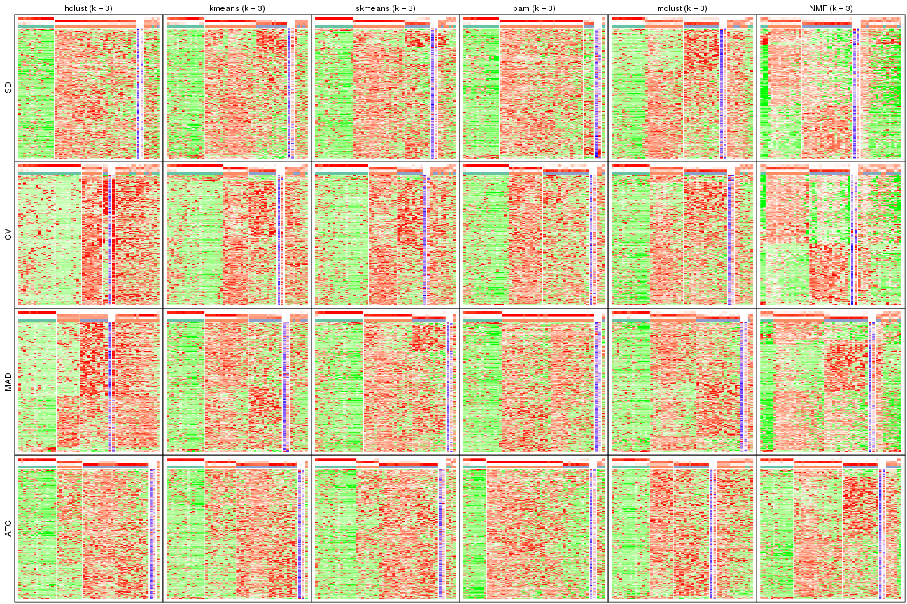
collect_plots(res_list, k = 4, fun = get_signatures, mc.cores = 4)
collect_plots(res_list, k = 5, fun = get_signatures, mc.cores = 4)
collect_plots(res_list, k = 6, fun = get_signatures, mc.cores = 4)
The statistics used for measuring the stability of consensus partitioning. (How are they defined?)
get_stats(res_list, k = 2)
#> k 1-PAC mean_silhouette concordance area_increased Rand Jaccard
#> SD:NMF 2 0.149 0.759 0.814 0.456 0.497 0.497
#> CV:NMF 2 0.559 0.764 0.901 0.505 0.493 0.493
#> MAD:NMF 2 0.654 0.831 0.913 0.471 0.517 0.517
#> ATC:NMF 2 0.560 0.775 0.904 0.497 0.491 0.491
#> SD:skmeans 2 0.880 0.897 0.959 0.495 0.497 0.497
#> CV:skmeans 2 0.957 0.955 0.980 0.510 0.491 0.491
#> MAD:skmeans 2 1.000 0.986 0.993 0.498 0.502 0.502
#> ATC:skmeans 2 0.959 0.942 0.976 0.499 0.502 0.502
#> SD:mclust 2 0.200 0.518 0.705 0.437 0.538 0.538
#> CV:mclust 2 0.880 0.919 0.965 0.448 0.538 0.538
#> MAD:mclust 2 0.277 0.740 0.806 0.427 0.581 0.581
#> ATC:mclust 2 0.571 0.840 0.898 0.475 0.491 0.491
#> SD:kmeans 2 0.919 0.949 0.979 0.445 0.566 0.566
#> CV:kmeans 2 0.919 0.937 0.972 0.508 0.491 0.491
#> MAD:kmeans 2 1.000 0.991 0.995 0.423 0.581 0.581
#> ATC:kmeans 2 1.000 0.964 0.986 0.444 0.566 0.566
#> SD:pam 2 1.000 0.968 0.985 0.423 0.566 0.566
#> CV:pam 2 0.710 0.894 0.940 0.459 0.509 0.509
#> MAD:pam 2 1.000 0.992 0.996 0.422 0.581 0.581
#> ATC:pam 2 1.000 0.996 0.998 0.421 0.581 0.581
#> SD:hclust 2 0.839 0.913 0.960 0.420 0.599 0.599
#> CV:hclust 2 0.295 0.732 0.849 0.433 0.509 0.509
#> MAD:hclust 2 1.000 0.979 0.989 0.423 0.581 0.581
#> ATC:hclust 2 0.959 0.965 0.984 0.421 0.581 0.581
get_stats(res_list, k = 3)
#> k 1-PAC mean_silhouette concordance area_increased Rand Jaccard
#> SD:NMF 3 0.213 0.550 0.759 0.3243 0.875 0.757
#> CV:NMF 3 0.304 0.515 0.740 0.2752 0.854 0.719
#> MAD:NMF 3 0.428 0.660 0.809 0.3170 0.868 0.745
#> ATC:NMF 3 0.681 0.795 0.896 0.3347 0.688 0.446
#> SD:skmeans 3 0.694 0.775 0.899 0.3040 0.775 0.581
#> CV:skmeans 3 0.591 0.682 0.840 0.2849 0.784 0.584
#> MAD:skmeans 3 0.928 0.928 0.961 0.3366 0.784 0.588
#> ATC:skmeans 3 0.741 0.842 0.915 0.2944 0.803 0.624
#> SD:mclust 3 0.349 0.646 0.799 0.4721 0.713 0.501
#> CV:mclust 3 0.514 0.742 0.841 0.4195 0.756 0.558
#> MAD:mclust 3 0.476 0.787 0.856 0.5061 0.742 0.556
#> ATC:mclust 3 0.492 0.665 0.753 0.3461 0.652 0.404
#> SD:kmeans 3 0.648 0.738 0.859 0.4374 0.753 0.571
#> CV:kmeans 3 0.636 0.692 0.862 0.2969 0.811 0.630
#> MAD:kmeans 3 0.638 0.633 0.778 0.5362 0.744 0.559
#> ATC:kmeans 3 0.689 0.835 0.899 0.4806 0.762 0.587
#> SD:pam 3 0.828 0.924 0.956 0.1968 0.912 0.845
#> CV:pam 3 0.679 0.826 0.899 0.4213 0.697 0.466
#> MAD:pam 3 0.929 0.925 0.966 0.0947 0.973 0.953
#> ATC:pam 3 0.904 0.882 0.946 0.3556 0.778 0.634
#> SD:hclust 3 0.670 0.692 0.870 0.2474 0.934 0.892
#> CV:hclust 3 0.378 0.571 0.787 0.2815 0.949 0.899
#> MAD:hclust 3 0.656 0.603 0.775 0.5039 0.784 0.629
#> ATC:hclust 3 0.710 0.855 0.918 0.5016 0.784 0.629
get_stats(res_list, k = 4)
#> k 1-PAC mean_silhouette concordance area_increased Rand Jaccard
#> SD:NMF 4 0.267 0.451 0.689 0.1167 0.923 0.815
#> CV:NMF 4 0.326 0.369 0.640 0.1301 0.888 0.728
#> MAD:NMF 4 0.407 0.559 0.753 0.1103 0.974 0.934
#> ATC:NMF 4 0.569 0.734 0.802 0.0832 0.976 0.928
#> SD:skmeans 4 0.590 0.682 0.820 0.0988 0.941 0.834
#> CV:skmeans 4 0.529 0.553 0.756 0.1036 0.879 0.673
#> MAD:skmeans 4 0.685 0.715 0.840 0.0895 0.922 0.767
#> ATC:skmeans 4 0.793 0.786 0.909 0.1121 0.873 0.667
#> SD:mclust 4 0.543 0.656 0.781 0.1379 0.798 0.471
#> CV:mclust 4 0.490 0.561 0.780 0.0881 0.938 0.821
#> MAD:mclust 4 0.638 0.428 0.733 0.1428 0.807 0.495
#> ATC:mclust 4 0.668 0.733 0.797 0.1373 0.830 0.542
#> SD:kmeans 4 0.661 0.749 0.815 0.1367 0.923 0.781
#> CV:kmeans 4 0.730 0.695 0.835 0.1076 0.867 0.638
#> MAD:kmeans 4 0.769 0.843 0.887 0.1369 0.889 0.674
#> ATC:kmeans 4 0.822 0.818 0.904 0.1196 0.883 0.672
#> SD:pam 4 0.855 0.898 0.960 0.0392 0.989 0.978
#> CV:pam 4 0.642 0.806 0.876 0.0127 1.000 1.000
#> MAD:pam 4 0.883 0.877 0.948 0.0416 1.000 1.000
#> ATC:pam 4 0.805 0.801 0.897 0.0703 0.980 0.951
#> SD:hclust 4 0.567 0.789 0.865 0.1412 0.890 0.802
#> CV:hclust 4 0.411 0.517 0.744 0.1183 0.851 0.691
#> MAD:hclust 4 0.617 0.672 0.801 0.0561 0.825 0.595
#> ATC:hclust 4 0.712 0.782 0.874 0.1184 0.921 0.784
get_stats(res_list, k = 5)
#> k 1-PAC mean_silhouette concordance area_increased Rand Jaccard
#> SD:NMF 5 0.337 0.390 0.653 0.0657 0.969 0.912
#> CV:NMF 5 0.382 0.314 0.579 0.0689 0.971 0.907
#> MAD:NMF 5 0.470 0.514 0.690 0.0498 0.906 0.757
#> ATC:NMF 5 0.523 0.533 0.739 0.0543 0.967 0.899
#> SD:skmeans 5 0.581 0.568 0.770 0.0522 0.943 0.819
#> CV:skmeans 5 0.526 0.470 0.692 0.0588 0.965 0.883
#> MAD:skmeans 5 0.625 0.581 0.781 0.0482 0.983 0.937
#> ATC:skmeans 5 0.736 0.590 0.821 0.0439 0.974 0.912
#> SD:mclust 5 0.611 0.699 0.792 0.0658 0.956 0.816
#> CV:mclust 5 0.670 0.639 0.769 0.0835 0.902 0.695
#> MAD:mclust 5 0.716 0.709 0.774 0.0670 0.902 0.644
#> ATC:mclust 5 0.776 0.799 0.859 0.0689 0.982 0.925
#> SD:kmeans 5 0.786 0.791 0.857 0.0658 0.929 0.757
#> CV:kmeans 5 0.762 0.718 0.843 0.0546 0.905 0.668
#> MAD:kmeans 5 0.740 0.773 0.835 0.0529 1.000 1.000
#> ATC:kmeans 5 0.782 0.441 0.780 0.0619 0.928 0.752
#> SD:pam 5 0.889 0.890 0.966 0.0121 0.990 0.979
#> CV:pam 5 0.602 0.646 0.856 0.0122 0.980 0.937
#> MAD:pam 5 0.845 0.832 0.933 0.0412 0.974 0.952
#> ATC:pam 5 0.844 0.768 0.896 0.0416 0.989 0.973
#> SD:hclust 5 0.600 0.702 0.846 0.0696 0.990 0.978
#> CV:hclust 5 0.513 0.543 0.747 0.0577 0.938 0.835
#> MAD:hclust 5 0.634 0.496 0.777 0.0432 0.964 0.888
#> ATC:hclust 5 0.734 0.766 0.861 0.0452 1.000 1.000
get_stats(res_list, k = 6)
#> k 1-PAC mean_silhouette concordance area_increased Rand Jaccard
#> SD:NMF 6 0.385 0.347 0.613 0.04490 0.928 0.793
#> CV:NMF 6 0.435 0.267 0.521 0.04668 0.911 0.715
#> MAD:NMF 6 0.497 0.486 0.670 0.04112 0.971 0.911
#> ATC:NMF 6 0.534 0.384 0.675 0.03697 0.947 0.823
#> SD:skmeans 6 0.601 0.595 0.733 0.03830 0.966 0.883
#> CV:skmeans 6 0.536 0.422 0.633 0.04208 0.943 0.799
#> MAD:skmeans 6 0.643 0.557 0.742 0.03380 0.974 0.896
#> ATC:skmeans 6 0.738 0.560 0.781 0.02919 0.968 0.885
#> SD:mclust 6 0.679 0.666 0.755 0.03910 1.000 1.000
#> CV:mclust 6 0.719 0.681 0.818 0.04517 0.952 0.810
#> MAD:mclust 6 0.794 0.692 0.813 0.04539 0.975 0.888
#> ATC:mclust 6 0.807 0.721 0.824 0.04757 0.950 0.788
#> SD:kmeans 6 0.780 0.620 0.772 0.03401 0.952 0.796
#> CV:kmeans 6 0.820 0.697 0.830 0.02678 0.977 0.894
#> MAD:kmeans 6 0.742 0.747 0.798 0.03668 0.956 0.823
#> ATC:kmeans 6 0.826 0.886 0.874 0.03920 0.876 0.545
#> SD:pam 6 0.885 0.851 0.947 0.00974 1.000 1.000
#> CV:pam 6 0.570 0.645 0.845 0.01130 0.986 0.955
#> MAD:pam 6 0.785 0.755 0.927 0.03636 0.964 0.931
#> ATC:pam 6 0.849 0.814 0.903 0.01282 0.988 0.969
#> SD:hclust 6 0.611 0.687 0.817 0.04409 0.982 0.960
#> CV:hclust 6 0.573 0.554 0.718 0.04780 0.895 0.707
#> MAD:hclust 6 0.623 0.494 0.775 0.02637 0.962 0.868
#> ATC:hclust 6 0.741 0.708 0.841 0.01565 0.997 0.989
Following heatmap plots the partition for each combination of methods and the lightness correspond to the silhouette scores for samples in each method. On top the consensus subgroup is inferred from all methods by taking the mean silhouette scores as weight.
collect_stats(res_list, k = 2)
collect_stats(res_list, k = 3)
collect_stats(res_list, k = 4)
collect_stats(res_list, k = 5)
collect_stats(res_list, k = 6)
Collect partitions from all methods:
collect_classes(res_list, k = 2)
collect_classes(res_list, k = 3)
collect_classes(res_list, k = 4)
collect_classes(res_list, k = 5)
collect_classes(res_list, k = 6)
Overlap of top rows from different top-row methods:
top_rows_overlap(res_list, top_n = 435, method = "euler")
top_rows_overlap(res_list, top_n = 870, method = "euler")
top_rows_overlap(res_list, top_n = 1306, method = "euler")
top_rows_overlap(res_list, top_n = 1741, method = "euler")
top_rows_overlap(res_list, top_n = 2176, method = "euler")
Also visualize the correspondance of rankings between different top-row methods:
top_rows_overlap(res_list, top_n = 435, method = "correspondance")
top_rows_overlap(res_list, top_n = 870, method = "correspondance")
top_rows_overlap(res_list, top_n = 1306, method = "correspondance")
top_rows_overlap(res_list, top_n = 1741, method = "correspondance")

top_rows_overlap(res_list, top_n = 2176, method = "correspondance")
Heatmaps of the top rows:
top_rows_heatmap(res_list, top_n = 435)
top_rows_heatmap(res_list, top_n = 870)
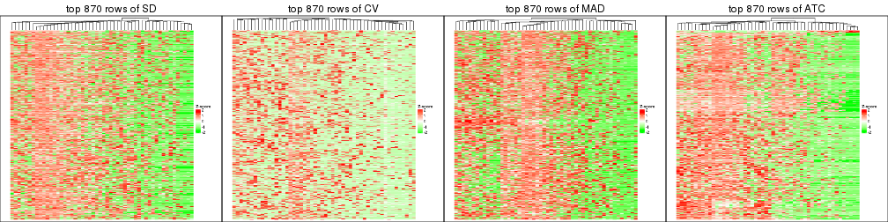
top_rows_heatmap(res_list, top_n = 1306)
top_rows_heatmap(res_list, top_n = 1741)
top_rows_heatmap(res_list, top_n = 2176)
The object with results only for a single top-value method and a single partition method can be extracted as:
res = res_list["SD", "hclust"]
# you can also extract it by
# res = res_list["SD:hclust"]
A summary of res and all the functions that can be applied to it:
res
#> A 'ConsensusPartition' object with k = 2, 3, 4, 5, 6.
#> On a matrix with 4352 rows and 52 columns.
#> Top rows (435, 870, 1306, 1741, 2176) are extracted by 'SD' method.
#> Subgroups are detected by 'hclust' method.
#> Performed in total 1250 partitions by row resampling.
#> Best k for subgroups seems to be 2.
#>
#> Following methods can be applied to this 'ConsensusPartition' object:
#> [1] "cola_report" "collect_classes" "collect_plots"
#> [4] "collect_stats" "colnames" "compare_signatures"
#> [7] "consensus_heatmap" "dimension_reduction" "functional_enrichment"
#> [10] "get_anno_col" "get_anno" "get_classes"
#> [13] "get_consensus" "get_matrix" "get_membership"
#> [16] "get_param" "get_signatures" "get_stats"
#> [19] "is_best_k" "is_stable_k" "membership_heatmap"
#> [22] "ncol" "nrow" "plot_ecdf"
#> [25] "rownames" "select_partition_number" "show"
#> [28] "suggest_best_k" "test_to_known_factors"
collect_plots() function collects all the plots made from res for all k (number of partitions)
into one single page to provide an easy and fast comparison between different k.
collect_plots(res)

The plots are:
k and the heatmap of
predicted classes for each k.k.k.k.All the plots in panels can be made by individual functions and they are plotted later in this section.
select_partition_number() produces several plots showing different
statistics for choosing “optimized” k. There are following statistics:
k;k, the area increased is defined as \(A_k - A_{k-1}\).The detailed explanations of these statistics can be found in the cola vignette.
Generally speaking, lower PAC score, higher mean silhouette score or higher
concordance corresponds to better partition. Rand index and Jaccard index
measure how similar the current partition is compared to partition with k-1.
If they are too similar, we won't accept k is better than k-1.
select_partition_number(res)
The numeric values for all these statistics can be obtained by get_stats().
get_stats(res)
#> k 1-PAC mean_silhouette concordance area_increased Rand Jaccard
#> 2 2 0.839 0.913 0.960 0.4201 0.599 0.599
#> 3 3 0.670 0.692 0.870 0.2474 0.934 0.892
#> 4 4 0.567 0.789 0.865 0.1412 0.890 0.802
#> 5 5 0.600 0.702 0.846 0.0696 0.990 0.978
#> 6 6 0.611 0.687 0.817 0.0441 0.982 0.960
suggest_best_k() suggests the best \(k\) based on these statistics. The rules are as follows:
NA.suggest_best_k(res)
#> [1] 2
Following shows the table of the partitions (You need to click the show/hide
code output link to see it). The membership matrix (columns with name p*)
is inferred by
clue::cl_consensus()
function with the SE method. Basically the value in the membership matrix
represents the probability to belong to a certain group. The finall class
label for an item is determined with the group with highest probability it
belongs to.
In get_classes() function, the entropy is calculated from the membership
matrix and the silhouette score is calculated from the consensus matrix.
cbind(get_classes(res, k = 2), get_membership(res, k = 2))
#> class entropy silhouette p1 p2
#> SRR2042654 1 0.0000 0.968 1.000 0.000
#> SRR2042653 1 0.0938 0.967 0.988 0.012
#> SRR2042652 1 0.0000 0.968 1.000 0.000
#> SRR2042650 1 0.5294 0.886 0.880 0.120
#> SRR2042649 2 0.0376 0.952 0.004 0.996
#> SRR2042647 2 0.0000 0.954 0.000 1.000
#> SRR2042648 2 0.0000 0.954 0.000 1.000
#> SRR2042646 2 0.6247 0.822 0.156 0.844
#> SRR2042645 2 0.0000 0.954 0.000 1.000
#> SRR2042644 2 0.0000 0.954 0.000 1.000
#> SRR2042643 2 0.9977 0.118 0.472 0.528
#> SRR2042642 2 0.0000 0.954 0.000 1.000
#> SRR2042640 2 0.0000 0.954 0.000 1.000
#> SRR2042641 2 0.0000 0.954 0.000 1.000
#> SRR2042639 2 0.0000 0.954 0.000 1.000
#> SRR2042638 2 0.0000 0.954 0.000 1.000
#> SRR2042637 2 0.0938 0.948 0.012 0.988
#> SRR2042636 2 0.2043 0.933 0.032 0.968
#> SRR2042634 2 0.1633 0.939 0.024 0.976
#> SRR2042635 2 0.0000 0.954 0.000 1.000
#> SRR2042633 2 0.0376 0.952 0.004 0.996
#> SRR2042631 2 0.0000 0.954 0.000 1.000
#> SRR2042632 2 0.1184 0.945 0.016 0.984
#> SRR2042630 2 0.0000 0.954 0.000 1.000
#> SRR2042629 2 0.0000 0.954 0.000 1.000
#> SRR2042628 2 0.6343 0.818 0.160 0.840
#> SRR2042626 2 0.0000 0.954 0.000 1.000
#> SRR2042627 1 0.1633 0.965 0.976 0.024
#> SRR2042624 2 0.6148 0.826 0.152 0.848
#> SRR2042625 1 0.2778 0.955 0.952 0.048
#> SRR2042623 1 0.0000 0.968 1.000 0.000
#> SRR2042622 1 0.0000 0.968 1.000 0.000
#> SRR2042620 2 0.0000 0.954 0.000 1.000
#> SRR2042621 2 0.6048 0.830 0.148 0.852
#> SRR2042619 2 0.0000 0.954 0.000 1.000
#> SRR2042618 2 0.0000 0.954 0.000 1.000
#> SRR2042617 1 0.2778 0.955 0.952 0.048
#> SRR2042616 2 0.0000 0.954 0.000 1.000
#> SRR2042615 2 0.0000 0.954 0.000 1.000
#> SRR2042614 2 0.0000 0.954 0.000 1.000
#> SRR2042613 2 0.0672 0.950 0.008 0.992
#> SRR2042612 1 0.4022 0.924 0.920 0.080
#> SRR2042610 1 0.3879 0.932 0.924 0.076
#> SRR2042611 2 0.0000 0.954 0.000 1.000
#> SRR2042607 2 0.0000 0.954 0.000 1.000
#> SRR2042609 1 0.0000 0.968 1.000 0.000
#> SRR2042608 2 0.0000 0.954 0.000 1.000
#> SRR2042656 2 0.0000 0.954 0.000 1.000
#> SRR2042658 2 0.9896 0.264 0.440 0.560
#> SRR2042659 1 0.0000 0.968 1.000 0.000
#> SRR2042657 2 0.2423 0.927 0.040 0.960
#> SRR2042655 1 0.0376 0.968 0.996 0.004
cbind(get_classes(res, k = 3), get_membership(res, k = 3))
#> class entropy silhouette p1 p2 p3
#> SRR2042654 1 0.0000 0.8299 1.000 0.000 0.000
#> SRR2042653 1 0.1031 0.8266 0.976 0.000 0.024
#> SRR2042652 1 0.0000 0.8299 1.000 0.000 0.000
#> SRR2042650 1 0.5863 0.6277 0.796 0.084 0.120
#> SRR2042649 2 0.2261 0.8115 0.000 0.932 0.068
#> SRR2042647 2 0.3879 0.7503 0.000 0.848 0.152
#> SRR2042648 2 0.0000 0.8345 0.000 1.000 0.000
#> SRR2042646 2 0.7912 0.0427 0.060 0.536 0.404
#> SRR2042645 2 0.3816 0.7536 0.000 0.852 0.148
#> SRR2042644 2 0.1031 0.8299 0.000 0.976 0.024
#> SRR2042643 3 0.9531 0.0000 0.308 0.216 0.476
#> SRR2042642 2 0.0000 0.8345 0.000 1.000 0.000
#> SRR2042640 2 0.1163 0.8265 0.000 0.972 0.028
#> SRR2042641 2 0.1964 0.8171 0.000 0.944 0.056
#> SRR2042639 2 0.1031 0.8299 0.000 0.976 0.024
#> SRR2042638 2 0.0000 0.8345 0.000 1.000 0.000
#> SRR2042637 2 0.2796 0.7927 0.000 0.908 0.092
#> SRR2042636 2 0.4654 0.6866 0.000 0.792 0.208
#> SRR2042634 2 0.4504 0.7064 0.000 0.804 0.196
#> SRR2042635 2 0.0000 0.8345 0.000 1.000 0.000
#> SRR2042633 2 0.2537 0.8032 0.000 0.920 0.080
#> SRR2042631 2 0.3879 0.7503 0.000 0.848 0.152
#> SRR2042632 2 0.2625 0.7997 0.000 0.916 0.084
#> SRR2042630 2 0.1964 0.8171 0.000 0.944 0.056
#> SRR2042629 2 0.3879 0.7503 0.000 0.848 0.152
#> SRR2042628 2 0.7990 0.0232 0.064 0.532 0.404
#> SRR2042626 2 0.0000 0.8345 0.000 1.000 0.000
#> SRR2042627 1 0.2384 0.8164 0.936 0.008 0.056
#> SRR2042624 2 0.7831 0.0570 0.056 0.540 0.404
#> SRR2042625 1 0.3769 0.7809 0.880 0.016 0.104
#> SRR2042623 1 0.0000 0.8299 1.000 0.000 0.000
#> SRR2042622 1 0.0000 0.8299 1.000 0.000 0.000
#> SRR2042620 2 0.3879 0.7503 0.000 0.848 0.152
#> SRR2042621 2 0.7901 0.0545 0.060 0.540 0.400
#> SRR2042619 2 0.3941 0.7489 0.000 0.844 0.156
#> SRR2042618 2 0.0000 0.8345 0.000 1.000 0.000
#> SRR2042617 1 0.4045 0.7759 0.872 0.024 0.104
#> SRR2042616 2 0.0000 0.8345 0.000 1.000 0.000
#> SRR2042615 2 0.0237 0.8340 0.000 0.996 0.004
#> SRR2042614 2 0.0000 0.8345 0.000 1.000 0.000
#> SRR2042613 2 0.2448 0.8068 0.000 0.924 0.076
#> SRR2042612 1 0.3941 0.6970 0.844 0.000 0.156
#> SRR2042610 1 0.6597 0.5380 0.696 0.036 0.268
#> SRR2042611 2 0.0000 0.8345 0.000 1.000 0.000
#> SRR2042607 2 0.3879 0.7503 0.000 0.848 0.152
#> SRR2042609 1 0.0000 0.8299 1.000 0.000 0.000
#> SRR2042608 2 0.2165 0.8138 0.000 0.936 0.064
#> SRR2042656 2 0.0592 0.8322 0.000 0.988 0.012
#> SRR2042658 1 0.9981 -0.4600 0.364 0.320 0.316
#> SRR2042659 1 0.1964 0.8141 0.944 0.000 0.056
#> SRR2042657 2 0.5016 0.6439 0.000 0.760 0.240
#> SRR2042655 1 0.0592 0.8279 0.988 0.000 0.012
cbind(get_classes(res, k = 4), get_membership(res, k = 4))
#> class entropy silhouette p1 p2 p3 p4
#> SRR2042654 1 0.0000 0.876 1.000 0.000 0.000 0.000
#> SRR2042653 1 0.1059 0.873 0.972 0.000 0.012 0.016
#> SRR2042652 1 0.0000 0.876 1.000 0.000 0.000 0.000
#> SRR2042650 1 0.6058 0.690 0.728 0.036 0.076 0.160
#> SRR2042649 2 0.3335 0.811 0.000 0.860 0.120 0.020
#> SRR2042647 2 0.3486 0.806 0.000 0.812 0.000 0.188
#> SRR2042648 2 0.0000 0.874 0.000 1.000 0.000 0.000
#> SRR2042646 3 0.3913 0.790 0.028 0.148 0.824 0.000
#> SRR2042645 2 0.3895 0.805 0.000 0.804 0.012 0.184
#> SRR2042644 2 0.1722 0.859 0.000 0.944 0.048 0.008
#> SRR2042643 4 0.8030 0.000 0.148 0.028 0.400 0.424
#> SRR2042642 2 0.0000 0.874 0.000 1.000 0.000 0.000
#> SRR2042640 2 0.1302 0.867 0.000 0.956 0.000 0.044
#> SRR2042641 2 0.2915 0.830 0.000 0.892 0.080 0.028
#> SRR2042639 2 0.1767 0.862 0.000 0.944 0.044 0.012
#> SRR2042638 2 0.0000 0.874 0.000 1.000 0.000 0.000
#> SRR2042637 2 0.3790 0.763 0.000 0.820 0.164 0.016
#> SRR2042636 2 0.5267 0.721 0.000 0.712 0.048 0.240
#> SRR2042634 2 0.5321 0.722 0.000 0.716 0.056 0.228
#> SRR2042635 2 0.0000 0.874 0.000 1.000 0.000 0.000
#> SRR2042633 2 0.3708 0.783 0.000 0.832 0.148 0.020
#> SRR2042631 2 0.3486 0.806 0.000 0.812 0.000 0.188
#> SRR2042632 2 0.3658 0.788 0.000 0.836 0.144 0.020
#> SRR2042630 2 0.2845 0.832 0.000 0.896 0.076 0.028
#> SRR2042629 2 0.3486 0.806 0.000 0.812 0.000 0.188
#> SRR2042628 3 0.3781 0.783 0.028 0.124 0.844 0.004
#> SRR2042626 2 0.0000 0.874 0.000 1.000 0.000 0.000
#> SRR2042627 1 0.2669 0.858 0.912 0.004 0.032 0.052
#> SRR2042624 3 0.3659 0.798 0.024 0.136 0.840 0.000
#> SRR2042625 1 0.4144 0.793 0.816 0.004 0.028 0.152
#> SRR2042623 1 0.0000 0.876 1.000 0.000 0.000 0.000
#> SRR2042622 1 0.0000 0.876 1.000 0.000 0.000 0.000
#> SRR2042620 2 0.3486 0.806 0.000 0.812 0.000 0.188
#> SRR2042621 3 0.4188 0.789 0.028 0.144 0.820 0.008
#> SRR2042619 2 0.3668 0.804 0.000 0.808 0.004 0.188
#> SRR2042618 2 0.0188 0.873 0.000 0.996 0.004 0.000
#> SRR2042617 1 0.4254 0.810 0.828 0.004 0.064 0.104
#> SRR2042616 2 0.0000 0.874 0.000 1.000 0.000 0.000
#> SRR2042615 2 0.0336 0.873 0.000 0.992 0.008 0.000
#> SRR2042614 2 0.0188 0.873 0.000 0.996 0.004 0.000
#> SRR2042613 2 0.3547 0.786 0.000 0.840 0.144 0.016
#> SRR2042612 1 0.4805 0.683 0.784 0.000 0.084 0.132
#> SRR2042610 1 0.6161 0.377 0.552 0.004 0.044 0.400
#> SRR2042611 2 0.0000 0.874 0.000 1.000 0.000 0.000
#> SRR2042607 2 0.3486 0.806 0.000 0.812 0.000 0.188
#> SRR2042609 1 0.0000 0.876 1.000 0.000 0.000 0.000
#> SRR2042608 2 0.3051 0.826 0.000 0.884 0.088 0.028
#> SRR2042656 2 0.0469 0.873 0.000 0.988 0.000 0.012
#> SRR2042658 3 0.6856 0.232 0.316 0.064 0.592 0.028
#> SRR2042659 1 0.2282 0.856 0.924 0.000 0.052 0.024
#> SRR2042657 2 0.4903 0.739 0.000 0.724 0.028 0.248
#> SRR2042655 1 0.0804 0.875 0.980 0.000 0.012 0.008
cbind(get_classes(res, k = 5), get_membership(res, k = 5))
#> class entropy silhouette p1 p2 p3 p4 p5
#> SRR2042654 1 0.0000 0.7868 1.000 0.000 0.000 0.000 0.000
#> SRR2042653 1 0.1278 0.7747 0.960 0.000 0.004 0.020 0.016
#> SRR2042652 1 0.0000 0.7868 1.000 0.000 0.000 0.000 0.000
#> SRR2042650 1 0.5817 0.2341 0.696 0.024 0.068 0.028 0.184
#> SRR2042649 2 0.3759 0.7532 0.000 0.808 0.136 0.000 0.056
#> SRR2042647 2 0.3730 0.7155 0.000 0.712 0.000 0.000 0.288
#> SRR2042648 2 0.0000 0.8362 0.000 1.000 0.000 0.000 0.000
#> SRR2042646 3 0.1644 0.8378 0.000 0.048 0.940 0.004 0.008
#> SRR2042645 2 0.4252 0.7127 0.000 0.700 0.020 0.000 0.280
#> SRR2042644 2 0.1697 0.8184 0.000 0.932 0.060 0.000 0.008
#> SRR2042643 4 0.4076 0.0000 0.056 0.004 0.108 0.816 0.016
#> SRR2042642 2 0.0000 0.8362 0.000 1.000 0.000 0.000 0.000
#> SRR2042640 2 0.1341 0.8263 0.000 0.944 0.000 0.000 0.056
#> SRR2042641 2 0.3297 0.7763 0.000 0.848 0.084 0.000 0.068
#> SRR2042639 2 0.1740 0.8211 0.000 0.932 0.056 0.000 0.012
#> SRR2042638 2 0.0000 0.8362 0.000 1.000 0.000 0.000 0.000
#> SRR2042637 2 0.3882 0.7298 0.000 0.788 0.168 0.000 0.044
#> SRR2042636 2 0.6087 0.6230 0.000 0.624 0.024 0.124 0.228
#> SRR2042634 2 0.5995 0.6210 0.000 0.620 0.036 0.076 0.268
#> SRR2042635 2 0.0000 0.8362 0.000 1.000 0.000 0.000 0.000
#> SRR2042633 2 0.3723 0.7503 0.000 0.804 0.152 0.000 0.044
#> SRR2042631 2 0.3730 0.7155 0.000 0.712 0.000 0.000 0.288
#> SRR2042632 2 0.4010 0.7292 0.000 0.784 0.160 0.000 0.056
#> SRR2042630 2 0.3119 0.7838 0.000 0.860 0.072 0.000 0.068
#> SRR2042629 2 0.3730 0.7155 0.000 0.712 0.000 0.000 0.288
#> SRR2042628 3 0.1412 0.8362 0.004 0.036 0.952 0.008 0.000
#> SRR2042626 2 0.0000 0.8362 0.000 1.000 0.000 0.000 0.000
#> SRR2042627 1 0.3007 0.7213 0.884 0.000 0.044 0.028 0.044
#> SRR2042624 3 0.1043 0.8431 0.000 0.040 0.960 0.000 0.000
#> SRR2042625 1 0.4109 0.5036 0.784 0.000 0.020 0.024 0.172
#> SRR2042623 1 0.0000 0.7868 1.000 0.000 0.000 0.000 0.000
#> SRR2042622 1 0.0000 0.7868 1.000 0.000 0.000 0.000 0.000
#> SRR2042620 2 0.3730 0.7155 0.000 0.712 0.000 0.000 0.288
#> SRR2042621 3 0.1857 0.8247 0.004 0.060 0.928 0.008 0.000
#> SRR2042619 2 0.3884 0.7134 0.000 0.708 0.004 0.000 0.288
#> SRR2042618 2 0.0162 0.8360 0.000 0.996 0.004 0.000 0.000
#> SRR2042617 1 0.4440 0.5721 0.792 0.000 0.072 0.028 0.108
#> SRR2042616 2 0.0000 0.8362 0.000 1.000 0.000 0.000 0.000
#> SRR2042615 2 0.0290 0.8354 0.000 0.992 0.008 0.000 0.000
#> SRR2042614 2 0.0162 0.8360 0.000 0.996 0.004 0.000 0.000
#> SRR2042613 2 0.3536 0.7484 0.000 0.812 0.156 0.000 0.032
#> SRR2042612 1 0.5980 -0.0889 0.576 0.000 0.016 0.320 0.088
#> SRR2042610 5 0.4798 0.0000 0.440 0.000 0.020 0.000 0.540
#> SRR2042611 2 0.0000 0.8362 0.000 1.000 0.000 0.000 0.000
#> SRR2042607 2 0.3730 0.7155 0.000 0.712 0.000 0.000 0.288
#> SRR2042609 1 0.0000 0.7868 1.000 0.000 0.000 0.000 0.000
#> SRR2042608 2 0.3622 0.7655 0.000 0.832 0.096 0.004 0.068
#> SRR2042656 2 0.0609 0.8345 0.000 0.980 0.000 0.000 0.020
#> SRR2042658 3 0.6317 0.4089 0.200 0.008 0.644 0.104 0.044
#> SRR2042659 1 0.2304 0.7236 0.908 0.000 0.068 0.004 0.020
#> SRR2042657 2 0.5670 0.6510 0.000 0.636 0.008 0.108 0.248
#> SRR2042655 1 0.0960 0.7816 0.972 0.000 0.008 0.016 0.004
cbind(get_classes(res, k = 6), get_membership(res, k = 6))
#> class entropy silhouette p1 p2 p3 p4 p5 p6
#> SRR2042654 1 0.0000 0.8111 1.000 0.000 0.000 0.000 0.000 NA
#> SRR2042653 1 0.1605 0.8006 0.940 0.000 0.000 0.016 0.032 NA
#> SRR2042652 1 0.0000 0.8111 1.000 0.000 0.000 0.000 0.000 NA
#> SRR2042650 1 0.4994 0.5772 0.660 0.008 0.020 0.004 0.040 NA
#> SRR2042649 2 0.3840 0.7246 0.000 0.796 0.116 0.004 0.008 NA
#> SRR2042647 2 0.3647 0.6304 0.000 0.640 0.000 0.000 0.000 NA
#> SRR2042648 2 0.0000 0.8042 0.000 1.000 0.000 0.000 0.000 NA
#> SRR2042646 3 0.1218 0.8520 0.000 0.028 0.956 0.000 0.004 NA
#> SRR2042645 2 0.4521 0.5979 0.000 0.596 0.004 0.004 0.024 NA
#> SRR2042644 2 0.1745 0.7863 0.000 0.924 0.056 0.000 0.000 NA
#> SRR2042643 4 0.1391 0.0000 0.016 0.000 0.040 0.944 0.000 NA
#> SRR2042642 2 0.0000 0.8042 0.000 1.000 0.000 0.000 0.000 NA
#> SRR2042640 2 0.1267 0.7922 0.000 0.940 0.000 0.000 0.000 NA
#> SRR2042641 2 0.3432 0.7461 0.000 0.836 0.060 0.004 0.016 NA
#> SRR2042639 2 0.1765 0.7887 0.000 0.924 0.052 0.000 0.000 NA
#> SRR2042638 2 0.0000 0.8042 0.000 1.000 0.000 0.000 0.000 NA
#> SRR2042637 2 0.4002 0.6993 0.000 0.768 0.152 0.000 0.008 NA
#> SRR2042636 2 0.5749 0.4888 0.000 0.528 0.004 0.096 0.020 NA
#> SRR2042634 2 0.5417 0.4560 0.000 0.504 0.004 0.040 0.032 NA
#> SRR2042635 2 0.0000 0.8042 0.000 1.000 0.000 0.000 0.000 NA
#> SRR2042633 2 0.3743 0.7221 0.000 0.788 0.136 0.000 0.004 NA
#> SRR2042631 2 0.3647 0.6304 0.000 0.640 0.000 0.000 0.000 NA
#> SRR2042632 2 0.4083 0.7018 0.000 0.772 0.140 0.004 0.008 NA
#> SRR2042630 2 0.3299 0.7527 0.000 0.844 0.048 0.004 0.016 NA
#> SRR2042629 2 0.3647 0.6304 0.000 0.640 0.000 0.000 0.000 NA
#> SRR2042628 3 0.1317 0.8513 0.000 0.016 0.956 0.004 0.008 NA
#> SRR2042626 2 0.0000 0.8042 0.000 1.000 0.000 0.000 0.000 NA
#> SRR2042627 1 0.3454 0.7711 0.848 0.000 0.020 0.020 0.052 NA
#> SRR2042624 3 0.0458 0.8586 0.000 0.016 0.984 0.000 0.000 NA
#> SRR2042625 1 0.4089 0.6784 0.756 0.000 0.000 0.008 0.068 NA
#> SRR2042623 1 0.0000 0.8111 1.000 0.000 0.000 0.000 0.000 NA
#> SRR2042622 1 0.0000 0.8111 1.000 0.000 0.000 0.000 0.000 NA
#> SRR2042620 2 0.3647 0.6304 0.000 0.640 0.000 0.000 0.000 NA
#> SRR2042621 3 0.1768 0.8408 0.000 0.040 0.932 0.004 0.004 NA
#> SRR2042619 2 0.3782 0.6276 0.000 0.636 0.004 0.000 0.000 NA
#> SRR2042618 2 0.0146 0.8039 0.000 0.996 0.004 0.000 0.000 NA
#> SRR2042617 1 0.4983 0.6838 0.728 0.000 0.028 0.020 0.084 NA
#> SRR2042616 2 0.0000 0.8042 0.000 1.000 0.000 0.000 0.000 NA
#> SRR2042615 2 0.0260 0.8034 0.000 0.992 0.008 0.000 0.000 NA
#> SRR2042614 2 0.0146 0.8039 0.000 0.996 0.004 0.000 0.000 NA
#> SRR2042613 2 0.3615 0.7179 0.000 0.796 0.140 0.000 0.004 NA
#> SRR2042612 5 0.5308 0.0000 0.272 0.000 0.016 0.100 0.612 NA
#> SRR2042610 1 0.6572 -0.0919 0.372 0.000 0.000 0.024 0.272 NA
#> SRR2042611 2 0.0000 0.8042 0.000 1.000 0.000 0.000 0.000 NA
#> SRR2042607 2 0.3647 0.6304 0.000 0.640 0.000 0.000 0.000 NA
#> SRR2042609 1 0.0000 0.8111 1.000 0.000 0.000 0.000 0.000 NA
#> SRR2042608 2 0.3811 0.7315 0.000 0.812 0.072 0.008 0.016 NA
#> SRR2042656 2 0.0547 0.8022 0.000 0.980 0.000 0.000 0.000 NA
#> SRR2042658 3 0.5169 0.4312 0.080 0.000 0.640 0.004 0.260 NA
#> SRR2042659 1 0.3072 0.7652 0.868 0.000 0.024 0.008 0.052 NA
#> SRR2042657 2 0.5726 0.5224 0.000 0.540 0.000 0.116 0.020 NA
#> SRR2042655 1 0.1409 0.8049 0.948 0.000 0.000 0.012 0.032 NA
Heatmaps for the consensus matrix. It visualizes the probability of two samples to be in a same group.
consensus_heatmap(res, k = 2)
consensus_heatmap(res, k = 3)
consensus_heatmap(res, k = 4)
consensus_heatmap(res, k = 5)
consensus_heatmap(res, k = 6)
Heatmaps for the membership of samples in all partitions to see how consistent they are:
membership_heatmap(res, k = 2)
membership_heatmap(res, k = 3)
membership_heatmap(res, k = 4)
membership_heatmap(res, k = 5)
membership_heatmap(res, k = 6)
As soon as we have had the classes for columns, we can look for signatures which are significantly different between classes which can be candidate marks for certain classes. Following are the heatmaps for signatures.
Signature heatmaps where rows are scaled:
get_signatures(res, k = 2)
get_signatures(res, k = 3)
get_signatures(res, k = 4)
get_signatures(res, k = 5)
get_signatures(res, k = 6)
Signature heatmaps where rows are not scaled:
get_signatures(res, k = 2, scale_rows = FALSE)
get_signatures(res, k = 3, scale_rows = FALSE)
get_signatures(res, k = 4, scale_rows = FALSE)
get_signatures(res, k = 5, scale_rows = FALSE)
get_signatures(res, k = 6, scale_rows = FALSE)

Compare the overlap of signatures from different k:
compare_signatures(res)
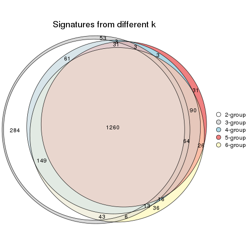
get_signature() returns a data frame invisibly. TO get the list of signatures, the function
call should be assigned to a variable explicitly. In following code, if plot argument is set
to FALSE, no heatmap is plotted while only the differential analysis is performed.
# code only for demonstration
tb = get_signature(res, k = ..., plot = FALSE)
An example of the output of tb is:
#> which_row fdr mean_1 mean_2 scaled_mean_1 scaled_mean_2 km
#> 1 38 0.042760348 8.373488 9.131774 -0.5533452 0.5164555 1
#> 2 40 0.018707592 7.106213 8.469186 -0.6173731 0.5762149 1
#> 3 55 0.019134737 10.221463 11.207825 -0.6159697 0.5749050 1
#> 4 59 0.006059896 5.921854 7.869574 -0.6899429 0.6439467 1
#> 5 60 0.018055526 8.928898 10.211722 -0.6204761 0.5791110 1
#> 6 98 0.009384629 15.714769 14.887706 0.6635654 -0.6193277 2
...
The columns in tb are:
which_row: row indices corresponding to the input matrix.fdr: FDR for the differential test. mean_x: The mean value in group x.scaled_mean_x: The mean value in group x after rows are scaled.km: Row groups if k-means clustering is applied to rows.UMAP plot which shows how samples are separated.
dimension_reduction(res, k = 2, method = "UMAP")
dimension_reduction(res, k = 3, method = "UMAP")
dimension_reduction(res, k = 4, method = "UMAP")
dimension_reduction(res, k = 5, method = "UMAP")
dimension_reduction(res, k = 6, method = "UMAP")
Following heatmap shows how subgroups are split when increasing k:
collect_classes(res)
If matrix rows can be associated to genes, consider to use GO_Enrichment(res,
...) to perform function enrichment for the signature genes.
The object with results only for a single top-value method and a single partition method can be extracted as:
res = res_list["SD", "kmeans"]
# you can also extract it by
# res = res_list["SD:kmeans"]
A summary of res and all the functions that can be applied to it:
res
#> A 'ConsensusPartition' object with k = 2, 3, 4, 5, 6.
#> On a matrix with 4352 rows and 52 columns.
#> Top rows (435, 870, 1306, 1741, 2176) are extracted by 'SD' method.
#> Subgroups are detected by 'kmeans' method.
#> Performed in total 1250 partitions by row resampling.
#> Best k for subgroups seems to be 2.
#>
#> Following methods can be applied to this 'ConsensusPartition' object:
#> [1] "cola_report" "collect_classes" "collect_plots"
#> [4] "collect_stats" "colnames" "compare_signatures"
#> [7] "consensus_heatmap" "dimension_reduction" "functional_enrichment"
#> [10] "get_anno_col" "get_anno" "get_classes"
#> [13] "get_consensus" "get_matrix" "get_membership"
#> [16] "get_param" "get_signatures" "get_stats"
#> [19] "is_best_k" "is_stable_k" "membership_heatmap"
#> [22] "ncol" "nrow" "plot_ecdf"
#> [25] "rownames" "select_partition_number" "show"
#> [28] "suggest_best_k" "test_to_known_factors"
collect_plots() function collects all the plots made from res for all k (number of partitions)
into one single page to provide an easy and fast comparison between different k.
collect_plots(res)
The plots are:
k and the heatmap of
predicted classes for each k.k.k.k.All the plots in panels can be made by individual functions and they are plotted later in this section.
select_partition_number() produces several plots showing different
statistics for choosing “optimized” k. There are following statistics:
k;k, the area increased is defined as \(A_k - A_{k-1}\).The detailed explanations of these statistics can be found in the cola vignette.
Generally speaking, lower PAC score, higher mean silhouette score or higher
concordance corresponds to better partition. Rand index and Jaccard index
measure how similar the current partition is compared to partition with k-1.
If they are too similar, we won't accept k is better than k-1.
select_partition_number(res)
The numeric values for all these statistics can be obtained by get_stats().
get_stats(res)
#> k 1-PAC mean_silhouette concordance area_increased Rand Jaccard
#> 2 2 0.919 0.949 0.979 0.4449 0.566 0.566
#> 3 3 0.648 0.738 0.859 0.4374 0.753 0.571
#> 4 4 0.661 0.749 0.815 0.1367 0.923 0.781
#> 5 5 0.786 0.791 0.857 0.0658 0.929 0.757
#> 6 6 0.780 0.620 0.772 0.0340 0.952 0.796
suggest_best_k() suggests the best \(k\) based on these statistics. The rules are as follows:
NA.suggest_best_k(res)
#> [1] 2
Following shows the table of the partitions (You need to click the show/hide
code output link to see it). The membership matrix (columns with name p*)
is inferred by
clue::cl_consensus()
function with the SE method. Basically the value in the membership matrix
represents the probability to belong to a certain group. The finall class
label for an item is determined with the group with highest probability it
belongs to.
In get_classes() function, the entropy is calculated from the membership
matrix and the silhouette score is calculated from the consensus matrix.
cbind(get_classes(res, k = 2), get_membership(res, k = 2))
#> class entropy silhouette p1 p2
#> SRR2042654 1 0.000 0.989 1.000 0.000
#> SRR2042653 1 0.000 0.989 1.000 0.000
#> SRR2042652 1 0.000 0.989 1.000 0.000
#> SRR2042650 1 0.000 0.989 1.000 0.000
#> SRR2042649 2 0.000 0.972 0.000 1.000
#> SRR2042647 2 0.000 0.972 0.000 1.000
#> SRR2042648 2 0.000 0.972 0.000 1.000
#> SRR2042646 2 0.767 0.720 0.224 0.776
#> SRR2042645 2 0.000 0.972 0.000 1.000
#> SRR2042644 2 0.000 0.972 0.000 1.000
#> SRR2042643 1 0.000 0.989 1.000 0.000
#> SRR2042642 2 0.000 0.972 0.000 1.000
#> SRR2042640 2 0.000 0.972 0.000 1.000
#> SRR2042641 2 0.000 0.972 0.000 1.000
#> SRR2042639 2 0.000 0.972 0.000 1.000
#> SRR2042638 2 0.000 0.972 0.000 1.000
#> SRR2042637 2 0.000 0.972 0.000 1.000
#> SRR2042636 2 0.000 0.972 0.000 1.000
#> SRR2042634 2 0.000 0.972 0.000 1.000
#> SRR2042635 2 0.000 0.972 0.000 1.000
#> SRR2042633 2 0.000 0.972 0.000 1.000
#> SRR2042631 2 0.000 0.972 0.000 1.000
#> SRR2042632 2 0.000 0.972 0.000 1.000
#> SRR2042630 2 0.000 0.972 0.000 1.000
#> SRR2042629 2 0.000 0.972 0.000 1.000
#> SRR2042628 2 0.988 0.256 0.436 0.564
#> SRR2042626 2 0.000 0.972 0.000 1.000
#> SRR2042627 1 0.000 0.989 1.000 0.000
#> SRR2042624 2 0.634 0.809 0.160 0.840
#> SRR2042625 1 0.000 0.989 1.000 0.000
#> SRR2042623 1 0.000 0.989 1.000 0.000
#> SRR2042622 1 0.000 0.989 1.000 0.000
#> SRR2042620 2 0.000 0.972 0.000 1.000
#> SRR2042621 2 0.595 0.829 0.144 0.856
#> SRR2042619 2 0.000 0.972 0.000 1.000
#> SRR2042618 2 0.000 0.972 0.000 1.000
#> SRR2042617 1 0.000 0.989 1.000 0.000
#> SRR2042616 2 0.000 0.972 0.000 1.000
#> SRR2042615 2 0.000 0.972 0.000 1.000
#> SRR2042614 2 0.000 0.972 0.000 1.000
#> SRR2042613 2 0.000 0.972 0.000 1.000
#> SRR2042612 1 0.000 0.989 1.000 0.000
#> SRR2042610 1 0.000 0.989 1.000 0.000
#> SRR2042611 2 0.000 0.972 0.000 1.000
#> SRR2042607 2 0.000 0.972 0.000 1.000
#> SRR2042609 1 0.000 0.989 1.000 0.000
#> SRR2042608 2 0.000 0.972 0.000 1.000
#> SRR2042656 2 0.000 0.972 0.000 1.000
#> SRR2042658 1 0.615 0.810 0.848 0.152
#> SRR2042659 1 0.000 0.989 1.000 0.000
#> SRR2042657 2 0.000 0.972 0.000 1.000
#> SRR2042655 1 0.000 0.989 1.000 0.000
cbind(get_classes(res, k = 3), get_membership(res, k = 3))
#> class entropy silhouette p1 p2 p3
#> SRR2042654 1 0.0000 0.8802 1.000 0.000 0.000
#> SRR2042653 1 0.3116 0.8989 0.892 0.000 0.108
#> SRR2042652 1 0.0000 0.8802 1.000 0.000 0.000
#> SRR2042650 1 0.4887 0.8686 0.772 0.000 0.228
#> SRR2042649 3 0.5810 0.7004 0.000 0.336 0.664
#> SRR2042647 2 0.1411 0.8641 0.000 0.964 0.036
#> SRR2042648 2 0.0000 0.8806 0.000 1.000 0.000
#> SRR2042646 3 0.1753 0.6815 0.000 0.048 0.952
#> SRR2042645 3 0.6286 0.1585 0.000 0.464 0.536
#> SRR2042644 2 0.6267 -0.2939 0.000 0.548 0.452
#> SRR2042643 1 0.6235 0.6077 0.564 0.000 0.436
#> SRR2042642 2 0.0000 0.8806 0.000 1.000 0.000
#> SRR2042640 2 0.0892 0.8719 0.000 0.980 0.020
#> SRR2042641 3 0.6095 0.6345 0.000 0.392 0.608
#> SRR2042639 2 0.0000 0.8806 0.000 1.000 0.000
#> SRR2042638 2 0.0000 0.8806 0.000 1.000 0.000
#> SRR2042637 3 0.5905 0.6877 0.000 0.352 0.648
#> SRR2042636 2 0.6302 -0.0408 0.000 0.520 0.480
#> SRR2042634 2 0.6302 -0.0071 0.000 0.520 0.480
#> SRR2042635 2 0.0000 0.8806 0.000 1.000 0.000
#> SRR2042633 3 0.5591 0.7126 0.000 0.304 0.696
#> SRR2042631 2 0.3619 0.7749 0.000 0.864 0.136
#> SRR2042632 3 0.5882 0.6914 0.000 0.348 0.652
#> SRR2042630 2 0.2537 0.7937 0.000 0.920 0.080
#> SRR2042629 2 0.2066 0.8493 0.000 0.940 0.060
#> SRR2042628 3 0.1163 0.6648 0.000 0.028 0.972
#> SRR2042626 2 0.0000 0.8806 0.000 1.000 0.000
#> SRR2042627 1 0.4291 0.8902 0.820 0.000 0.180
#> SRR2042624 3 0.1163 0.6648 0.000 0.028 0.972
#> SRR2042625 1 0.4121 0.8924 0.832 0.000 0.168
#> SRR2042623 1 0.0000 0.8802 1.000 0.000 0.000
#> SRR2042622 1 0.0000 0.8802 1.000 0.000 0.000
#> SRR2042620 2 0.1289 0.8656 0.000 0.968 0.032
#> SRR2042621 3 0.2261 0.6954 0.000 0.068 0.932
#> SRR2042619 2 0.3752 0.7649 0.000 0.856 0.144
#> SRR2042618 2 0.0000 0.8806 0.000 1.000 0.000
#> SRR2042617 1 0.4796 0.8736 0.780 0.000 0.220
#> SRR2042616 2 0.0000 0.8806 0.000 1.000 0.000
#> SRR2042615 2 0.0000 0.8806 0.000 1.000 0.000
#> SRR2042614 2 0.0000 0.8806 0.000 1.000 0.000
#> SRR2042613 3 0.5926 0.6840 0.000 0.356 0.644
#> SRR2042612 1 0.5098 0.8478 0.752 0.000 0.248
#> SRR2042610 1 0.4605 0.8813 0.796 0.000 0.204
#> SRR2042611 2 0.0000 0.8806 0.000 1.000 0.000
#> SRR2042607 2 0.1860 0.8553 0.000 0.948 0.052
#> SRR2042609 1 0.0000 0.8802 1.000 0.000 0.000
#> SRR2042608 3 0.5431 0.7171 0.000 0.284 0.716
#> SRR2042656 2 0.0000 0.8806 0.000 1.000 0.000
#> SRR2042658 3 0.1315 0.6372 0.020 0.008 0.972
#> SRR2042659 1 0.2261 0.8948 0.932 0.000 0.068
#> SRR2042657 3 0.6204 0.2495 0.000 0.424 0.576
#> SRR2042655 1 0.3192 0.8989 0.888 0.000 0.112
cbind(get_classes(res, k = 4), get_membership(res, k = 4))
#> class entropy silhouette p1 p2 p3 p4
#> SRR2042654 1 0.5355 0.6635 0.620 0.000 0.020 0.360
#> SRR2042653 1 0.0707 0.7367 0.980 0.000 0.000 0.020
#> SRR2042652 1 0.5355 0.6635 0.620 0.000 0.020 0.360
#> SRR2042650 1 0.3810 0.6371 0.804 0.000 0.008 0.188
#> SRR2042649 3 0.2401 0.8842 0.000 0.092 0.904 0.004
#> SRR2042647 2 0.4086 0.6738 0.000 0.776 0.008 0.216
#> SRR2042648 2 0.0000 0.8560 0.000 1.000 0.000 0.000
#> SRR2042646 3 0.2718 0.8526 0.056 0.012 0.912 0.020
#> SRR2042645 4 0.8462 0.8479 0.096 0.188 0.172 0.544
#> SRR2042644 3 0.4673 0.6025 0.000 0.292 0.700 0.008
#> SRR2042643 1 0.6031 0.1763 0.564 0.000 0.048 0.388
#> SRR2042642 2 0.0000 0.8560 0.000 1.000 0.000 0.000
#> SRR2042640 2 0.1474 0.8324 0.000 0.948 0.000 0.052
#> SRR2042641 3 0.3392 0.8465 0.000 0.124 0.856 0.020
#> SRR2042639 2 0.1452 0.8385 0.000 0.956 0.036 0.008
#> SRR2042638 2 0.0000 0.8560 0.000 1.000 0.000 0.000
#> SRR2042637 3 0.2401 0.8842 0.000 0.092 0.904 0.004
#> SRR2042636 4 0.7892 0.8932 0.096 0.176 0.124 0.604
#> SRR2042634 4 0.7772 0.8652 0.168 0.140 0.080 0.612
#> SRR2042635 2 0.0000 0.8560 0.000 1.000 0.000 0.000
#> SRR2042633 3 0.2473 0.8813 0.000 0.080 0.908 0.012
#> SRR2042631 2 0.6285 0.0952 0.000 0.528 0.060 0.412
#> SRR2042632 3 0.2216 0.8843 0.000 0.092 0.908 0.000
#> SRR2042630 2 0.3757 0.6872 0.000 0.828 0.152 0.020
#> SRR2042629 2 0.4420 0.6366 0.000 0.748 0.012 0.240
#> SRR2042628 3 0.2596 0.8404 0.068 0.000 0.908 0.024
#> SRR2042626 2 0.0000 0.8560 0.000 1.000 0.000 0.000
#> SRR2042627 1 0.2737 0.7037 0.888 0.000 0.008 0.104
#> SRR2042624 3 0.2413 0.8457 0.064 0.000 0.916 0.020
#> SRR2042625 1 0.1940 0.7175 0.924 0.000 0.000 0.076
#> SRR2042623 1 0.5355 0.6635 0.620 0.000 0.020 0.360
#> SRR2042622 1 0.5306 0.6677 0.632 0.000 0.020 0.348
#> SRR2042620 2 0.2814 0.7702 0.000 0.868 0.000 0.132
#> SRR2042621 3 0.2757 0.8547 0.052 0.016 0.912 0.020
#> SRR2042619 2 0.6130 0.1614 0.000 0.548 0.052 0.400
#> SRR2042618 2 0.0469 0.8509 0.000 0.988 0.012 0.000
#> SRR2042617 1 0.3591 0.6576 0.824 0.000 0.008 0.168
#> SRR2042616 2 0.0707 0.8501 0.000 0.980 0.020 0.000
#> SRR2042615 2 0.0707 0.8501 0.000 0.980 0.020 0.000
#> SRR2042614 2 0.1211 0.8406 0.000 0.960 0.040 0.000
#> SRR2042613 3 0.2610 0.8824 0.000 0.088 0.900 0.012
#> SRR2042612 1 0.2522 0.7069 0.908 0.000 0.076 0.016
#> SRR2042610 1 0.3196 0.6847 0.856 0.000 0.008 0.136
#> SRR2042611 2 0.0000 0.8560 0.000 1.000 0.000 0.000
#> SRR2042607 2 0.4900 0.6277 0.000 0.732 0.032 0.236
#> SRR2042609 1 0.5355 0.6635 0.620 0.000 0.020 0.360
#> SRR2042608 3 0.2882 0.8729 0.000 0.084 0.892 0.024
#> SRR2042656 2 0.0000 0.8560 0.000 1.000 0.000 0.000
#> SRR2042658 3 0.2563 0.8425 0.072 0.000 0.908 0.020
#> SRR2042659 1 0.2999 0.7276 0.864 0.000 0.004 0.132
#> SRR2042657 4 0.7872 0.8730 0.144 0.108 0.136 0.612
#> SRR2042655 1 0.1637 0.7373 0.940 0.000 0.000 0.060
cbind(get_classes(res, k = 5), get_membership(res, k = 5))
#> class entropy silhouette p1 p2 p3 p4 p5
#> SRR2042654 5 0.0000 0.991 0.000 0.000 0.000 0.000 1.000
#> SRR2042653 1 0.4066 0.824 0.672 0.000 0.004 0.000 0.324
#> SRR2042652 5 0.0000 0.991 0.000 0.000 0.000 0.000 1.000
#> SRR2042650 1 0.5428 0.823 0.668 0.000 0.008 0.100 0.224
#> SRR2042649 3 0.2864 0.827 0.008 0.044 0.884 0.064 0.000
#> SRR2042647 2 0.4030 0.424 0.000 0.648 0.000 0.352 0.000
#> SRR2042648 2 0.0000 0.869 0.000 1.000 0.000 0.000 0.000
#> SRR2042646 3 0.3399 0.778 0.172 0.004 0.812 0.012 0.000
#> SRR2042645 4 0.1743 0.878 0.004 0.028 0.028 0.940 0.000
#> SRR2042644 3 0.5203 0.563 0.000 0.272 0.648 0.080 0.000
#> SRR2042643 1 0.5764 0.538 0.660 0.000 0.048 0.232 0.060
#> SRR2042642 2 0.0000 0.869 0.000 1.000 0.000 0.000 0.000
#> SRR2042640 2 0.1043 0.848 0.000 0.960 0.000 0.040 0.000
#> SRR2042641 3 0.4220 0.796 0.028 0.052 0.804 0.116 0.000
#> SRR2042639 2 0.1628 0.830 0.000 0.936 0.008 0.056 0.000
#> SRR2042638 2 0.0000 0.869 0.000 1.000 0.000 0.000 0.000
#> SRR2042637 3 0.2645 0.827 0.000 0.044 0.888 0.068 0.000
#> SRR2042636 4 0.1954 0.882 0.028 0.032 0.008 0.932 0.000
#> SRR2042634 4 0.1996 0.877 0.036 0.032 0.004 0.928 0.000
#> SRR2042635 2 0.0000 0.869 0.000 1.000 0.000 0.000 0.000
#> SRR2042633 3 0.3365 0.809 0.000 0.044 0.836 0.120 0.000
#> SRR2042631 4 0.3010 0.803 0.000 0.172 0.004 0.824 0.000
#> SRR2042632 3 0.2740 0.827 0.004 0.044 0.888 0.064 0.000
#> SRR2042630 2 0.6023 0.430 0.024 0.636 0.212 0.128 0.000
#> SRR2042629 2 0.4161 0.330 0.000 0.608 0.000 0.392 0.000
#> SRR2042628 3 0.3280 0.774 0.176 0.000 0.812 0.012 0.000
#> SRR2042626 2 0.0000 0.869 0.000 1.000 0.000 0.000 0.000
#> SRR2042627 1 0.4170 0.846 0.712 0.000 0.004 0.012 0.272
#> SRR2042624 3 0.3203 0.775 0.168 0.000 0.820 0.012 0.000
#> SRR2042625 1 0.4456 0.846 0.716 0.000 0.004 0.032 0.248
#> SRR2042623 5 0.0000 0.991 0.000 0.000 0.000 0.000 1.000
#> SRR2042622 5 0.0703 0.961 0.024 0.000 0.000 0.000 0.976
#> SRR2042620 2 0.2377 0.770 0.000 0.872 0.000 0.128 0.000
#> SRR2042621 3 0.3280 0.779 0.160 0.004 0.824 0.012 0.000
#> SRR2042619 4 0.3579 0.703 0.000 0.240 0.004 0.756 0.000
#> SRR2042618 2 0.0000 0.869 0.000 1.000 0.000 0.000 0.000
#> SRR2042617 1 0.5105 0.844 0.688 0.000 0.012 0.060 0.240
#> SRR2042616 2 0.0404 0.865 0.000 0.988 0.012 0.000 0.000
#> SRR2042615 2 0.0290 0.866 0.000 0.992 0.008 0.000 0.000
#> SRR2042614 2 0.1195 0.849 0.000 0.960 0.012 0.028 0.000
#> SRR2042613 3 0.3270 0.819 0.004 0.044 0.852 0.100 0.000
#> SRR2042612 1 0.5361 0.787 0.664 0.000 0.064 0.016 0.256
#> SRR2042610 1 0.5274 0.840 0.664 0.000 0.008 0.072 0.256
#> SRR2042611 2 0.0000 0.869 0.000 1.000 0.000 0.000 0.000
#> SRR2042607 2 0.4291 0.122 0.000 0.536 0.000 0.464 0.000
#> SRR2042609 5 0.0000 0.991 0.000 0.000 0.000 0.000 1.000
#> SRR2042608 3 0.4192 0.792 0.028 0.040 0.800 0.132 0.000
#> SRR2042656 2 0.0000 0.869 0.000 1.000 0.000 0.000 0.000
#> SRR2042658 3 0.3280 0.776 0.176 0.000 0.812 0.012 0.000
#> SRR2042659 1 0.4698 0.628 0.520 0.000 0.004 0.008 0.468
#> SRR2042657 4 0.2599 0.866 0.044 0.028 0.024 0.904 0.000
#> SRR2042655 1 0.4182 0.803 0.644 0.000 0.004 0.000 0.352
cbind(get_classes(res, k = 6), get_membership(res, k = 6))
#> class entropy silhouette p1 p2 p3 p4 p5 p6
#> SRR2042654 6 0.2597 0.9857 0.176 0.000 0.000 0.000 0.000 0.824
#> SRR2042653 1 0.1511 0.7865 0.940 0.000 0.004 0.000 0.012 0.044
#> SRR2042652 6 0.2597 0.9857 0.176 0.000 0.000 0.000 0.000 0.824
#> SRR2042650 1 0.3049 0.7833 0.844 0.000 0.000 0.048 0.104 0.004
#> SRR2042649 3 0.4740 0.1145 0.000 0.008 0.524 0.032 0.436 0.000
#> SRR2042647 2 0.3756 0.2509 0.000 0.600 0.000 0.400 0.000 0.000
#> SRR2042648 2 0.0000 0.9027 0.000 1.000 0.000 0.000 0.000 0.000
#> SRR2042646 3 0.0000 0.5062 0.000 0.000 1.000 0.000 0.000 0.000
#> SRR2042645 4 0.1649 0.7812 0.000 0.008 0.000 0.936 0.040 0.016
#> SRR2042644 3 0.6568 -0.1788 0.000 0.200 0.384 0.036 0.380 0.000
#> SRR2042643 1 0.7348 0.3581 0.420 0.000 0.024 0.132 0.324 0.100
#> SRR2042642 2 0.0000 0.9027 0.000 1.000 0.000 0.000 0.000 0.000
#> SRR2042640 2 0.1594 0.8710 0.000 0.932 0.000 0.052 0.016 0.000
#> SRR2042641 5 0.6008 -0.0385 0.000 0.008 0.432 0.076 0.448 0.036
#> SRR2042639 2 0.1633 0.8653 0.000 0.932 0.000 0.044 0.024 0.000
#> SRR2042638 2 0.0000 0.9027 0.000 1.000 0.000 0.000 0.000 0.000
#> SRR2042637 3 0.4744 0.1091 0.000 0.008 0.520 0.032 0.440 0.000
#> SRR2042636 4 0.1929 0.7804 0.004 0.008 0.000 0.924 0.048 0.016
#> SRR2042634 4 0.1526 0.7851 0.004 0.008 0.000 0.944 0.036 0.008
#> SRR2042635 2 0.0000 0.9027 0.000 1.000 0.000 0.000 0.000 0.000
#> SRR2042633 3 0.5417 -0.0354 0.000 0.004 0.472 0.100 0.424 0.000
#> SRR2042631 4 0.2462 0.7679 0.000 0.096 0.000 0.876 0.028 0.000
#> SRR2042632 3 0.4672 0.1308 0.000 0.008 0.532 0.028 0.432 0.000
#> SRR2042630 5 0.6335 0.1338 0.000 0.408 0.012 0.104 0.440 0.036
#> SRR2042629 2 0.4229 0.1116 0.000 0.548 0.000 0.436 0.016 0.000
#> SRR2042628 3 0.0405 0.5039 0.000 0.000 0.988 0.000 0.004 0.008
#> SRR2042626 2 0.0000 0.9027 0.000 1.000 0.000 0.000 0.000 0.000
#> SRR2042627 1 0.0653 0.7975 0.980 0.000 0.004 0.004 0.012 0.000
#> SRR2042624 3 0.0146 0.5062 0.000 0.000 0.996 0.000 0.000 0.004
#> SRR2042625 1 0.2699 0.7935 0.856 0.000 0.000 0.008 0.124 0.012
#> SRR2042623 6 0.2597 0.9857 0.176 0.000 0.000 0.000 0.000 0.824
#> SRR2042622 6 0.2941 0.9400 0.220 0.000 0.000 0.000 0.000 0.780
#> SRR2042620 2 0.2178 0.7892 0.000 0.868 0.000 0.132 0.000 0.000
#> SRR2042621 3 0.0858 0.5054 0.000 0.000 0.968 0.000 0.028 0.004
#> SRR2042619 4 0.3210 0.7193 0.000 0.168 0.000 0.804 0.028 0.000
#> SRR2042618 2 0.0000 0.9027 0.000 1.000 0.000 0.000 0.000 0.000
#> SRR2042617 1 0.2357 0.7961 0.888 0.000 0.004 0.012 0.092 0.004
#> SRR2042616 2 0.0790 0.8927 0.000 0.968 0.000 0.000 0.032 0.000
#> SRR2042615 2 0.0632 0.8952 0.000 0.976 0.000 0.000 0.024 0.000
#> SRR2042614 2 0.1297 0.8779 0.000 0.948 0.000 0.012 0.040 0.000
#> SRR2042613 3 0.4860 0.0940 0.000 0.008 0.516 0.040 0.436 0.000
#> SRR2042612 1 0.4882 0.6326 0.684 0.000 0.028 0.004 0.232 0.052
#> SRR2042610 1 0.2790 0.7833 0.844 0.000 0.000 0.024 0.132 0.000
#> SRR2042611 2 0.0000 0.9027 0.000 1.000 0.000 0.000 0.000 0.000
#> SRR2042607 4 0.4399 0.0388 0.000 0.460 0.000 0.516 0.024 0.000
#> SRR2042609 6 0.2597 0.9857 0.176 0.000 0.000 0.000 0.000 0.824
#> SRR2042608 5 0.6190 -0.0221 0.000 0.008 0.424 0.084 0.440 0.044
#> SRR2042656 2 0.0146 0.9018 0.000 0.996 0.000 0.000 0.004 0.000
#> SRR2042658 3 0.1477 0.4878 0.008 0.000 0.940 0.004 0.048 0.000
#> SRR2042659 1 0.3121 0.6606 0.804 0.000 0.004 0.000 0.012 0.180
#> SRR2042657 4 0.2975 0.7467 0.004 0.008 0.000 0.860 0.088 0.040
#> SRR2042655 1 0.1888 0.7733 0.916 0.000 0.004 0.000 0.012 0.068
Heatmaps for the consensus matrix. It visualizes the probability of two samples to be in a same group.
consensus_heatmap(res, k = 2)
consensus_heatmap(res, k = 3)
consensus_heatmap(res, k = 4)
consensus_heatmap(res, k = 5)
consensus_heatmap(res, k = 6)
Heatmaps for the membership of samples in all partitions to see how consistent they are:
membership_heatmap(res, k = 2)
membership_heatmap(res, k = 3)
membership_heatmap(res, k = 4)
membership_heatmap(res, k = 5)
membership_heatmap(res, k = 6)
As soon as we have had the classes for columns, we can look for signatures which are significantly different between classes which can be candidate marks for certain classes. Following are the heatmaps for signatures.
Signature heatmaps where rows are scaled:
get_signatures(res, k = 2)

get_signatures(res, k = 3)
get_signatures(res, k = 4)
get_signatures(res, k = 5)
get_signatures(res, k = 6)
Signature heatmaps where rows are not scaled:
get_signatures(res, k = 2, scale_rows = FALSE)
get_signatures(res, k = 3, scale_rows = FALSE)
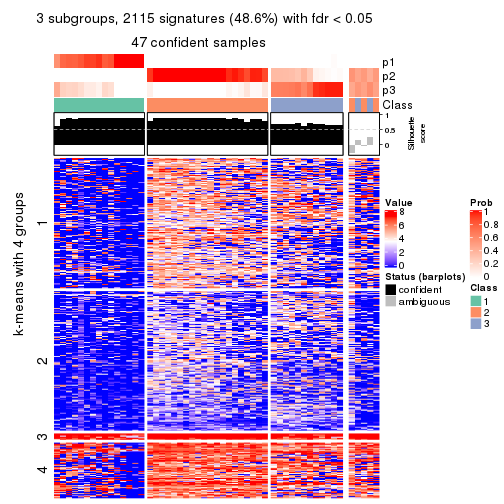
get_signatures(res, k = 4, scale_rows = FALSE)
get_signatures(res, k = 5, scale_rows = FALSE)
get_signatures(res, k = 6, scale_rows = FALSE)
Compare the overlap of signatures from different k:
compare_signatures(res)
get_signature() returns a data frame invisibly. TO get the list of signatures, the function
call should be assigned to a variable explicitly. In following code, if plot argument is set
to FALSE, no heatmap is plotted while only the differential analysis is performed.
# code only for demonstration
tb = get_signature(res, k = ..., plot = FALSE)
An example of the output of tb is:
#> which_row fdr mean_1 mean_2 scaled_mean_1 scaled_mean_2 km
#> 1 38 0.042760348 8.373488 9.131774 -0.5533452 0.5164555 1
#> 2 40 0.018707592 7.106213 8.469186 -0.6173731 0.5762149 1
#> 3 55 0.019134737 10.221463 11.207825 -0.6159697 0.5749050 1
#> 4 59 0.006059896 5.921854 7.869574 -0.6899429 0.6439467 1
#> 5 60 0.018055526 8.928898 10.211722 -0.6204761 0.5791110 1
#> 6 98 0.009384629 15.714769 14.887706 0.6635654 -0.6193277 2
...
The columns in tb are:
which_row: row indices corresponding to the input matrix.fdr: FDR for the differential test. mean_x: The mean value in group x.scaled_mean_x: The mean value in group x after rows are scaled.km: Row groups if k-means clustering is applied to rows.UMAP plot which shows how samples are separated.
dimension_reduction(res, k = 2, method = "UMAP")
dimension_reduction(res, k = 3, method = "UMAP")

dimension_reduction(res, k = 4, method = "UMAP")
dimension_reduction(res, k = 5, method = "UMAP")
dimension_reduction(res, k = 6, method = "UMAP")
Following heatmap shows how subgroups are split when increasing k:
collect_classes(res)
If matrix rows can be associated to genes, consider to use GO_Enrichment(res,
...) to perform function enrichment for the signature genes.
The object with results only for a single top-value method and a single partition method can be extracted as:
res = res_list["SD", "skmeans"]
# you can also extract it by
# res = res_list["SD:skmeans"]
A summary of res and all the functions that can be applied to it:
res
#> A 'ConsensusPartition' object with k = 2, 3, 4, 5, 6.
#> On a matrix with 4352 rows and 52 columns.
#> Top rows (435, 870, 1306, 1741, 2176) are extracted by 'SD' method.
#> Subgroups are detected by 'skmeans' method.
#> Performed in total 1250 partitions by row resampling.
#> Best k for subgroups seems to be 2.
#>
#> Following methods can be applied to this 'ConsensusPartition' object:
#> [1] "cola_report" "collect_classes" "collect_plots"
#> [4] "collect_stats" "colnames" "compare_signatures"
#> [7] "consensus_heatmap" "dimension_reduction" "functional_enrichment"
#> [10] "get_anno_col" "get_anno" "get_classes"
#> [13] "get_consensus" "get_matrix" "get_membership"
#> [16] "get_param" "get_signatures" "get_stats"
#> [19] "is_best_k" "is_stable_k" "membership_heatmap"
#> [22] "ncol" "nrow" "plot_ecdf"
#> [25] "rownames" "select_partition_number" "show"
#> [28] "suggest_best_k" "test_to_known_factors"
collect_plots() function collects all the plots made from res for all k (number of partitions)
into one single page to provide an easy and fast comparison between different k.
collect_plots(res)
The plots are:
k and the heatmap of
predicted classes for each k.k.k.k.All the plots in panels can be made by individual functions and they are plotted later in this section.
select_partition_number() produces several plots showing different
statistics for choosing “optimized” k. There are following statistics:
k;k, the area increased is defined as \(A_k - A_{k-1}\).The detailed explanations of these statistics can be found in the cola vignette.
Generally speaking, lower PAC score, higher mean silhouette score or higher
concordance corresponds to better partition. Rand index and Jaccard index
measure how similar the current partition is compared to partition with k-1.
If they are too similar, we won't accept k is better than k-1.
select_partition_number(res)
The numeric values for all these statistics can be obtained by get_stats().
get_stats(res)
#> k 1-PAC mean_silhouette concordance area_increased Rand Jaccard
#> 2 2 0.880 0.897 0.959 0.4952 0.497 0.497
#> 3 3 0.694 0.775 0.899 0.3040 0.775 0.581
#> 4 4 0.590 0.682 0.820 0.0988 0.941 0.834
#> 5 5 0.581 0.568 0.770 0.0522 0.943 0.819
#> 6 6 0.601 0.595 0.733 0.0383 0.966 0.883
suggest_best_k() suggests the best \(k\) based on these statistics. The rules are as follows:
NA.suggest_best_k(res)
#> [1] 2
Following shows the table of the partitions (You need to click the show/hide
code output link to see it). The membership matrix (columns with name p*)
is inferred by
clue::cl_consensus()
function with the SE method. Basically the value in the membership matrix
represents the probability to belong to a certain group. The finall class
label for an item is determined with the group with highest probability it
belongs to.
In get_classes() function, the entropy is calculated from the membership
matrix and the silhouette score is calculated from the consensus matrix.
cbind(get_classes(res, k = 2), get_membership(res, k = 2))
#> class entropy silhouette p1 p2
#> SRR2042654 1 0.0000 0.916 1.000 0.000
#> SRR2042653 1 0.0000 0.916 1.000 0.000
#> SRR2042652 1 0.0000 0.916 1.000 0.000
#> SRR2042650 1 0.0000 0.916 1.000 0.000
#> SRR2042649 2 0.0000 0.984 0.000 1.000
#> SRR2042647 2 0.0000 0.984 0.000 1.000
#> SRR2042648 2 0.0000 0.984 0.000 1.000
#> SRR2042646 1 0.7950 0.672 0.760 0.240
#> SRR2042645 1 0.9795 0.340 0.584 0.416
#> SRR2042644 2 0.0000 0.984 0.000 1.000
#> SRR2042643 1 0.0000 0.916 1.000 0.000
#> SRR2042642 2 0.0000 0.984 0.000 1.000
#> SRR2042640 2 0.0000 0.984 0.000 1.000
#> SRR2042641 2 0.0000 0.984 0.000 1.000
#> SRR2042639 2 0.0000 0.984 0.000 1.000
#> SRR2042638 2 0.0000 0.984 0.000 1.000
#> SRR2042637 2 0.0000 0.984 0.000 1.000
#> SRR2042636 2 0.9686 0.248 0.396 0.604
#> SRR2042634 1 0.9661 0.400 0.608 0.392
#> SRR2042635 2 0.0000 0.984 0.000 1.000
#> SRR2042633 2 0.0376 0.980 0.004 0.996
#> SRR2042631 2 0.0000 0.984 0.000 1.000
#> SRR2042632 2 0.0000 0.984 0.000 1.000
#> SRR2042630 2 0.0000 0.984 0.000 1.000
#> SRR2042629 2 0.0000 0.984 0.000 1.000
#> SRR2042628 1 0.0000 0.916 1.000 0.000
#> SRR2042626 2 0.0000 0.984 0.000 1.000
#> SRR2042627 1 0.0000 0.916 1.000 0.000
#> SRR2042624 1 0.0000 0.916 1.000 0.000
#> SRR2042625 1 0.0000 0.916 1.000 0.000
#> SRR2042623 1 0.0000 0.916 1.000 0.000
#> SRR2042622 1 0.0000 0.916 1.000 0.000
#> SRR2042620 2 0.0000 0.984 0.000 1.000
#> SRR2042621 1 0.9833 0.304 0.576 0.424
#> SRR2042619 2 0.0000 0.984 0.000 1.000
#> SRR2042618 2 0.0000 0.984 0.000 1.000
#> SRR2042617 1 0.0000 0.916 1.000 0.000
#> SRR2042616 2 0.0000 0.984 0.000 1.000
#> SRR2042615 2 0.0000 0.984 0.000 1.000
#> SRR2042614 2 0.0000 0.984 0.000 1.000
#> SRR2042613 2 0.0000 0.984 0.000 1.000
#> SRR2042612 1 0.0000 0.916 1.000 0.000
#> SRR2042610 1 0.0000 0.916 1.000 0.000
#> SRR2042611 2 0.0000 0.984 0.000 1.000
#> SRR2042607 2 0.0000 0.984 0.000 1.000
#> SRR2042609 1 0.0000 0.916 1.000 0.000
#> SRR2042608 2 0.0000 0.984 0.000 1.000
#> SRR2042656 2 0.0000 0.984 0.000 1.000
#> SRR2042658 1 0.0000 0.916 1.000 0.000
#> SRR2042659 1 0.0000 0.916 1.000 0.000
#> SRR2042657 1 0.8443 0.631 0.728 0.272
#> SRR2042655 1 0.0000 0.916 1.000 0.000
cbind(get_classes(res, k = 3), get_membership(res, k = 3))
#> class entropy silhouette p1 p2 p3
#> SRR2042654 1 0.0000 0.9288 1.000 0.000 0.000
#> SRR2042653 1 0.0000 0.9288 1.000 0.000 0.000
#> SRR2042652 1 0.0000 0.9288 1.000 0.000 0.000
#> SRR2042650 1 0.0000 0.9288 1.000 0.000 0.000
#> SRR2042649 3 0.3038 0.8092 0.000 0.104 0.896
#> SRR2042647 2 0.1031 0.8759 0.000 0.976 0.024
#> SRR2042648 2 0.0000 0.8844 0.000 1.000 0.000
#> SRR2042646 3 0.3695 0.8045 0.108 0.012 0.880
#> SRR2042645 2 0.8837 0.0269 0.424 0.460 0.116
#> SRR2042644 2 0.6302 -0.0806 0.000 0.520 0.480
#> SRR2042643 1 0.0592 0.9200 0.988 0.000 0.012
#> SRR2042642 2 0.0000 0.8844 0.000 1.000 0.000
#> SRR2042640 2 0.0237 0.8837 0.000 0.996 0.004
#> SRR2042641 2 0.6305 -0.0574 0.000 0.516 0.484
#> SRR2042639 2 0.0592 0.8800 0.000 0.988 0.012
#> SRR2042638 2 0.0000 0.8844 0.000 1.000 0.000
#> SRR2042637 3 0.4121 0.7753 0.000 0.168 0.832
#> SRR2042636 2 0.8372 0.3412 0.336 0.564 0.100
#> SRR2042634 1 0.8347 0.1460 0.512 0.404 0.084
#> SRR2042635 2 0.0000 0.8844 0.000 1.000 0.000
#> SRR2042633 3 0.5905 0.4824 0.000 0.352 0.648
#> SRR2042631 2 0.1411 0.8707 0.000 0.964 0.036
#> SRR2042632 3 0.2261 0.8113 0.000 0.068 0.932
#> SRR2042630 2 0.3551 0.7703 0.000 0.868 0.132
#> SRR2042629 2 0.0892 0.8777 0.000 0.980 0.020
#> SRR2042628 3 0.5465 0.6435 0.288 0.000 0.712
#> SRR2042626 2 0.0000 0.8844 0.000 1.000 0.000
#> SRR2042627 1 0.0000 0.9288 1.000 0.000 0.000
#> SRR2042624 3 0.3551 0.7921 0.132 0.000 0.868
#> SRR2042625 1 0.0000 0.9288 1.000 0.000 0.000
#> SRR2042623 1 0.0000 0.9288 1.000 0.000 0.000
#> SRR2042622 1 0.0000 0.9288 1.000 0.000 0.000
#> SRR2042620 2 0.0592 0.8812 0.000 0.988 0.012
#> SRR2042621 3 0.4209 0.7995 0.128 0.016 0.856
#> SRR2042619 2 0.1989 0.8627 0.004 0.948 0.048
#> SRR2042618 2 0.0000 0.8844 0.000 1.000 0.000
#> SRR2042617 1 0.0000 0.9288 1.000 0.000 0.000
#> SRR2042616 2 0.0237 0.8829 0.000 0.996 0.004
#> SRR2042615 2 0.0892 0.8744 0.000 0.980 0.020
#> SRR2042614 2 0.0592 0.8801 0.000 0.988 0.012
#> SRR2042613 3 0.4702 0.7365 0.000 0.212 0.788
#> SRR2042612 1 0.0424 0.9220 0.992 0.000 0.008
#> SRR2042610 1 0.0000 0.9288 1.000 0.000 0.000
#> SRR2042611 2 0.0000 0.8844 0.000 1.000 0.000
#> SRR2042607 2 0.1411 0.8725 0.000 0.964 0.036
#> SRR2042609 1 0.0000 0.9288 1.000 0.000 0.000
#> SRR2042608 3 0.4749 0.7707 0.012 0.172 0.816
#> SRR2042656 2 0.0000 0.8844 0.000 1.000 0.000
#> SRR2042658 3 0.5465 0.6491 0.288 0.000 0.712
#> SRR2042659 1 0.0000 0.9288 1.000 0.000 0.000
#> SRR2042657 1 0.7924 0.4250 0.612 0.304 0.084
#> SRR2042655 1 0.0000 0.9288 1.000 0.000 0.000
cbind(get_classes(res, k = 4), get_membership(res, k = 4))
#> class entropy silhouette p1 p2 p3 p4
#> SRR2042654 1 0.0000 0.9781 1.000 0.000 0.000 0.000
#> SRR2042653 1 0.0000 0.9781 1.000 0.000 0.000 0.000
#> SRR2042652 1 0.0000 0.9781 1.000 0.000 0.000 0.000
#> SRR2042650 1 0.1576 0.9432 0.948 0.000 0.004 0.048
#> SRR2042649 3 0.5480 0.5132 0.000 0.124 0.736 0.140
#> SRR2042647 2 0.4283 0.6142 0.000 0.740 0.004 0.256
#> SRR2042648 2 0.0000 0.8070 0.000 1.000 0.000 0.000
#> SRR2042646 3 0.3370 0.5188 0.080 0.000 0.872 0.048
#> SRR2042645 4 0.7814 0.6282 0.180 0.172 0.056 0.592
#> SRR2042644 2 0.7091 0.0415 0.000 0.508 0.356 0.136
#> SRR2042643 1 0.2984 0.8654 0.888 0.000 0.028 0.084
#> SRR2042642 2 0.0000 0.8070 0.000 1.000 0.000 0.000
#> SRR2042640 2 0.2216 0.7796 0.000 0.908 0.000 0.092
#> SRR2042641 2 0.7689 -0.0821 0.000 0.444 0.320 0.236
#> SRR2042639 2 0.2521 0.7879 0.000 0.912 0.024 0.064
#> SRR2042638 2 0.0000 0.8070 0.000 1.000 0.000 0.000
#> SRR2042637 3 0.7095 0.4146 0.000 0.260 0.560 0.180
#> SRR2042636 4 0.7319 0.6280 0.128 0.200 0.044 0.628
#> SRR2042634 4 0.7671 0.6698 0.256 0.156 0.028 0.560
#> SRR2042635 2 0.0000 0.8070 0.000 1.000 0.000 0.000
#> SRR2042633 3 0.8016 0.2162 0.004 0.300 0.396 0.300
#> SRR2042631 2 0.5550 0.2688 0.000 0.552 0.020 0.428
#> SRR2042632 3 0.4581 0.5363 0.000 0.120 0.800 0.080
#> SRR2042630 2 0.5783 0.5578 0.000 0.708 0.120 0.172
#> SRR2042629 2 0.4468 0.6447 0.000 0.752 0.016 0.232
#> SRR2042628 3 0.6179 0.2894 0.320 0.000 0.608 0.072
#> SRR2042626 2 0.0188 0.8066 0.000 0.996 0.000 0.004
#> SRR2042627 1 0.0188 0.9769 0.996 0.000 0.000 0.004
#> SRR2042624 3 0.4840 0.4902 0.116 0.000 0.784 0.100
#> SRR2042625 1 0.0469 0.9739 0.988 0.000 0.000 0.012
#> SRR2042623 1 0.0000 0.9781 1.000 0.000 0.000 0.000
#> SRR2042622 1 0.0000 0.9781 1.000 0.000 0.000 0.000
#> SRR2042620 2 0.2647 0.7580 0.000 0.880 0.000 0.120
#> SRR2042621 3 0.4488 0.5127 0.096 0.000 0.808 0.096
#> SRR2042619 2 0.5732 0.3973 0.004 0.604 0.028 0.364
#> SRR2042618 2 0.0524 0.8061 0.000 0.988 0.004 0.008
#> SRR2042617 1 0.0707 0.9696 0.980 0.000 0.000 0.020
#> SRR2042616 2 0.1488 0.7986 0.000 0.956 0.032 0.012
#> SRR2042615 2 0.2399 0.7855 0.000 0.920 0.032 0.048
#> SRR2042614 2 0.1488 0.8008 0.000 0.956 0.012 0.032
#> SRR2042613 3 0.7468 0.3093 0.000 0.304 0.492 0.204
#> SRR2042612 1 0.1004 0.9579 0.972 0.000 0.024 0.004
#> SRR2042610 1 0.1284 0.9579 0.964 0.000 0.012 0.024
#> SRR2042611 2 0.0000 0.8070 0.000 1.000 0.000 0.000
#> SRR2042607 2 0.4387 0.6438 0.000 0.752 0.012 0.236
#> SRR2042609 1 0.0000 0.9781 1.000 0.000 0.000 0.000
#> SRR2042608 3 0.8175 0.2218 0.016 0.240 0.436 0.308
#> SRR2042656 2 0.0188 0.8065 0.000 0.996 0.000 0.004
#> SRR2042658 3 0.6366 0.1663 0.424 0.000 0.512 0.064
#> SRR2042659 1 0.0188 0.9767 0.996 0.000 0.000 0.004
#> SRR2042657 4 0.7762 0.6192 0.272 0.112 0.052 0.564
#> SRR2042655 1 0.0000 0.9781 1.000 0.000 0.000 0.000
cbind(get_classes(res, k = 5), get_membership(res, k = 5))
#> class entropy silhouette p1 p2 p3 p4 p5
#> SRR2042654 1 0.0000 0.9543 1.000 0.000 0.000 0.000 0.000
#> SRR2042653 1 0.0324 0.9544 0.992 0.000 0.000 0.004 0.004
#> SRR2042652 1 0.0000 0.9543 1.000 0.000 0.000 0.000 0.000
#> SRR2042650 1 0.2906 0.8753 0.880 0.000 0.012 0.080 0.028
#> SRR2042649 5 0.6539 0.0661 0.000 0.100 0.408 0.028 0.464
#> SRR2042647 2 0.5156 0.5529 0.000 0.688 0.004 0.216 0.092
#> SRR2042648 2 0.0000 0.7365 0.000 1.000 0.000 0.000 0.000
#> SRR2042646 3 0.3888 0.3468 0.056 0.000 0.796 0.000 0.148
#> SRR2042645 4 0.7624 0.4873 0.096 0.112 0.040 0.572 0.180
#> SRR2042644 2 0.7195 -0.1370 0.000 0.488 0.260 0.040 0.212
#> SRR2042643 1 0.4722 0.7041 0.764 0.000 0.032 0.148 0.056
#> SRR2042642 2 0.0000 0.7365 0.000 1.000 0.000 0.000 0.000
#> SRR2042640 2 0.3449 0.6945 0.000 0.844 0.004 0.088 0.064
#> SRR2042641 5 0.7365 0.3432 0.000 0.336 0.136 0.072 0.456
#> SRR2042639 2 0.3890 0.6810 0.000 0.836 0.060 0.052 0.052
#> SRR2042638 2 0.0000 0.7365 0.000 1.000 0.000 0.000 0.000
#> SRR2042637 3 0.7380 -0.3274 0.000 0.192 0.408 0.044 0.356
#> SRR2042636 4 0.6782 0.4899 0.048 0.136 0.036 0.644 0.136
#> SRR2042634 4 0.8064 0.4931 0.184 0.108 0.036 0.520 0.152
#> SRR2042635 2 0.0000 0.7365 0.000 1.000 0.000 0.000 0.000
#> SRR2042633 5 0.8462 0.2233 0.000 0.220 0.296 0.176 0.308
#> SRR2042631 2 0.6402 0.0594 0.000 0.456 0.020 0.424 0.100
#> SRR2042632 3 0.6524 -0.2253 0.000 0.124 0.504 0.020 0.352
#> SRR2042630 2 0.6054 0.2286 0.000 0.596 0.064 0.040 0.300
#> SRR2042629 2 0.5729 0.4669 0.000 0.616 0.004 0.264 0.116
#> SRR2042628 3 0.6148 0.3635 0.280 0.000 0.604 0.048 0.068
#> SRR2042626 2 0.0290 0.7363 0.000 0.992 0.000 0.000 0.008
#> SRR2042627 1 0.0510 0.9525 0.984 0.000 0.000 0.016 0.000
#> SRR2042624 3 0.4449 0.4067 0.112 0.000 0.792 0.064 0.032
#> SRR2042625 1 0.0854 0.9495 0.976 0.000 0.004 0.008 0.012
#> SRR2042623 1 0.0000 0.9543 1.000 0.000 0.000 0.000 0.000
#> SRR2042622 1 0.0162 0.9543 0.996 0.000 0.004 0.000 0.000
#> SRR2042620 2 0.3847 0.6584 0.000 0.800 0.004 0.156 0.040
#> SRR2042621 3 0.4744 0.3409 0.064 0.000 0.780 0.060 0.096
#> SRR2042619 2 0.6629 0.2050 0.004 0.512 0.024 0.348 0.112
#> SRR2042618 2 0.0162 0.7359 0.000 0.996 0.000 0.000 0.004
#> SRR2042617 1 0.1921 0.9228 0.932 0.000 0.012 0.044 0.012
#> SRR2042616 2 0.2897 0.7013 0.000 0.884 0.024 0.020 0.072
#> SRR2042615 2 0.3079 0.6924 0.000 0.876 0.044 0.016 0.064
#> SRR2042614 2 0.2228 0.7239 0.000 0.920 0.016 0.020 0.044
#> SRR2042613 2 0.7829 -0.4513 0.000 0.348 0.324 0.064 0.264
#> SRR2042612 1 0.2011 0.9103 0.928 0.000 0.020 0.008 0.044
#> SRR2042610 1 0.1538 0.9352 0.948 0.000 0.008 0.036 0.008
#> SRR2042611 2 0.0000 0.7365 0.000 1.000 0.000 0.000 0.000
#> SRR2042607 2 0.5461 0.5181 0.000 0.656 0.008 0.244 0.092
#> SRR2042609 1 0.0000 0.9543 1.000 0.000 0.000 0.000 0.000
#> SRR2042608 5 0.7397 0.3444 0.004 0.172 0.176 0.100 0.548
#> SRR2042656 2 0.1195 0.7354 0.000 0.960 0.000 0.012 0.028
#> SRR2042658 3 0.6900 0.2707 0.372 0.000 0.412 0.012 0.204
#> SRR2042659 1 0.0324 0.9540 0.992 0.000 0.000 0.004 0.004
#> SRR2042657 4 0.7710 0.5289 0.132 0.100 0.044 0.572 0.152
#> SRR2042655 1 0.0324 0.9539 0.992 0.000 0.004 0.000 0.004
cbind(get_classes(res, k = 6), get_membership(res, k = 6))
#> class entropy silhouette p1 p2 p3 p4 p5 p6
#> SRR2042654 1 0.0000 0.9141 1.000 0.000 0.000 0.000 0.000 0.000
#> SRR2042653 1 0.1148 0.9121 0.960 0.000 0.004 0.020 0.000 0.016
#> SRR2042652 1 0.0000 0.9141 1.000 0.000 0.000 0.000 0.000 0.000
#> SRR2042650 1 0.3277 0.8438 0.848 0.000 0.016 0.088 0.008 0.040
#> SRR2042649 5 0.6589 0.3183 0.000 0.100 0.284 0.016 0.528 0.072
#> SRR2042647 2 0.5021 0.6104 0.000 0.704 0.008 0.184 0.036 0.068
#> SRR2042648 2 0.0000 0.7451 0.000 1.000 0.000 0.000 0.000 0.000
#> SRR2042646 3 0.4463 0.3908 0.048 0.000 0.736 0.000 0.180 0.036
#> SRR2042645 4 0.8053 0.4055 0.076 0.080 0.060 0.412 0.048 0.324
#> SRR2042644 2 0.7011 -0.0421 0.000 0.456 0.088 0.020 0.328 0.108
#> SRR2042643 1 0.5754 0.5929 0.684 0.000 0.060 0.128 0.036 0.092
#> SRR2042642 2 0.0000 0.7451 0.000 1.000 0.000 0.000 0.000 0.000
#> SRR2042640 2 0.4360 0.6814 0.000 0.772 0.004 0.088 0.032 0.104
#> SRR2042641 5 0.8180 0.2351 0.000 0.216 0.112 0.064 0.360 0.248
#> SRR2042639 2 0.5052 0.6572 0.000 0.744 0.028 0.068 0.068 0.092
#> SRR2042638 2 0.0000 0.7451 0.000 1.000 0.000 0.000 0.000 0.000
#> SRR2042637 5 0.7600 0.3780 0.000 0.140 0.196 0.068 0.492 0.104
#> SRR2042636 4 0.6030 0.4195 0.036 0.108 0.020 0.688 0.068 0.080
#> SRR2042634 4 0.6968 0.4327 0.112 0.084 0.044 0.624 0.056 0.080
#> SRR2042635 2 0.0000 0.7451 0.000 1.000 0.000 0.000 0.000 0.000
#> SRR2042633 5 0.8298 0.2813 0.000 0.168 0.136 0.080 0.368 0.248
#> SRR2042631 2 0.7134 0.0152 0.000 0.420 0.016 0.304 0.056 0.204
#> SRR2042632 5 0.6034 0.3370 0.000 0.096 0.272 0.008 0.576 0.048
#> SRR2042630 2 0.6864 0.1320 0.000 0.504 0.032 0.052 0.284 0.128
#> SRR2042629 2 0.5783 0.5717 0.000 0.648 0.012 0.136 0.044 0.160
#> SRR2042628 3 0.6089 0.4647 0.236 0.000 0.608 0.024 0.060 0.072
#> SRR2042626 2 0.0146 0.7450 0.000 0.996 0.000 0.000 0.000 0.004
#> SRR2042627 1 0.1534 0.9085 0.944 0.000 0.004 0.032 0.004 0.016
#> SRR2042624 3 0.3465 0.4803 0.072 0.000 0.844 0.012 0.048 0.024
#> SRR2042625 1 0.2508 0.8854 0.900 0.000 0.012 0.024 0.016 0.048
#> SRR2042623 1 0.0000 0.9141 1.000 0.000 0.000 0.000 0.000 0.000
#> SRR2042622 1 0.0000 0.9141 1.000 0.000 0.000 0.000 0.000 0.000
#> SRR2042620 2 0.3594 0.7043 0.000 0.820 0.000 0.100 0.024 0.056
#> SRR2042621 3 0.5421 0.3996 0.060 0.000 0.716 0.040 0.112 0.072
#> SRR2042619 2 0.7440 0.0827 0.000 0.424 0.060 0.272 0.036 0.208
#> SRR2042618 2 0.0964 0.7425 0.000 0.968 0.004 0.000 0.016 0.012
#> SRR2042617 1 0.2981 0.8618 0.864 0.000 0.020 0.064 0.000 0.052
#> SRR2042616 2 0.4368 0.6650 0.000 0.772 0.004 0.036 0.112 0.076
#> SRR2042615 2 0.3894 0.6878 0.000 0.808 0.012 0.016 0.100 0.064
#> SRR2042614 2 0.3868 0.6879 0.000 0.812 0.016 0.016 0.100 0.056
#> SRR2042613 5 0.8126 0.3375 0.000 0.212 0.228 0.036 0.352 0.172
#> SRR2042612 1 0.3512 0.8250 0.848 0.000 0.048 0.020 0.036 0.048
#> SRR2042610 1 0.3314 0.8573 0.860 0.000 0.036 0.044 0.020 0.040
#> SRR2042611 2 0.0000 0.7451 0.000 1.000 0.000 0.000 0.000 0.000
#> SRR2042607 2 0.6112 0.4954 0.000 0.604 0.020 0.196 0.032 0.148
#> SRR2042609 1 0.0000 0.9141 1.000 0.000 0.000 0.000 0.000 0.000
#> SRR2042608 5 0.7538 0.2884 0.000 0.068 0.108 0.104 0.484 0.236
#> SRR2042656 2 0.2093 0.7409 0.000 0.920 0.004 0.020 0.020 0.036
#> SRR2042658 3 0.7254 0.3301 0.364 0.000 0.404 0.028 0.104 0.100
#> SRR2042659 1 0.1210 0.9110 0.960 0.000 0.008 0.008 0.004 0.020
#> SRR2042657 4 0.7884 0.4354 0.108 0.064 0.036 0.476 0.064 0.252
#> SRR2042655 1 0.1148 0.9110 0.960 0.000 0.004 0.016 0.000 0.020
Heatmaps for the consensus matrix. It visualizes the probability of two samples to be in a same group.
consensus_heatmap(res, k = 2)
consensus_heatmap(res, k = 3)

consensus_heatmap(res, k = 4)
consensus_heatmap(res, k = 5)
consensus_heatmap(res, k = 6)
Heatmaps for the membership of samples in all partitions to see how consistent they are:
membership_heatmap(res, k = 2)
membership_heatmap(res, k = 3)
membership_heatmap(res, k = 4)
membership_heatmap(res, k = 5)
membership_heatmap(res, k = 6)
As soon as we have had the classes for columns, we can look for signatures which are significantly different between classes which can be candidate marks for certain classes. Following are the heatmaps for signatures.
Signature heatmaps where rows are scaled:
get_signatures(res, k = 2)
get_signatures(res, k = 3)
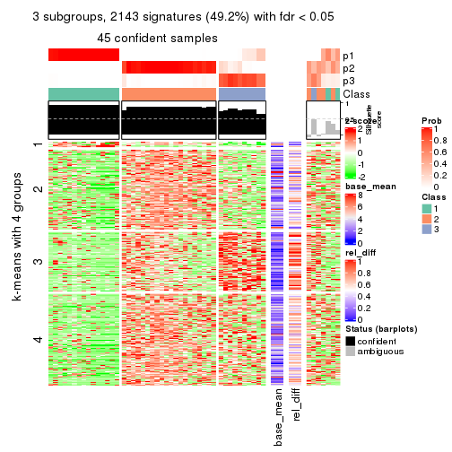
get_signatures(res, k = 4)
get_signatures(res, k = 5)
get_signatures(res, k = 6)
Signature heatmaps where rows are not scaled:
get_signatures(res, k = 2, scale_rows = FALSE)
get_signatures(res, k = 3, scale_rows = FALSE)
get_signatures(res, k = 4, scale_rows = FALSE)

get_signatures(res, k = 5, scale_rows = FALSE)

get_signatures(res, k = 6, scale_rows = FALSE)
Compare the overlap of signatures from different k:
compare_signatures(res)

get_signature() returns a data frame invisibly. TO get the list of signatures, the function
call should be assigned to a variable explicitly. In following code, if plot argument is set
to FALSE, no heatmap is plotted while only the differential analysis is performed.
# code only for demonstration
tb = get_signature(res, k = ..., plot = FALSE)
An example of the output of tb is:
#> which_row fdr mean_1 mean_2 scaled_mean_1 scaled_mean_2 km
#> 1 38 0.042760348 8.373488 9.131774 -0.5533452 0.5164555 1
#> 2 40 0.018707592 7.106213 8.469186 -0.6173731 0.5762149 1
#> 3 55 0.019134737 10.221463 11.207825 -0.6159697 0.5749050 1
#> 4 59 0.006059896 5.921854 7.869574 -0.6899429 0.6439467 1
#> 5 60 0.018055526 8.928898 10.211722 -0.6204761 0.5791110 1
#> 6 98 0.009384629 15.714769 14.887706 0.6635654 -0.6193277 2
...
The columns in tb are:
which_row: row indices corresponding to the input matrix.fdr: FDR for the differential test. mean_x: The mean value in group x.scaled_mean_x: The mean value in group x after rows are scaled.km: Row groups if k-means clustering is applied to rows.UMAP plot which shows how samples are separated.
dimension_reduction(res, k = 2, method = "UMAP")
dimension_reduction(res, k = 3, method = "UMAP")
dimension_reduction(res, k = 4, method = "UMAP")
dimension_reduction(res, k = 5, method = "UMAP")
dimension_reduction(res, k = 6, method = "UMAP")
Following heatmap shows how subgroups are split when increasing k:
collect_classes(res)
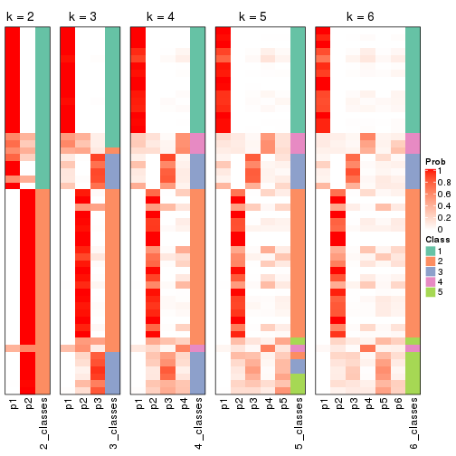
If matrix rows can be associated to genes, consider to use GO_Enrichment(res,
...) to perform function enrichment for the signature genes.
The object with results only for a single top-value method and a single partition method can be extracted as:
res = res_list["SD", "pam"]
# you can also extract it by
# res = res_list["SD:pam"]
A summary of res and all the functions that can be applied to it:
res
#> A 'ConsensusPartition' object with k = 2, 3, 4, 5, 6.
#> On a matrix with 4352 rows and 52 columns.
#> Top rows (435, 870, 1306, 1741, 2176) are extracted by 'SD' method.
#> Subgroups are detected by 'pam' method.
#> Performed in total 1250 partitions by row resampling.
#> Best k for subgroups seems to be 2.
#>
#> Following methods can be applied to this 'ConsensusPartition' object:
#> [1] "cola_report" "collect_classes" "collect_plots"
#> [4] "collect_stats" "colnames" "compare_signatures"
#> [7] "consensus_heatmap" "dimension_reduction" "functional_enrichment"
#> [10] "get_anno_col" "get_anno" "get_classes"
#> [13] "get_consensus" "get_matrix" "get_membership"
#> [16] "get_param" "get_signatures" "get_stats"
#> [19] "is_best_k" "is_stable_k" "membership_heatmap"
#> [22] "ncol" "nrow" "plot_ecdf"
#> [25] "rownames" "select_partition_number" "show"
#> [28] "suggest_best_k" "test_to_known_factors"
collect_plots() function collects all the plots made from res for all k (number of partitions)
into one single page to provide an easy and fast comparison between different k.
collect_plots(res)
The plots are:
k and the heatmap of
predicted classes for each k.k.k.k.All the plots in panels can be made by individual functions and they are plotted later in this section.
select_partition_number() produces several plots showing different
statistics for choosing “optimized” k. There are following statistics:
k;k, the area increased is defined as \(A_k - A_{k-1}\).The detailed explanations of these statistics can be found in the cola vignette.
Generally speaking, lower PAC score, higher mean silhouette score or higher
concordance corresponds to better partition. Rand index and Jaccard index
measure how similar the current partition is compared to partition with k-1.
If they are too similar, we won't accept k is better than k-1.
select_partition_number(res)
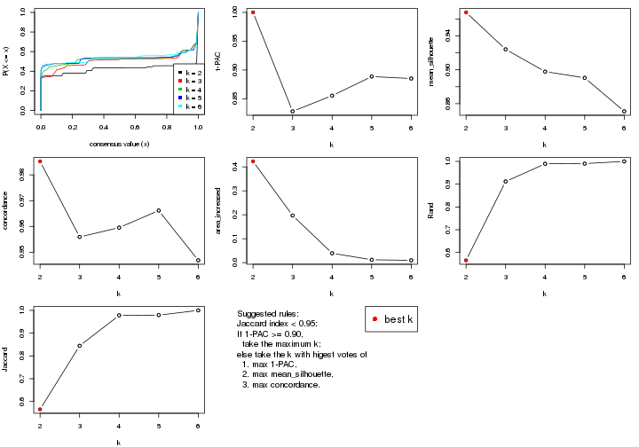
The numeric values for all these statistics can be obtained by get_stats().
get_stats(res)
#> k 1-PAC mean_silhouette concordance area_increased Rand Jaccard
#> 2 2 1.000 0.968 0.985 0.42295 0.566 0.566
#> 3 3 0.828 0.924 0.956 0.19680 0.912 0.845
#> 4 4 0.855 0.898 0.960 0.03918 0.989 0.978
#> 5 5 0.889 0.890 0.966 0.01207 0.990 0.979
#> 6 6 0.885 0.851 0.947 0.00974 1.000 1.000
suggest_best_k() suggests the best \(k\) based on these statistics. The rules are as follows:
NA.suggest_best_k(res)
#> [1] 2
Following shows the table of the partitions (You need to click the show/hide
code output link to see it). The membership matrix (columns with name p*)
is inferred by
clue::cl_consensus()
function with the SE method. Basically the value in the membership matrix
represents the probability to belong to a certain group. The finall class
label for an item is determined with the group with highest probability it
belongs to.
In get_classes() function, the entropy is calculated from the membership
matrix and the silhouette score is calculated from the consensus matrix.
cbind(get_classes(res, k = 2), get_membership(res, k = 2))
#> class entropy silhouette p1 p2
#> SRR2042654 1 0.000 0.950 1.000 0.000
#> SRR2042653 1 0.000 0.950 1.000 0.000
#> SRR2042652 1 0.000 0.950 1.000 0.000
#> SRR2042650 1 0.000 0.950 1.000 0.000
#> SRR2042649 2 0.000 1.000 0.000 1.000
#> SRR2042647 2 0.000 1.000 0.000 1.000
#> SRR2042648 2 0.000 1.000 0.000 1.000
#> SRR2042646 2 0.000 1.000 0.000 1.000
#> SRR2042645 2 0.000 1.000 0.000 1.000
#> SRR2042644 2 0.000 1.000 0.000 1.000
#> SRR2042643 1 0.913 0.550 0.672 0.328
#> SRR2042642 2 0.000 1.000 0.000 1.000
#> SRR2042640 2 0.000 1.000 0.000 1.000
#> SRR2042641 2 0.000 1.000 0.000 1.000
#> SRR2042639 2 0.000 1.000 0.000 1.000
#> SRR2042638 2 0.000 1.000 0.000 1.000
#> SRR2042637 2 0.000 1.000 0.000 1.000
#> SRR2042636 2 0.000 1.000 0.000 1.000
#> SRR2042634 2 0.000 1.000 0.000 1.000
#> SRR2042635 2 0.000 1.000 0.000 1.000
#> SRR2042633 2 0.000 1.000 0.000 1.000
#> SRR2042631 2 0.000 1.000 0.000 1.000
#> SRR2042632 2 0.000 1.000 0.000 1.000
#> SRR2042630 2 0.000 1.000 0.000 1.000
#> SRR2042629 2 0.000 1.000 0.000 1.000
#> SRR2042628 2 0.118 0.983 0.016 0.984
#> SRR2042626 2 0.000 1.000 0.000 1.000
#> SRR2042627 1 0.000 0.950 1.000 0.000
#> SRR2042624 2 0.000 1.000 0.000 1.000
#> SRR2042625 1 0.000 0.950 1.000 0.000
#> SRR2042623 1 0.000 0.950 1.000 0.000
#> SRR2042622 1 0.000 0.950 1.000 0.000
#> SRR2042620 2 0.000 1.000 0.000 1.000
#> SRR2042621 2 0.000 1.000 0.000 1.000
#> SRR2042619 2 0.000 1.000 0.000 1.000
#> SRR2042618 2 0.000 1.000 0.000 1.000
#> SRR2042617 1 0.000 0.950 1.000 0.000
#> SRR2042616 2 0.000 1.000 0.000 1.000
#> SRR2042615 2 0.000 1.000 0.000 1.000
#> SRR2042614 2 0.000 1.000 0.000 1.000
#> SRR2042613 2 0.000 1.000 0.000 1.000
#> SRR2042612 1 0.000 0.950 1.000 0.000
#> SRR2042610 1 0.574 0.836 0.864 0.136
#> SRR2042611 2 0.000 1.000 0.000 1.000
#> SRR2042607 2 0.000 1.000 0.000 1.000
#> SRR2042609 1 0.000 0.950 1.000 0.000
#> SRR2042608 2 0.000 1.000 0.000 1.000
#> SRR2042656 2 0.000 1.000 0.000 1.000
#> SRR2042658 1 0.866 0.625 0.712 0.288
#> SRR2042659 1 0.000 0.950 1.000 0.000
#> SRR2042657 2 0.000 1.000 0.000 1.000
#> SRR2042655 1 0.000 0.950 1.000 0.000
cbind(get_classes(res, k = 3), get_membership(res, k = 3))
#> class entropy silhouette p1 p2 p3
#> SRR2042654 1 0.0000 0.928 1.000 0.000 0.000
#> SRR2042653 1 0.0000 0.928 1.000 0.000 0.000
#> SRR2042652 1 0.0000 0.928 1.000 0.000 0.000
#> SRR2042650 1 0.3412 0.855 0.876 0.000 0.124
#> SRR2042649 2 0.1163 0.958 0.000 0.972 0.028
#> SRR2042647 2 0.0000 0.986 0.000 1.000 0.000
#> SRR2042648 2 0.0000 0.986 0.000 1.000 0.000
#> SRR2042646 3 0.5529 0.816 0.000 0.296 0.704
#> SRR2042645 2 0.0000 0.986 0.000 1.000 0.000
#> SRR2042644 2 0.1643 0.941 0.000 0.956 0.044
#> SRR2042643 1 0.8363 0.229 0.504 0.084 0.412
#> SRR2042642 2 0.0000 0.986 0.000 1.000 0.000
#> SRR2042640 2 0.0000 0.986 0.000 1.000 0.000
#> SRR2042641 2 0.0000 0.986 0.000 1.000 0.000
#> SRR2042639 2 0.0000 0.986 0.000 1.000 0.000
#> SRR2042638 2 0.0000 0.986 0.000 1.000 0.000
#> SRR2042637 2 0.0424 0.979 0.000 0.992 0.008
#> SRR2042636 2 0.0000 0.986 0.000 1.000 0.000
#> SRR2042634 2 0.0000 0.986 0.000 1.000 0.000
#> SRR2042635 2 0.0000 0.986 0.000 1.000 0.000
#> SRR2042633 2 0.1529 0.946 0.000 0.960 0.040
#> SRR2042631 2 0.0000 0.986 0.000 1.000 0.000
#> SRR2042632 2 0.3340 0.830 0.000 0.880 0.120
#> SRR2042630 2 0.0000 0.986 0.000 1.000 0.000
#> SRR2042629 2 0.0000 0.986 0.000 1.000 0.000
#> SRR2042628 3 0.3941 0.789 0.000 0.156 0.844
#> SRR2042626 2 0.0000 0.986 0.000 1.000 0.000
#> SRR2042627 1 0.0000 0.928 1.000 0.000 0.000
#> SRR2042624 3 0.5497 0.819 0.000 0.292 0.708
#> SRR2042625 1 0.0237 0.926 0.996 0.000 0.004
#> SRR2042623 1 0.0000 0.928 1.000 0.000 0.000
#> SRR2042622 1 0.0000 0.928 1.000 0.000 0.000
#> SRR2042620 2 0.0000 0.986 0.000 1.000 0.000
#> SRR2042621 2 0.3192 0.848 0.000 0.888 0.112
#> SRR2042619 2 0.0000 0.986 0.000 1.000 0.000
#> SRR2042618 2 0.0000 0.986 0.000 1.000 0.000
#> SRR2042617 1 0.3267 0.860 0.884 0.000 0.116
#> SRR2042616 2 0.0000 0.986 0.000 1.000 0.000
#> SRR2042615 2 0.0000 0.986 0.000 1.000 0.000
#> SRR2042614 2 0.0000 0.986 0.000 1.000 0.000
#> SRR2042613 2 0.0237 0.982 0.000 0.996 0.004
#> SRR2042612 1 0.3038 0.870 0.896 0.000 0.104
#> SRR2042610 1 0.4335 0.791 0.864 0.100 0.036
#> SRR2042611 2 0.0000 0.986 0.000 1.000 0.000
#> SRR2042607 2 0.0000 0.986 0.000 1.000 0.000
#> SRR2042609 1 0.0000 0.928 1.000 0.000 0.000
#> SRR2042608 2 0.0000 0.986 0.000 1.000 0.000
#> SRR2042656 2 0.0000 0.986 0.000 1.000 0.000
#> SRR2042658 3 0.5961 0.634 0.136 0.076 0.788
#> SRR2042659 1 0.0000 0.928 1.000 0.000 0.000
#> SRR2042657 2 0.0000 0.986 0.000 1.000 0.000
#> SRR2042655 1 0.0000 0.928 1.000 0.000 0.000
cbind(get_classes(res, k = 4), get_membership(res, k = 4))
#> class entropy silhouette p1 p2 p3 p4
#> SRR2042654 1 0.0000 0.934 1.000 0.000 0.000 0.000
#> SRR2042653 1 0.0000 0.934 1.000 0.000 0.000 0.000
#> SRR2042652 1 0.0000 0.934 1.000 0.000 0.000 0.000
#> SRR2042650 1 0.4300 0.792 0.820 0.000 0.088 0.092
#> SRR2042649 2 0.0921 0.963 0.000 0.972 0.028 0.000
#> SRR2042647 2 0.0000 0.988 0.000 1.000 0.000 0.000
#> SRR2042648 2 0.0000 0.988 0.000 1.000 0.000 0.000
#> SRR2042646 3 0.3837 0.571 0.000 0.224 0.776 0.000
#> SRR2042645 2 0.0000 0.988 0.000 1.000 0.000 0.000
#> SRR2042644 2 0.1302 0.948 0.000 0.956 0.044 0.000
#> SRR2042643 4 0.7229 0.000 0.132 0.048 0.176 0.644
#> SRR2042642 2 0.0000 0.988 0.000 1.000 0.000 0.000
#> SRR2042640 2 0.0000 0.988 0.000 1.000 0.000 0.000
#> SRR2042641 2 0.0000 0.988 0.000 1.000 0.000 0.000
#> SRR2042639 2 0.0000 0.988 0.000 1.000 0.000 0.000
#> SRR2042638 2 0.0000 0.988 0.000 1.000 0.000 0.000
#> SRR2042637 2 0.0336 0.981 0.000 0.992 0.008 0.000
#> SRR2042636 2 0.0000 0.988 0.000 1.000 0.000 0.000
#> SRR2042634 2 0.0000 0.988 0.000 1.000 0.000 0.000
#> SRR2042635 2 0.0000 0.988 0.000 1.000 0.000 0.000
#> SRR2042633 2 0.1211 0.952 0.000 0.960 0.040 0.000
#> SRR2042631 2 0.0000 0.988 0.000 1.000 0.000 0.000
#> SRR2042632 2 0.2469 0.869 0.000 0.892 0.108 0.000
#> SRR2042630 2 0.0000 0.988 0.000 1.000 0.000 0.000
#> SRR2042629 2 0.0000 0.988 0.000 1.000 0.000 0.000
#> SRR2042628 3 0.0469 0.444 0.000 0.012 0.988 0.000
#> SRR2042626 2 0.0000 0.988 0.000 1.000 0.000 0.000
#> SRR2042627 1 0.0000 0.934 1.000 0.000 0.000 0.000
#> SRR2042624 3 0.3801 0.577 0.000 0.220 0.780 0.000
#> SRR2042625 1 0.1398 0.909 0.956 0.000 0.004 0.040
#> SRR2042623 1 0.0000 0.934 1.000 0.000 0.000 0.000
#> SRR2042622 1 0.0000 0.934 1.000 0.000 0.000 0.000
#> SRR2042620 2 0.0000 0.988 0.000 1.000 0.000 0.000
#> SRR2042621 2 0.2530 0.867 0.000 0.888 0.112 0.000
#> SRR2042619 2 0.0000 0.988 0.000 1.000 0.000 0.000
#> SRR2042618 2 0.0000 0.988 0.000 1.000 0.000 0.000
#> SRR2042617 1 0.3778 0.815 0.848 0.000 0.100 0.052
#> SRR2042616 2 0.0000 0.988 0.000 1.000 0.000 0.000
#> SRR2042615 2 0.0000 0.988 0.000 1.000 0.000 0.000
#> SRR2042614 2 0.0000 0.988 0.000 1.000 0.000 0.000
#> SRR2042613 2 0.0188 0.985 0.000 0.996 0.004 0.000
#> SRR2042612 1 0.2469 0.849 0.892 0.000 0.108 0.000
#> SRR2042610 1 0.4511 0.661 0.724 0.008 0.000 0.268
#> SRR2042611 2 0.0000 0.988 0.000 1.000 0.000 0.000
#> SRR2042607 2 0.0000 0.988 0.000 1.000 0.000 0.000
#> SRR2042609 1 0.0000 0.934 1.000 0.000 0.000 0.000
#> SRR2042608 2 0.0000 0.988 0.000 1.000 0.000 0.000
#> SRR2042656 2 0.0000 0.988 0.000 1.000 0.000 0.000
#> SRR2042658 3 0.4129 0.422 0.032 0.008 0.828 0.132
#> SRR2042659 1 0.0000 0.934 1.000 0.000 0.000 0.000
#> SRR2042657 2 0.0000 0.988 0.000 1.000 0.000 0.000
#> SRR2042655 1 0.0000 0.934 1.000 0.000 0.000 0.000
cbind(get_classes(res, k = 5), get_membership(res, k = 5))
#> class entropy silhouette p1 p2 p3 p4 p5
#> SRR2042654 1 0.0000 0.952 1.000 0.000 0.000 0.000 0.000
#> SRR2042653 1 0.0000 0.952 1.000 0.000 0.000 0.000 0.000
#> SRR2042652 1 0.0000 0.952 1.000 0.000 0.000 0.000 0.000
#> SRR2042650 1 0.3675 0.774 0.840 0.000 0.072 0.016 0.072
#> SRR2042649 2 0.0404 0.980 0.000 0.988 0.012 0.000 0.000
#> SRR2042647 2 0.0000 0.990 0.000 1.000 0.000 0.000 0.000
#> SRR2042648 2 0.0000 0.990 0.000 1.000 0.000 0.000 0.000
#> SRR2042646 3 0.3480 0.596 0.000 0.248 0.752 0.000 0.000
#> SRR2042645 2 0.0000 0.990 0.000 1.000 0.000 0.000 0.000
#> SRR2042644 2 0.0794 0.965 0.000 0.972 0.028 0.000 0.000
#> SRR2042643 4 0.0963 0.000 0.000 0.000 0.036 0.964 0.000
#> SRR2042642 2 0.0000 0.990 0.000 1.000 0.000 0.000 0.000
#> SRR2042640 2 0.0000 0.990 0.000 1.000 0.000 0.000 0.000
#> SRR2042641 2 0.0000 0.990 0.000 1.000 0.000 0.000 0.000
#> SRR2042639 2 0.0000 0.990 0.000 1.000 0.000 0.000 0.000
#> SRR2042638 2 0.0000 0.990 0.000 1.000 0.000 0.000 0.000
#> SRR2042637 2 0.0290 0.984 0.000 0.992 0.008 0.000 0.000
#> SRR2042636 2 0.0000 0.990 0.000 1.000 0.000 0.000 0.000
#> SRR2042634 2 0.0000 0.990 0.000 1.000 0.000 0.000 0.000
#> SRR2042635 2 0.0000 0.990 0.000 1.000 0.000 0.000 0.000
#> SRR2042633 2 0.0794 0.965 0.000 0.972 0.028 0.000 0.000
#> SRR2042631 2 0.0000 0.990 0.000 1.000 0.000 0.000 0.000
#> SRR2042632 2 0.1608 0.914 0.000 0.928 0.072 0.000 0.000
#> SRR2042630 2 0.0000 0.990 0.000 1.000 0.000 0.000 0.000
#> SRR2042629 2 0.0000 0.990 0.000 1.000 0.000 0.000 0.000
#> SRR2042628 3 0.3715 0.397 0.000 0.004 0.736 0.000 0.260
#> SRR2042626 2 0.0000 0.990 0.000 1.000 0.000 0.000 0.000
#> SRR2042627 1 0.0000 0.952 1.000 0.000 0.000 0.000 0.000
#> SRR2042624 3 0.3480 0.596 0.000 0.248 0.752 0.000 0.000
#> SRR2042625 1 0.0613 0.941 0.984 0.000 0.004 0.004 0.008
#> SRR2042623 1 0.0000 0.952 1.000 0.000 0.000 0.000 0.000
#> SRR2042622 1 0.0000 0.952 1.000 0.000 0.000 0.000 0.000
#> SRR2042620 2 0.0000 0.990 0.000 1.000 0.000 0.000 0.000
#> SRR2042621 2 0.2329 0.843 0.000 0.876 0.124 0.000 0.000
#> SRR2042619 2 0.0000 0.990 0.000 1.000 0.000 0.000 0.000
#> SRR2042618 2 0.0000 0.990 0.000 1.000 0.000 0.000 0.000
#> SRR2042617 1 0.3209 0.809 0.864 0.000 0.068 0.008 0.060
#> SRR2042616 2 0.0000 0.990 0.000 1.000 0.000 0.000 0.000
#> SRR2042615 2 0.0000 0.990 0.000 1.000 0.000 0.000 0.000
#> SRR2042614 2 0.0000 0.990 0.000 1.000 0.000 0.000 0.000
#> SRR2042613 2 0.0000 0.990 0.000 1.000 0.000 0.000 0.000
#> SRR2042612 1 0.2615 0.840 0.892 0.000 0.080 0.020 0.008
#> SRR2042610 5 0.3741 0.000 0.264 0.000 0.000 0.004 0.732
#> SRR2042611 2 0.0000 0.990 0.000 1.000 0.000 0.000 0.000
#> SRR2042607 2 0.0000 0.990 0.000 1.000 0.000 0.000 0.000
#> SRR2042609 1 0.0000 0.952 1.000 0.000 0.000 0.000 0.000
#> SRR2042608 2 0.0000 0.990 0.000 1.000 0.000 0.000 0.000
#> SRR2042656 2 0.0000 0.990 0.000 1.000 0.000 0.000 0.000
#> SRR2042658 3 0.0162 0.394 0.004 0.000 0.996 0.000 0.000
#> SRR2042659 1 0.0000 0.952 1.000 0.000 0.000 0.000 0.000
#> SRR2042657 2 0.0000 0.990 0.000 1.000 0.000 0.000 0.000
#> SRR2042655 1 0.0000 0.952 1.000 0.000 0.000 0.000 0.000
cbind(get_classes(res, k = 6), get_membership(res, k = 6))
#> class entropy silhouette p1 p2 p3 p4 p5 p6
#> SRR2042654 1 0.0000 0.905 1.000 0.000 0.000 0.000 0.000 0.000
#> SRR2042653 1 0.0363 0.901 0.988 0.000 0.000 0.000 0.000 0.012
#> SRR2042652 1 0.0000 0.905 1.000 0.000 0.000 0.000 0.000 0.000
#> SRR2042650 1 0.5136 0.430 0.636 0.000 0.028 0.004 0.052 0.280
#> SRR2042649 2 0.0260 0.983 0.000 0.992 0.008 0.000 0.000 0.000
#> SRR2042647 2 0.0000 0.989 0.000 1.000 0.000 0.000 0.000 0.000
#> SRR2042648 2 0.0000 0.989 0.000 1.000 0.000 0.000 0.000 0.000
#> SRR2042646 3 0.3482 0.509 0.000 0.316 0.684 0.000 0.000 0.000
#> SRR2042645 2 0.0000 0.989 0.000 1.000 0.000 0.000 0.000 0.000
#> SRR2042644 2 0.0458 0.976 0.000 0.984 0.016 0.000 0.000 0.000
#> SRR2042643 4 0.0146 0.000 0.000 0.000 0.004 0.996 0.000 0.000
#> SRR2042642 2 0.0000 0.989 0.000 1.000 0.000 0.000 0.000 0.000
#> SRR2042640 2 0.0000 0.989 0.000 1.000 0.000 0.000 0.000 0.000
#> SRR2042641 2 0.0000 0.989 0.000 1.000 0.000 0.000 0.000 0.000
#> SRR2042639 2 0.0000 0.989 0.000 1.000 0.000 0.000 0.000 0.000
#> SRR2042638 2 0.0000 0.989 0.000 1.000 0.000 0.000 0.000 0.000
#> SRR2042637 2 0.0146 0.986 0.000 0.996 0.004 0.000 0.000 0.000
#> SRR2042636 2 0.1327 0.919 0.000 0.936 0.000 0.000 0.064 0.000
#> SRR2042634 2 0.0146 0.986 0.000 0.996 0.000 0.000 0.004 0.000
#> SRR2042635 2 0.0000 0.989 0.000 1.000 0.000 0.000 0.000 0.000
#> SRR2042633 2 0.0458 0.976 0.000 0.984 0.016 0.000 0.000 0.000
#> SRR2042631 2 0.0000 0.989 0.000 1.000 0.000 0.000 0.000 0.000
#> SRR2042632 2 0.0865 0.955 0.000 0.964 0.036 0.000 0.000 0.000
#> SRR2042630 2 0.0000 0.989 0.000 1.000 0.000 0.000 0.000 0.000
#> SRR2042629 2 0.0000 0.989 0.000 1.000 0.000 0.000 0.000 0.000
#> SRR2042628 3 0.1949 0.167 0.000 0.004 0.904 0.000 0.004 0.088
#> SRR2042626 2 0.0000 0.989 0.000 1.000 0.000 0.000 0.000 0.000
#> SRR2042627 1 0.0000 0.905 1.000 0.000 0.000 0.000 0.000 0.000
#> SRR2042624 3 0.3898 0.521 0.000 0.296 0.684 0.000 0.020 0.000
#> SRR2042625 1 0.0508 0.897 0.984 0.000 0.000 0.000 0.004 0.012
#> SRR2042623 1 0.0000 0.905 1.000 0.000 0.000 0.000 0.000 0.000
#> SRR2042622 1 0.0000 0.905 1.000 0.000 0.000 0.000 0.000 0.000
#> SRR2042620 2 0.0000 0.989 0.000 1.000 0.000 0.000 0.000 0.000
#> SRR2042621 2 0.2446 0.815 0.000 0.864 0.124 0.000 0.000 0.012
#> SRR2042619 2 0.0000 0.989 0.000 1.000 0.000 0.000 0.000 0.000
#> SRR2042618 2 0.0000 0.989 0.000 1.000 0.000 0.000 0.000 0.000
#> SRR2042617 1 0.3745 0.716 0.796 0.000 0.028 0.000 0.032 0.144
#> SRR2042616 2 0.0000 0.989 0.000 1.000 0.000 0.000 0.000 0.000
#> SRR2042615 2 0.0000 0.989 0.000 1.000 0.000 0.000 0.000 0.000
#> SRR2042614 2 0.0000 0.989 0.000 1.000 0.000 0.000 0.000 0.000
#> SRR2042613 2 0.0000 0.989 0.000 1.000 0.000 0.000 0.000 0.000
#> SRR2042612 1 0.4783 0.364 0.616 0.000 0.076 0.000 0.000 0.308
#> SRR2042610 5 0.2416 0.000 0.156 0.000 0.000 0.000 0.844 0.000
#> SRR2042611 2 0.0000 0.989 0.000 1.000 0.000 0.000 0.000 0.000
#> SRR2042607 2 0.0000 0.989 0.000 1.000 0.000 0.000 0.000 0.000
#> SRR2042609 1 0.0000 0.905 1.000 0.000 0.000 0.000 0.000 0.000
#> SRR2042608 2 0.0000 0.989 0.000 1.000 0.000 0.000 0.000 0.000
#> SRR2042656 2 0.0000 0.989 0.000 1.000 0.000 0.000 0.000 0.000
#> SRR2042658 3 0.4408 0.189 0.000 0.000 0.656 0.000 0.052 0.292
#> SRR2042659 1 0.0000 0.905 1.000 0.000 0.000 0.000 0.000 0.000
#> SRR2042657 2 0.0260 0.983 0.000 0.992 0.000 0.000 0.008 0.000
#> SRR2042655 1 0.0260 0.902 0.992 0.000 0.000 0.000 0.000 0.008
Heatmaps for the consensus matrix. It visualizes the probability of two samples to be in a same group.
consensus_heatmap(res, k = 2)
consensus_heatmap(res, k = 3)

consensus_heatmap(res, k = 4)
consensus_heatmap(res, k = 5)
consensus_heatmap(res, k = 6)
Heatmaps for the membership of samples in all partitions to see how consistent they are:
membership_heatmap(res, k = 2)
membership_heatmap(res, k = 3)
membership_heatmap(res, k = 4)

membership_heatmap(res, k = 5)
membership_heatmap(res, k = 6)
As soon as we have had the classes for columns, we can look for signatures which are significantly different between classes which can be candidate marks for certain classes. Following are the heatmaps for signatures.
Signature heatmaps where rows are scaled:
get_signatures(res, k = 2)
get_signatures(res, k = 3)
get_signatures(res, k = 4)
get_signatures(res, k = 5)
get_signatures(res, k = 6)
Signature heatmaps where rows are not scaled:
get_signatures(res, k = 2, scale_rows = FALSE)
get_signatures(res, k = 3, scale_rows = FALSE)
get_signatures(res, k = 4, scale_rows = FALSE)
get_signatures(res, k = 5, scale_rows = FALSE)
get_signatures(res, k = 6, scale_rows = FALSE)

Compare the overlap of signatures from different k:
compare_signatures(res)
get_signature() returns a data frame invisibly. TO get the list of signatures, the function
call should be assigned to a variable explicitly. In following code, if plot argument is set
to FALSE, no heatmap is plotted while only the differential analysis is performed.
# code only for demonstration
tb = get_signature(res, k = ..., plot = FALSE)
An example of the output of tb is:
#> which_row fdr mean_1 mean_2 scaled_mean_1 scaled_mean_2 km
#> 1 38 0.042760348 8.373488 9.131774 -0.5533452 0.5164555 1
#> 2 40 0.018707592 7.106213 8.469186 -0.6173731 0.5762149 1
#> 3 55 0.019134737 10.221463 11.207825 -0.6159697 0.5749050 1
#> 4 59 0.006059896 5.921854 7.869574 -0.6899429 0.6439467 1
#> 5 60 0.018055526 8.928898 10.211722 -0.6204761 0.5791110 1
#> 6 98 0.009384629 15.714769 14.887706 0.6635654 -0.6193277 2
...
The columns in tb are:
which_row: row indices corresponding to the input matrix.fdr: FDR for the differential test. mean_x: The mean value in group x.scaled_mean_x: The mean value in group x after rows are scaled.km: Row groups if k-means clustering is applied to rows.UMAP plot which shows how samples are separated.
dimension_reduction(res, k = 2, method = "UMAP")
dimension_reduction(res, k = 3, method = "UMAP")
dimension_reduction(res, k = 4, method = "UMAP")
dimension_reduction(res, k = 5, method = "UMAP")
dimension_reduction(res, k = 6, method = "UMAP")
Following heatmap shows how subgroups are split when increasing k:
collect_classes(res)
If matrix rows can be associated to genes, consider to use GO_Enrichment(res,
...) to perform function enrichment for the signature genes.
The object with results only for a single top-value method and a single partition method can be extracted as:
res = res_list["SD", "mclust"]
# you can also extract it by
# res = res_list["SD:mclust"]
A summary of res and all the functions that can be applied to it:
res
#> A 'ConsensusPartition' object with k = 2, 3, 4, 5, 6.
#> On a matrix with 4352 rows and 52 columns.
#> Top rows (435, 870, 1306, 1741, 2176) are extracted by 'SD' method.
#> Subgroups are detected by 'mclust' method.
#> Performed in total 1250 partitions by row resampling.
#> Best k for subgroups seems to be 4.
#>
#> Following methods can be applied to this 'ConsensusPartition' object:
#> [1] "cola_report" "collect_classes" "collect_plots"
#> [4] "collect_stats" "colnames" "compare_signatures"
#> [7] "consensus_heatmap" "dimension_reduction" "functional_enrichment"
#> [10] "get_anno_col" "get_anno" "get_classes"
#> [13] "get_consensus" "get_matrix" "get_membership"
#> [16] "get_param" "get_signatures" "get_stats"
#> [19] "is_best_k" "is_stable_k" "membership_heatmap"
#> [22] "ncol" "nrow" "plot_ecdf"
#> [25] "rownames" "select_partition_number" "show"
#> [28] "suggest_best_k" "test_to_known_factors"
collect_plots() function collects all the plots made from res for all k (number of partitions)
into one single page to provide an easy and fast comparison between different k.
collect_plots(res)
The plots are:
k and the heatmap of
predicted classes for each k.k.k.k.All the plots in panels can be made by individual functions and they are plotted later in this section.
select_partition_number() produces several plots showing different
statistics for choosing “optimized” k. There are following statistics:
k;k, the area increased is defined as \(A_k - A_{k-1}\).The detailed explanations of these statistics can be found in the cola vignette.
Generally speaking, lower PAC score, higher mean silhouette score or higher
concordance corresponds to better partition. Rand index and Jaccard index
measure how similar the current partition is compared to partition with k-1.
If they are too similar, we won't accept k is better than k-1.
select_partition_number(res)
The numeric values for all these statistics can be obtained by get_stats().
get_stats(res)
#> k 1-PAC mean_silhouette concordance area_increased Rand Jaccard
#> 2 2 0.200 0.518 0.705 0.4373 0.538 0.538
#> 3 3 0.349 0.646 0.799 0.4721 0.713 0.501
#> 4 4 0.543 0.656 0.781 0.1379 0.798 0.471
#> 5 5 0.611 0.699 0.792 0.0658 0.956 0.816
#> 6 6 0.679 0.666 0.755 0.0391 1.000 1.000
suggest_best_k() suggests the best \(k\) based on these statistics. The rules are as follows:
NA.suggest_best_k(res)
#> [1] 4
Following shows the table of the partitions (You need to click the show/hide
code output link to see it). The membership matrix (columns with name p*)
is inferred by
clue::cl_consensus()
function with the SE method. Basically the value in the membership matrix
represents the probability to belong to a certain group. The finall class
label for an item is determined with the group with highest probability it
belongs to.
In get_classes() function, the entropy is calculated from the membership
matrix and the silhouette score is calculated from the consensus matrix.
cbind(get_classes(res, k = 2), get_membership(res, k = 2))
#> class entropy silhouette p1 p2
#> SRR2042654 1 0.9552 0.5975 0.624 0.376
#> SRR2042653 1 0.9608 0.6001 0.616 0.384
#> SRR2042652 1 0.9552 0.5975 0.624 0.376
#> SRR2042650 1 0.9608 0.6001 0.616 0.384
#> SRR2042649 2 0.0000 0.8496 0.000 1.000
#> SRR2042647 1 0.8813 0.5962 0.700 0.300
#> SRR2042648 1 0.9710 -0.0296 0.600 0.400
#> SRR2042646 2 0.0000 0.8496 0.000 1.000
#> SRR2042645 1 0.9000 0.6071 0.684 0.316
#> SRR2042644 2 0.0000 0.8496 0.000 1.000
#> SRR2042643 1 0.9552 0.6030 0.624 0.376
#> SRR2042642 1 0.9686 -0.0272 0.604 0.396
#> SRR2042640 1 0.7056 0.4974 0.808 0.192
#> SRR2042641 2 0.0000 0.8496 0.000 1.000
#> SRR2042639 2 0.9427 0.1853 0.360 0.640
#> SRR2042638 1 0.9686 -0.0272 0.604 0.396
#> SRR2042637 2 0.0000 0.8496 0.000 1.000
#> SRR2042636 1 0.8909 0.6111 0.692 0.308
#> SRR2042634 1 0.8909 0.6111 0.692 0.308
#> SRR2042635 1 0.9686 -0.0272 0.604 0.396
#> SRR2042633 2 0.0672 0.8432 0.008 0.992
#> SRR2042631 1 0.8499 0.5736 0.724 0.276
#> SRR2042632 2 0.0000 0.8496 0.000 1.000
#> SRR2042630 2 0.2423 0.8014 0.040 0.960
#> SRR2042629 1 0.8813 0.5813 0.700 0.300
#> SRR2042628 2 0.0000 0.8496 0.000 1.000
#> SRR2042626 1 0.9686 -0.0272 0.604 0.396
#> SRR2042627 1 0.9608 0.6001 0.616 0.384
#> SRR2042624 2 0.0000 0.8496 0.000 1.000
#> SRR2042625 1 0.9608 0.6001 0.616 0.384
#> SRR2042623 1 0.9552 0.5975 0.624 0.376
#> SRR2042622 1 0.9608 0.6001 0.616 0.384
#> SRR2042620 1 0.6623 0.5018 0.828 0.172
#> SRR2042621 2 0.0000 0.8496 0.000 1.000
#> SRR2042619 1 0.8499 0.5836 0.724 0.276
#> SRR2042618 1 0.9710 -0.0296 0.600 0.400
#> SRR2042617 1 0.9608 0.6001 0.616 0.384
#> SRR2042616 1 0.9963 -0.0994 0.536 0.464
#> SRR2042615 2 0.9896 0.1757 0.440 0.560
#> SRR2042614 2 0.9933 0.1356 0.452 0.548
#> SRR2042613 2 0.0000 0.8496 0.000 1.000
#> SRR2042612 2 0.8661 0.1848 0.288 0.712
#> SRR2042610 1 0.9635 0.5979 0.612 0.388
#> SRR2042611 1 0.9686 -0.0272 0.604 0.396
#> SRR2042607 1 0.8763 0.5836 0.704 0.296
#> SRR2042609 1 0.9552 0.5975 0.624 0.376
#> SRR2042608 2 0.0000 0.8496 0.000 1.000
#> SRR2042656 1 0.9686 -0.0272 0.604 0.396
#> SRR2042658 2 0.0376 0.8442 0.004 0.996
#> SRR2042659 1 0.9608 0.6001 0.616 0.384
#> SRR2042657 1 0.8909 0.6111 0.692 0.308
#> SRR2042655 1 0.9608 0.6001 0.616 0.384
cbind(get_classes(res, k = 3), get_membership(res, k = 3))
#> class entropy silhouette p1 p2 p3
#> SRR2042654 1 0.0000 0.9051 1.000 0.000 0.000
#> SRR2042653 1 0.0661 0.9081 0.988 0.008 0.004
#> SRR2042652 1 0.0237 0.9064 0.996 0.004 0.000
#> SRR2042650 1 0.2774 0.8806 0.920 0.072 0.008
#> SRR2042649 3 0.1647 0.7752 0.036 0.004 0.960
#> SRR2042647 2 0.7772 0.6465 0.196 0.672 0.132
#> SRR2042648 2 0.5443 0.4916 0.004 0.736 0.260
#> SRR2042646 3 0.4326 0.7305 0.144 0.012 0.844
#> SRR2042645 2 0.8030 0.6404 0.204 0.652 0.144
#> SRR2042644 3 0.4479 0.7523 0.044 0.096 0.860
#> SRR2042643 1 0.6721 0.2990 0.604 0.380 0.016
#> SRR2042642 2 0.4002 0.5852 0.000 0.840 0.160
#> SRR2042640 2 0.6093 0.6748 0.068 0.776 0.156
#> SRR2042641 3 0.4270 0.7296 0.116 0.024 0.860
#> SRR2042639 2 0.7286 0.2155 0.028 0.508 0.464
#> SRR2042638 2 0.4974 0.5077 0.000 0.764 0.236
#> SRR2042637 3 0.2116 0.7778 0.040 0.012 0.948
#> SRR2042636 2 0.8058 0.6314 0.212 0.648 0.140
#> SRR2042634 2 0.8935 0.3918 0.352 0.512 0.136
#> SRR2042635 2 0.4504 0.5539 0.000 0.804 0.196
#> SRR2042633 3 0.4960 0.7062 0.040 0.128 0.832
#> SRR2042631 2 0.6920 0.6773 0.104 0.732 0.164
#> SRR2042632 3 0.2152 0.7769 0.036 0.016 0.948
#> SRR2042630 3 0.3337 0.7760 0.060 0.032 0.908
#> SRR2042629 2 0.6902 0.6767 0.100 0.732 0.168
#> SRR2042628 3 0.5598 0.7385 0.148 0.052 0.800
#> SRR2042626 2 0.3412 0.6099 0.000 0.876 0.124
#> SRR2042627 1 0.0983 0.9082 0.980 0.016 0.004
#> SRR2042624 3 0.5564 0.7598 0.128 0.064 0.808
#> SRR2042625 1 0.0661 0.9081 0.988 0.008 0.004
#> SRR2042623 1 0.0000 0.9051 1.000 0.000 0.000
#> SRR2042622 1 0.1129 0.9076 0.976 0.020 0.004
#> SRR2042620 2 0.4859 0.6652 0.116 0.840 0.044
#> SRR2042621 3 0.5428 0.7633 0.120 0.064 0.816
#> SRR2042619 2 0.7044 0.6751 0.108 0.724 0.168
#> SRR2042618 2 0.6314 0.1968 0.004 0.604 0.392
#> SRR2042617 1 0.2173 0.8963 0.944 0.048 0.008
#> SRR2042616 3 0.6298 0.1715 0.004 0.388 0.608
#> SRR2042615 3 0.6931 -0.0844 0.016 0.456 0.528
#> SRR2042614 3 0.6809 -0.1235 0.012 0.464 0.524
#> SRR2042613 3 0.3713 0.7560 0.032 0.076 0.892
#> SRR2042612 1 0.6832 0.3069 0.604 0.020 0.376
#> SRR2042610 1 0.4128 0.8309 0.856 0.132 0.012
#> SRR2042611 2 0.4062 0.5824 0.000 0.836 0.164
#> SRR2042607 2 0.6848 0.6774 0.100 0.736 0.164
#> SRR2042609 1 0.0000 0.9051 1.000 0.000 0.000
#> SRR2042608 3 0.3910 0.7348 0.104 0.020 0.876
#> SRR2042656 2 0.6111 0.1965 0.000 0.604 0.396
#> SRR2042658 3 0.4233 0.7140 0.160 0.004 0.836
#> SRR2042659 1 0.2301 0.8917 0.936 0.060 0.004
#> SRR2042657 2 0.8334 0.5925 0.248 0.616 0.136
#> SRR2042655 1 0.1399 0.9056 0.968 0.028 0.004
cbind(get_classes(res, k = 4), get_membership(res, k = 4))
#> class entropy silhouette p1 p2 p3 p4
#> SRR2042654 1 0.0376 0.9075 0.992 0.004 0.000 0.004
#> SRR2042653 1 0.1822 0.9143 0.944 0.004 0.044 0.008
#> SRR2042652 1 0.0524 0.9087 0.988 0.004 0.000 0.008
#> SRR2042650 1 0.4579 0.7964 0.768 0.000 0.032 0.200
#> SRR2042649 3 0.4123 0.6746 0.000 0.220 0.772 0.008
#> SRR2042647 4 0.3521 0.8271 0.032 0.064 0.024 0.880
#> SRR2042648 2 0.2593 0.6651 0.000 0.892 0.004 0.104
#> SRR2042646 3 0.4899 0.6526 0.004 0.300 0.688 0.008
#> SRR2042645 4 0.4028 0.7966 0.100 0.020 0.032 0.848
#> SRR2042644 2 0.5599 0.0686 0.000 0.644 0.316 0.040
#> SRR2042643 4 0.6944 0.2472 0.368 0.016 0.076 0.540
#> SRR2042642 2 0.4454 0.5011 0.000 0.692 0.000 0.308
#> SRR2042640 4 0.3585 0.7481 0.004 0.164 0.004 0.828
#> SRR2042641 3 0.3542 0.6367 0.000 0.120 0.852 0.028
#> SRR2042639 2 0.3958 0.6525 0.000 0.824 0.032 0.144
#> SRR2042638 2 0.3311 0.6509 0.000 0.828 0.000 0.172
#> SRR2042637 3 0.5423 0.6202 0.000 0.332 0.640 0.028
#> SRR2042636 4 0.2928 0.8081 0.076 0.004 0.024 0.896
#> SRR2042634 4 0.4057 0.7441 0.152 0.000 0.032 0.816
#> SRR2042635 2 0.3837 0.6274 0.000 0.776 0.000 0.224
#> SRR2042633 2 0.5799 0.1916 0.000 0.668 0.264 0.068
#> SRR2042631 4 0.2586 0.8204 0.004 0.092 0.004 0.900
#> SRR2042632 3 0.4955 0.6154 0.000 0.344 0.648 0.008
#> SRR2042630 3 0.5608 0.5865 0.000 0.256 0.684 0.060
#> SRR2042629 4 0.2586 0.8215 0.004 0.092 0.004 0.900
#> SRR2042628 3 0.5643 0.3334 0.004 0.440 0.540 0.016
#> SRR2042626 2 0.4661 0.4115 0.000 0.652 0.000 0.348
#> SRR2042627 1 0.1610 0.9155 0.952 0.000 0.032 0.016
#> SRR2042624 3 0.5863 0.2289 0.004 0.476 0.496 0.024
#> SRR2042625 1 0.1953 0.9150 0.940 0.004 0.044 0.012
#> SRR2042623 1 0.0376 0.9075 0.992 0.004 0.000 0.004
#> SRR2042622 1 0.1911 0.9157 0.944 0.004 0.032 0.020
#> SRR2042620 4 0.4335 0.7669 0.016 0.184 0.008 0.792
#> SRR2042621 3 0.6248 0.2291 0.004 0.468 0.484 0.044
#> SRR2042619 4 0.2665 0.8229 0.004 0.088 0.008 0.900
#> SRR2042618 2 0.1406 0.6393 0.000 0.960 0.024 0.016
#> SRR2042617 1 0.4105 0.8524 0.812 0.000 0.032 0.156
#> SRR2042616 2 0.2635 0.6427 0.000 0.904 0.020 0.076
#> SRR2042615 2 0.4036 0.5638 0.000 0.836 0.088 0.076
#> SRR2042614 2 0.2742 0.6403 0.000 0.900 0.024 0.076
#> SRR2042613 2 0.5754 0.0574 0.000 0.636 0.316 0.048
#> SRR2042612 3 0.5035 0.2631 0.284 0.016 0.696 0.004
#> SRR2042610 1 0.5602 0.7576 0.736 0.004 0.116 0.144
#> SRR2042611 2 0.4356 0.5302 0.000 0.708 0.000 0.292
#> SRR2042607 4 0.2586 0.8207 0.004 0.092 0.004 0.900
#> SRR2042609 1 0.0376 0.9075 0.992 0.004 0.000 0.004
#> SRR2042608 3 0.3485 0.6378 0.000 0.116 0.856 0.028
#> SRR2042656 2 0.0895 0.6496 0.000 0.976 0.004 0.020
#> SRR2042658 3 0.3751 0.6737 0.004 0.196 0.800 0.000
#> SRR2042659 1 0.4378 0.8440 0.804 0.004 0.036 0.156
#> SRR2042657 4 0.3389 0.8010 0.104 0.004 0.024 0.868
#> SRR2042655 1 0.2739 0.9044 0.904 0.000 0.036 0.060
cbind(get_classes(res, k = 5), get_membership(res, k = 5))
#> class entropy silhouette p1 p2 p3 p4 p5
#> SRR2042654 1 0.278 0.831 0.868 0.000 0.012 0.004 0.116
#> SRR2042653 1 0.191 0.857 0.928 0.000 0.028 0.000 0.044
#> SRR2042652 1 0.189 0.846 0.916 0.000 0.004 0.000 0.080
#> SRR2042650 1 0.502 0.629 0.676 0.000 0.008 0.264 0.052
#> SRR2042649 3 0.546 0.532 0.000 0.096 0.660 0.008 0.236
#> SRR2042647 4 0.263 0.856 0.008 0.084 0.012 0.892 0.004
#> SRR2042648 2 0.215 0.812 0.000 0.916 0.000 0.036 0.048
#> SRR2042646 3 0.620 0.348 0.020 0.072 0.520 0.004 0.384
#> SRR2042645 4 0.308 0.839 0.064 0.020 0.016 0.884 0.016
#> SRR2042644 5 0.701 0.577 0.000 0.240 0.160 0.056 0.544
#> SRR2042643 4 0.617 0.430 0.288 0.000 0.044 0.596 0.072
#> SRR2042642 2 0.207 0.795 0.000 0.896 0.000 0.104 0.000
#> SRR2042640 4 0.340 0.669 0.000 0.236 0.000 0.764 0.000
#> SRR2042641 3 0.211 0.557 0.012 0.012 0.932 0.024 0.020
#> SRR2042639 2 0.438 0.771 0.000 0.780 0.012 0.140 0.068
#> SRR2042638 2 0.210 0.810 0.000 0.916 0.000 0.060 0.024
#> SRR2042637 3 0.671 0.407 0.000 0.136 0.544 0.036 0.284
#> SRR2042636 4 0.253 0.840 0.040 0.008 0.016 0.912 0.024
#> SRR2042634 4 0.364 0.814 0.080 0.012 0.016 0.852 0.040
#> SRR2042635 2 0.141 0.808 0.000 0.940 0.000 0.060 0.000
#> SRR2042633 2 0.762 -0.311 0.004 0.404 0.112 0.096 0.384
#> SRR2042631 4 0.141 0.859 0.000 0.060 0.000 0.940 0.000
#> SRR2042632 3 0.643 0.362 0.004 0.136 0.528 0.008 0.324
#> SRR2042630 3 0.557 0.425 0.000 0.128 0.716 0.096 0.060
#> SRR2042629 4 0.157 0.860 0.000 0.060 0.000 0.936 0.004
#> SRR2042628 5 0.443 0.625 0.020 0.040 0.144 0.008 0.788
#> SRR2042626 2 0.278 0.798 0.000 0.864 0.000 0.120 0.016
#> SRR2042627 1 0.133 0.862 0.956 0.000 0.008 0.004 0.032
#> SRR2042624 5 0.483 0.683 0.016 0.084 0.108 0.016 0.776
#> SRR2042625 1 0.182 0.860 0.936 0.000 0.024 0.004 0.036
#> SRR2042623 1 0.278 0.831 0.868 0.000 0.012 0.004 0.116
#> SRR2042622 1 0.117 0.863 0.964 0.000 0.004 0.020 0.012
#> SRR2042620 4 0.307 0.776 0.000 0.196 0.000 0.804 0.000
#> SRR2042621 5 0.519 0.669 0.016 0.068 0.104 0.048 0.764
#> SRR2042619 4 0.156 0.860 0.000 0.052 0.008 0.940 0.000
#> SRR2042618 2 0.231 0.798 0.000 0.916 0.012 0.028 0.044
#> SRR2042617 1 0.401 0.799 0.800 0.000 0.008 0.140 0.052
#> SRR2042616 2 0.341 0.780 0.000 0.844 0.016 0.116 0.024
#> SRR2042615 2 0.500 0.724 0.000 0.752 0.032 0.116 0.100
#> SRR2042614 2 0.437 0.761 0.000 0.792 0.020 0.112 0.076
#> SRR2042613 5 0.719 0.550 0.000 0.244 0.160 0.068 0.528
#> SRR2042612 3 0.450 0.373 0.268 0.000 0.700 0.004 0.028
#> SRR2042610 1 0.508 0.748 0.748 0.000 0.128 0.084 0.040
#> SRR2042611 2 0.218 0.799 0.000 0.896 0.000 0.100 0.004
#> SRR2042607 4 0.141 0.861 0.000 0.060 0.000 0.940 0.000
#> SRR2042609 1 0.278 0.831 0.868 0.000 0.012 0.004 0.116
#> SRR2042608 3 0.188 0.559 0.008 0.008 0.940 0.020 0.024
#> SRR2042656 2 0.117 0.807 0.000 0.964 0.004 0.020 0.012
#> SRR2042658 3 0.580 0.469 0.024 0.048 0.592 0.004 0.332
#> SRR2042659 1 0.421 0.768 0.776 0.000 0.004 0.164 0.056
#> SRR2042657 4 0.326 0.828 0.076 0.012 0.016 0.872 0.024
#> SRR2042655 1 0.215 0.855 0.920 0.000 0.004 0.044 0.032
cbind(get_classes(res, k = 6), get_membership(res, k = 6))
#> class entropy silhouette p1 p2 p3 p4 p5 p6
#> SRR2042654 1 0.310 0.7500 0.756 0.000 0.000 0.000 0.000 NA
#> SRR2042653 1 0.253 0.7905 0.884 0.000 0.012 0.000 0.024 NA
#> SRR2042652 1 0.307 0.7681 0.792 0.000 0.004 0.004 0.000 NA
#> SRR2042650 1 0.521 0.4572 0.612 0.000 0.008 0.296 0.008 NA
#> SRR2042649 5 0.530 0.5937 0.000 0.036 0.044 0.000 0.560 NA
#> SRR2042647 4 0.366 0.7909 0.008 0.140 0.000 0.804 0.008 NA
#> SRR2042648 2 0.170 0.7872 0.000 0.936 0.016 0.032 0.000 NA
#> SRR2042646 5 0.653 0.5382 0.012 0.028 0.156 0.000 0.448 NA
#> SRR2042645 4 0.286 0.7972 0.072 0.000 0.012 0.876 0.012 NA
#> SRR2042644 3 0.785 0.3645 0.000 0.132 0.428 0.044 0.172 NA
#> SRR2042643 4 0.629 0.4071 0.296 0.000 0.040 0.556 0.040 NA
#> SRR2042642 2 0.225 0.7711 0.000 0.900 0.004 0.064 0.000 NA
#> SRR2042640 4 0.369 0.6296 0.000 0.260 0.008 0.724 0.000 NA
#> SRR2042641 5 0.112 0.5503 0.008 0.008 0.004 0.016 0.964 NA
#> SRR2042639 2 0.514 0.7235 0.000 0.724 0.064 0.136 0.020 NA
#> SRR2042638 2 0.231 0.7774 0.000 0.904 0.016 0.036 0.000 NA
#> SRR2042637 5 0.686 0.5026 0.000 0.076 0.092 0.024 0.460 NA
#> SRR2042636 4 0.305 0.8023 0.048 0.004 0.008 0.872 0.016 NA
#> SRR2042634 4 0.436 0.7668 0.088 0.012 0.008 0.784 0.016 NA
#> SRR2042635 2 0.209 0.7739 0.000 0.908 0.004 0.064 0.000 NA
#> SRR2042633 2 0.834 -0.0521 0.000 0.372 0.216 0.076 0.160 NA
#> SRR2042631 4 0.165 0.8223 0.004 0.048 0.004 0.936 0.004 NA
#> SRR2042632 5 0.613 0.5619 0.004 0.032 0.100 0.004 0.500 NA
#> SRR2042630 5 0.458 0.4629 0.000 0.068 0.044 0.076 0.780 NA
#> SRR2042629 4 0.191 0.8191 0.000 0.056 0.016 0.920 0.000 NA
#> SRR2042628 3 0.211 0.6168 0.004 0.008 0.896 0.000 0.092 NA
#> SRR2042626 2 0.247 0.7653 0.000 0.876 0.008 0.104 0.000 NA
#> SRR2042627 1 0.132 0.8052 0.956 0.000 0.008 0.008 0.008 NA
#> SRR2042624 3 0.156 0.6374 0.008 0.012 0.940 0.000 0.040 NA
#> SRR2042625 1 0.211 0.7968 0.912 0.000 0.016 0.000 0.016 NA
#> SRR2042623 1 0.322 0.7502 0.756 0.000 0.004 0.000 0.000 NA
#> SRR2042622 1 0.162 0.8049 0.936 0.000 0.012 0.008 0.000 NA
#> SRR2042620 4 0.415 0.7004 0.004 0.244 0.008 0.716 0.000 NA
#> SRR2042621 3 0.229 0.6254 0.012 0.004 0.912 0.032 0.036 NA
#> SRR2042619 4 0.112 0.8210 0.000 0.028 0.004 0.960 0.008 NA
#> SRR2042618 2 0.375 0.7511 0.000 0.816 0.048 0.016 0.012 NA
#> SRR2042617 1 0.409 0.7145 0.772 0.000 0.012 0.148 0.004 NA
#> SRR2042616 2 0.500 0.7240 0.000 0.736 0.040 0.088 0.020 NA
#> SRR2042615 2 0.632 0.6498 0.000 0.632 0.104 0.084 0.036 NA
#> SRR2042614 2 0.546 0.7055 0.000 0.704 0.048 0.084 0.032 NA
#> SRR2042613 3 0.794 0.2774 0.000 0.096 0.384 0.056 0.188 NA
#> SRR2042612 5 0.469 0.3722 0.208 0.000 0.020 0.004 0.708 NA
#> SRR2042610 1 0.438 0.7271 0.760 0.000 0.008 0.032 0.044 NA
#> SRR2042611 2 0.232 0.7703 0.000 0.892 0.004 0.080 0.000 NA
#> SRR2042607 4 0.192 0.8193 0.000 0.056 0.012 0.920 0.000 NA
#> SRR2042609 1 0.310 0.7500 0.756 0.000 0.000 0.000 0.000 NA
#> SRR2042608 5 0.111 0.5525 0.004 0.004 0.012 0.016 0.964 NA
#> SRR2042656 2 0.228 0.7790 0.000 0.904 0.016 0.012 0.004 NA
#> SRR2042658 5 0.653 0.5699 0.028 0.020 0.116 0.004 0.480 NA
#> SRR2042659 1 0.513 0.5830 0.664 0.000 0.032 0.224 0.000 NA
#> SRR2042657 4 0.368 0.7919 0.076 0.016 0.004 0.832 0.012 NA
#> SRR2042655 1 0.230 0.7957 0.908 0.000 0.012 0.040 0.004 NA
Heatmaps for the consensus matrix. It visualizes the probability of two samples to be in a same group.
consensus_heatmap(res, k = 2)
consensus_heatmap(res, k = 3)
consensus_heatmap(res, k = 4)
consensus_heatmap(res, k = 5)
consensus_heatmap(res, k = 6)
Heatmaps for the membership of samples in all partitions to see how consistent they are:
membership_heatmap(res, k = 2)
membership_heatmap(res, k = 3)
membership_heatmap(res, k = 4)
membership_heatmap(res, k = 5)
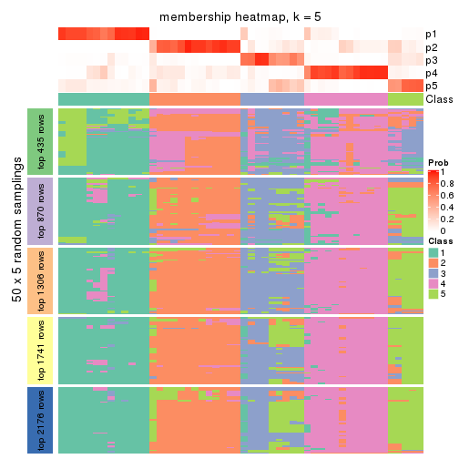
membership_heatmap(res, k = 6)
As soon as we have had the classes for columns, we can look for signatures which are significantly different between classes which can be candidate marks for certain classes. Following are the heatmaps for signatures.
Signature heatmaps where rows are scaled:
get_signatures(res, k = 2)
get_signatures(res, k = 3)
get_signatures(res, k = 4)
get_signatures(res, k = 5)
get_signatures(res, k = 6)
Signature heatmaps where rows are not scaled:
get_signatures(res, k = 2, scale_rows = FALSE)
get_signatures(res, k = 3, scale_rows = FALSE)
get_signatures(res, k = 4, scale_rows = FALSE)
get_signatures(res, k = 5, scale_rows = FALSE)
get_signatures(res, k = 6, scale_rows = FALSE)

Compare the overlap of signatures from different k:
compare_signatures(res)
get_signature() returns a data frame invisibly. TO get the list of signatures, the function
call should be assigned to a variable explicitly. In following code, if plot argument is set
to FALSE, no heatmap is plotted while only the differential analysis is performed.
# code only for demonstration
tb = get_signature(res, k = ..., plot = FALSE)
An example of the output of tb is:
#> which_row fdr mean_1 mean_2 scaled_mean_1 scaled_mean_2 km
#> 1 38 0.042760348 8.373488 9.131774 -0.5533452 0.5164555 1
#> 2 40 0.018707592 7.106213 8.469186 -0.6173731 0.5762149 1
#> 3 55 0.019134737 10.221463 11.207825 -0.6159697 0.5749050 1
#> 4 59 0.006059896 5.921854 7.869574 -0.6899429 0.6439467 1
#> 5 60 0.018055526 8.928898 10.211722 -0.6204761 0.5791110 1
#> 6 98 0.009384629 15.714769 14.887706 0.6635654 -0.6193277 2
...
The columns in tb are:
which_row: row indices corresponding to the input matrix.fdr: FDR for the differential test. mean_x: The mean value in group x.scaled_mean_x: The mean value in group x after rows are scaled.km: Row groups if k-means clustering is applied to rows.UMAP plot which shows how samples are separated.
dimension_reduction(res, k = 2, method = "UMAP")

dimension_reduction(res, k = 3, method = "UMAP")
dimension_reduction(res, k = 4, method = "UMAP")
dimension_reduction(res, k = 5, method = "UMAP")
dimension_reduction(res, k = 6, method = "UMAP")
Following heatmap shows how subgroups are split when increasing k:
collect_classes(res)
If matrix rows can be associated to genes, consider to use GO_Enrichment(res,
...) to perform function enrichment for the signature genes.
The object with results only for a single top-value method and a single partition method can be extracted as:
res = res_list["SD", "NMF"]
# you can also extract it by
# res = res_list["SD:NMF"]
A summary of res and all the functions that can be applied to it:
res
#> A 'ConsensusPartition' object with k = 2, 3, 4, 5, 6.
#> On a matrix with 4352 rows and 52 columns.
#> Top rows (435, 870, 1306, 1741, 2176) are extracted by 'SD' method.
#> Subgroups are detected by 'NMF' method.
#> Performed in total 1250 partitions by row resampling.
#> Best k for subgroups seems to be 2.
#>
#> Following methods can be applied to this 'ConsensusPartition' object:
#> [1] "cola_report" "collect_classes" "collect_plots"
#> [4] "collect_stats" "colnames" "compare_signatures"
#> [7] "consensus_heatmap" "dimension_reduction" "functional_enrichment"
#> [10] "get_anno_col" "get_anno" "get_classes"
#> [13] "get_consensus" "get_matrix" "get_membership"
#> [16] "get_param" "get_signatures" "get_stats"
#> [19] "is_best_k" "is_stable_k" "membership_heatmap"
#> [22] "ncol" "nrow" "plot_ecdf"
#> [25] "rownames" "select_partition_number" "show"
#> [28] "suggest_best_k" "test_to_known_factors"
collect_plots() function collects all the plots made from res for all k (number of partitions)
into one single page to provide an easy and fast comparison between different k.
collect_plots(res)
The plots are:
k and the heatmap of
predicted classes for each k.k.k.k.All the plots in panels can be made by individual functions and they are plotted later in this section.
select_partition_number() produces several plots showing different
statistics for choosing “optimized” k. There are following statistics:
k;k, the area increased is defined as \(A_k - A_{k-1}\).The detailed explanations of these statistics can be found in the cola vignette.
Generally speaking, lower PAC score, higher mean silhouette score or higher
concordance corresponds to better partition. Rand index and Jaccard index
measure how similar the current partition is compared to partition with k-1.
If they are too similar, we won't accept k is better than k-1.
select_partition_number(res)
The numeric values for all these statistics can be obtained by get_stats().
get_stats(res)
#> k 1-PAC mean_silhouette concordance area_increased Rand Jaccard
#> 2 2 0.149 0.759 0.814 0.4559 0.497 0.497
#> 3 3 0.213 0.550 0.759 0.3243 0.875 0.757
#> 4 4 0.267 0.451 0.689 0.1167 0.923 0.815
#> 5 5 0.337 0.390 0.653 0.0657 0.969 0.912
#> 6 6 0.385 0.347 0.613 0.0449 0.928 0.793
suggest_best_k() suggests the best \(k\) based on these statistics. The rules are as follows:
NA.suggest_best_k(res)
#> [1] 2
Following shows the table of the partitions (You need to click the show/hide
code output link to see it). The membership matrix (columns with name p*)
is inferred by
clue::cl_consensus()
function with the SE method. Basically the value in the membership matrix
represents the probability to belong to a certain group. The finall class
label for an item is determined with the group with highest probability it
belongs to.
In get_classes() function, the entropy is calculated from the membership
matrix and the silhouette score is calculated from the consensus matrix.
cbind(get_classes(res, k = 2), get_membership(res, k = 2))
#> class entropy silhouette p1 p2
#> SRR2042654 2 0.969 0.452 0.396 0.604
#> SRR2042653 1 0.662 0.798 0.828 0.172
#> SRR2042652 1 0.506 0.778 0.888 0.112
#> SRR2042650 1 0.402 0.812 0.920 0.080
#> SRR2042649 2 0.141 0.852 0.020 0.980
#> SRR2042647 1 0.541 0.825 0.876 0.124
#> SRR2042648 1 0.995 0.407 0.540 0.460
#> SRR2042646 2 0.118 0.852 0.016 0.984
#> SRR2042645 1 0.671 0.832 0.824 0.176
#> SRR2042644 2 0.184 0.857 0.028 0.972
#> SRR2042643 1 0.671 0.822 0.824 0.176
#> SRR2042642 1 0.850 0.780 0.724 0.276
#> SRR2042640 1 0.781 0.814 0.768 0.232
#> SRR2042641 2 0.311 0.852 0.056 0.944
#> SRR2042639 2 0.917 0.445 0.332 0.668
#> SRR2042638 2 0.998 -0.178 0.476 0.524
#> SRR2042637 2 0.224 0.856 0.036 0.964
#> SRR2042636 1 0.541 0.830 0.876 0.124
#> SRR2042634 1 0.430 0.822 0.912 0.088
#> SRR2042635 1 0.955 0.653 0.624 0.376
#> SRR2042633 2 0.388 0.856 0.076 0.924
#> SRR2042631 1 0.866 0.785 0.712 0.288
#> SRR2042632 2 0.163 0.851 0.024 0.976
#> SRR2042630 2 0.358 0.856 0.068 0.932
#> SRR2042629 1 0.833 0.789 0.736 0.264
#> SRR2042628 2 0.358 0.856 0.068 0.932
#> SRR2042626 1 0.876 0.762 0.704 0.296
#> SRR2042627 1 0.871 0.780 0.708 0.292
#> SRR2042624 2 0.278 0.854 0.048 0.952
#> SRR2042625 1 0.529 0.781 0.880 0.120
#> SRR2042623 1 0.625 0.699 0.844 0.156
#> SRR2042622 1 0.775 0.752 0.772 0.228
#> SRR2042620 1 0.644 0.831 0.836 0.164
#> SRR2042621 2 0.358 0.854 0.068 0.932
#> SRR2042619 1 0.680 0.831 0.820 0.180
#> SRR2042618 2 0.563 0.820 0.132 0.868
#> SRR2042617 1 0.518 0.826 0.884 0.116
#> SRR2042616 2 0.730 0.743 0.204 0.796
#> SRR2042615 2 0.595 0.813 0.144 0.856
#> SRR2042614 2 0.574 0.819 0.136 0.864
#> SRR2042613 2 0.343 0.856 0.064 0.936
#> SRR2042612 2 0.224 0.832 0.036 0.964
#> SRR2042610 1 0.242 0.788 0.960 0.040
#> SRR2042611 1 0.876 0.766 0.704 0.296
#> SRR2042607 1 0.814 0.805 0.748 0.252
#> SRR2042609 1 0.625 0.733 0.844 0.156
#> SRR2042608 2 0.482 0.839 0.104 0.896
#> SRR2042656 2 0.929 0.414 0.344 0.656
#> SRR2042658 2 0.224 0.835 0.036 0.964
#> SRR2042659 1 0.861 0.772 0.716 0.284
#> SRR2042657 1 0.327 0.802 0.940 0.060
#> SRR2042655 1 0.917 0.697 0.668 0.332
cbind(get_classes(res, k = 3), get_membership(res, k = 3))
#> class entropy silhouette p1 p2 p3
#> SRR2042654 3 0.9852 0.0133 0.312 0.272 0.416
#> SRR2042653 1 0.7325 0.4761 0.576 0.388 0.036
#> SRR2042652 1 0.7712 0.4664 0.556 0.392 0.052
#> SRR2042650 2 0.5506 0.4595 0.220 0.764 0.016
#> SRR2042649 3 0.1337 0.8192 0.016 0.012 0.972
#> SRR2042647 2 0.6025 0.3663 0.232 0.740 0.028
#> SRR2042648 2 0.8087 0.3200 0.076 0.560 0.364
#> SRR2042646 3 0.1015 0.8226 0.008 0.012 0.980
#> SRR2042645 2 0.6351 0.5618 0.168 0.760 0.072
#> SRR2042644 3 0.1525 0.8287 0.004 0.032 0.964
#> SRR2042643 2 0.8204 0.1755 0.316 0.588 0.096
#> SRR2042642 2 0.4749 0.6099 0.040 0.844 0.116
#> SRR2042640 2 0.3983 0.6138 0.048 0.884 0.068
#> SRR2042641 3 0.3148 0.8175 0.048 0.036 0.916
#> SRR2042639 3 0.7558 0.3228 0.044 0.400 0.556
#> SRR2042638 2 0.7555 0.1089 0.040 0.520 0.440
#> SRR2042637 3 0.1919 0.8213 0.024 0.020 0.956
#> SRR2042636 2 0.3802 0.5907 0.080 0.888 0.032
#> SRR2042634 2 0.4326 0.5244 0.144 0.844 0.012
#> SRR2042635 2 0.5905 0.5681 0.044 0.772 0.184
#> SRR2042633 3 0.3539 0.8285 0.012 0.100 0.888
#> SRR2042631 2 0.5954 0.6000 0.116 0.792 0.092
#> SRR2042632 3 0.0424 0.8221 0.000 0.008 0.992
#> SRR2042630 3 0.3995 0.8231 0.016 0.116 0.868
#> SRR2042629 2 0.5344 0.6029 0.092 0.824 0.084
#> SRR2042628 3 0.3826 0.8229 0.008 0.124 0.868
#> SRR2042626 2 0.5696 0.5885 0.056 0.796 0.148
#> SRR2042627 2 0.7398 0.4945 0.180 0.700 0.120
#> SRR2042624 3 0.2269 0.8295 0.016 0.040 0.944
#> SRR2042625 1 0.7777 0.5145 0.532 0.416 0.052
#> SRR2042623 1 0.7671 0.6158 0.628 0.300 0.072
#> SRR2042622 2 0.9265 -0.2583 0.416 0.428 0.156
#> SRR2042620 2 0.5159 0.5404 0.140 0.820 0.040
#> SRR2042621 3 0.3461 0.8295 0.024 0.076 0.900
#> SRR2042619 2 0.4586 0.5789 0.096 0.856 0.048
#> SRR2042618 3 0.5536 0.7545 0.024 0.200 0.776
#> SRR2042617 2 0.5551 0.4233 0.212 0.768 0.020
#> SRR2042616 3 0.6621 0.6308 0.032 0.284 0.684
#> SRR2042615 3 0.5167 0.7789 0.024 0.172 0.804
#> SRR2042614 3 0.5435 0.7572 0.024 0.192 0.784
#> SRR2042613 3 0.3083 0.8313 0.024 0.060 0.916
#> SRR2042612 3 0.5772 0.6339 0.220 0.024 0.756
#> SRR2042610 2 0.6509 -0.4135 0.472 0.524 0.004
#> SRR2042611 2 0.4845 0.6084 0.052 0.844 0.104
#> SRR2042607 2 0.5722 0.5974 0.112 0.804 0.084
#> SRR2042609 1 0.7479 0.5991 0.660 0.264 0.076
#> SRR2042608 3 0.4709 0.8147 0.056 0.092 0.852
#> SRR2042656 3 0.7353 0.5153 0.052 0.316 0.632
#> SRR2042658 3 0.1129 0.8160 0.020 0.004 0.976
#> SRR2042659 2 0.7841 0.3725 0.272 0.636 0.092
#> SRR2042657 2 0.5958 0.1471 0.300 0.692 0.008
#> SRR2042655 2 0.8916 0.2189 0.304 0.544 0.152
cbind(get_classes(res, k = 4), get_membership(res, k = 4))
#> class entropy silhouette p1 p2 p3 p4
#> SRR2042654 3 0.979 0.09709 0.156 0.296 0.300 0.248
#> SRR2042653 3 0.833 -0.21381 0.388 0.028 0.388 0.196
#> SRR2042652 1 0.878 0.13446 0.384 0.044 0.316 0.256
#> SRR2042650 4 0.687 0.29816 0.224 0.008 0.148 0.620
#> SRR2042649 2 0.199 0.78067 0.020 0.944 0.024 0.012
#> SRR2042647 4 0.572 0.41093 0.228 0.016 0.048 0.708
#> SRR2042648 4 0.728 0.21766 0.012 0.364 0.112 0.512
#> SRR2042646 2 0.112 0.77848 0.012 0.972 0.012 0.004
#> SRR2042645 4 0.722 0.34170 0.088 0.036 0.284 0.592
#> SRR2042644 2 0.136 0.79130 0.000 0.960 0.008 0.032
#> SRR2042643 4 0.880 -0.12981 0.276 0.048 0.268 0.408
#> SRR2042642 4 0.454 0.55514 0.032 0.108 0.036 0.824
#> SRR2042640 4 0.400 0.57218 0.040 0.064 0.036 0.860
#> SRR2042641 2 0.487 0.73604 0.052 0.816 0.080 0.052
#> SRR2042639 2 0.689 0.35524 0.008 0.536 0.088 0.368
#> SRR2042638 4 0.667 -0.08033 0.004 0.448 0.072 0.476
#> SRR2042637 2 0.222 0.77880 0.020 0.936 0.024 0.020
#> SRR2042636 4 0.448 0.54457 0.044 0.016 0.120 0.820
#> SRR2042634 4 0.599 0.42844 0.128 0.008 0.152 0.712
#> SRR2042635 4 0.570 0.48106 0.016 0.192 0.064 0.728
#> SRR2042633 2 0.343 0.79130 0.012 0.872 0.020 0.096
#> SRR2042631 4 0.612 0.50697 0.048 0.088 0.128 0.736
#> SRR2042632 2 0.127 0.78455 0.008 0.968 0.012 0.012
#> SRR2042630 2 0.513 0.76213 0.032 0.788 0.048 0.132
#> SRR2042629 4 0.456 0.55814 0.008 0.092 0.084 0.816
#> SRR2042628 2 0.427 0.77436 0.012 0.836 0.064 0.088
#> SRR2042626 4 0.524 0.53910 0.020 0.124 0.076 0.780
#> SRR2042627 4 0.744 0.33560 0.088 0.064 0.236 0.612
#> SRR2042624 2 0.241 0.79423 0.000 0.920 0.044 0.036
#> SRR2042625 1 0.772 0.20318 0.576 0.052 0.116 0.256
#> SRR2042623 1 0.676 0.26236 0.684 0.048 0.164 0.104
#> SRR2042622 3 0.931 -0.12097 0.300 0.092 0.368 0.240
#> SRR2042620 4 0.562 0.51033 0.108 0.024 0.108 0.760
#> SRR2042621 2 0.357 0.78574 0.004 0.868 0.052 0.076
#> SRR2042619 4 0.567 0.50579 0.116 0.024 0.104 0.756
#> SRR2042618 2 0.543 0.70778 0.008 0.732 0.056 0.204
#> SRR2042617 4 0.737 0.22050 0.240 0.016 0.164 0.580
#> SRR2042616 2 0.646 0.52769 0.008 0.596 0.068 0.328
#> SRR2042615 2 0.473 0.73183 0.008 0.772 0.028 0.192
#> SRR2042614 2 0.529 0.71371 0.012 0.748 0.048 0.192
#> SRR2042613 2 0.202 0.79676 0.000 0.932 0.012 0.056
#> SRR2042612 2 0.760 0.28852 0.164 0.576 0.232 0.028
#> SRR2042610 1 0.609 0.26197 0.596 0.004 0.048 0.352
#> SRR2042611 4 0.498 0.55590 0.040 0.088 0.064 0.808
#> SRR2042607 4 0.587 0.51533 0.036 0.060 0.168 0.736
#> SRR2042609 1 0.863 0.23583 0.504 0.080 0.236 0.180
#> SRR2042608 2 0.529 0.73663 0.020 0.776 0.076 0.128
#> SRR2042656 2 0.689 0.51013 0.016 0.588 0.088 0.308
#> SRR2042658 2 0.232 0.75440 0.032 0.928 0.036 0.004
#> SRR2042659 4 0.833 -0.11616 0.120 0.060 0.408 0.412
#> SRR2042657 4 0.722 -0.00131 0.372 0.016 0.096 0.516
#> SRR2042655 3 0.854 0.14639 0.112 0.096 0.484 0.308
cbind(get_classes(res, k = 5), get_membership(res, k = 5))
#> class entropy silhouette p1 p2 p3 p4 p5
#> SRR2042654 1 0.9521 0.07779 0.328 0.236 0.124 0.200 0.112
#> SRR2042653 5 0.2824 0.15834 0.028 0.016 0.000 0.068 0.888
#> SRR2042652 1 0.6975 0.12231 0.632 0.028 0.080 0.132 0.128
#> SRR2042650 4 0.7513 0.14169 0.088 0.004 0.244 0.512 0.152
#> SRR2042649 2 0.2582 0.71269 0.020 0.904 0.060 0.008 0.008
#> SRR2042647 4 0.5934 0.38378 0.032 0.004 0.116 0.672 0.176
#> SRR2042648 4 0.6150 0.17583 0.016 0.336 0.068 0.568 0.012
#> SRR2042646 2 0.1969 0.72584 0.012 0.932 0.044 0.008 0.004
#> SRR2042645 4 0.7406 0.32906 0.112 0.024 0.172 0.584 0.108
#> SRR2042644 2 0.1644 0.73996 0.008 0.948 0.012 0.028 0.004
#> SRR2042643 3 0.9002 0.00000 0.192 0.024 0.316 0.252 0.216
#> SRR2042642 4 0.3572 0.53928 0.016 0.072 0.024 0.860 0.028
#> SRR2042640 4 0.3475 0.54065 0.004 0.036 0.052 0.864 0.044
#> SRR2042641 2 0.5632 0.67173 0.020 0.724 0.124 0.104 0.028
#> SRR2042639 2 0.6119 0.28821 0.008 0.480 0.084 0.424 0.004
#> SRR2042638 4 0.5291 0.14323 0.008 0.356 0.028 0.600 0.008
#> SRR2042637 2 0.2207 0.73551 0.012 0.924 0.040 0.020 0.004
#> SRR2042636 4 0.4609 0.46905 0.016 0.000 0.172 0.756 0.056
#> SRR2042634 4 0.6534 0.36272 0.048 0.004 0.168 0.624 0.156
#> SRR2042635 4 0.4444 0.48661 0.008 0.160 0.024 0.780 0.028
#> SRR2042633 2 0.3470 0.74761 0.016 0.852 0.052 0.080 0.000
#> SRR2042631 4 0.6170 0.42872 0.040 0.040 0.140 0.696 0.084
#> SRR2042632 2 0.0771 0.72578 0.004 0.976 0.020 0.000 0.000
#> SRR2042630 2 0.5315 0.68652 0.020 0.700 0.084 0.196 0.000
#> SRR2042629 4 0.4708 0.53244 0.016 0.056 0.104 0.792 0.032
#> SRR2042628 2 0.5554 0.67995 0.048 0.744 0.112 0.068 0.028
#> SRR2042626 4 0.4423 0.51488 0.016 0.100 0.052 0.808 0.024
#> SRR2042627 4 0.7610 -0.07585 0.036 0.024 0.172 0.476 0.292
#> SRR2042624 2 0.3881 0.71930 0.032 0.836 0.088 0.040 0.004
#> SRR2042625 5 0.8544 0.08272 0.168 0.052 0.240 0.092 0.448
#> SRR2042623 1 0.8648 0.05537 0.416 0.052 0.168 0.092 0.272
#> SRR2042622 1 0.8677 0.15536 0.440 0.056 0.244 0.120 0.140
#> SRR2042620 4 0.5211 0.43966 0.028 0.004 0.084 0.736 0.148
#> SRR2042621 2 0.4766 0.71649 0.032 0.784 0.092 0.084 0.008
#> SRR2042619 4 0.6047 0.43917 0.048 0.020 0.112 0.700 0.120
#> SRR2042618 2 0.4793 0.67190 0.000 0.692 0.048 0.256 0.004
#> SRR2042617 4 0.8054 0.01555 0.076 0.020 0.228 0.464 0.212
#> SRR2042616 2 0.5882 0.41360 0.020 0.536 0.040 0.396 0.008
#> SRR2042615 2 0.4883 0.70797 0.008 0.736 0.060 0.188 0.008
#> SRR2042614 2 0.5060 0.67087 0.000 0.688 0.064 0.240 0.008
#> SRR2042613 2 0.3107 0.74689 0.012 0.868 0.032 0.088 0.000
#> SRR2042612 2 0.7935 -0.00065 0.112 0.460 0.288 0.012 0.128
#> SRR2042610 5 0.8427 0.08310 0.252 0.000 0.168 0.240 0.340
#> SRR2042611 4 0.3802 0.53657 0.004 0.068 0.032 0.844 0.052
#> SRR2042607 4 0.4805 0.49409 0.044 0.024 0.136 0.776 0.020
#> SRR2042609 1 0.6988 0.14589 0.620 0.036 0.076 0.076 0.192
#> SRR2042608 2 0.6041 0.65932 0.028 0.668 0.104 0.188 0.012
#> SRR2042656 2 0.6053 0.39573 0.012 0.520 0.056 0.400 0.012
#> SRR2042658 2 0.2699 0.71092 0.008 0.892 0.080 0.012 0.008
#> SRR2042659 4 0.8768 -0.21660 0.288 0.032 0.272 0.312 0.096
#> SRR2042657 4 0.7966 -0.25831 0.148 0.000 0.196 0.456 0.200
#> SRR2042655 5 0.8992 -0.14430 0.076 0.076 0.232 0.256 0.360
cbind(get_classes(res, k = 6), get_membership(res, k = 6))
#> class entropy silhouette p1 p2 p3 p4 p5 p6
#> SRR2042654 1 0.916 0.03293 0.352 0.164 0.120 0.172 0.148 0.044
#> SRR2042653 3 0.821 -0.30016 0.124 0.000 0.348 0.068 0.172 0.288
#> SRR2042652 1 0.614 0.08944 0.688 0.028 0.044 0.076 0.080 0.084
#> SRR2042650 4 0.737 -0.17485 0.064 0.000 0.024 0.360 0.356 0.196
#> SRR2042649 2 0.292 0.62436 0.000 0.820 0.168 0.008 0.004 0.000
#> SRR2042647 4 0.570 0.44834 0.040 0.004 0.024 0.680 0.104 0.148
#> SRR2042648 4 0.564 0.30575 0.024 0.316 0.024 0.584 0.052 0.000
#> SRR2042646 2 0.177 0.67312 0.008 0.932 0.044 0.004 0.012 0.000
#> SRR2042645 4 0.638 0.29737 0.060 0.012 0.064 0.580 0.264 0.020
#> SRR2042644 2 0.188 0.68473 0.004 0.928 0.040 0.020 0.008 0.000
#> SRR2042643 1 0.923 -0.02054 0.276 0.024 0.140 0.172 0.224 0.164
#> SRR2042642 4 0.345 0.55208 0.012 0.096 0.012 0.836 0.044 0.000
#> SRR2042640 4 0.348 0.55506 0.004 0.052 0.000 0.836 0.084 0.024
#> SRR2042641 2 0.620 0.44843 0.004 0.548 0.268 0.152 0.012 0.016
#> SRR2042639 2 0.582 0.30911 0.016 0.524 0.032 0.380 0.044 0.004
#> SRR2042638 4 0.438 0.29426 0.000 0.316 0.028 0.648 0.008 0.000
#> SRR2042637 2 0.266 0.66701 0.000 0.872 0.100 0.016 0.008 0.004
#> SRR2042636 4 0.457 0.47557 0.012 0.000 0.028 0.720 0.212 0.028
#> SRR2042634 4 0.567 0.31863 0.020 0.000 0.016 0.592 0.292 0.080
#> SRR2042635 4 0.405 0.50957 0.004 0.192 0.028 0.760 0.008 0.008
#> SRR2042633 2 0.437 0.67683 0.004 0.784 0.076 0.100 0.020 0.016
#> SRR2042631 4 0.629 0.44209 0.068 0.036 0.028 0.632 0.204 0.032
#> SRR2042632 2 0.128 0.67776 0.000 0.944 0.052 0.000 0.004 0.000
#> SRR2042630 2 0.631 0.51200 0.004 0.528 0.200 0.244 0.016 0.008
#> SRR2042629 4 0.517 0.50693 0.016 0.060 0.004 0.684 0.216 0.020
#> SRR2042628 2 0.526 0.56146 0.024 0.736 0.112 0.036 0.076 0.016
#> SRR2042626 4 0.455 0.54324 0.020 0.092 0.020 0.784 0.068 0.016
#> SRR2042627 4 0.754 -0.02019 0.016 0.012 0.140 0.424 0.308 0.100
#> SRR2042624 2 0.366 0.66605 0.028 0.840 0.056 0.040 0.036 0.000
#> SRR2042625 6 0.455 0.30226 0.020 0.016 0.072 0.060 0.040 0.792
#> SRR2042623 6 0.768 0.14186 0.316 0.028 0.084 0.056 0.068 0.448
#> SRR2042622 1 0.920 -0.06421 0.288 0.036 0.192 0.108 0.240 0.136
#> SRR2042620 4 0.485 0.51479 0.024 0.012 0.072 0.768 0.088 0.036
#> SRR2042621 2 0.418 0.66749 0.032 0.816 0.056 0.052 0.036 0.008
#> SRR2042619 4 0.612 0.37456 0.016 0.012 0.016 0.604 0.204 0.148
#> SRR2042618 2 0.512 0.55013 0.004 0.624 0.064 0.292 0.016 0.000
#> SRR2042617 4 0.802 -0.15884 0.064 0.008 0.056 0.356 0.296 0.220
#> SRR2042616 2 0.576 0.18944 0.004 0.456 0.052 0.452 0.028 0.008
#> SRR2042615 2 0.387 0.67414 0.012 0.780 0.028 0.172 0.004 0.004
#> SRR2042614 2 0.432 0.62378 0.000 0.708 0.032 0.244 0.012 0.004
#> SRR2042613 2 0.294 0.69579 0.008 0.872 0.056 0.052 0.012 0.000
#> SRR2042612 3 0.713 0.00621 0.040 0.300 0.488 0.028 0.020 0.124
#> SRR2042610 6 0.777 0.20953 0.240 0.000 0.068 0.132 0.108 0.452
#> SRR2042611 4 0.376 0.55271 0.004 0.068 0.032 0.836 0.036 0.024
#> SRR2042607 4 0.607 0.40592 0.060 0.032 0.028 0.628 0.232 0.020
#> SRR2042609 1 0.761 -0.04876 0.540 0.048 0.116 0.056 0.056 0.184
#> SRR2042608 2 0.668 0.43702 0.004 0.468 0.220 0.276 0.012 0.020
#> SRR2042656 4 0.607 -0.16112 0.008 0.428 0.084 0.452 0.012 0.016
#> SRR2042658 2 0.346 0.57960 0.004 0.776 0.204 0.008 0.000 0.008
#> SRR2042659 5 0.781 0.13197 0.164 0.036 0.068 0.200 0.492 0.040
#> SRR2042657 4 0.804 -0.03235 0.156 0.012 0.020 0.396 0.204 0.212
#> SRR2042655 5 0.895 0.08156 0.144 0.048 0.240 0.132 0.356 0.080
Heatmaps for the consensus matrix. It visualizes the probability of two samples to be in a same group.
consensus_heatmap(res, k = 2)
consensus_heatmap(res, k = 3)
consensus_heatmap(res, k = 4)
consensus_heatmap(res, k = 5)
consensus_heatmap(res, k = 6)
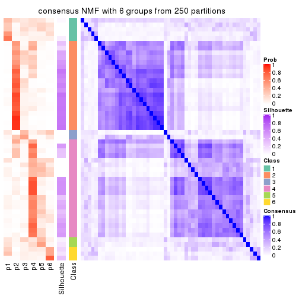
Heatmaps for the membership of samples in all partitions to see how consistent they are:
membership_heatmap(res, k = 2)
membership_heatmap(res, k = 3)
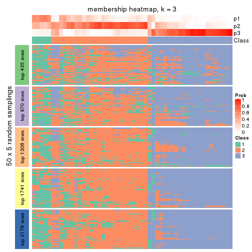
membership_heatmap(res, k = 4)
membership_heatmap(res, k = 5)
membership_heatmap(res, k = 6)
As soon as we have had the classes for columns, we can look for signatures which are significantly different between classes which can be candidate marks for certain classes. Following are the heatmaps for signatures.
Signature heatmaps where rows are scaled:
get_signatures(res, k = 2)
get_signatures(res, k = 3)
get_signatures(res, k = 4)
get_signatures(res, k = 5)
get_signatures(res, k = 6)
Signature heatmaps where rows are not scaled:
get_signatures(res, k = 2, scale_rows = FALSE)
get_signatures(res, k = 3, scale_rows = FALSE)
get_signatures(res, k = 4, scale_rows = FALSE)
get_signatures(res, k = 5, scale_rows = FALSE)
get_signatures(res, k = 6, scale_rows = FALSE)
Compare the overlap of signatures from different k:
compare_signatures(res)
get_signature() returns a data frame invisibly. TO get the list of signatures, the function
call should be assigned to a variable explicitly. In following code, if plot argument is set
to FALSE, no heatmap is plotted while only the differential analysis is performed.
# code only for demonstration
tb = get_signature(res, k = ..., plot = FALSE)
An example of the output of tb is:
#> which_row fdr mean_1 mean_2 scaled_mean_1 scaled_mean_2 km
#> 1 38 0.042760348 8.373488 9.131774 -0.5533452 0.5164555 1
#> 2 40 0.018707592 7.106213 8.469186 -0.6173731 0.5762149 1
#> 3 55 0.019134737 10.221463 11.207825 -0.6159697 0.5749050 1
#> 4 59 0.006059896 5.921854 7.869574 -0.6899429 0.6439467 1
#> 5 60 0.018055526 8.928898 10.211722 -0.6204761 0.5791110 1
#> 6 98 0.009384629 15.714769 14.887706 0.6635654 -0.6193277 2
...
The columns in tb are:
which_row: row indices corresponding to the input matrix.fdr: FDR for the differential test. mean_x: The mean value in group x.scaled_mean_x: The mean value in group x after rows are scaled.km: Row groups if k-means clustering is applied to rows.UMAP plot which shows how samples are separated.
dimension_reduction(res, k = 2, method = "UMAP")
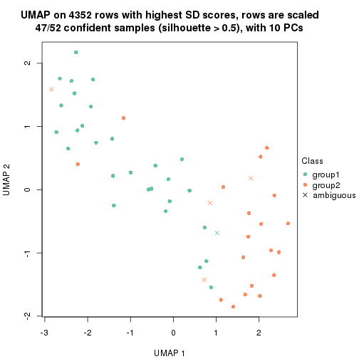
dimension_reduction(res, k = 3, method = "UMAP")
dimension_reduction(res, k = 4, method = "UMAP")
dimension_reduction(res, k = 5, method = "UMAP")
dimension_reduction(res, k = 6, method = "UMAP")
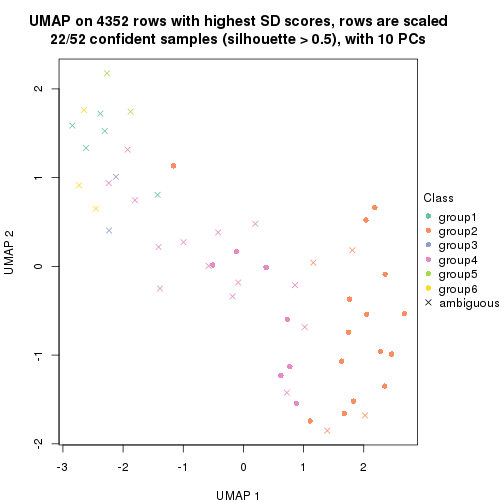
Following heatmap shows how subgroups are split when increasing k:
collect_classes(res)
If matrix rows can be associated to genes, consider to use GO_Enrichment(res,
...) to perform function enrichment for the signature genes.
The object with results only for a single top-value method and a single partition method can be extracted as:
res = res_list["CV", "hclust"]
# you can also extract it by
# res = res_list["CV:hclust"]
A summary of res and all the functions that can be applied to it:
res
#> A 'ConsensusPartition' object with k = 2, 3, 4, 5, 6.
#> On a matrix with 4352 rows and 52 columns.
#> Top rows (435, 870, 1306, 1741, 2176) are extracted by 'CV' method.
#> Subgroups are detected by 'hclust' method.
#> Performed in total 1250 partitions by row resampling.
#> Best k for subgroups seems to be 2.
#>
#> Following methods can be applied to this 'ConsensusPartition' object:
#> [1] "cola_report" "collect_classes" "collect_plots"
#> [4] "collect_stats" "colnames" "compare_signatures"
#> [7] "consensus_heatmap" "dimension_reduction" "functional_enrichment"
#> [10] "get_anno_col" "get_anno" "get_classes"
#> [13] "get_consensus" "get_matrix" "get_membership"
#> [16] "get_param" "get_signatures" "get_stats"
#> [19] "is_best_k" "is_stable_k" "membership_heatmap"
#> [22] "ncol" "nrow" "plot_ecdf"
#> [25] "rownames" "select_partition_number" "show"
#> [28] "suggest_best_k" "test_to_known_factors"
collect_plots() function collects all the plots made from res for all k (number of partitions)
into one single page to provide an easy and fast comparison between different k.
collect_plots(res)
The plots are:
k and the heatmap of
predicted classes for each k.k.k.k.All the plots in panels can be made by individual functions and they are plotted later in this section.
select_partition_number() produces several plots showing different
statistics for choosing “optimized” k. There are following statistics:
k;k, the area increased is defined as \(A_k - A_{k-1}\).The detailed explanations of these statistics can be found in the cola vignette.
Generally speaking, lower PAC score, higher mean silhouette score or higher
concordance corresponds to better partition. Rand index and Jaccard index
measure how similar the current partition is compared to partition with k-1.
If they are too similar, we won't accept k is better than k-1.
select_partition_number(res)
The numeric values for all these statistics can be obtained by get_stats().
get_stats(res)
#> k 1-PAC mean_silhouette concordance area_increased Rand Jaccard
#> 2 2 0.295 0.732 0.849 0.4331 0.509 0.509
#> 3 3 0.378 0.571 0.787 0.2815 0.949 0.899
#> 4 4 0.411 0.517 0.744 0.1183 0.851 0.691
#> 5 5 0.513 0.543 0.747 0.0577 0.938 0.835
#> 6 6 0.573 0.554 0.718 0.0478 0.895 0.707
suggest_best_k() suggests the best \(k\) based on these statistics. The rules are as follows:
NA.suggest_best_k(res)
#> [1] 2
Following shows the table of the partitions (You need to click the show/hide
code output link to see it). The membership matrix (columns with name p*)
is inferred by
clue::cl_consensus()
function with the SE method. Basically the value in the membership matrix
represents the probability to belong to a certain group. The finall class
label for an item is determined with the group with highest probability it
belongs to.
In get_classes() function, the entropy is calculated from the membership
matrix and the silhouette score is calculated from the consensus matrix.
cbind(get_classes(res, k = 2), get_membership(res, k = 2))
#> class entropy silhouette p1 p2
#> SRR2042654 1 0.0000 0.890 1.000 0.000
#> SRR2042653 1 0.0000 0.890 1.000 0.000
#> SRR2042652 1 0.0000 0.890 1.000 0.000
#> SRR2042650 1 0.0000 0.890 1.000 0.000
#> SRR2042649 2 0.5408 0.774 0.124 0.876
#> SRR2042647 1 0.2236 0.876 0.964 0.036
#> SRR2042648 2 0.9710 0.637 0.400 0.600
#> SRR2042646 2 0.5737 0.747 0.136 0.864
#> SRR2042645 1 0.2423 0.873 0.960 0.040
#> SRR2042644 2 0.5519 0.777 0.128 0.872
#> SRR2042643 1 0.0376 0.888 0.996 0.004
#> SRR2042642 2 0.9815 0.605 0.420 0.580
#> SRR2042640 1 0.7815 0.597 0.768 0.232
#> SRR2042641 1 0.9491 0.256 0.632 0.368
#> SRR2042639 2 0.9710 0.563 0.400 0.600
#> SRR2042638 2 0.9732 0.631 0.404 0.596
#> SRR2042637 2 0.7376 0.778 0.208 0.792
#> SRR2042636 1 0.1414 0.884 0.980 0.020
#> SRR2042634 1 0.0672 0.888 0.992 0.008
#> SRR2042635 2 0.9732 0.631 0.404 0.596
#> SRR2042633 2 0.9635 0.607 0.388 0.612
#> SRR2042631 1 0.1843 0.879 0.972 0.028
#> SRR2042632 2 0.2778 0.733 0.048 0.952
#> SRR2042630 2 0.5294 0.777 0.120 0.880
#> SRR2042629 1 0.3274 0.858 0.940 0.060
#> SRR2042628 1 0.9970 -0.272 0.532 0.468
#> SRR2042626 2 0.9954 0.507 0.460 0.540
#> SRR2042627 1 0.0000 0.890 1.000 0.000
#> SRR2042624 2 0.7453 0.725 0.212 0.788
#> SRR2042625 1 0.0000 0.890 1.000 0.000
#> SRR2042623 1 0.0000 0.890 1.000 0.000
#> SRR2042622 1 0.0000 0.890 1.000 0.000
#> SRR2042620 1 0.5294 0.798 0.880 0.120
#> SRR2042621 2 0.8813 0.699 0.300 0.700
#> SRR2042619 1 0.1843 0.880 0.972 0.028
#> SRR2042618 2 0.6712 0.785 0.176 0.824
#> SRR2042617 1 0.0000 0.890 1.000 0.000
#> SRR2042616 2 0.6247 0.785 0.156 0.844
#> SRR2042615 2 0.5294 0.779 0.120 0.880
#> SRR2042614 2 0.8081 0.768 0.248 0.752
#> SRR2042613 2 0.3584 0.742 0.068 0.932
#> SRR2042612 1 0.0672 0.888 0.992 0.008
#> SRR2042610 1 0.0000 0.890 1.000 0.000
#> SRR2042611 2 0.9754 0.626 0.408 0.592
#> SRR2042607 1 0.4022 0.844 0.920 0.080
#> SRR2042609 1 0.0000 0.890 1.000 0.000
#> SRR2042608 1 0.7528 0.656 0.784 0.216
#> SRR2042656 1 0.8909 0.417 0.692 0.308
#> SRR2042658 1 0.9977 -0.267 0.528 0.472
#> SRR2042659 1 0.0000 0.890 1.000 0.000
#> SRR2042657 1 0.0376 0.889 0.996 0.004
#> SRR2042655 1 0.0000 0.890 1.000 0.000
cbind(get_classes(res, k = 3), get_membership(res, k = 3))
#> class entropy silhouette p1 p2 p3
#> SRR2042654 1 0.0000 0.8415 1.000 0.000 0.000
#> SRR2042653 1 0.0000 0.8415 1.000 0.000 0.000
#> SRR2042652 1 0.0000 0.8415 1.000 0.000 0.000
#> SRR2042650 1 0.0237 0.8399 0.996 0.000 0.004
#> SRR2042649 2 0.5598 0.3472 0.052 0.800 0.148
#> SRR2042647 1 0.3933 0.7843 0.880 0.028 0.092
#> SRR2042648 2 0.8647 0.5373 0.208 0.600 0.192
#> SRR2042646 3 0.7278 0.3940 0.028 0.456 0.516
#> SRR2042645 1 0.2152 0.8209 0.948 0.016 0.036
#> SRR2042644 2 0.6435 0.3443 0.076 0.756 0.168
#> SRR2042643 1 0.0237 0.8407 0.996 0.000 0.004
#> SRR2042642 2 0.8802 0.5275 0.216 0.584 0.200
#> SRR2042640 1 0.8913 0.3384 0.572 0.220 0.208
#> SRR2042641 1 0.9433 -0.0536 0.460 0.356 0.184
#> SRR2042639 2 0.9450 0.2510 0.296 0.492 0.212
#> SRR2042638 2 0.8689 0.5385 0.204 0.596 0.200
#> SRR2042637 2 0.7558 0.2849 0.124 0.688 0.188
#> SRR2042636 1 0.2804 0.8137 0.924 0.016 0.060
#> SRR2042634 1 0.0983 0.8358 0.980 0.004 0.016
#> SRR2042635 2 0.8689 0.5385 0.204 0.596 0.200
#> SRR2042633 3 0.9894 0.3600 0.276 0.324 0.400
#> SRR2042631 1 0.2446 0.8196 0.936 0.012 0.052
#> SRR2042632 2 0.4645 0.2453 0.008 0.816 0.176
#> SRR2042630 2 0.5137 0.4541 0.064 0.832 0.104
#> SRR2042629 1 0.5094 0.7440 0.824 0.040 0.136
#> SRR2042628 1 0.9322 -0.3414 0.444 0.164 0.392
#> SRR2042626 2 0.9347 0.4412 0.288 0.508 0.204
#> SRR2042627 1 0.0000 0.8415 1.000 0.000 0.000
#> SRR2042624 3 0.8548 0.6162 0.120 0.312 0.568
#> SRR2042625 1 0.0000 0.8415 1.000 0.000 0.000
#> SRR2042623 1 0.0000 0.8415 1.000 0.000 0.000
#> SRR2042622 1 0.0000 0.8415 1.000 0.000 0.000
#> SRR2042620 1 0.7304 0.5915 0.688 0.084 0.228
#> SRR2042621 3 0.9129 0.6017 0.180 0.288 0.532
#> SRR2042619 1 0.2383 0.8235 0.940 0.016 0.044
#> SRR2042618 2 0.4206 0.5240 0.088 0.872 0.040
#> SRR2042617 1 0.0000 0.8415 1.000 0.000 0.000
#> SRR2042616 2 0.4035 0.5079 0.080 0.880 0.040
#> SRR2042615 2 0.4075 0.4878 0.072 0.880 0.048
#> SRR2042614 2 0.5852 0.5398 0.152 0.788 0.060
#> SRR2042613 2 0.5896 0.0739 0.008 0.700 0.292
#> SRR2042612 1 0.0892 0.8346 0.980 0.000 0.020
#> SRR2042610 1 0.0000 0.8415 1.000 0.000 0.000
#> SRR2042611 2 0.8728 0.5361 0.208 0.592 0.200
#> SRR2042607 1 0.5852 0.7069 0.788 0.060 0.152
#> SRR2042609 1 0.0000 0.8415 1.000 0.000 0.000
#> SRR2042608 1 0.8241 0.4774 0.636 0.204 0.160
#> SRR2042656 1 0.9480 0.1050 0.496 0.268 0.236
#> SRR2042658 1 0.9621 -0.3579 0.432 0.208 0.360
#> SRR2042659 1 0.0237 0.8399 0.996 0.000 0.004
#> SRR2042657 1 0.0424 0.8397 0.992 0.000 0.008
#> SRR2042655 1 0.0475 0.8387 0.992 0.004 0.004
cbind(get_classes(res, k = 4), get_membership(res, k = 4))
#> class entropy silhouette p1 p2 p3 p4
#> SRR2042654 1 0.0000 0.8771 1.000 0.000 0.000 0.000
#> SRR2042653 1 0.0000 0.8771 1.000 0.000 0.000 0.000
#> SRR2042652 1 0.0000 0.8771 1.000 0.000 0.000 0.000
#> SRR2042650 1 0.0376 0.8762 0.992 0.004 0.004 0.000
#> SRR2042649 4 0.6862 0.5718 0.020 0.432 0.056 0.492
#> SRR2042647 1 0.4785 0.7488 0.812 0.108 0.052 0.028
#> SRR2042648 2 0.2799 0.4454 0.108 0.884 0.000 0.008
#> SRR2042646 3 0.7216 0.0488 0.000 0.140 0.448 0.412
#> SRR2042645 1 0.2310 0.8406 0.932 0.020 0.032 0.016
#> SRR2042644 2 0.7877 -0.3944 0.044 0.484 0.104 0.368
#> SRR2042643 1 0.0376 0.8765 0.992 0.004 0.000 0.004
#> SRR2042642 2 0.2714 0.4509 0.112 0.884 0.000 0.004
#> SRR2042640 1 0.6700 0.0347 0.476 0.460 0.040 0.024
#> SRR2042641 2 0.8653 0.1321 0.368 0.380 0.044 0.208
#> SRR2042639 2 0.8510 0.2072 0.236 0.488 0.052 0.224
#> SRR2042638 2 0.2281 0.4459 0.096 0.904 0.000 0.000
#> SRR2042637 4 0.8461 0.4826 0.052 0.384 0.152 0.412
#> SRR2042636 1 0.3351 0.8158 0.884 0.068 0.036 0.012
#> SRR2042634 1 0.0779 0.8716 0.980 0.000 0.016 0.004
#> SRR2042635 2 0.2281 0.4459 0.096 0.904 0.000 0.000
#> SRR2042633 3 0.9272 0.3550 0.204 0.196 0.452 0.148
#> SRR2042631 1 0.3106 0.8288 0.900 0.040 0.040 0.020
#> SRR2042632 4 0.6031 0.5793 0.000 0.388 0.048 0.564
#> SRR2042630 2 0.6369 -0.4754 0.032 0.484 0.016 0.468
#> SRR2042629 1 0.5658 0.6687 0.744 0.172 0.056 0.028
#> SRR2042628 3 0.6898 0.4808 0.380 0.032 0.540 0.048
#> SRR2042626 2 0.3992 0.4231 0.188 0.800 0.004 0.008
#> SRR2042627 1 0.0188 0.8770 0.996 0.004 0.000 0.000
#> SRR2042624 3 0.8299 0.3918 0.096 0.092 0.508 0.304
#> SRR2042625 1 0.0188 0.8771 0.996 0.004 0.000 0.000
#> SRR2042623 1 0.0000 0.8771 1.000 0.000 0.000 0.000
#> SRR2042622 1 0.0188 0.8770 0.996 0.004 0.000 0.000
#> SRR2042620 1 0.6976 0.3880 0.576 0.332 0.048 0.044
#> SRR2042621 3 0.8719 0.4127 0.120 0.124 0.500 0.256
#> SRR2042619 1 0.2775 0.8382 0.912 0.044 0.032 0.012
#> SRR2042618 2 0.5474 -0.1549 0.024 0.684 0.012 0.280
#> SRR2042617 1 0.0000 0.8771 1.000 0.000 0.000 0.000
#> SRR2042616 2 0.5889 -0.2526 0.024 0.624 0.016 0.336
#> SRR2042615 2 0.5999 -0.3599 0.036 0.564 0.004 0.396
#> SRR2042614 2 0.6037 0.0969 0.072 0.688 0.012 0.228
#> SRR2042613 4 0.7494 0.5264 0.000 0.312 0.204 0.484
#> SRR2042612 1 0.0895 0.8667 0.976 0.004 0.020 0.000
#> SRR2042610 1 0.0188 0.8771 0.996 0.004 0.000 0.000
#> SRR2042611 2 0.2408 0.4499 0.104 0.896 0.000 0.000
#> SRR2042607 1 0.5943 0.6134 0.708 0.216 0.040 0.036
#> SRR2042609 1 0.0000 0.8771 1.000 0.000 0.000 0.000
#> SRR2042608 1 0.7846 0.2541 0.536 0.288 0.036 0.140
#> SRR2042656 2 0.8063 0.1676 0.380 0.464 0.060 0.096
#> SRR2042658 3 0.8150 0.4713 0.364 0.056 0.468 0.112
#> SRR2042659 1 0.0188 0.8754 0.996 0.000 0.004 0.000
#> SRR2042657 1 0.0657 0.8751 0.984 0.004 0.012 0.000
#> SRR2042655 1 0.0712 0.8743 0.984 0.008 0.004 0.004
cbind(get_classes(res, k = 5), get_membership(res, k = 5))
#> class entropy silhouette p1 p2 p3 p4 p5
#> SRR2042654 1 0.0000 0.8710 1.000 0.000 0.000 0.000 0.000
#> SRR2042653 1 0.0000 0.8710 1.000 0.000 0.000 0.000 0.000
#> SRR2042652 1 0.0000 0.8710 1.000 0.000 0.000 0.000 0.000
#> SRR2042650 1 0.0324 0.8698 0.992 0.004 0.000 0.004 0.000
#> SRR2042649 3 0.6830 0.5723 0.012 0.288 0.564 0.076 0.060
#> SRR2042647 1 0.4712 0.6829 0.768 0.124 0.008 0.092 0.008
#> SRR2042648 2 0.2393 0.4717 0.080 0.900 0.016 0.004 0.000
#> SRR2042646 5 0.5023 0.4869 0.000 0.056 0.136 0.056 0.752
#> SRR2042645 1 0.2129 0.8281 0.924 0.008 0.008 0.052 0.008
#> SRR2042644 3 0.7942 0.4347 0.020 0.384 0.392 0.096 0.108
#> SRR2042643 1 0.0613 0.8686 0.984 0.004 0.004 0.008 0.000
#> SRR2042642 2 0.1894 0.4761 0.072 0.920 0.000 0.008 0.000
#> SRR2042640 2 0.6230 0.0911 0.424 0.484 0.016 0.068 0.008
#> SRR2042641 2 0.8696 0.0658 0.304 0.324 0.216 0.140 0.016
#> SRR2042639 2 0.8497 0.1645 0.212 0.456 0.200 0.068 0.064
#> SRR2042638 2 0.1410 0.4688 0.060 0.940 0.000 0.000 0.000
#> SRR2042637 3 0.7735 0.4749 0.020 0.272 0.460 0.208 0.040
#> SRR2042636 1 0.3432 0.7751 0.852 0.076 0.004 0.064 0.004
#> SRR2042634 1 0.0671 0.8654 0.980 0.000 0.000 0.016 0.004
#> SRR2042635 2 0.1410 0.4688 0.060 0.940 0.000 0.000 0.000
#> SRR2042633 4 0.8312 0.2647 0.152 0.140 0.104 0.524 0.080
#> SRR2042631 1 0.3507 0.7838 0.860 0.048 0.012 0.068 0.012
#> SRR2042632 3 0.5571 0.5943 0.000 0.276 0.624 0.004 0.096
#> SRR2042630 3 0.6154 0.4510 0.020 0.384 0.528 0.060 0.008
#> SRR2042629 1 0.5364 0.5855 0.700 0.192 0.008 0.092 0.008
#> SRR2042628 4 0.5890 0.5655 0.308 0.008 0.016 0.604 0.064
#> SRR2042626 2 0.3351 0.4592 0.148 0.828 0.004 0.020 0.000
#> SRR2042627 1 0.0162 0.8709 0.996 0.004 0.000 0.000 0.000
#> SRR2042624 5 0.6902 0.5710 0.080 0.040 0.072 0.172 0.636
#> SRR2042625 1 0.0324 0.8705 0.992 0.004 0.000 0.004 0.000
#> SRR2042623 1 0.0000 0.8710 1.000 0.000 0.000 0.000 0.000
#> SRR2042622 1 0.0162 0.8709 0.996 0.004 0.000 0.000 0.000
#> SRR2042620 1 0.6658 0.1651 0.504 0.364 0.024 0.100 0.008
#> SRR2042621 5 0.7413 0.5104 0.084 0.060 0.048 0.248 0.560
#> SRR2042619 1 0.2623 0.8191 0.900 0.044 0.004 0.048 0.004
#> SRR2042618 2 0.5274 -0.2206 0.024 0.612 0.344 0.012 0.008
#> SRR2042617 1 0.0000 0.8710 1.000 0.000 0.000 0.000 0.000
#> SRR2042616 2 0.5334 -0.3101 0.024 0.552 0.408 0.012 0.004
#> SRR2042615 2 0.5849 -0.4442 0.024 0.484 0.456 0.024 0.012
#> SRR2042614 2 0.5281 0.0502 0.052 0.668 0.264 0.012 0.004
#> SRR2042613 3 0.7463 0.3872 0.000 0.220 0.464 0.056 0.260
#> SRR2042612 1 0.0794 0.8565 0.972 0.000 0.000 0.028 0.000
#> SRR2042610 1 0.0324 0.8705 0.992 0.004 0.000 0.004 0.000
#> SRR2042611 2 0.1638 0.4722 0.064 0.932 0.000 0.004 0.000
#> SRR2042607 1 0.5662 0.5125 0.660 0.236 0.016 0.084 0.004
#> SRR2042609 1 0.0000 0.8710 1.000 0.000 0.000 0.000 0.000
#> SRR2042608 1 0.7834 0.0243 0.472 0.260 0.140 0.124 0.004
#> SRR2042656 2 0.7478 0.2105 0.324 0.468 0.080 0.124 0.004
#> SRR2042658 4 0.7519 0.5545 0.296 0.024 0.064 0.508 0.108
#> SRR2042659 1 0.0162 0.8691 0.996 0.000 0.000 0.004 0.000
#> SRR2042657 1 0.0833 0.8669 0.976 0.004 0.000 0.016 0.004
#> SRR2042655 1 0.0579 0.8683 0.984 0.008 0.000 0.008 0.000
cbind(get_classes(res, k = 6), get_membership(res, k = 6))
#> class entropy silhouette p1 p2 p3 p4 p5 p6
#> SRR2042654 1 0.0000 0.91268 1.000 0.000 0.000 0.000 0.000 0.000
#> SRR2042653 1 0.0000 0.91268 1.000 0.000 0.000 0.000 0.000 0.000
#> SRR2042652 1 0.0000 0.91268 1.000 0.000 0.000 0.000 0.000 0.000
#> SRR2042650 1 0.0291 0.91111 0.992 0.004 0.000 0.000 0.000 0.004
#> SRR2042649 5 0.6511 0.60138 0.008 0.048 0.044 0.428 0.436 0.036
#> SRR2042647 1 0.3926 0.66040 0.736 0.232 0.008 0.000 0.004 0.020
#> SRR2042648 2 0.4636 0.31055 0.040 0.516 0.000 0.444 0.000 0.000
#> SRR2042646 3 0.2069 0.41074 0.000 0.020 0.924 0.028 0.012 0.016
#> SRR2042645 1 0.2120 0.86379 0.920 0.032 0.004 0.008 0.004 0.032
#> SRR2042644 4 0.5810 0.31387 0.016 0.064 0.040 0.704 0.068 0.108
#> SRR2042643 1 0.0547 0.90796 0.980 0.020 0.000 0.000 0.000 0.000
#> SRR2042642 2 0.4504 0.33114 0.032 0.536 0.000 0.432 0.000 0.000
#> SRR2042640 2 0.5608 0.29563 0.368 0.528 0.000 0.084 0.008 0.012
#> SRR2042641 2 0.7933 0.04118 0.212 0.472 0.024 0.096 0.152 0.044
#> SRR2042639 4 0.8083 -0.00691 0.176 0.296 0.016 0.380 0.092 0.040
#> SRR2042638 2 0.4389 0.31396 0.024 0.528 0.000 0.448 0.000 0.000
#> SRR2042637 5 0.7046 0.63359 0.016 0.056 0.004 0.316 0.452 0.156
#> SRR2042636 1 0.3485 0.79052 0.836 0.108 0.008 0.012 0.012 0.024
#> SRR2042634 1 0.0622 0.90720 0.980 0.008 0.000 0.000 0.000 0.012
#> SRR2042635 2 0.4389 0.31396 0.024 0.528 0.000 0.448 0.000 0.000
#> SRR2042633 6 0.7575 0.28835 0.120 0.068 0.008 0.120 0.156 0.528
#> SRR2042631 1 0.3312 0.78332 0.828 0.132 0.012 0.000 0.008 0.020
#> SRR2042632 4 0.5321 -0.07776 0.000 0.004 0.092 0.636 0.248 0.020
#> SRR2042630 4 0.6384 0.23163 0.012 0.140 0.024 0.632 0.132 0.060
#> SRR2042629 1 0.4852 0.50039 0.656 0.288 0.008 0.012 0.012 0.024
#> SRR2042628 6 0.4869 0.54981 0.256 0.020 0.020 0.008 0.016 0.680
#> SRR2042626 2 0.5314 0.34094 0.096 0.528 0.000 0.372 0.004 0.000
#> SRR2042627 1 0.0146 0.91245 0.996 0.004 0.000 0.000 0.000 0.000
#> SRR2042624 3 0.7937 0.52049 0.072 0.064 0.456 0.024 0.124 0.260
#> SRR2042625 1 0.0260 0.91170 0.992 0.008 0.000 0.000 0.000 0.000
#> SRR2042623 1 0.0000 0.91268 1.000 0.000 0.000 0.000 0.000 0.000
#> SRR2042622 1 0.0146 0.91245 0.996 0.004 0.000 0.000 0.000 0.000
#> SRR2042620 2 0.5750 0.15527 0.432 0.484 0.008 0.032 0.024 0.020
#> SRR2042621 3 0.8572 0.47489 0.072 0.064 0.372 0.056 0.148 0.288
#> SRR2042619 1 0.2253 0.85187 0.896 0.084 0.000 0.004 0.004 0.012
#> SRR2042618 4 0.2723 0.40685 0.016 0.128 0.000 0.852 0.000 0.004
#> SRR2042617 1 0.0000 0.91268 1.000 0.000 0.000 0.000 0.000 0.000
#> SRR2042616 4 0.2510 0.40555 0.016 0.088 0.004 0.884 0.008 0.000
#> SRR2042615 4 0.4596 0.35291 0.020 0.080 0.020 0.784 0.076 0.020
#> SRR2042614 4 0.4271 0.33144 0.032 0.252 0.004 0.704 0.008 0.000
#> SRR2042613 4 0.7501 -0.20804 0.000 0.040 0.248 0.348 0.320 0.044
#> SRR2042612 1 0.0777 0.89840 0.972 0.004 0.000 0.000 0.000 0.024
#> SRR2042610 1 0.0260 0.91170 0.992 0.008 0.000 0.000 0.000 0.000
#> SRR2042611 2 0.4449 0.32267 0.028 0.532 0.000 0.440 0.000 0.000
#> SRR2042607 1 0.4765 0.37937 0.616 0.340 0.004 0.020 0.004 0.016
#> SRR2042609 1 0.0000 0.91268 1.000 0.000 0.000 0.000 0.000 0.000
#> SRR2042608 2 0.7229 -0.01655 0.380 0.412 0.004 0.052 0.096 0.056
#> SRR2042656 2 0.6691 0.31684 0.232 0.572 0.004 0.092 0.056 0.044
#> SRR2042658 6 0.6894 0.53119 0.248 0.072 0.076 0.008 0.044 0.552
#> SRR2042659 1 0.0146 0.91109 0.996 0.000 0.000 0.000 0.000 0.004
#> SRR2042657 1 0.0692 0.90774 0.976 0.020 0.000 0.000 0.000 0.004
#> SRR2042655 1 0.0508 0.90977 0.984 0.012 0.000 0.000 0.000 0.004
Heatmaps for the consensus matrix. It visualizes the probability of two samples to be in a same group.
consensus_heatmap(res, k = 2)
consensus_heatmap(res, k = 3)
consensus_heatmap(res, k = 4)
consensus_heatmap(res, k = 5)
consensus_heatmap(res, k = 6)
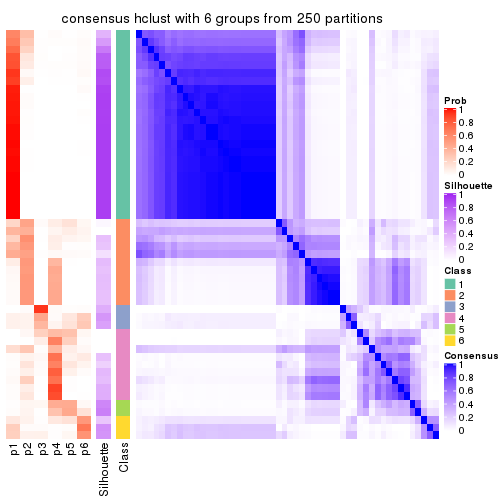
Heatmaps for the membership of samples in all partitions to see how consistent they are:
membership_heatmap(res, k = 2)
membership_heatmap(res, k = 3)
membership_heatmap(res, k = 4)

membership_heatmap(res, k = 5)
membership_heatmap(res, k = 6)
As soon as we have had the classes for columns, we can look for signatures which are significantly different between classes which can be candidate marks for certain classes. Following are the heatmaps for signatures.
Signature heatmaps where rows are scaled:
get_signatures(res, k = 2)
get_signatures(res, k = 3)
get_signatures(res, k = 4)
get_signatures(res, k = 5)
get_signatures(res, k = 6)
#> Error in mat[ceiling(1:nr/h_ratio), ceiling(1:nc/w_ratio), drop = FALSE]: subscript out of bounds
Signature heatmaps where rows are not scaled:
get_signatures(res, k = 2, scale_rows = FALSE)
get_signatures(res, k = 3, scale_rows = FALSE)
get_signatures(res, k = 4, scale_rows = FALSE)
get_signatures(res, k = 5, scale_rows = FALSE)
get_signatures(res, k = 6, scale_rows = FALSE)
#> Error in mat[ceiling(1:nr/h_ratio), ceiling(1:nc/w_ratio), drop = FALSE]: subscript out of bounds
Compare the overlap of signatures from different k:
compare_signatures(res)
get_signature() returns a data frame invisibly. TO get the list of signatures, the function
call should be assigned to a variable explicitly. In following code, if plot argument is set
to FALSE, no heatmap is plotted while only the differential analysis is performed.
# code only for demonstration
tb = get_signature(res, k = ..., plot = FALSE)
An example of the output of tb is:
#> which_row fdr mean_1 mean_2 scaled_mean_1 scaled_mean_2 km
#> 1 38 0.042760348 8.373488 9.131774 -0.5533452 0.5164555 1
#> 2 40 0.018707592 7.106213 8.469186 -0.6173731 0.5762149 1
#> 3 55 0.019134737 10.221463 11.207825 -0.6159697 0.5749050 1
#> 4 59 0.006059896 5.921854 7.869574 -0.6899429 0.6439467 1
#> 5 60 0.018055526 8.928898 10.211722 -0.6204761 0.5791110 1
#> 6 98 0.009384629 15.714769 14.887706 0.6635654 -0.6193277 2
...
The columns in tb are:
which_row: row indices corresponding to the input matrix.fdr: FDR for the differential test. mean_x: The mean value in group x.scaled_mean_x: The mean value in group x after rows are scaled.km: Row groups if k-means clustering is applied to rows.UMAP plot which shows how samples are separated.
dimension_reduction(res, k = 2, method = "UMAP")
dimension_reduction(res, k = 3, method = "UMAP")
dimension_reduction(res, k = 4, method = "UMAP")
dimension_reduction(res, k = 5, method = "UMAP")
dimension_reduction(res, k = 6, method = "UMAP")
Following heatmap shows how subgroups are split when increasing k:
collect_classes(res)
If matrix rows can be associated to genes, consider to use GO_Enrichment(res,
...) to perform function enrichment for the signature genes.
The object with results only for a single top-value method and a single partition method can be extracted as:
res = res_list["CV", "kmeans"]
# you can also extract it by
# res = res_list["CV:kmeans"]
A summary of res and all the functions that can be applied to it:
res
#> A 'ConsensusPartition' object with k = 2, 3, 4, 5, 6.
#> On a matrix with 4352 rows and 52 columns.
#> Top rows (435, 870, 1306, 1741, 2176) are extracted by 'CV' method.
#> Subgroups are detected by 'kmeans' method.
#> Performed in total 1250 partitions by row resampling.
#> Best k for subgroups seems to be 2.
#>
#> Following methods can be applied to this 'ConsensusPartition' object:
#> [1] "cola_report" "collect_classes" "collect_plots"
#> [4] "collect_stats" "colnames" "compare_signatures"
#> [7] "consensus_heatmap" "dimension_reduction" "functional_enrichment"
#> [10] "get_anno_col" "get_anno" "get_classes"
#> [13] "get_consensus" "get_matrix" "get_membership"
#> [16] "get_param" "get_signatures" "get_stats"
#> [19] "is_best_k" "is_stable_k" "membership_heatmap"
#> [22] "ncol" "nrow" "plot_ecdf"
#> [25] "rownames" "select_partition_number" "show"
#> [28] "suggest_best_k" "test_to_known_factors"
collect_plots() function collects all the plots made from res for all k (number of partitions)
into one single page to provide an easy and fast comparison between different k.
collect_plots(res)
The plots are:
k and the heatmap of
predicted classes for each k.k.k.k.All the plots in panels can be made by individual functions and they are plotted later in this section.
select_partition_number() produces several plots showing different
statistics for choosing “optimized” k. There are following statistics:
k;k, the area increased is defined as \(A_k - A_{k-1}\).The detailed explanations of these statistics can be found in the cola vignette.
Generally speaking, lower PAC score, higher mean silhouette score or higher
concordance corresponds to better partition. Rand index and Jaccard index
measure how similar the current partition is compared to partition with k-1.
If they are too similar, we won't accept k is better than k-1.
select_partition_number(res)
The numeric values for all these statistics can be obtained by get_stats().
get_stats(res)
#> k 1-PAC mean_silhouette concordance area_increased Rand Jaccard
#> 2 2 0.919 0.937 0.972 0.5079 0.491 0.491
#> 3 3 0.636 0.692 0.862 0.2969 0.811 0.630
#> 4 4 0.730 0.695 0.835 0.1076 0.867 0.638
#> 5 5 0.762 0.718 0.843 0.0546 0.905 0.668
#> 6 6 0.820 0.697 0.830 0.0268 0.977 0.894
suggest_best_k() suggests the best \(k\) based on these statistics. The rules are as follows:
NA.suggest_best_k(res)
#> [1] 2
Following shows the table of the partitions (You need to click the show/hide
code output link to see it). The membership matrix (columns with name p*)
is inferred by
clue::cl_consensus()
function with the SE method. Basically the value in the membership matrix
represents the probability to belong to a certain group. The finall class
label for an item is determined with the group with highest probability it
belongs to.
In get_classes() function, the entropy is calculated from the membership
matrix and the silhouette score is calculated from the consensus matrix.
cbind(get_classes(res, k = 2), get_membership(res, k = 2))
#> class entropy silhouette p1 p2
#> SRR2042654 1 0.0000 0.984 1.000 0.000
#> SRR2042653 1 0.0000 0.984 1.000 0.000
#> SRR2042652 1 0.0000 0.984 1.000 0.000
#> SRR2042650 1 0.0000 0.984 1.000 0.000
#> SRR2042649 2 0.0000 0.957 0.000 1.000
#> SRR2042647 1 0.1184 0.971 0.984 0.016
#> SRR2042648 2 0.0000 0.957 0.000 1.000
#> SRR2042646 2 0.0000 0.957 0.000 1.000
#> SRR2042645 1 0.0000 0.984 1.000 0.000
#> SRR2042644 2 0.0000 0.957 0.000 1.000
#> SRR2042643 1 0.0000 0.984 1.000 0.000
#> SRR2042642 2 0.0000 0.957 0.000 1.000
#> SRR2042640 2 0.2236 0.934 0.036 0.964
#> SRR2042641 2 0.1414 0.946 0.020 0.980
#> SRR2042639 2 0.0000 0.957 0.000 1.000
#> SRR2042638 2 0.0000 0.957 0.000 1.000
#> SRR2042637 2 0.0000 0.957 0.000 1.000
#> SRR2042636 1 0.0000 0.984 1.000 0.000
#> SRR2042634 1 0.0000 0.984 1.000 0.000
#> SRR2042635 2 0.0000 0.957 0.000 1.000
#> SRR2042633 2 0.1414 0.946 0.020 0.980
#> SRR2042631 1 0.0000 0.984 1.000 0.000
#> SRR2042632 2 0.0000 0.957 0.000 1.000
#> SRR2042630 2 0.0000 0.957 0.000 1.000
#> SRR2042629 1 0.5629 0.846 0.868 0.132
#> SRR2042628 1 0.1633 0.964 0.976 0.024
#> SRR2042626 2 0.0376 0.955 0.004 0.996
#> SRR2042627 1 0.0000 0.984 1.000 0.000
#> SRR2042624 2 0.0938 0.951 0.012 0.988
#> SRR2042625 1 0.0000 0.984 1.000 0.000
#> SRR2042623 1 0.0000 0.984 1.000 0.000
#> SRR2042622 1 0.0000 0.984 1.000 0.000
#> SRR2042620 2 0.8555 0.632 0.280 0.720
#> SRR2042621 2 0.0000 0.957 0.000 1.000
#> SRR2042619 1 0.0000 0.984 1.000 0.000
#> SRR2042618 2 0.0000 0.957 0.000 1.000
#> SRR2042617 1 0.0000 0.984 1.000 0.000
#> SRR2042616 2 0.0000 0.957 0.000 1.000
#> SRR2042615 2 0.0000 0.957 0.000 1.000
#> SRR2042614 2 0.0000 0.957 0.000 1.000
#> SRR2042613 2 0.0000 0.957 0.000 1.000
#> SRR2042612 1 0.0000 0.984 1.000 0.000
#> SRR2042610 1 0.0000 0.984 1.000 0.000
#> SRR2042611 2 0.0000 0.957 0.000 1.000
#> SRR2042607 2 0.9850 0.291 0.428 0.572
#> SRR2042609 1 0.0000 0.984 1.000 0.000
#> SRR2042608 2 0.7883 0.705 0.236 0.764
#> SRR2042656 2 0.3274 0.914 0.060 0.940
#> SRR2042658 1 0.6973 0.766 0.812 0.188
#> SRR2042659 1 0.0000 0.984 1.000 0.000
#> SRR2042657 1 0.0000 0.984 1.000 0.000
#> SRR2042655 1 0.0000 0.984 1.000 0.000
cbind(get_classes(res, k = 3), get_membership(res, k = 3))
#> class entropy silhouette p1 p2 p3
#> SRR2042654 1 0.0000 0.9382 1.000 0.000 0.000
#> SRR2042653 1 0.0000 0.9382 1.000 0.000 0.000
#> SRR2042652 1 0.0000 0.9382 1.000 0.000 0.000
#> SRR2042650 1 0.0000 0.9382 1.000 0.000 0.000
#> SRR2042649 3 0.5254 0.6683 0.000 0.264 0.736
#> SRR2042647 1 0.7807 0.6110 0.656 0.108 0.236
#> SRR2042648 2 0.0424 0.7291 0.000 0.992 0.008
#> SRR2042646 3 0.4504 0.7106 0.000 0.196 0.804
#> SRR2042645 1 0.1289 0.9216 0.968 0.000 0.032
#> SRR2042644 2 0.6280 -0.2255 0.000 0.540 0.460
#> SRR2042643 1 0.0000 0.9382 1.000 0.000 0.000
#> SRR2042642 2 0.0000 0.7272 0.000 1.000 0.000
#> SRR2042640 2 0.6217 0.5246 0.024 0.712 0.264
#> SRR2042641 3 0.6345 0.2652 0.004 0.400 0.596
#> SRR2042639 3 0.6291 0.0132 0.000 0.468 0.532
#> SRR2042638 2 0.0424 0.7291 0.000 0.992 0.008
#> SRR2042637 3 0.5397 0.6583 0.000 0.280 0.720
#> SRR2042636 1 0.3482 0.8559 0.872 0.000 0.128
#> SRR2042634 1 0.0237 0.9364 0.996 0.000 0.004
#> SRR2042635 2 0.0424 0.7291 0.000 0.992 0.008
#> SRR2042633 3 0.2866 0.7213 0.008 0.076 0.916
#> SRR2042631 1 0.5406 0.7492 0.764 0.012 0.224
#> SRR2042632 3 0.5327 0.6582 0.000 0.272 0.728
#> SRR2042630 3 0.6307 0.2604 0.000 0.488 0.512
#> SRR2042629 1 0.9016 0.4309 0.556 0.192 0.252
#> SRR2042628 3 0.3340 0.6262 0.120 0.000 0.880
#> SRR2042626 2 0.1753 0.7103 0.000 0.952 0.048
#> SRR2042627 1 0.0747 0.9298 0.984 0.000 0.016
#> SRR2042624 3 0.1753 0.7175 0.000 0.048 0.952
#> SRR2042625 1 0.0000 0.9382 1.000 0.000 0.000
#> SRR2042623 1 0.0000 0.9382 1.000 0.000 0.000
#> SRR2042622 1 0.0000 0.9382 1.000 0.000 0.000
#> SRR2042620 2 0.7530 0.4835 0.084 0.664 0.252
#> SRR2042621 3 0.2261 0.7228 0.000 0.068 0.932
#> SRR2042619 1 0.4399 0.7915 0.812 0.000 0.188
#> SRR2042618 2 0.0892 0.7232 0.000 0.980 0.020
#> SRR2042617 1 0.0000 0.9382 1.000 0.000 0.000
#> SRR2042616 2 0.4750 0.4814 0.000 0.784 0.216
#> SRR2042615 2 0.6252 -0.1636 0.000 0.556 0.444
#> SRR2042614 2 0.0892 0.7248 0.000 0.980 0.020
#> SRR2042613 3 0.5291 0.6630 0.000 0.268 0.732
#> SRR2042612 1 0.0000 0.9382 1.000 0.000 0.000
#> SRR2042610 1 0.0000 0.9382 1.000 0.000 0.000
#> SRR2042611 2 0.0424 0.7291 0.000 0.992 0.008
#> SRR2042607 2 0.9813 0.2045 0.316 0.424 0.260
#> SRR2042609 1 0.0000 0.9382 1.000 0.000 0.000
#> SRR2042608 3 0.3461 0.6547 0.024 0.076 0.900
#> SRR2042656 2 0.6067 0.5611 0.028 0.736 0.236
#> SRR2042658 3 0.1753 0.6856 0.048 0.000 0.952
#> SRR2042659 1 0.0000 0.9382 1.000 0.000 0.000
#> SRR2042657 1 0.0000 0.9382 1.000 0.000 0.000
#> SRR2042655 1 0.0000 0.9382 1.000 0.000 0.000
cbind(get_classes(res, k = 4), get_membership(res, k = 4))
#> class entropy silhouette p1 p2 p3 p4
#> SRR2042654 1 0.0000 0.93244 1.000 0.000 0.000 0.000
#> SRR2042653 1 0.0000 0.93244 1.000 0.000 0.000 0.000
#> SRR2042652 1 0.0000 0.93244 1.000 0.000 0.000 0.000
#> SRR2042650 1 0.0000 0.93244 1.000 0.000 0.000 0.000
#> SRR2042649 3 0.5321 0.75525 0.000 0.056 0.716 0.228
#> SRR2042647 4 0.5775 0.60777 0.288 0.048 0.004 0.660
#> SRR2042648 2 0.0336 0.77119 0.000 0.992 0.000 0.008
#> SRR2042646 3 0.3907 0.77580 0.000 0.044 0.836 0.120
#> SRR2042645 1 0.1867 0.86701 0.928 0.000 0.000 0.072
#> SRR2042644 2 0.6925 0.34328 0.000 0.544 0.328 0.128
#> SRR2042643 1 0.0000 0.93244 1.000 0.000 0.000 0.000
#> SRR2042642 2 0.0336 0.77119 0.000 0.992 0.000 0.008
#> SRR2042640 4 0.4923 0.57584 0.004 0.304 0.008 0.684
#> SRR2042641 4 0.4786 0.44933 0.000 0.108 0.104 0.788
#> SRR2042639 2 0.7852 0.15751 0.000 0.392 0.276 0.332
#> SRR2042638 2 0.0000 0.77130 0.000 1.000 0.000 0.000
#> SRR2042637 3 0.5669 0.75597 0.000 0.092 0.708 0.200
#> SRR2042636 1 0.5158 -0.06353 0.524 0.000 0.004 0.472
#> SRR2042634 1 0.0336 0.92734 0.992 0.000 0.000 0.008
#> SRR2042635 2 0.0336 0.77119 0.000 0.992 0.000 0.008
#> SRR2042633 3 0.2999 0.77244 0.000 0.004 0.864 0.132
#> SRR2042631 4 0.5110 0.44759 0.372 0.004 0.004 0.620
#> SRR2042632 3 0.4957 0.74902 0.000 0.048 0.748 0.204
#> SRR2042630 3 0.7770 0.00503 0.000 0.364 0.396 0.240
#> SRR2042629 4 0.6638 0.66947 0.224 0.100 0.020 0.656
#> SRR2042628 3 0.4428 0.70993 0.068 0.000 0.808 0.124
#> SRR2042626 2 0.2149 0.70587 0.000 0.912 0.000 0.088
#> SRR2042627 1 0.1302 0.89393 0.956 0.000 0.000 0.044
#> SRR2042624 3 0.1716 0.78353 0.000 0.000 0.936 0.064
#> SRR2042625 1 0.0000 0.93244 1.000 0.000 0.000 0.000
#> SRR2042623 1 0.0000 0.93244 1.000 0.000 0.000 0.000
#> SRR2042622 1 0.0000 0.93244 1.000 0.000 0.000 0.000
#> SRR2042620 4 0.5222 0.60823 0.032 0.280 0.000 0.688
#> SRR2042621 3 0.1474 0.78637 0.000 0.000 0.948 0.052
#> SRR2042619 1 0.5119 0.03657 0.556 0.000 0.004 0.440
#> SRR2042618 2 0.1209 0.76099 0.000 0.964 0.004 0.032
#> SRR2042617 1 0.0000 0.93244 1.000 0.000 0.000 0.000
#> SRR2042616 2 0.6423 0.51024 0.000 0.648 0.196 0.156
#> SRR2042615 2 0.7660 0.04456 0.000 0.428 0.356 0.216
#> SRR2042614 2 0.0657 0.77030 0.000 0.984 0.004 0.012
#> SRR2042613 3 0.5218 0.74313 0.000 0.064 0.736 0.200
#> SRR2042612 1 0.0000 0.93244 1.000 0.000 0.000 0.000
#> SRR2042610 1 0.0000 0.93244 1.000 0.000 0.000 0.000
#> SRR2042611 2 0.0336 0.77119 0.000 0.992 0.000 0.008
#> SRR2042607 4 0.6394 0.67533 0.156 0.160 0.008 0.676
#> SRR2042609 1 0.0000 0.93244 1.000 0.000 0.000 0.000
#> SRR2042608 4 0.3564 0.47497 0.012 0.016 0.112 0.860
#> SRR2042656 4 0.6058 0.23695 0.008 0.448 0.028 0.516
#> SRR2042658 3 0.3196 0.76418 0.008 0.000 0.856 0.136
#> SRR2042659 1 0.0000 0.93244 1.000 0.000 0.000 0.000
#> SRR2042657 1 0.0707 0.91825 0.980 0.000 0.000 0.020
#> SRR2042655 1 0.0000 0.93244 1.000 0.000 0.000 0.000
cbind(get_classes(res, k = 5), get_membership(res, k = 5))
#> class entropy silhouette p1 p2 p3 p4 p5
#> SRR2042654 1 0.0000 0.983 1.000 0.000 0.000 0.000 0.000
#> SRR2042653 1 0.0162 0.982 0.996 0.000 0.004 0.000 0.000
#> SRR2042652 1 0.0000 0.983 1.000 0.000 0.000 0.000 0.000
#> SRR2042650 1 0.0162 0.982 0.996 0.000 0.004 0.000 0.000
#> SRR2042649 5 0.3996 0.493 0.000 0.008 0.228 0.012 0.752
#> SRR2042647 4 0.3386 0.688 0.128 0.040 0.000 0.832 0.000
#> SRR2042648 2 0.0324 0.890 0.000 0.992 0.000 0.004 0.004
#> SRR2042646 3 0.5475 0.432 0.000 0.012 0.564 0.044 0.380
#> SRR2042645 1 0.2124 0.888 0.900 0.000 0.004 0.096 0.000
#> SRR2042644 2 0.7146 -0.175 0.000 0.440 0.140 0.048 0.372
#> SRR2042643 1 0.0000 0.983 1.000 0.000 0.000 0.000 0.000
#> SRR2042642 2 0.0162 0.890 0.000 0.996 0.000 0.004 0.000
#> SRR2042640 4 0.3210 0.634 0.008 0.152 0.000 0.832 0.008
#> SRR2042641 4 0.5945 0.101 0.000 0.016 0.068 0.516 0.400
#> SRR2042639 5 0.8555 0.130 0.000 0.248 0.196 0.272 0.284
#> SRR2042638 2 0.0290 0.888 0.000 0.992 0.000 0.000 0.008
#> SRR2042637 5 0.5649 0.266 0.000 0.024 0.372 0.040 0.564
#> SRR2042636 4 0.4735 0.517 0.352 0.000 0.020 0.624 0.004
#> SRR2042634 1 0.0703 0.965 0.976 0.000 0.000 0.024 0.000
#> SRR2042635 2 0.0000 0.891 0.000 1.000 0.000 0.000 0.000
#> SRR2042633 3 0.3248 0.746 0.004 0.000 0.856 0.052 0.088
#> SRR2042631 4 0.3618 0.660 0.196 0.012 0.004 0.788 0.000
#> SRR2042632 5 0.2984 0.541 0.000 0.004 0.124 0.016 0.856
#> SRR2042630 5 0.4321 0.571 0.000 0.084 0.056 0.052 0.808
#> SRR2042629 4 0.3866 0.687 0.096 0.076 0.008 0.820 0.000
#> SRR2042628 3 0.2507 0.754 0.028 0.000 0.908 0.044 0.020
#> SRR2042626 2 0.1731 0.843 0.000 0.932 0.004 0.060 0.004
#> SRR2042627 1 0.1270 0.935 0.948 0.000 0.000 0.052 0.000
#> SRR2042624 3 0.4298 0.726 0.000 0.000 0.756 0.060 0.184
#> SRR2042625 1 0.0000 0.983 1.000 0.000 0.000 0.000 0.000
#> SRR2042623 1 0.0000 0.983 1.000 0.000 0.000 0.000 0.000
#> SRR2042622 1 0.0000 0.983 1.000 0.000 0.000 0.000 0.000
#> SRR2042620 4 0.3713 0.656 0.032 0.132 0.004 0.824 0.008
#> SRR2042621 3 0.3495 0.756 0.000 0.000 0.816 0.032 0.152
#> SRR2042619 4 0.4684 0.314 0.452 0.004 0.008 0.536 0.000
#> SRR2042618 2 0.1341 0.855 0.000 0.944 0.000 0.000 0.056
#> SRR2042617 1 0.0162 0.982 0.996 0.000 0.004 0.000 0.000
#> SRR2042616 5 0.5128 0.225 0.000 0.420 0.012 0.020 0.548
#> SRR2042615 5 0.4763 0.566 0.000 0.192 0.044 0.024 0.740
#> SRR2042614 2 0.1285 0.871 0.000 0.956 0.004 0.004 0.036
#> SRR2042613 5 0.4046 0.504 0.000 0.008 0.180 0.032 0.780
#> SRR2042612 1 0.0000 0.983 1.000 0.000 0.000 0.000 0.000
#> SRR2042610 1 0.0000 0.983 1.000 0.000 0.000 0.000 0.000
#> SRR2042611 2 0.0162 0.890 0.000 0.996 0.000 0.004 0.000
#> SRR2042607 4 0.3821 0.688 0.104 0.064 0.004 0.824 0.004
#> SRR2042609 1 0.0000 0.983 1.000 0.000 0.000 0.000 0.000
#> SRR2042608 4 0.5412 0.359 0.004 0.000 0.088 0.644 0.264
#> SRR2042656 4 0.7103 0.265 0.008 0.340 0.040 0.488 0.124
#> SRR2042658 3 0.2875 0.754 0.008 0.000 0.884 0.052 0.056
#> SRR2042659 1 0.0000 0.983 1.000 0.000 0.000 0.000 0.000
#> SRR2042657 1 0.1410 0.928 0.940 0.000 0.000 0.060 0.000
#> SRR2042655 1 0.0162 0.982 0.996 0.000 0.004 0.000 0.000
cbind(get_classes(res, k = 6), get_membership(res, k = 6))
#> class entropy silhouette p1 p2 p3 p4 p5 p6
#> SRR2042654 1 0.0000 0.982 1.000 0.000 0.000 0.000 0.000 0.000
#> SRR2042653 1 0.0000 0.982 1.000 0.000 0.000 0.000 0.000 0.000
#> SRR2042652 1 0.0000 0.982 1.000 0.000 0.000 0.000 0.000 0.000
#> SRR2042650 1 0.0000 0.982 1.000 0.000 0.000 0.000 0.000 0.000
#> SRR2042649 5 0.4413 0.557 0.000 0.004 0.088 0.008 0.740 0.160
#> SRR2042647 4 0.2253 0.635 0.084 0.004 0.000 0.896 0.004 0.012
#> SRR2042648 2 0.0291 0.886 0.000 0.992 0.000 0.004 0.004 0.000
#> SRR2042646 3 0.5846 0.343 0.000 0.000 0.540 0.020 0.300 0.140
#> SRR2042645 1 0.2320 0.879 0.892 0.000 0.000 0.080 0.004 0.024
#> SRR2042644 2 0.7578 -0.228 0.000 0.356 0.188 0.024 0.340 0.092
#> SRR2042643 1 0.0000 0.982 1.000 0.000 0.000 0.000 0.000 0.000
#> SRR2042642 2 0.0000 0.888 0.000 1.000 0.000 0.000 0.000 0.000
#> SRR2042640 4 0.2316 0.548 0.004 0.064 0.000 0.900 0.004 0.028
#> SRR2042641 6 0.5005 0.813 0.000 0.000 0.000 0.248 0.124 0.628
#> SRR2042639 3 0.8811 -0.139 0.000 0.168 0.276 0.132 0.196 0.228
#> SRR2042638 2 0.0000 0.888 0.000 1.000 0.000 0.000 0.000 0.000
#> SRR2042637 5 0.6620 0.350 0.000 0.032 0.212 0.028 0.540 0.188
#> SRR2042636 4 0.3827 0.495 0.256 0.000 0.000 0.720 0.004 0.020
#> SRR2042634 1 0.0777 0.960 0.972 0.000 0.000 0.024 0.004 0.000
#> SRR2042635 2 0.0000 0.888 0.000 1.000 0.000 0.000 0.000 0.000
#> SRR2042633 3 0.4932 0.554 0.000 0.000 0.704 0.040 0.080 0.176
#> SRR2042631 4 0.3090 0.614 0.140 0.000 0.000 0.828 0.004 0.028
#> SRR2042632 5 0.1528 0.614 0.000 0.000 0.048 0.000 0.936 0.016
#> SRR2042630 5 0.4525 0.512 0.000 0.032 0.032 0.000 0.700 0.236
#> SRR2042629 4 0.3152 0.628 0.072 0.032 0.008 0.864 0.004 0.020
#> SRR2042628 3 0.4684 0.572 0.016 0.000 0.696 0.028 0.020 0.240
#> SRR2042626 2 0.1958 0.808 0.000 0.896 0.000 0.100 0.004 0.000
#> SRR2042627 1 0.1124 0.944 0.956 0.000 0.000 0.036 0.000 0.008
#> SRR2042624 3 0.3890 0.567 0.000 0.000 0.796 0.024 0.116 0.064
#> SRR2042625 1 0.0000 0.982 1.000 0.000 0.000 0.000 0.000 0.000
#> SRR2042623 1 0.0000 0.982 1.000 0.000 0.000 0.000 0.000 0.000
#> SRR2042622 1 0.0000 0.982 1.000 0.000 0.000 0.000 0.000 0.000
#> SRR2042620 4 0.2490 0.548 0.012 0.044 0.000 0.892 0.000 0.052
#> SRR2042621 3 0.2791 0.591 0.000 0.000 0.864 0.008 0.096 0.032
#> SRR2042619 4 0.4147 0.337 0.436 0.000 0.000 0.552 0.000 0.012
#> SRR2042618 2 0.0653 0.881 0.000 0.980 0.004 0.004 0.012 0.000
#> SRR2042617 1 0.0000 0.982 1.000 0.000 0.000 0.000 0.000 0.000
#> SRR2042616 5 0.5343 0.281 0.000 0.380 0.016 0.008 0.544 0.052
#> SRR2042615 5 0.4514 0.581 0.000 0.124 0.024 0.000 0.744 0.108
#> SRR2042614 2 0.1726 0.849 0.000 0.932 0.000 0.012 0.044 0.012
#> SRR2042613 5 0.4277 0.555 0.000 0.004 0.112 0.012 0.764 0.108
#> SRR2042612 1 0.0146 0.979 0.996 0.000 0.000 0.000 0.000 0.004
#> SRR2042610 1 0.0000 0.982 1.000 0.000 0.000 0.000 0.000 0.000
#> SRR2042611 2 0.0000 0.888 0.000 1.000 0.000 0.000 0.000 0.000
#> SRR2042607 4 0.2395 0.626 0.072 0.012 0.000 0.896 0.004 0.016
#> SRR2042609 1 0.0000 0.982 1.000 0.000 0.000 0.000 0.000 0.000
#> SRR2042608 6 0.5134 0.811 0.000 0.000 0.016 0.292 0.076 0.616
#> SRR2042656 4 0.6907 -0.445 0.004 0.248 0.008 0.396 0.028 0.316
#> SRR2042658 3 0.4727 0.553 0.004 0.000 0.664 0.012 0.048 0.272
#> SRR2042659 1 0.0000 0.982 1.000 0.000 0.000 0.000 0.000 0.000
#> SRR2042657 1 0.1806 0.889 0.908 0.000 0.000 0.088 0.004 0.000
#> SRR2042655 1 0.0000 0.982 1.000 0.000 0.000 0.000 0.000 0.000
Heatmaps for the consensus matrix. It visualizes the probability of two samples to be in a same group.
consensus_heatmap(res, k = 2)
consensus_heatmap(res, k = 3)

consensus_heatmap(res, k = 4)
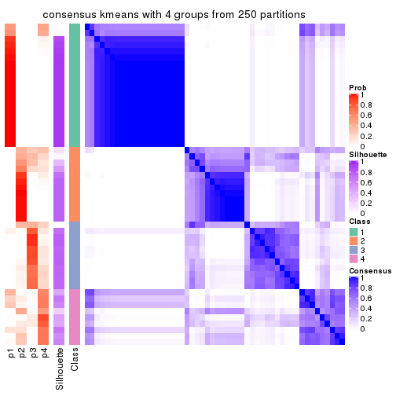
consensus_heatmap(res, k = 5)
consensus_heatmap(res, k = 6)
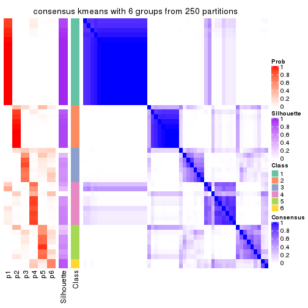
Heatmaps for the membership of samples in all partitions to see how consistent they are:
membership_heatmap(res, k = 2)
membership_heatmap(res, k = 3)
membership_heatmap(res, k = 4)
membership_heatmap(res, k = 5)
membership_heatmap(res, k = 6)
As soon as we have had the classes for columns, we can look for signatures which are significantly different between classes which can be candidate marks for certain classes. Following are the heatmaps for signatures.
Signature heatmaps where rows are scaled:
get_signatures(res, k = 2)
get_signatures(res, k = 3)
get_signatures(res, k = 4)
get_signatures(res, k = 5)
get_signatures(res, k = 6)

Signature heatmaps where rows are not scaled:
get_signatures(res, k = 2, scale_rows = FALSE)

get_signatures(res, k = 3, scale_rows = FALSE)
get_signatures(res, k = 4, scale_rows = FALSE)

get_signatures(res, k = 5, scale_rows = FALSE)
get_signatures(res, k = 6, scale_rows = FALSE)
Compare the overlap of signatures from different k:
compare_signatures(res)
get_signature() returns a data frame invisibly. TO get the list of signatures, the function
call should be assigned to a variable explicitly. In following code, if plot argument is set
to FALSE, no heatmap is plotted while only the differential analysis is performed.
# code only for demonstration
tb = get_signature(res, k = ..., plot = FALSE)
An example of the output of tb is:
#> which_row fdr mean_1 mean_2 scaled_mean_1 scaled_mean_2 km
#> 1 38 0.042760348 8.373488 9.131774 -0.5533452 0.5164555 1
#> 2 40 0.018707592 7.106213 8.469186 -0.6173731 0.5762149 1
#> 3 55 0.019134737 10.221463 11.207825 -0.6159697 0.5749050 1
#> 4 59 0.006059896 5.921854 7.869574 -0.6899429 0.6439467 1
#> 5 60 0.018055526 8.928898 10.211722 -0.6204761 0.5791110 1
#> 6 98 0.009384629 15.714769 14.887706 0.6635654 -0.6193277 2
...
The columns in tb are:
which_row: row indices corresponding to the input matrix.fdr: FDR for the differential test. mean_x: The mean value in group x.scaled_mean_x: The mean value in group x after rows are scaled.km: Row groups if k-means clustering is applied to rows.UMAP plot which shows how samples are separated.
dimension_reduction(res, k = 2, method = "UMAP")
dimension_reduction(res, k = 3, method = "UMAP")
dimension_reduction(res, k = 4, method = "UMAP")
dimension_reduction(res, k = 5, method = "UMAP")
dimension_reduction(res, k = 6, method = "UMAP")
Following heatmap shows how subgroups are split when increasing k:
collect_classes(res)
If matrix rows can be associated to genes, consider to use GO_Enrichment(res,
...) to perform function enrichment for the signature genes.
The object with results only for a single top-value method and a single partition method can be extracted as:
res = res_list["CV", "skmeans"]
# you can also extract it by
# res = res_list["CV:skmeans"]
A summary of res and all the functions that can be applied to it:
res
#> A 'ConsensusPartition' object with k = 2, 3, 4, 5, 6.
#> On a matrix with 4352 rows and 52 columns.
#> Top rows (435, 870, 1306, 1741, 2176) are extracted by 'CV' method.
#> Subgroups are detected by 'skmeans' method.
#> Performed in total 1250 partitions by row resampling.
#> Best k for subgroups seems to be 2.
#>
#> Following methods can be applied to this 'ConsensusPartition' object:
#> [1] "cola_report" "collect_classes" "collect_plots"
#> [4] "collect_stats" "colnames" "compare_signatures"
#> [7] "consensus_heatmap" "dimension_reduction" "functional_enrichment"
#> [10] "get_anno_col" "get_anno" "get_classes"
#> [13] "get_consensus" "get_matrix" "get_membership"
#> [16] "get_param" "get_signatures" "get_stats"
#> [19] "is_best_k" "is_stable_k" "membership_heatmap"
#> [22] "ncol" "nrow" "plot_ecdf"
#> [25] "rownames" "select_partition_number" "show"
#> [28] "suggest_best_k" "test_to_known_factors"
collect_plots() function collects all the plots made from res for all k (number of partitions)
into one single page to provide an easy and fast comparison between different k.
collect_plots(res)
The plots are:
k and the heatmap of
predicted classes for each k.k.k.k.All the plots in panels can be made by individual functions and they are plotted later in this section.
select_partition_number() produces several plots showing different
statistics for choosing “optimized” k. There are following statistics:
k;k, the area increased is defined as \(A_k - A_{k-1}\).The detailed explanations of these statistics can be found in the cola vignette.
Generally speaking, lower PAC score, higher mean silhouette score or higher
concordance corresponds to better partition. Rand index and Jaccard index
measure how similar the current partition is compared to partition with k-1.
If they are too similar, we won't accept k is better than k-1.
select_partition_number(res)
The numeric values for all these statistics can be obtained by get_stats().
get_stats(res)
#> k 1-PAC mean_silhouette concordance area_increased Rand Jaccard
#> 2 2 0.957 0.955 0.980 0.5096 0.491 0.491
#> 3 3 0.591 0.682 0.840 0.2849 0.784 0.584
#> 4 4 0.529 0.553 0.756 0.1036 0.879 0.673
#> 5 5 0.526 0.470 0.692 0.0588 0.965 0.883
#> 6 6 0.536 0.422 0.633 0.0421 0.943 0.799
suggest_best_k() suggests the best \(k\) based on these statistics. The rules are as follows:
NA.suggest_best_k(res)
#> [1] 2
Following shows the table of the partitions (You need to click the show/hide
code output link to see it). The membership matrix (columns with name p*)
is inferred by
clue::cl_consensus()
function with the SE method. Basically the value in the membership matrix
represents the probability to belong to a certain group. The finall class
label for an item is determined with the group with highest probability it
belongs to.
In get_classes() function, the entropy is calculated from the membership
matrix and the silhouette score is calculated from the consensus matrix.
cbind(get_classes(res, k = 2), get_membership(res, k = 2))
#> class entropy silhouette p1 p2
#> SRR2042654 1 0.0000 0.991 1.000 0.000
#> SRR2042653 1 0.0000 0.991 1.000 0.000
#> SRR2042652 1 0.0000 0.991 1.000 0.000
#> SRR2042650 1 0.0000 0.991 1.000 0.000
#> SRR2042649 2 0.0000 0.967 0.000 1.000
#> SRR2042647 1 0.0376 0.988 0.996 0.004
#> SRR2042648 2 0.0000 0.967 0.000 1.000
#> SRR2042646 2 0.0000 0.967 0.000 1.000
#> SRR2042645 1 0.0000 0.991 1.000 0.000
#> SRR2042644 2 0.0000 0.967 0.000 1.000
#> SRR2042643 1 0.0000 0.991 1.000 0.000
#> SRR2042642 2 0.0000 0.967 0.000 1.000
#> SRR2042640 2 0.0938 0.959 0.012 0.988
#> SRR2042641 2 0.0000 0.967 0.000 1.000
#> SRR2042639 2 0.0000 0.967 0.000 1.000
#> SRR2042638 2 0.0000 0.967 0.000 1.000
#> SRR2042637 2 0.0000 0.967 0.000 1.000
#> SRR2042636 1 0.0000 0.991 1.000 0.000
#> SRR2042634 1 0.0000 0.991 1.000 0.000
#> SRR2042635 2 0.0000 0.967 0.000 1.000
#> SRR2042633 2 0.2778 0.932 0.048 0.952
#> SRR2042631 1 0.0000 0.991 1.000 0.000
#> SRR2042632 2 0.0000 0.967 0.000 1.000
#> SRR2042630 2 0.0000 0.967 0.000 1.000
#> SRR2042629 1 0.5842 0.835 0.860 0.140
#> SRR2042628 1 0.0938 0.981 0.988 0.012
#> SRR2042626 2 0.0000 0.967 0.000 1.000
#> SRR2042627 1 0.0000 0.991 1.000 0.000
#> SRR2042624 2 0.2778 0.931 0.048 0.952
#> SRR2042625 1 0.0000 0.991 1.000 0.000
#> SRR2042623 1 0.0000 0.991 1.000 0.000
#> SRR2042622 1 0.0000 0.991 1.000 0.000
#> SRR2042620 2 0.5842 0.838 0.140 0.860
#> SRR2042621 2 0.0000 0.967 0.000 1.000
#> SRR2042619 1 0.0000 0.991 1.000 0.000
#> SRR2042618 2 0.0000 0.967 0.000 1.000
#> SRR2042617 1 0.0000 0.991 1.000 0.000
#> SRR2042616 2 0.0000 0.967 0.000 1.000
#> SRR2042615 2 0.0000 0.967 0.000 1.000
#> SRR2042614 2 0.0000 0.967 0.000 1.000
#> SRR2042613 2 0.0000 0.967 0.000 1.000
#> SRR2042612 1 0.0000 0.991 1.000 0.000
#> SRR2042610 1 0.0000 0.991 1.000 0.000
#> SRR2042611 2 0.0000 0.967 0.000 1.000
#> SRR2042607 2 0.9635 0.396 0.388 0.612
#> SRR2042609 1 0.0000 0.991 1.000 0.000
#> SRR2042608 2 0.7376 0.748 0.208 0.792
#> SRR2042656 2 0.0376 0.965 0.004 0.996
#> SRR2042658 1 0.3274 0.934 0.940 0.060
#> SRR2042659 1 0.0000 0.991 1.000 0.000
#> SRR2042657 1 0.0000 0.991 1.000 0.000
#> SRR2042655 1 0.0000 0.991 1.000 0.000
cbind(get_classes(res, k = 3), get_membership(res, k = 3))
#> class entropy silhouette p1 p2 p3
#> SRR2042654 1 0.0000 0.94816 1.000 0.000 0.000
#> SRR2042653 1 0.0000 0.94816 1.000 0.000 0.000
#> SRR2042652 1 0.0000 0.94816 1.000 0.000 0.000
#> SRR2042650 1 0.0424 0.94589 0.992 0.008 0.000
#> SRR2042649 3 0.4346 0.68042 0.000 0.184 0.816
#> SRR2042647 1 0.8342 0.04361 0.464 0.456 0.080
#> SRR2042648 2 0.2796 0.70509 0.000 0.908 0.092
#> SRR2042646 3 0.4654 0.67238 0.000 0.208 0.792
#> SRR2042645 1 0.1337 0.93668 0.972 0.012 0.016
#> SRR2042644 3 0.6252 0.31332 0.000 0.444 0.556
#> SRR2042643 1 0.0000 0.94816 1.000 0.000 0.000
#> SRR2042642 2 0.2261 0.70782 0.000 0.932 0.068
#> SRR2042640 2 0.2945 0.65861 0.004 0.908 0.088
#> SRR2042641 2 0.6529 0.30975 0.012 0.620 0.368
#> SRR2042639 2 0.6280 0.05683 0.000 0.540 0.460
#> SRR2042638 2 0.2878 0.70184 0.000 0.904 0.096
#> SRR2042637 3 0.5363 0.62799 0.000 0.276 0.724
#> SRR2042636 1 0.2434 0.91378 0.940 0.024 0.036
#> SRR2042634 1 0.0475 0.94567 0.992 0.004 0.004
#> SRR2042635 2 0.2537 0.70777 0.000 0.920 0.080
#> SRR2042633 3 0.4782 0.65349 0.016 0.164 0.820
#> SRR2042631 1 0.6106 0.71818 0.756 0.200 0.044
#> SRR2042632 3 0.4974 0.65842 0.000 0.236 0.764
#> SRR2042630 3 0.6168 0.41171 0.000 0.412 0.588
#> SRR2042629 2 0.9338 0.15658 0.360 0.468 0.172
#> SRR2042628 3 0.6264 0.27229 0.380 0.004 0.616
#> SRR2042626 2 0.1964 0.70085 0.000 0.944 0.056
#> SRR2042627 1 0.1337 0.93710 0.972 0.016 0.012
#> SRR2042624 3 0.3207 0.64465 0.012 0.084 0.904
#> SRR2042625 1 0.0000 0.94816 1.000 0.000 0.000
#> SRR2042623 1 0.0000 0.94816 1.000 0.000 0.000
#> SRR2042622 1 0.0000 0.94816 1.000 0.000 0.000
#> SRR2042620 2 0.4544 0.60855 0.056 0.860 0.084
#> SRR2042621 3 0.2711 0.66986 0.000 0.088 0.912
#> SRR2042619 1 0.5212 0.80933 0.828 0.108 0.064
#> SRR2042618 2 0.4796 0.58518 0.000 0.780 0.220
#> SRR2042617 1 0.0000 0.94816 1.000 0.000 0.000
#> SRR2042616 2 0.6252 -0.00868 0.000 0.556 0.444
#> SRR2042615 3 0.6192 0.40048 0.000 0.420 0.580
#> SRR2042614 2 0.4654 0.60583 0.000 0.792 0.208
#> SRR2042613 3 0.5497 0.62139 0.000 0.292 0.708
#> SRR2042612 1 0.0592 0.94403 0.988 0.000 0.012
#> SRR2042610 1 0.0000 0.94816 1.000 0.000 0.000
#> SRR2042611 2 0.2448 0.70824 0.000 0.924 0.076
#> SRR2042607 2 0.7930 0.40632 0.168 0.664 0.168
#> SRR2042609 1 0.0000 0.94816 1.000 0.000 0.000
#> SRR2042608 3 0.7599 0.50361 0.084 0.260 0.656
#> SRR2042656 2 0.4353 0.65292 0.008 0.836 0.156
#> SRR2042658 3 0.4679 0.55189 0.148 0.020 0.832
#> SRR2042659 1 0.0000 0.94816 1.000 0.000 0.000
#> SRR2042657 1 0.0475 0.94597 0.992 0.004 0.004
#> SRR2042655 1 0.0475 0.94602 0.992 0.004 0.004
cbind(get_classes(res, k = 4), get_membership(res, k = 4))
#> class entropy silhouette p1 p2 p3 p4
#> SRR2042654 1 0.0188 0.9029 0.996 0.000 0.000 0.004
#> SRR2042653 1 0.0336 0.9036 0.992 0.000 0.000 0.008
#> SRR2042652 1 0.0336 0.9023 0.992 0.000 0.000 0.008
#> SRR2042650 1 0.1474 0.8981 0.948 0.000 0.000 0.052
#> SRR2042649 3 0.6242 0.4561 0.000 0.308 0.612 0.080
#> SRR2042647 4 0.7476 0.5319 0.208 0.160 0.032 0.600
#> SRR2042648 2 0.1610 0.6280 0.000 0.952 0.016 0.032
#> SRR2042646 3 0.6570 0.4692 0.000 0.280 0.604 0.116
#> SRR2042645 1 0.4553 0.7371 0.780 0.000 0.040 0.180
#> SRR2042644 2 0.6067 0.1647 0.000 0.572 0.376 0.052
#> SRR2042643 1 0.1637 0.8948 0.940 0.000 0.000 0.060
#> SRR2042642 2 0.1474 0.6261 0.000 0.948 0.000 0.052
#> SRR2042640 2 0.6975 0.2978 0.016 0.568 0.088 0.328
#> SRR2042641 2 0.7664 0.1547 0.000 0.460 0.248 0.292
#> SRR2042639 2 0.7626 0.0711 0.000 0.448 0.336 0.216
#> SRR2042638 2 0.0376 0.6262 0.000 0.992 0.004 0.004
#> SRR2042637 3 0.6603 0.4168 0.000 0.328 0.572 0.100
#> SRR2042636 1 0.5678 0.4339 0.640 0.000 0.044 0.316
#> SRR2042634 1 0.2473 0.8763 0.908 0.000 0.012 0.080
#> SRR2042635 2 0.0895 0.6274 0.000 0.976 0.004 0.020
#> SRR2042633 3 0.6517 0.5120 0.004 0.212 0.648 0.136
#> SRR2042631 4 0.6834 0.1836 0.440 0.060 0.016 0.484
#> SRR2042632 3 0.6054 0.3948 0.000 0.352 0.592 0.056
#> SRR2042630 2 0.6602 -0.0584 0.000 0.484 0.436 0.080
#> SRR2042629 4 0.8412 0.4683 0.136 0.228 0.096 0.540
#> SRR2042628 3 0.7486 0.0717 0.244 0.012 0.556 0.188
#> SRR2042626 2 0.4010 0.5730 0.000 0.816 0.028 0.156
#> SRR2042627 1 0.2888 0.8408 0.872 0.004 0.000 0.124
#> SRR2042624 3 0.5603 0.5348 0.012 0.088 0.744 0.156
#> SRR2042625 1 0.0592 0.9045 0.984 0.000 0.000 0.016
#> SRR2042623 1 0.0000 0.9025 1.000 0.000 0.000 0.000
#> SRR2042622 1 0.0469 0.9034 0.988 0.000 0.000 0.012
#> SRR2042620 2 0.6762 0.0675 0.028 0.504 0.040 0.428
#> SRR2042621 3 0.5277 0.5688 0.000 0.132 0.752 0.116
#> SRR2042619 1 0.6213 0.5306 0.688 0.028 0.060 0.224
#> SRR2042618 2 0.3497 0.5774 0.000 0.860 0.104 0.036
#> SRR2042617 1 0.0921 0.9036 0.972 0.000 0.000 0.028
#> SRR2042616 2 0.6133 0.3643 0.000 0.644 0.268 0.088
#> SRR2042615 2 0.6483 0.0831 0.000 0.532 0.392 0.076
#> SRR2042614 2 0.3948 0.6010 0.000 0.840 0.096 0.064
#> SRR2042613 3 0.6299 0.2458 0.000 0.420 0.520 0.060
#> SRR2042612 1 0.2443 0.8747 0.916 0.000 0.024 0.060
#> SRR2042610 1 0.0707 0.9043 0.980 0.000 0.000 0.020
#> SRR2042611 2 0.1118 0.6272 0.000 0.964 0.000 0.036
#> SRR2042607 4 0.8479 0.3982 0.140 0.272 0.080 0.508
#> SRR2042609 1 0.0188 0.9027 0.996 0.000 0.000 0.004
#> SRR2042608 4 0.8793 -0.1517 0.084 0.144 0.352 0.420
#> SRR2042656 2 0.7156 0.4219 0.008 0.576 0.148 0.268
#> SRR2042658 3 0.5942 0.3737 0.128 0.008 0.716 0.148
#> SRR2042659 1 0.1557 0.8976 0.944 0.000 0.000 0.056
#> SRR2042657 1 0.3196 0.8173 0.856 0.000 0.008 0.136
#> SRR2042655 1 0.1576 0.8961 0.948 0.000 0.004 0.048
cbind(get_classes(res, k = 5), get_membership(res, k = 5))
#> class entropy silhouette p1 p2 p3 p4 p5
#> SRR2042654 1 0.0451 0.85046 0.988 0.000 0.000 0.008 0.004
#> SRR2042653 1 0.0865 0.85329 0.972 0.000 0.000 0.024 0.004
#> SRR2042652 1 0.0324 0.84951 0.992 0.000 0.000 0.004 0.004
#> SRR2042650 1 0.2659 0.83927 0.888 0.000 0.000 0.060 0.052
#> SRR2042649 3 0.5971 0.24636 0.000 0.200 0.640 0.020 0.140
#> SRR2042647 4 0.7298 0.40854 0.112 0.136 0.020 0.596 0.136
#> SRR2042648 2 0.3362 0.60837 0.000 0.864 0.040 0.032 0.064
#> SRR2042646 3 0.6423 0.20649 0.000 0.240 0.596 0.036 0.128
#> SRR2042645 1 0.5616 0.63119 0.696 0.000 0.036 0.164 0.104
#> SRR2042644 2 0.6657 0.27294 0.000 0.548 0.280 0.032 0.140
#> SRR2042643 1 0.2171 0.84260 0.912 0.000 0.000 0.064 0.024
#> SRR2042642 2 0.2537 0.60252 0.000 0.904 0.016 0.056 0.024
#> SRR2042640 2 0.7232 0.25755 0.004 0.532 0.056 0.232 0.176
#> SRR2042641 5 0.8272 0.24264 0.000 0.276 0.200 0.152 0.372
#> SRR2042639 2 0.7917 0.08796 0.000 0.452 0.196 0.124 0.228
#> SRR2042638 2 0.1419 0.61436 0.000 0.956 0.016 0.012 0.016
#> SRR2042637 3 0.7217 0.20614 0.000 0.276 0.492 0.048 0.184
#> SRR2042636 1 0.6143 0.35251 0.584 0.000 0.012 0.272 0.132
#> SRR2042634 1 0.3906 0.76622 0.812 0.000 0.004 0.104 0.080
#> SRR2042635 2 0.1306 0.61476 0.000 0.960 0.016 0.008 0.016
#> SRR2042633 3 0.7764 0.14801 0.004 0.208 0.424 0.064 0.300
#> SRR2042631 4 0.7256 0.45037 0.252 0.064 0.024 0.560 0.100
#> SRR2042632 3 0.5683 0.25717 0.000 0.256 0.636 0.012 0.096
#> SRR2042630 3 0.7363 0.01465 0.000 0.352 0.396 0.036 0.216
#> SRR2042629 4 0.8138 0.43815 0.128 0.156 0.052 0.532 0.132
#> SRR2042628 3 0.8458 -0.03423 0.192 0.012 0.372 0.128 0.296
#> SRR2042626 2 0.4929 0.51505 0.004 0.740 0.020 0.180 0.056
#> SRR2042627 1 0.4487 0.73074 0.772 0.000 0.008 0.124 0.096
#> SRR2042624 3 0.7044 0.12338 0.004 0.076 0.572 0.128 0.220
#> SRR2042625 1 0.1399 0.85366 0.952 0.000 0.000 0.028 0.020
#> SRR2042623 1 0.0290 0.84897 0.992 0.000 0.000 0.008 0.000
#> SRR2042622 1 0.1300 0.85191 0.956 0.000 0.000 0.028 0.016
#> SRR2042620 2 0.7695 -0.07281 0.024 0.412 0.032 0.356 0.176
#> SRR2042621 3 0.6291 0.19778 0.000 0.080 0.632 0.072 0.216
#> SRR2042619 1 0.7779 -0.00618 0.472 0.032 0.032 0.220 0.244
#> SRR2042618 2 0.4212 0.55100 0.000 0.792 0.136 0.012 0.060
#> SRR2042617 1 0.1914 0.84979 0.932 0.000 0.004 0.032 0.032
#> SRR2042616 2 0.6370 0.27359 0.000 0.560 0.300 0.024 0.116
#> SRR2042615 2 0.6753 -0.01579 0.000 0.468 0.388 0.040 0.104
#> SRR2042614 2 0.4639 0.56475 0.000 0.784 0.080 0.040 0.096
#> SRR2042613 3 0.6796 0.20172 0.000 0.308 0.520 0.036 0.136
#> SRR2042612 1 0.3750 0.78627 0.824 0.000 0.004 0.084 0.088
#> SRR2042610 1 0.1117 0.85313 0.964 0.000 0.000 0.020 0.016
#> SRR2042611 2 0.1106 0.61255 0.000 0.964 0.000 0.024 0.012
#> SRR2042607 4 0.8333 0.32278 0.112 0.184 0.068 0.512 0.124
#> SRR2042609 1 0.0404 0.85056 0.988 0.000 0.000 0.012 0.000
#> SRR2042608 5 0.7883 0.25345 0.024 0.080 0.244 0.152 0.500
#> SRR2042656 2 0.7186 0.27706 0.000 0.548 0.104 0.228 0.120
#> SRR2042658 3 0.6602 0.03175 0.084 0.004 0.560 0.048 0.304
#> SRR2042659 1 0.2459 0.84103 0.904 0.000 0.004 0.052 0.040
#> SRR2042657 1 0.4459 0.68873 0.744 0.000 0.004 0.200 0.052
#> SRR2042655 1 0.2376 0.83607 0.904 0.000 0.000 0.052 0.044
cbind(get_classes(res, k = 6), get_membership(res, k = 6))
#> class entropy silhouette p1 p2 p3 p4 p5 p6
#> SRR2042654 1 0.0865 0.79808 0.964 0.000 0.000 0.000 0.000 0.036
#> SRR2042653 1 0.2008 0.80123 0.920 0.000 0.004 0.032 0.004 0.040
#> SRR2042652 1 0.0405 0.79635 0.988 0.000 0.000 0.004 0.000 0.008
#> SRR2042650 1 0.3104 0.78608 0.844 0.000 0.004 0.068 0.000 0.084
#> SRR2042649 5 0.6463 0.32299 0.000 0.208 0.200 0.020 0.544 0.028
#> SRR2042647 4 0.5903 0.27013 0.104 0.108 0.028 0.692 0.024 0.044
#> SRR2042648 2 0.3236 0.56488 0.000 0.864 0.028 0.032 0.024 0.052
#> SRR2042646 5 0.6758 0.27503 0.000 0.236 0.212 0.008 0.492 0.052
#> SRR2042645 1 0.7182 0.33182 0.484 0.000 0.084 0.188 0.020 0.224
#> SRR2042644 2 0.7119 -0.09753 0.000 0.440 0.176 0.028 0.308 0.048
#> SRR2042643 1 0.3742 0.75959 0.796 0.000 0.008 0.076 0.000 0.120
#> SRR2042642 2 0.2708 0.56131 0.000 0.892 0.016 0.040 0.020 0.032
#> SRR2042640 2 0.7474 0.10573 0.000 0.472 0.052 0.212 0.068 0.196
#> SRR2042641 5 0.8458 -0.05192 0.004 0.264 0.080 0.112 0.328 0.212
#> SRR2042639 2 0.8377 -0.05251 0.000 0.360 0.176 0.076 0.224 0.164
#> SRR2042638 2 0.1390 0.55986 0.000 0.948 0.016 0.000 0.032 0.004
#> SRR2042637 5 0.7512 0.27281 0.000 0.236 0.192 0.056 0.456 0.060
#> SRR2042636 1 0.7305 0.22748 0.460 0.004 0.068 0.244 0.020 0.204
#> SRR2042634 1 0.4672 0.69567 0.716 0.000 0.008 0.072 0.012 0.192
#> SRR2042635 2 0.2131 0.56800 0.000 0.920 0.016 0.016 0.036 0.012
#> SRR2042633 3 0.7408 0.13942 0.004 0.088 0.432 0.044 0.336 0.096
#> SRR2042631 4 0.7681 0.22217 0.168 0.056 0.056 0.492 0.020 0.208
#> SRR2042632 5 0.5884 0.41340 0.000 0.264 0.096 0.008 0.592 0.040
#> SRR2042630 5 0.7161 0.36055 0.000 0.336 0.156 0.016 0.416 0.076
#> SRR2042629 4 0.7917 0.23072 0.060 0.148 0.096 0.504 0.028 0.164
#> SRR2042628 3 0.7823 0.03317 0.176 0.008 0.488 0.060 0.140 0.128
#> SRR2042626 2 0.5136 0.48468 0.000 0.724 0.020 0.120 0.040 0.096
#> SRR2042627 1 0.4792 0.71677 0.736 0.000 0.028 0.104 0.008 0.124
#> SRR2042624 3 0.7158 0.22036 0.000 0.076 0.484 0.048 0.292 0.100
#> SRR2042625 1 0.2294 0.80049 0.896 0.000 0.008 0.020 0.000 0.076
#> SRR2042623 1 0.0146 0.79542 0.996 0.000 0.000 0.000 0.000 0.004
#> SRR2042622 1 0.1760 0.79993 0.928 0.000 0.004 0.020 0.000 0.048
#> SRR2042620 4 0.8207 0.18368 0.032 0.304 0.084 0.372 0.036 0.172
#> SRR2042621 3 0.6876 0.14514 0.000 0.088 0.468 0.028 0.340 0.076
#> SRR2042619 1 0.7997 -0.00803 0.368 0.024 0.092 0.144 0.032 0.340
#> SRR2042618 2 0.4914 0.43276 0.000 0.724 0.072 0.008 0.156 0.040
#> SRR2042617 1 0.3384 0.78560 0.840 0.000 0.024 0.040 0.004 0.092
#> SRR2042616 2 0.6297 -0.05233 0.000 0.492 0.104 0.016 0.356 0.032
#> SRR2042615 5 0.6559 0.34364 0.000 0.384 0.088 0.016 0.452 0.060
#> SRR2042614 2 0.5332 0.44874 0.000 0.704 0.080 0.028 0.152 0.036
#> SRR2042613 5 0.6097 0.43473 0.000 0.316 0.092 0.008 0.540 0.044
#> SRR2042612 1 0.4160 0.75870 0.788 0.000 0.052 0.084 0.000 0.076
#> SRR2042610 1 0.1867 0.80271 0.924 0.000 0.000 0.036 0.004 0.036
#> SRR2042611 2 0.1540 0.56702 0.000 0.948 0.012 0.012 0.016 0.012
#> SRR2042607 4 0.8633 0.19986 0.036 0.172 0.088 0.420 0.108 0.176
#> SRR2042609 1 0.0363 0.79669 0.988 0.000 0.000 0.000 0.000 0.012
#> SRR2042608 6 0.8762 0.00000 0.028 0.044 0.192 0.172 0.264 0.300
#> SRR2042656 2 0.7853 0.17189 0.000 0.468 0.120 0.200 0.112 0.100
#> SRR2042658 3 0.7011 0.10512 0.080 0.004 0.548 0.056 0.232 0.080
#> SRR2042659 1 0.3725 0.76869 0.804 0.000 0.016 0.064 0.000 0.116
#> SRR2042657 1 0.5360 0.61359 0.668 0.004 0.024 0.192 0.004 0.108
#> SRR2042655 1 0.4318 0.74338 0.784 0.000 0.032 0.056 0.016 0.112
Heatmaps for the consensus matrix. It visualizes the probability of two samples to be in a same group.
consensus_heatmap(res, k = 2)
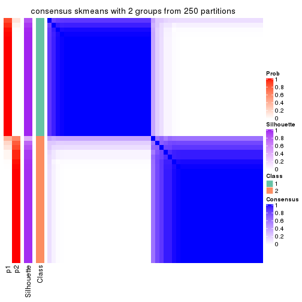
consensus_heatmap(res, k = 3)
consensus_heatmap(res, k = 4)
consensus_heatmap(res, k = 5)

consensus_heatmap(res, k = 6)
Heatmaps for the membership of samples in all partitions to see how consistent they are:
membership_heatmap(res, k = 2)
membership_heatmap(res, k = 3)
membership_heatmap(res, k = 4)
membership_heatmap(res, k = 5)
membership_heatmap(res, k = 6)
As soon as we have had the classes for columns, we can look for signatures which are significantly different between classes which can be candidate marks for certain classes. Following are the heatmaps for signatures.
Signature heatmaps where rows are scaled:
get_signatures(res, k = 2)
get_signatures(res, k = 3)
get_signatures(res, k = 4)
get_signatures(res, k = 5)
get_signatures(res, k = 6)
Signature heatmaps where rows are not scaled:
get_signatures(res, k = 2, scale_rows = FALSE)
get_signatures(res, k = 3, scale_rows = FALSE)
get_signatures(res, k = 4, scale_rows = FALSE)
get_signatures(res, k = 5, scale_rows = FALSE)
get_signatures(res, k = 6, scale_rows = FALSE)
Compare the overlap of signatures from different k:
compare_signatures(res)
get_signature() returns a data frame invisibly. TO get the list of signatures, the function
call should be assigned to a variable explicitly. In following code, if plot argument is set
to FALSE, no heatmap is plotted while only the differential analysis is performed.
# code only for demonstration
tb = get_signature(res, k = ..., plot = FALSE)
An example of the output of tb is:
#> which_row fdr mean_1 mean_2 scaled_mean_1 scaled_mean_2 km
#> 1 38 0.042760348 8.373488 9.131774 -0.5533452 0.5164555 1
#> 2 40 0.018707592 7.106213 8.469186 -0.6173731 0.5762149 1
#> 3 55 0.019134737 10.221463 11.207825 -0.6159697 0.5749050 1
#> 4 59 0.006059896 5.921854 7.869574 -0.6899429 0.6439467 1
#> 5 60 0.018055526 8.928898 10.211722 -0.6204761 0.5791110 1
#> 6 98 0.009384629 15.714769 14.887706 0.6635654 -0.6193277 2
...
The columns in tb are:
which_row: row indices corresponding to the input matrix.fdr: FDR for the differential test. mean_x: The mean value in group x.scaled_mean_x: The mean value in group x after rows are scaled.km: Row groups if k-means clustering is applied to rows.UMAP plot which shows how samples are separated.
dimension_reduction(res, k = 2, method = "UMAP")
dimension_reduction(res, k = 3, method = "UMAP")
dimension_reduction(res, k = 4, method = "UMAP")
dimension_reduction(res, k = 5, method = "UMAP")
dimension_reduction(res, k = 6, method = "UMAP")
Following heatmap shows how subgroups are split when increasing k:
collect_classes(res)

If matrix rows can be associated to genes, consider to use GO_Enrichment(res,
...) to perform function enrichment for the signature genes.
The object with results only for a single top-value method and a single partition method can be extracted as:
res = res_list["CV", "pam"]
# you can also extract it by
# res = res_list["CV:pam"]
A summary of res and all the functions that can be applied to it:
res
#> A 'ConsensusPartition' object with k = 2, 3, 4, 5, 6.
#> On a matrix with 4352 rows and 52 columns.
#> Top rows (435, 870, 1306, 1741, 2176) are extracted by 'CV' method.
#> Subgroups are detected by 'pam' method.
#> Performed in total 1250 partitions by row resampling.
#> Best k for subgroups seems to be 2.
#>
#> Following methods can be applied to this 'ConsensusPartition' object:
#> [1] "cola_report" "collect_classes" "collect_plots"
#> [4] "collect_stats" "colnames" "compare_signatures"
#> [7] "consensus_heatmap" "dimension_reduction" "functional_enrichment"
#> [10] "get_anno_col" "get_anno" "get_classes"
#> [13] "get_consensus" "get_matrix" "get_membership"
#> [16] "get_param" "get_signatures" "get_stats"
#> [19] "is_best_k" "is_stable_k" "membership_heatmap"
#> [22] "ncol" "nrow" "plot_ecdf"
#> [25] "rownames" "select_partition_number" "show"
#> [28] "suggest_best_k" "test_to_known_factors"
collect_plots() function collects all the plots made from res for all k (number of partitions)
into one single page to provide an easy and fast comparison between different k.
collect_plots(res)
The plots are:
k and the heatmap of
predicted classes for each k.k.k.k.All the plots in panels can be made by individual functions and they are plotted later in this section.
select_partition_number() produces several plots showing different
statistics for choosing “optimized” k. There are following statistics:
k;k, the area increased is defined as \(A_k - A_{k-1}\).The detailed explanations of these statistics can be found in the cola vignette.
Generally speaking, lower PAC score, higher mean silhouette score or higher
concordance corresponds to better partition. Rand index and Jaccard index
measure how similar the current partition is compared to partition with k-1.
If they are too similar, we won't accept k is better than k-1.
select_partition_number(res)

The numeric values for all these statistics can be obtained by get_stats().
get_stats(res)
#> k 1-PAC mean_silhouette concordance area_increased Rand Jaccard
#> 2 2 0.710 0.894 0.940 0.4587 0.509 0.509
#> 3 3 0.679 0.826 0.899 0.4213 0.697 0.466
#> 4 4 0.642 0.806 0.876 0.0127 1.000 1.000
#> 5 5 0.602 0.646 0.856 0.0122 0.980 0.937
#> 6 6 0.570 0.645 0.845 0.0113 0.986 0.955
suggest_best_k() suggests the best \(k\) based on these statistics. The rules are as follows:
NA.suggest_best_k(res)
#> [1] 2
Following shows the table of the partitions (You need to click the show/hide
code output link to see it). The membership matrix (columns with name p*)
is inferred by
clue::cl_consensus()
function with the SE method. Basically the value in the membership matrix
represents the probability to belong to a certain group. The finall class
label for an item is determined with the group with highest probability it
belongs to.
In get_classes() function, the entropy is calculated from the membership
matrix and the silhouette score is calculated from the consensus matrix.
cbind(get_classes(res, k = 2), get_membership(res, k = 2))
#> class entropy silhouette p1 p2
#> SRR2042654 1 0.0000 0.984 1.000 0.000
#> SRR2042653 1 0.0000 0.984 1.000 0.000
#> SRR2042652 1 0.0000 0.984 1.000 0.000
#> SRR2042650 1 0.0000 0.984 1.000 0.000
#> SRR2042649 2 0.9732 0.503 0.404 0.596
#> SRR2042647 1 0.1633 0.973 0.976 0.024
#> SRR2042648 2 0.0000 0.860 0.000 1.000
#> SRR2042646 2 0.8909 0.629 0.308 0.692
#> SRR2042645 1 0.0672 0.981 0.992 0.008
#> SRR2042644 2 0.0376 0.861 0.004 0.996
#> SRR2042643 1 0.0000 0.984 1.000 0.000
#> SRR2042642 2 0.0000 0.860 0.000 1.000
#> SRR2042640 2 0.9608 0.547 0.384 0.616
#> SRR2042641 2 0.9988 0.268 0.480 0.520
#> SRR2042639 2 0.5519 0.841 0.128 0.872
#> SRR2042638 2 0.0000 0.860 0.000 1.000
#> SRR2042637 2 0.7056 0.808 0.192 0.808
#> SRR2042636 1 0.0000 0.984 1.000 0.000
#> SRR2042634 1 0.0000 0.984 1.000 0.000
#> SRR2042635 2 0.0000 0.860 0.000 1.000
#> SRR2042633 1 0.5629 0.832 0.868 0.132
#> SRR2042631 1 0.1414 0.975 0.980 0.020
#> SRR2042632 2 0.0000 0.860 0.000 1.000
#> SRR2042630 2 0.6801 0.818 0.180 0.820
#> SRR2042629 1 0.1843 0.970 0.972 0.028
#> SRR2042628 1 0.0672 0.981 0.992 0.008
#> SRR2042626 2 0.1414 0.861 0.020 0.980
#> SRR2042627 1 0.1843 0.970 0.972 0.028
#> SRR2042624 1 0.1633 0.973 0.976 0.024
#> SRR2042625 1 0.0000 0.984 1.000 0.000
#> SRR2042623 1 0.0000 0.984 1.000 0.000
#> SRR2042622 1 0.0000 0.984 1.000 0.000
#> SRR2042620 1 0.3114 0.933 0.944 0.056
#> SRR2042621 1 0.1843 0.970 0.972 0.028
#> SRR2042619 1 0.0000 0.984 1.000 0.000
#> SRR2042618 2 0.0000 0.860 0.000 1.000
#> SRR2042617 1 0.0000 0.984 1.000 0.000
#> SRR2042616 2 0.6712 0.819 0.176 0.824
#> SRR2042615 2 0.6247 0.829 0.156 0.844
#> SRR2042614 2 0.3584 0.855 0.068 0.932
#> SRR2042613 2 0.0000 0.860 0.000 1.000
#> SRR2042612 1 0.0000 0.984 1.000 0.000
#> SRR2042610 1 0.0000 0.984 1.000 0.000
#> SRR2042611 2 0.0000 0.860 0.000 1.000
#> SRR2042607 1 0.1843 0.970 0.972 0.028
#> SRR2042609 1 0.0000 0.984 1.000 0.000
#> SRR2042608 1 0.1843 0.970 0.972 0.028
#> SRR2042656 2 0.7219 0.801 0.200 0.800
#> SRR2042658 1 0.0000 0.984 1.000 0.000
#> SRR2042659 1 0.0000 0.984 1.000 0.000
#> SRR2042657 1 0.0000 0.984 1.000 0.000
#> SRR2042655 1 0.0000 0.984 1.000 0.000
cbind(get_classes(res, k = 3), get_membership(res, k = 3))
#> class entropy silhouette p1 p2 p3
#> SRR2042654 1 0.0000 0.990 1.000 0.000 0.000
#> SRR2042653 1 0.0000 0.990 1.000 0.000 0.000
#> SRR2042652 1 0.0000 0.990 1.000 0.000 0.000
#> SRR2042650 1 0.0000 0.990 1.000 0.000 0.000
#> SRR2042649 3 0.5371 0.721 0.048 0.140 0.812
#> SRR2042647 3 0.2537 0.836 0.080 0.000 0.920
#> SRR2042648 2 0.0592 0.847 0.000 0.988 0.012
#> SRR2042646 3 0.0237 0.799 0.000 0.004 0.996
#> SRR2042645 1 0.3482 0.822 0.872 0.000 0.128
#> SRR2042644 2 0.2590 0.831 0.004 0.924 0.072
#> SRR2042643 1 0.0000 0.990 1.000 0.000 0.000
#> SRR2042642 2 0.0000 0.847 0.000 1.000 0.000
#> SRR2042640 3 0.2229 0.829 0.044 0.012 0.944
#> SRR2042641 3 0.2176 0.822 0.032 0.020 0.948
#> SRR2042639 3 0.5803 0.610 0.028 0.212 0.760
#> SRR2042638 2 0.0000 0.847 0.000 1.000 0.000
#> SRR2042637 2 0.7905 0.257 0.056 0.500 0.444
#> SRR2042636 1 0.0237 0.987 0.996 0.000 0.004
#> SRR2042634 1 0.0000 0.990 1.000 0.000 0.000
#> SRR2042635 2 0.0000 0.847 0.000 1.000 0.000
#> SRR2042633 3 0.1765 0.828 0.040 0.004 0.956
#> SRR2042631 3 0.4931 0.767 0.232 0.000 0.768
#> SRR2042632 2 0.0000 0.847 0.000 1.000 0.000
#> SRR2042630 2 0.7128 0.631 0.052 0.664 0.284
#> SRR2042629 3 0.3412 0.825 0.124 0.000 0.876
#> SRR2042628 3 0.6244 0.428 0.440 0.000 0.560
#> SRR2042626 2 0.4692 0.785 0.012 0.820 0.168
#> SRR2042627 3 0.1753 0.831 0.048 0.000 0.952
#> SRR2042624 3 0.1964 0.834 0.056 0.000 0.944
#> SRR2042625 1 0.0000 0.990 1.000 0.000 0.000
#> SRR2042623 1 0.0000 0.990 1.000 0.000 0.000
#> SRR2042622 1 0.0000 0.990 1.000 0.000 0.000
#> SRR2042620 3 0.5902 0.667 0.316 0.004 0.680
#> SRR2042621 3 0.2066 0.835 0.060 0.000 0.940
#> SRR2042619 3 0.5621 0.674 0.308 0.000 0.692
#> SRR2042618 2 0.0424 0.847 0.000 0.992 0.008
#> SRR2042617 1 0.0000 0.990 1.000 0.000 0.000
#> SRR2042616 2 0.7853 0.426 0.060 0.556 0.384
#> SRR2042615 2 0.6793 0.638 0.036 0.672 0.292
#> SRR2042614 2 0.4810 0.792 0.028 0.832 0.140
#> SRR2042613 2 0.0000 0.847 0.000 1.000 0.000
#> SRR2042612 1 0.0000 0.990 1.000 0.000 0.000
#> SRR2042610 1 0.0000 0.990 1.000 0.000 0.000
#> SRR2042611 2 0.0000 0.847 0.000 1.000 0.000
#> SRR2042607 3 0.3816 0.813 0.148 0.000 0.852
#> SRR2042609 1 0.0000 0.990 1.000 0.000 0.000
#> SRR2042608 3 0.2878 0.834 0.096 0.000 0.904
#> SRR2042656 3 0.5295 0.695 0.036 0.156 0.808
#> SRR2042658 3 0.6111 0.513 0.396 0.000 0.604
#> SRR2042659 1 0.0000 0.990 1.000 0.000 0.000
#> SRR2042657 1 0.0000 0.990 1.000 0.000 0.000
#> SRR2042655 1 0.0237 0.986 0.996 0.000 0.004
cbind(get_classes(res, k = 4), get_membership(res, k = 4))
#> class entropy silhouette p1 p2 p3 p4
#> SRR2042654 1 0.0000 0.990 1.000 0.000 0.000 NA
#> SRR2042653 1 0.0000 0.990 1.000 0.000 0.000 NA
#> SRR2042652 1 0.0000 0.990 1.000 0.000 0.000 NA
#> SRR2042650 1 0.0000 0.990 1.000 0.000 0.000 NA
#> SRR2042649 3 0.5716 0.690 0.044 0.104 0.764 NA
#> SRR2042647 3 0.2281 0.812 0.096 0.000 0.904 NA
#> SRR2042648 2 0.0469 0.827 0.000 0.988 0.012 NA
#> SRR2042646 3 0.3942 0.659 0.000 0.000 0.764 NA
#> SRR2042645 1 0.2760 0.817 0.872 0.000 0.128 NA
#> SRR2042644 2 0.2053 0.816 0.000 0.924 0.072 NA
#> SRR2042643 1 0.0000 0.990 1.000 0.000 0.000 NA
#> SRR2042642 2 0.0000 0.826 0.000 1.000 0.000 NA
#> SRR2042640 3 0.2319 0.787 0.040 0.036 0.924 NA
#> SRR2042641 3 0.2224 0.783 0.032 0.040 0.928 NA
#> SRR2042639 3 0.4599 0.595 0.028 0.212 0.760 NA
#> SRR2042638 2 0.0000 0.826 0.000 1.000 0.000 NA
#> SRR2042637 2 0.8592 0.211 0.052 0.392 0.384 NA
#> SRR2042636 1 0.0188 0.986 0.996 0.000 0.004 NA
#> SRR2042634 1 0.0000 0.990 1.000 0.000 0.000 NA
#> SRR2042635 2 0.0000 0.826 0.000 1.000 0.000 NA
#> SRR2042633 3 0.2983 0.779 0.040 0.000 0.892 NA
#> SRR2042631 3 0.4103 0.749 0.256 0.000 0.744 NA
#> SRR2042632 2 0.0469 0.825 0.000 0.988 0.000 NA
#> SRR2042630 2 0.5599 0.626 0.048 0.664 0.288 NA
#> SRR2042629 3 0.2973 0.805 0.144 0.000 0.856 NA
#> SRR2042628 3 0.4967 0.422 0.452 0.000 0.548 NA
#> SRR2042626 2 0.3636 0.774 0.008 0.820 0.172 NA
#> SRR2042627 3 0.1792 0.803 0.068 0.000 0.932 NA
#> SRR2042624 3 0.2376 0.808 0.068 0.000 0.916 NA
#> SRR2042625 1 0.0000 0.990 1.000 0.000 0.000 NA
#> SRR2042623 1 0.0000 0.990 1.000 0.000 0.000 NA
#> SRR2042622 1 0.0000 0.990 1.000 0.000 0.000 NA
#> SRR2042620 3 0.4800 0.644 0.340 0.004 0.656 NA
#> SRR2042621 3 0.3013 0.811 0.080 0.000 0.888 NA
#> SRR2042619 3 0.4585 0.651 0.332 0.000 0.668 NA
#> SRR2042618 2 0.0336 0.827 0.000 0.992 0.008 NA
#> SRR2042617 1 0.0000 0.990 1.000 0.000 0.000 NA
#> SRR2042616 2 0.6223 0.420 0.060 0.556 0.384 NA
#> SRR2042615 2 0.5321 0.633 0.032 0.672 0.296 NA
#> SRR2042614 2 0.3812 0.780 0.028 0.832 0.140 NA
#> SRR2042613 2 0.4761 0.652 0.000 0.628 0.000 NA
#> SRR2042612 1 0.0000 0.990 1.000 0.000 0.000 NA
#> SRR2042610 1 0.0000 0.990 1.000 0.000 0.000 NA
#> SRR2042611 2 0.0000 0.826 0.000 1.000 0.000 NA
#> SRR2042607 3 0.3311 0.793 0.172 0.000 0.828 NA
#> SRR2042609 1 0.0000 0.990 1.000 0.000 0.000 NA
#> SRR2042608 3 0.2469 0.813 0.108 0.000 0.892 NA
#> SRR2042656 3 0.4152 0.670 0.032 0.160 0.808 NA
#> SRR2042658 3 0.4907 0.482 0.420 0.000 0.580 NA
#> SRR2042659 1 0.0000 0.990 1.000 0.000 0.000 NA
#> SRR2042657 1 0.0000 0.990 1.000 0.000 0.000 NA
#> SRR2042655 1 0.0188 0.986 0.996 0.000 0.004 NA
cbind(get_classes(res, k = 5), get_membership(res, k = 5))
#> class entropy silhouette p1 p2 p3 p4 p5
#> SRR2042654 1 0.0000 0.9899 1.000 0.000 0.000 0.000 0.000
#> SRR2042653 1 0.0000 0.9899 1.000 0.000 0.000 0.000 0.000
#> SRR2042652 1 0.0000 0.9899 1.000 0.000 0.000 0.000 0.000
#> SRR2042650 1 0.0000 0.9899 1.000 0.000 0.000 0.000 0.000
#> SRR2042649 3 0.7204 0.1464 0.040 0.092 0.616 0.092 0.160
#> SRR2042647 3 0.2329 0.6542 0.124 0.000 0.876 0.000 0.000
#> SRR2042648 2 0.0404 0.6778 0.000 0.988 0.012 0.000 0.000
#> SRR2042646 3 0.5663 0.0185 0.000 0.000 0.548 0.364 0.088
#> SRR2042645 1 0.2377 0.8114 0.872 0.000 0.128 0.000 0.000
#> SRR2042644 2 0.1768 0.6613 0.000 0.924 0.072 0.004 0.000
#> SRR2042643 1 0.0000 0.9899 1.000 0.000 0.000 0.000 0.000
#> SRR2042642 2 0.0000 0.6720 0.000 1.000 0.000 0.000 0.000
#> SRR2042640 3 0.2504 0.5771 0.040 0.064 0.896 0.000 0.000
#> SRR2042641 3 0.2300 0.5610 0.024 0.072 0.904 0.000 0.000
#> SRR2042639 3 0.3993 0.2617 0.028 0.216 0.756 0.000 0.000
#> SRR2042638 2 0.0000 0.6720 0.000 1.000 0.000 0.000 0.000
#> SRR2042637 4 0.7758 0.0000 0.056 0.284 0.304 0.356 0.000
#> SRR2042636 1 0.0162 0.9859 0.996 0.000 0.004 0.000 0.000
#> SRR2042634 1 0.0000 0.9899 1.000 0.000 0.000 0.000 0.000
#> SRR2042635 2 0.0000 0.6720 0.000 1.000 0.000 0.000 0.000
#> SRR2042633 3 0.4313 0.5228 0.036 0.000 0.804 0.060 0.100
#> SRR2042631 3 0.3707 0.5828 0.284 0.000 0.716 0.000 0.000
#> SRR2042632 2 0.1942 0.6190 0.000 0.920 0.000 0.068 0.012
#> SRR2042630 2 0.4822 0.1841 0.048 0.664 0.288 0.000 0.000
#> SRR2042629 3 0.2852 0.6479 0.172 0.000 0.828 0.000 0.000
#> SRR2042628 3 0.4287 0.3884 0.460 0.000 0.540 0.000 0.000
#> SRR2042626 2 0.3010 0.5913 0.004 0.824 0.172 0.000 0.000
#> SRR2042627 3 0.1965 0.6416 0.096 0.000 0.904 0.000 0.000
#> SRR2042624 3 0.3509 0.6321 0.084 0.000 0.852 0.032 0.032
#> SRR2042625 1 0.0000 0.9899 1.000 0.000 0.000 0.000 0.000
#> SRR2042623 1 0.0000 0.9899 1.000 0.000 0.000 0.000 0.000
#> SRR2042622 1 0.0000 0.9899 1.000 0.000 0.000 0.000 0.000
#> SRR2042620 3 0.4341 0.5007 0.364 0.008 0.628 0.000 0.000
#> SRR2042621 3 0.2917 0.5928 0.048 0.000 0.888 0.024 0.040
#> SRR2042619 3 0.4060 0.5158 0.360 0.000 0.640 0.000 0.000
#> SRR2042618 2 0.0290 0.6768 0.000 0.992 0.008 0.000 0.000
#> SRR2042617 1 0.0000 0.9899 1.000 0.000 0.000 0.000 0.000
#> SRR2042616 2 0.5313 -0.2688 0.056 0.556 0.388 0.000 0.000
#> SRR2042615 2 0.4583 0.2087 0.032 0.672 0.296 0.000 0.000
#> SRR2042614 2 0.3238 0.6017 0.028 0.836 0.136 0.000 0.000
#> SRR2042613 5 0.4249 0.0000 0.000 0.432 0.000 0.000 0.568
#> SRR2042612 1 0.0000 0.9899 1.000 0.000 0.000 0.000 0.000
#> SRR2042610 1 0.0000 0.9899 1.000 0.000 0.000 0.000 0.000
#> SRR2042611 2 0.0000 0.6720 0.000 1.000 0.000 0.000 0.000
#> SRR2042607 3 0.3143 0.6373 0.204 0.000 0.796 0.000 0.000
#> SRR2042609 1 0.0000 0.9899 1.000 0.000 0.000 0.000 0.000
#> SRR2042608 3 0.2516 0.6547 0.140 0.000 0.860 0.000 0.000
#> SRR2042656 3 0.3616 0.3951 0.032 0.164 0.804 0.000 0.000
#> SRR2042658 3 0.4273 0.4119 0.448 0.000 0.552 0.000 0.000
#> SRR2042659 1 0.0000 0.9899 1.000 0.000 0.000 0.000 0.000
#> SRR2042657 1 0.0000 0.9899 1.000 0.000 0.000 0.000 0.000
#> SRR2042655 1 0.0162 0.9854 0.996 0.000 0.004 0.000 0.000
cbind(get_classes(res, k = 6), get_membership(res, k = 6))
#> class entropy silhouette p1 p2 p3 p4 p5 p6
#> SRR2042654 1 0.0000 0.990 1.000 0.000 0.000 0.000 0.000 0.000
#> SRR2042653 1 0.0000 0.990 1.000 0.000 0.000 0.000 0.000 0.000
#> SRR2042652 1 0.0000 0.990 1.000 0.000 0.000 0.000 0.000 0.000
#> SRR2042650 1 0.0000 0.990 1.000 0.000 0.000 0.000 0.000 0.000
#> SRR2042649 4 0.5769 -0.261 0.028 0.088 0.000 0.472 0.412 0.000
#> SRR2042647 4 0.2416 0.618 0.156 0.000 0.000 0.844 0.000 0.000
#> SRR2042648 2 0.0363 0.725 0.000 0.988 0.000 0.012 0.000 0.000
#> SRR2042646 3 0.3464 0.000 0.000 0.000 0.688 0.312 0.000 0.000
#> SRR2042645 1 0.2092 0.811 0.876 0.000 0.000 0.124 0.000 0.000
#> SRR2042644 2 0.1757 0.711 0.000 0.916 0.008 0.076 0.000 0.000
#> SRR2042643 1 0.0000 0.990 1.000 0.000 0.000 0.000 0.000 0.000
#> SRR2042642 2 0.0000 0.720 0.000 1.000 0.000 0.000 0.000 0.000
#> SRR2042640 4 0.2728 0.531 0.040 0.100 0.000 0.860 0.000 0.000
#> SRR2042641 4 0.2537 0.525 0.032 0.096 0.000 0.872 0.000 0.000
#> SRR2042639 4 0.3641 0.332 0.028 0.224 0.000 0.748 0.000 0.000
#> SRR2042638 2 0.0000 0.720 0.000 1.000 0.000 0.000 0.000 0.000
#> SRR2042637 5 0.9257 0.000 0.048 0.180 0.204 0.232 0.264 0.072
#> SRR2042636 1 0.0146 0.986 0.996 0.000 0.000 0.004 0.000 0.000
#> SRR2042634 1 0.0000 0.990 1.000 0.000 0.000 0.000 0.000 0.000
#> SRR2042635 2 0.0000 0.720 0.000 1.000 0.000 0.000 0.000 0.000
#> SRR2042633 4 0.3974 0.429 0.036 0.000 0.012 0.764 0.004 0.184
#> SRR2042631 4 0.3499 0.553 0.320 0.000 0.000 0.680 0.000 0.000
#> SRR2042632 2 0.2866 0.634 0.000 0.864 0.024 0.000 0.092 0.020
#> SRR2042630 2 0.4861 0.378 0.044 0.652 0.012 0.284 0.004 0.004
#> SRR2042629 4 0.2823 0.616 0.204 0.000 0.000 0.796 0.000 0.000
#> SRR2042628 4 0.3864 0.390 0.480 0.000 0.000 0.520 0.000 0.000
#> SRR2042626 2 0.2738 0.650 0.004 0.820 0.000 0.176 0.000 0.000
#> SRR2042627 4 0.2178 0.609 0.132 0.000 0.000 0.868 0.000 0.000
#> SRR2042624 4 0.3916 0.448 0.056 0.000 0.044 0.824 0.052 0.024
#> SRR2042625 1 0.0000 0.990 1.000 0.000 0.000 0.000 0.000 0.000
#> SRR2042623 1 0.0000 0.990 1.000 0.000 0.000 0.000 0.000 0.000
#> SRR2042622 1 0.0000 0.990 1.000 0.000 0.000 0.000 0.000 0.000
#> SRR2042620 4 0.4333 0.484 0.380 0.020 0.000 0.596 0.004 0.000
#> SRR2042621 4 0.3982 0.380 0.028 0.000 0.008 0.776 0.168 0.020
#> SRR2042619 4 0.3756 0.477 0.400 0.000 0.000 0.600 0.000 0.000
#> SRR2042618 2 0.0260 0.724 0.000 0.992 0.000 0.008 0.000 0.000
#> SRR2042617 1 0.0000 0.990 1.000 0.000 0.000 0.000 0.000 0.000
#> SRR2042616 2 0.4905 0.054 0.056 0.552 0.000 0.388 0.000 0.004
#> SRR2042615 2 0.4065 0.405 0.028 0.672 0.000 0.300 0.000 0.000
#> SRR2042614 2 0.2983 0.659 0.032 0.832 0.000 0.136 0.000 0.000
#> SRR2042613 6 0.3531 0.000 0.000 0.328 0.000 0.000 0.000 0.672
#> SRR2042612 1 0.0000 0.990 1.000 0.000 0.000 0.000 0.000 0.000
#> SRR2042610 1 0.0000 0.990 1.000 0.000 0.000 0.000 0.000 0.000
#> SRR2042611 2 0.0000 0.720 0.000 1.000 0.000 0.000 0.000 0.000
#> SRR2042607 4 0.3076 0.601 0.240 0.000 0.000 0.760 0.000 0.000
#> SRR2042609 1 0.0000 0.990 1.000 0.000 0.000 0.000 0.000 0.000
#> SRR2042608 4 0.2631 0.620 0.180 0.000 0.000 0.820 0.000 0.000
#> SRR2042656 4 0.3409 0.384 0.028 0.192 0.000 0.780 0.000 0.000
#> SRR2042658 4 0.3866 0.378 0.484 0.000 0.000 0.516 0.000 0.000
#> SRR2042659 1 0.0000 0.990 1.000 0.000 0.000 0.000 0.000 0.000
#> SRR2042657 1 0.0000 0.990 1.000 0.000 0.000 0.000 0.000 0.000
#> SRR2042655 1 0.0146 0.985 0.996 0.000 0.000 0.004 0.000 0.000
Heatmaps for the consensus matrix. It visualizes the probability of two samples to be in a same group.
consensus_heatmap(res, k = 2)
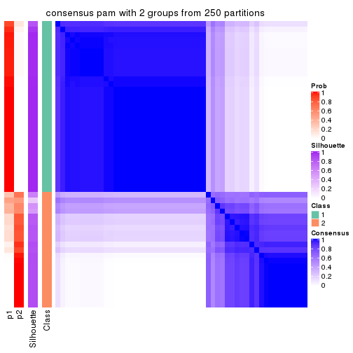
consensus_heatmap(res, k = 3)
consensus_heatmap(res, k = 4)
consensus_heatmap(res, k = 5)

consensus_heatmap(res, k = 6)
Heatmaps for the membership of samples in all partitions to see how consistent they are:
membership_heatmap(res, k = 2)

membership_heatmap(res, k = 3)
membership_heatmap(res, k = 4)
membership_heatmap(res, k = 5)
membership_heatmap(res, k = 6)
As soon as we have had the classes for columns, we can look for signatures which are significantly different between classes which can be candidate marks for certain classes. Following are the heatmaps for signatures.
Signature heatmaps where rows are scaled:
get_signatures(res, k = 2)
get_signatures(res, k = 3)
get_signatures(res, k = 4)

get_signatures(res, k = 5)
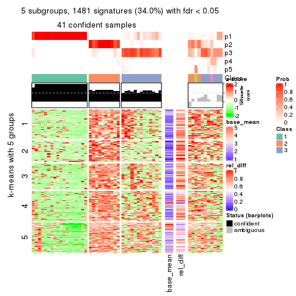
get_signatures(res, k = 6)
Signature heatmaps where rows are not scaled:
get_signatures(res, k = 2, scale_rows = FALSE)
get_signatures(res, k = 3, scale_rows = FALSE)
get_signatures(res, k = 4, scale_rows = FALSE)
get_signatures(res, k = 5, scale_rows = FALSE)
get_signatures(res, k = 6, scale_rows = FALSE)
Compare the overlap of signatures from different k:
compare_signatures(res)
get_signature() returns a data frame invisibly. TO get the list of signatures, the function
call should be assigned to a variable explicitly. In following code, if plot argument is set
to FALSE, no heatmap is plotted while only the differential analysis is performed.
# code only for demonstration
tb = get_signature(res, k = ..., plot = FALSE)
An example of the output of tb is:
#> which_row fdr mean_1 mean_2 scaled_mean_1 scaled_mean_2 km
#> 1 38 0.042760348 8.373488 9.131774 -0.5533452 0.5164555 1
#> 2 40 0.018707592 7.106213 8.469186 -0.6173731 0.5762149 1
#> 3 55 0.019134737 10.221463 11.207825 -0.6159697 0.5749050 1
#> 4 59 0.006059896 5.921854 7.869574 -0.6899429 0.6439467 1
#> 5 60 0.018055526 8.928898 10.211722 -0.6204761 0.5791110 1
#> 6 98 0.009384629 15.714769 14.887706 0.6635654 -0.6193277 2
...
The columns in tb are:
which_row: row indices corresponding to the input matrix.fdr: FDR for the differential test. mean_x: The mean value in group x.scaled_mean_x: The mean value in group x after rows are scaled.km: Row groups if k-means clustering is applied to rows.UMAP plot which shows how samples are separated.
dimension_reduction(res, k = 2, method = "UMAP")
dimension_reduction(res, k = 3, method = "UMAP")
dimension_reduction(res, k = 4, method = "UMAP")
dimension_reduction(res, k = 5, method = "UMAP")
dimension_reduction(res, k = 6, method = "UMAP")
Following heatmap shows how subgroups are split when increasing k:
collect_classes(res)
If matrix rows can be associated to genes, consider to use GO_Enrichment(res,
...) to perform function enrichment for the signature genes.
The object with results only for a single top-value method and a single partition method can be extracted as:
res = res_list["CV", "mclust"]
# you can also extract it by
# res = res_list["CV:mclust"]
A summary of res and all the functions that can be applied to it:
res
#> A 'ConsensusPartition' object with k = 2, 3, 4, 5, 6.
#> On a matrix with 4352 rows and 52 columns.
#> Top rows (435, 870, 1306, 1741, 2176) are extracted by 'CV' method.
#> Subgroups are detected by 'mclust' method.
#> Performed in total 1250 partitions by row resampling.
#> Best k for subgroups seems to be 2.
#>
#> Following methods can be applied to this 'ConsensusPartition' object:
#> [1] "cola_report" "collect_classes" "collect_plots"
#> [4] "collect_stats" "colnames" "compare_signatures"
#> [7] "consensus_heatmap" "dimension_reduction" "functional_enrichment"
#> [10] "get_anno_col" "get_anno" "get_classes"
#> [13] "get_consensus" "get_matrix" "get_membership"
#> [16] "get_param" "get_signatures" "get_stats"
#> [19] "is_best_k" "is_stable_k" "membership_heatmap"
#> [22] "ncol" "nrow" "plot_ecdf"
#> [25] "rownames" "select_partition_number" "show"
#> [28] "suggest_best_k" "test_to_known_factors"
collect_plots() function collects all the plots made from res for all k (number of partitions)
into one single page to provide an easy and fast comparison between different k.
collect_plots(res)
The plots are:
k and the heatmap of
predicted classes for each k.k.k.k.All the plots in panels can be made by individual functions and they are plotted later in this section.
select_partition_number() produces several plots showing different
statistics for choosing “optimized” k. There are following statistics:
k;k, the area increased is defined as \(A_k - A_{k-1}\).The detailed explanations of these statistics can be found in the cola vignette.
Generally speaking, lower PAC score, higher mean silhouette score or higher
concordance corresponds to better partition. Rand index and Jaccard index
measure how similar the current partition is compared to partition with k-1.
If they are too similar, we won't accept k is better than k-1.
select_partition_number(res)
The numeric values for all these statistics can be obtained by get_stats().
get_stats(res)
#> k 1-PAC mean_silhouette concordance area_increased Rand Jaccard
#> 2 2 0.880 0.919 0.965 0.4482 0.538 0.538
#> 3 3 0.514 0.742 0.841 0.4195 0.756 0.558
#> 4 4 0.490 0.561 0.780 0.0881 0.938 0.821
#> 5 5 0.670 0.639 0.769 0.0835 0.902 0.695
#> 6 6 0.719 0.681 0.818 0.0452 0.952 0.810
suggest_best_k() suggests the best \(k\) based on these statistics. The rules are as follows:
NA.suggest_best_k(res)
#> [1] 2
Following shows the table of the partitions (You need to click the show/hide
code output link to see it). The membership matrix (columns with name p*)
is inferred by
clue::cl_consensus()
function with the SE method. Basically the value in the membership matrix
represents the probability to belong to a certain group. The finall class
label for an item is determined with the group with highest probability it
belongs to.
In get_classes() function, the entropy is calculated from the membership
matrix and the silhouette score is calculated from the consensus matrix.
cbind(get_classes(res, k = 2), get_membership(res, k = 2))
#> class entropy silhouette p1 p2
#> SRR2042654 1 0.0000 0.918 1.000 0.000
#> SRR2042653 1 0.0000 0.918 1.000 0.000
#> SRR2042652 1 0.0000 0.918 1.000 0.000
#> SRR2042650 1 0.2236 0.906 0.964 0.036
#> SRR2042649 2 0.0000 0.984 0.000 1.000
#> SRR2042647 2 0.0000 0.984 0.000 1.000
#> SRR2042648 2 0.0000 0.984 0.000 1.000
#> SRR2042646 2 0.0000 0.984 0.000 1.000
#> SRR2042645 1 0.9996 0.153 0.512 0.488
#> SRR2042644 2 0.0000 0.984 0.000 1.000
#> SRR2042643 1 0.1843 0.909 0.972 0.028
#> SRR2042642 2 0.0000 0.984 0.000 1.000
#> SRR2042640 2 0.0000 0.984 0.000 1.000
#> SRR2042641 2 0.0000 0.984 0.000 1.000
#> SRR2042639 2 0.0000 0.984 0.000 1.000
#> SRR2042638 2 0.0000 0.984 0.000 1.000
#> SRR2042637 2 0.0000 0.984 0.000 1.000
#> SRR2042636 2 0.8555 0.573 0.280 0.720
#> SRR2042634 1 0.8267 0.672 0.740 0.260
#> SRR2042635 2 0.0000 0.984 0.000 1.000
#> SRR2042633 2 0.0000 0.984 0.000 1.000
#> SRR2042631 2 0.0672 0.977 0.008 0.992
#> SRR2042632 2 0.0000 0.984 0.000 1.000
#> SRR2042630 2 0.0000 0.984 0.000 1.000
#> SRR2042629 2 0.0000 0.984 0.000 1.000
#> SRR2042628 2 0.0000 0.984 0.000 1.000
#> SRR2042626 2 0.0000 0.984 0.000 1.000
#> SRR2042627 1 0.6438 0.796 0.836 0.164
#> SRR2042624 2 0.0000 0.984 0.000 1.000
#> SRR2042625 1 0.0000 0.918 1.000 0.000
#> SRR2042623 1 0.0000 0.918 1.000 0.000
#> SRR2042622 1 0.0000 0.918 1.000 0.000
#> SRR2042620 2 0.0000 0.984 0.000 1.000
#> SRR2042621 2 0.0000 0.984 0.000 1.000
#> SRR2042619 2 0.6531 0.780 0.168 0.832
#> SRR2042618 2 0.0000 0.984 0.000 1.000
#> SRR2042617 1 0.0000 0.918 1.000 0.000
#> SRR2042616 2 0.0000 0.984 0.000 1.000
#> SRR2042615 2 0.0000 0.984 0.000 1.000
#> SRR2042614 2 0.0000 0.984 0.000 1.000
#> SRR2042613 2 0.0000 0.984 0.000 1.000
#> SRR2042612 1 0.0938 0.916 0.988 0.012
#> SRR2042610 1 0.1843 0.909 0.972 0.028
#> SRR2042611 2 0.0000 0.984 0.000 1.000
#> SRR2042607 2 0.1414 0.965 0.020 0.980
#> SRR2042609 1 0.0000 0.918 1.000 0.000
#> SRR2042608 2 0.0000 0.984 0.000 1.000
#> SRR2042656 2 0.0000 0.984 0.000 1.000
#> SRR2042658 2 0.0000 0.984 0.000 1.000
#> SRR2042659 1 0.0672 0.917 0.992 0.008
#> SRR2042657 1 0.9170 0.552 0.668 0.332
#> SRR2042655 1 0.0000 0.918 1.000 0.000
cbind(get_classes(res, k = 3), get_membership(res, k = 3))
#> class entropy silhouette p1 p2 p3
#> SRR2042654 1 0.0424 0.894 0.992 0.008 0.000
#> SRR2042653 1 0.0000 0.894 1.000 0.000 0.000
#> SRR2042652 1 0.0424 0.894 0.992 0.008 0.000
#> SRR2042650 1 0.3295 0.847 0.896 0.096 0.008
#> SRR2042649 3 0.0892 0.882 0.000 0.020 0.980
#> SRR2042647 2 0.3619 0.691 0.000 0.864 0.136
#> SRR2042648 2 0.4974 0.701 0.000 0.764 0.236
#> SRR2042646 3 0.1031 0.887 0.000 0.024 0.976
#> SRR2042645 1 0.8789 0.129 0.460 0.428 0.112
#> SRR2042644 3 0.3267 0.897 0.000 0.116 0.884
#> SRR2042643 1 0.4235 0.777 0.824 0.176 0.000
#> SRR2042642 2 0.4702 0.701 0.000 0.788 0.212
#> SRR2042640 2 0.5529 0.687 0.000 0.704 0.296
#> SRR2042641 3 0.4702 0.765 0.000 0.212 0.788
#> SRR2042639 3 0.5397 0.597 0.000 0.280 0.720
#> SRR2042638 2 0.4796 0.699 0.000 0.780 0.220
#> SRR2042637 3 0.1753 0.896 0.000 0.048 0.952
#> SRR2042636 2 0.7782 0.469 0.248 0.652 0.100
#> SRR2042634 1 0.6215 0.400 0.572 0.428 0.000
#> SRR2042635 2 0.4654 0.699 0.000 0.792 0.208
#> SRR2042633 3 0.2959 0.905 0.000 0.100 0.900
#> SRR2042631 2 0.4514 0.687 0.012 0.832 0.156
#> SRR2042632 3 0.0747 0.883 0.000 0.016 0.984
#> SRR2042630 3 0.1411 0.896 0.000 0.036 0.964
#> SRR2042629 2 0.3686 0.692 0.000 0.860 0.140
#> SRR2042628 3 0.2711 0.908 0.000 0.088 0.912
#> SRR2042626 2 0.5497 0.686 0.000 0.708 0.292
#> SRR2042627 1 0.5212 0.770 0.828 0.108 0.064
#> SRR2042624 3 0.3192 0.898 0.000 0.112 0.888
#> SRR2042625 1 0.0237 0.894 0.996 0.004 0.000
#> SRR2042623 1 0.0424 0.894 0.992 0.008 0.000
#> SRR2042622 1 0.0424 0.894 0.992 0.008 0.000
#> SRR2042620 2 0.5621 0.683 0.000 0.692 0.308
#> SRR2042621 3 0.2959 0.906 0.000 0.100 0.900
#> SRR2042619 2 0.8196 0.382 0.284 0.608 0.108
#> SRR2042618 2 0.6309 0.246 0.000 0.504 0.496
#> SRR2042617 1 0.0000 0.894 1.000 0.000 0.000
#> SRR2042616 3 0.2625 0.904 0.000 0.084 0.916
#> SRR2042615 3 0.2796 0.907 0.000 0.092 0.908
#> SRR2042614 2 0.6244 0.432 0.000 0.560 0.440
#> SRR2042613 3 0.0424 0.875 0.000 0.008 0.992
#> SRR2042612 1 0.0829 0.891 0.984 0.004 0.012
#> SRR2042610 1 0.3482 0.818 0.872 0.128 0.000
#> SRR2042611 2 0.4654 0.699 0.000 0.792 0.208
#> SRR2042607 2 0.4937 0.680 0.028 0.824 0.148
#> SRR2042609 1 0.0424 0.894 0.992 0.008 0.000
#> SRR2042608 3 0.3941 0.842 0.000 0.156 0.844
#> SRR2042656 2 0.5810 0.649 0.000 0.664 0.336
#> SRR2042658 3 0.2625 0.908 0.000 0.084 0.916
#> SRR2042659 1 0.0661 0.892 0.988 0.004 0.008
#> SRR2042657 2 0.6813 -0.206 0.468 0.520 0.012
#> SRR2042655 1 0.0592 0.893 0.988 0.012 0.000
cbind(get_classes(res, k = 4), get_membership(res, k = 4))
#> class entropy silhouette p1 p2 p3 p4
#> SRR2042654 1 0.0188 0.878 0.996 0.000 0.000 0.004
#> SRR2042653 1 0.0188 0.878 0.996 0.000 0.000 0.004
#> SRR2042652 1 0.0188 0.878 0.996 0.000 0.000 0.004
#> SRR2042650 1 0.3241 0.840 0.884 0.072 0.004 0.040
#> SRR2042649 3 0.2610 0.422 0.000 0.012 0.900 0.088
#> SRR2042647 2 0.5688 0.721 0.024 0.732 0.052 0.192
#> SRR2042648 2 0.2214 0.711 0.000 0.928 0.044 0.028
#> SRR2042646 3 0.2593 0.420 0.000 0.016 0.904 0.080
#> SRR2042645 1 0.8476 0.327 0.516 0.256 0.080 0.148
#> SRR2042644 3 0.6339 0.285 0.000 0.196 0.656 0.148
#> SRR2042643 1 0.4046 0.792 0.828 0.124 0.000 0.048
#> SRR2042642 2 0.2021 0.701 0.000 0.936 0.024 0.040
#> SRR2042640 2 0.5260 0.727 0.004 0.760 0.092 0.144
#> SRR2042641 3 0.7265 0.307 0.000 0.288 0.528 0.184
#> SRR2042639 2 0.6148 0.207 0.000 0.540 0.408 0.052
#> SRR2042638 2 0.2411 0.702 0.000 0.920 0.040 0.040
#> SRR2042637 3 0.3286 0.466 0.000 0.044 0.876 0.080
#> SRR2042636 2 0.8103 0.429 0.296 0.512 0.044 0.148
#> SRR2042634 1 0.6741 0.482 0.612 0.256 0.004 0.128
#> SRR2042635 2 0.2021 0.701 0.000 0.936 0.024 0.040
#> SRR2042633 3 0.7038 -0.337 0.004 0.124 0.548 0.324
#> SRR2042631 2 0.6056 0.713 0.032 0.716 0.064 0.188
#> SRR2042632 3 0.1211 0.448 0.000 0.000 0.960 0.040
#> SRR2042630 3 0.4581 0.496 0.000 0.080 0.800 0.120
#> SRR2042629 2 0.5547 0.721 0.020 0.740 0.052 0.188
#> SRR2042628 3 0.5861 0.327 0.000 0.144 0.704 0.152
#> SRR2042626 2 0.2926 0.724 0.004 0.888 0.096 0.012
#> SRR2042627 1 0.3768 0.817 0.872 0.044 0.036 0.048
#> SRR2042624 4 0.6145 0.000 0.000 0.048 0.460 0.492
#> SRR2042625 1 0.0376 0.878 0.992 0.004 0.000 0.004
#> SRR2042623 1 0.0188 0.878 0.996 0.000 0.000 0.004
#> SRR2042622 1 0.0188 0.878 0.996 0.000 0.000 0.004
#> SRR2042620 2 0.5750 0.715 0.008 0.732 0.136 0.124
#> SRR2042621 3 0.5938 -0.921 0.000 0.036 0.488 0.476
#> SRR2042619 2 0.8206 0.415 0.296 0.500 0.044 0.160
#> SRR2042618 2 0.5592 0.231 0.000 0.572 0.404 0.024
#> SRR2042617 1 0.0000 0.877 1.000 0.000 0.000 0.000
#> SRR2042616 3 0.5247 0.492 0.000 0.148 0.752 0.100
#> SRR2042615 3 0.4285 0.503 0.000 0.156 0.804 0.040
#> SRR2042614 2 0.5036 0.534 0.000 0.696 0.280 0.024
#> SRR2042613 3 0.1722 0.457 0.000 0.008 0.944 0.048
#> SRR2042612 1 0.0524 0.876 0.988 0.000 0.008 0.004
#> SRR2042610 1 0.2805 0.825 0.888 0.100 0.000 0.012
#> SRR2042611 2 0.2021 0.701 0.000 0.936 0.024 0.040
#> SRR2042607 2 0.6568 0.696 0.068 0.692 0.056 0.184
#> SRR2042609 1 0.0188 0.878 0.996 0.000 0.000 0.004
#> SRR2042608 3 0.7085 0.346 0.000 0.232 0.568 0.200
#> SRR2042656 2 0.5030 0.628 0.008 0.732 0.236 0.024
#> SRR2042658 3 0.4963 0.454 0.004 0.152 0.776 0.068
#> SRR2042659 1 0.0712 0.875 0.984 0.004 0.008 0.004
#> SRR2042657 1 0.7142 0.303 0.524 0.324 0.000 0.152
#> SRR2042655 1 0.0804 0.875 0.980 0.008 0.000 0.012
cbind(get_classes(res, k = 5), get_membership(res, k = 5))
#> class entropy silhouette p1 p2 p3 p4 p5
#> SRR2042654 1 0.0000 0.8766 1.000 0.000 0.000 0.000 0.000
#> SRR2042653 1 0.0000 0.8766 1.000 0.000 0.000 0.000 0.000
#> SRR2042652 1 0.0000 0.8766 1.000 0.000 0.000 0.000 0.000
#> SRR2042650 1 0.1952 0.8403 0.912 0.000 0.000 0.084 0.004
#> SRR2042649 3 0.2136 0.6584 0.000 0.000 0.904 0.008 0.088
#> SRR2042647 4 0.5122 0.7353 0.044 0.308 0.000 0.640 0.008
#> SRR2042648 2 0.0613 0.7152 0.000 0.984 0.004 0.008 0.004
#> SRR2042646 3 0.3022 0.6291 0.000 0.004 0.848 0.012 0.136
#> SRR2042645 1 0.6397 0.0739 0.484 0.016 0.036 0.424 0.040
#> SRR2042644 3 0.5674 0.4685 0.000 0.084 0.648 0.020 0.248
#> SRR2042643 1 0.2179 0.8294 0.896 0.000 0.000 0.100 0.004
#> SRR2042642 2 0.0000 0.7149 0.000 1.000 0.000 0.000 0.000
#> SRR2042640 4 0.5281 0.6435 0.024 0.384 0.012 0.576 0.004
#> SRR2042641 3 0.7500 0.3200 0.008 0.076 0.464 0.336 0.116
#> SRR2042639 3 0.6845 0.0883 0.000 0.372 0.468 0.036 0.124
#> SRR2042638 2 0.0703 0.7142 0.000 0.976 0.024 0.000 0.000
#> SRR2042637 3 0.3404 0.6544 0.000 0.012 0.840 0.024 0.124
#> SRR2042636 4 0.6929 0.4974 0.336 0.188 0.008 0.460 0.008
#> SRR2042634 1 0.4949 0.2475 0.572 0.032 0.000 0.396 0.000
#> SRR2042635 2 0.0000 0.7149 0.000 1.000 0.000 0.000 0.000
#> SRR2042633 5 0.6045 0.5776 0.012 0.024 0.340 0.048 0.576
#> SRR2042631 4 0.5705 0.7343 0.044 0.292 0.012 0.632 0.020
#> SRR2042632 3 0.0880 0.6676 0.000 0.000 0.968 0.000 0.032
#> SRR2042630 3 0.4378 0.6494 0.000 0.032 0.800 0.088 0.080
#> SRR2042629 4 0.5102 0.7317 0.032 0.292 0.008 0.660 0.008
#> SRR2042628 3 0.4741 0.4334 0.012 0.008 0.696 0.016 0.268
#> SRR2042626 2 0.2956 0.5961 0.000 0.848 0.008 0.140 0.004
#> SRR2042627 1 0.2787 0.7771 0.856 0.004 0.004 0.136 0.000
#> SRR2042624 5 0.3171 0.7741 0.000 0.000 0.176 0.008 0.816
#> SRR2042625 1 0.0162 0.8760 0.996 0.000 0.000 0.004 0.000
#> SRR2042623 1 0.0000 0.8766 1.000 0.000 0.000 0.000 0.000
#> SRR2042622 1 0.0000 0.8766 1.000 0.000 0.000 0.000 0.000
#> SRR2042620 4 0.6204 0.6004 0.020 0.376 0.036 0.540 0.028
#> SRR2042621 5 0.3607 0.7882 0.000 0.000 0.244 0.004 0.752
#> SRR2042619 4 0.6528 0.4577 0.344 0.148 0.012 0.496 0.000
#> SRR2042618 2 0.4819 0.2739 0.000 0.576 0.404 0.012 0.008
#> SRR2042617 1 0.0000 0.8766 1.000 0.000 0.000 0.000 0.000
#> SRR2042616 3 0.4300 0.6455 0.004 0.100 0.800 0.012 0.084
#> SRR2042615 3 0.3371 0.6591 0.000 0.104 0.848 0.008 0.040
#> SRR2042614 2 0.5585 0.4428 0.000 0.612 0.312 0.060 0.016
#> SRR2042613 3 0.1725 0.6665 0.000 0.000 0.936 0.020 0.044
#> SRR2042612 1 0.0162 0.8752 0.996 0.000 0.004 0.000 0.000
#> SRR2042610 1 0.1502 0.8538 0.940 0.000 0.000 0.056 0.004
#> SRR2042611 2 0.0000 0.7149 0.000 1.000 0.000 0.000 0.000
#> SRR2042607 4 0.5739 0.7365 0.080 0.296 0.008 0.612 0.004
#> SRR2042609 1 0.0000 0.8766 1.000 0.000 0.000 0.000 0.000
#> SRR2042608 3 0.7426 0.3473 0.020 0.052 0.508 0.296 0.124
#> SRR2042656 2 0.7165 0.3141 0.012 0.476 0.300 0.196 0.016
#> SRR2042658 3 0.3381 0.6474 0.004 0.016 0.848 0.016 0.116
#> SRR2042659 1 0.0324 0.8753 0.992 0.000 0.004 0.004 0.000
#> SRR2042657 1 0.5741 -0.0454 0.484 0.072 0.000 0.440 0.004
#> SRR2042655 1 0.0609 0.8707 0.980 0.000 0.000 0.020 0.000
cbind(get_classes(res, k = 6), get_membership(res, k = 6))
#> class entropy silhouette p1 p2 p3 p4 p5 p6
#> SRR2042654 1 0.0260 0.8759 0.992 0.000 0.000 0.000 0.000 0.008
#> SRR2042653 1 0.0000 0.8768 1.000 0.000 0.000 0.000 0.000 0.000
#> SRR2042652 1 0.0405 0.8750 0.988 0.000 0.000 0.004 0.000 0.008
#> SRR2042650 1 0.1753 0.8501 0.912 0.000 0.000 0.084 0.000 0.004
#> SRR2042649 5 0.1578 0.6775 0.000 0.000 0.012 0.004 0.936 0.048
#> SRR2042647 4 0.2592 0.7859 0.000 0.116 0.004 0.864 0.000 0.016
#> SRR2042648 2 0.0748 0.8151 0.000 0.976 0.000 0.016 0.004 0.004
#> SRR2042646 5 0.2531 0.6502 0.000 0.000 0.128 0.004 0.860 0.008
#> SRR2042645 1 0.5610 0.4770 0.580 0.012 0.056 0.320 0.000 0.032
#> SRR2042644 5 0.5365 0.3204 0.000 0.052 0.356 0.008 0.564 0.020
#> SRR2042643 1 0.2488 0.8216 0.864 0.000 0.004 0.124 0.000 0.008
#> SRR2042642 2 0.0405 0.8105 0.000 0.988 0.000 0.008 0.000 0.004
#> SRR2042640 4 0.3564 0.7557 0.000 0.148 0.008 0.804 0.004 0.036
#> SRR2042641 6 0.3621 0.8497 0.004 0.012 0.008 0.052 0.096 0.828
#> SRR2042639 5 0.8123 0.0469 0.004 0.296 0.236 0.100 0.320 0.044
#> SRR2042638 2 0.0767 0.8145 0.000 0.976 0.000 0.012 0.008 0.004
#> SRR2042637 5 0.2756 0.6680 0.000 0.004 0.044 0.012 0.880 0.060
#> SRR2042636 1 0.5973 0.0320 0.484 0.092 0.000 0.388 0.004 0.032
#> SRR2042634 1 0.4374 0.5661 0.656 0.020 0.000 0.308 0.000 0.016
#> SRR2042635 2 0.0603 0.8137 0.000 0.980 0.000 0.016 0.000 0.004
#> SRR2042633 3 0.5118 0.5889 0.008 0.016 0.680 0.036 0.236 0.024
#> SRR2042631 4 0.2828 0.7852 0.012 0.080 0.032 0.872 0.000 0.004
#> SRR2042632 5 0.1480 0.6813 0.000 0.000 0.040 0.000 0.940 0.020
#> SRR2042630 5 0.4451 0.5348 0.000 0.000 0.072 0.000 0.680 0.248
#> SRR2042629 4 0.2613 0.7884 0.008 0.076 0.012 0.888 0.004 0.012
#> SRR2042628 3 0.5558 0.0458 0.028 0.004 0.472 0.004 0.448 0.044
#> SRR2042626 2 0.3359 0.6870 0.000 0.784 0.012 0.196 0.000 0.008
#> SRR2042627 1 0.1531 0.8486 0.928 0.000 0.000 0.068 0.000 0.004
#> SRR2042624 3 0.0964 0.5744 0.000 0.000 0.968 0.004 0.016 0.012
#> SRR2042625 1 0.0146 0.8768 0.996 0.000 0.000 0.004 0.000 0.000
#> SRR2042623 1 0.0405 0.8750 0.988 0.000 0.000 0.004 0.000 0.008
#> SRR2042622 1 0.0260 0.8759 0.992 0.000 0.000 0.000 0.000 0.008
#> SRR2042620 4 0.4951 0.6951 0.000 0.152 0.004 0.688 0.008 0.148
#> SRR2042621 3 0.2312 0.6338 0.000 0.000 0.876 0.000 0.112 0.012
#> SRR2042619 4 0.5326 0.2626 0.360 0.056 0.000 0.560 0.004 0.020
#> SRR2042618 2 0.4271 0.6738 0.000 0.756 0.012 0.016 0.176 0.040
#> SRR2042617 1 0.0000 0.8768 1.000 0.000 0.000 0.000 0.000 0.000
#> SRR2042616 5 0.4707 0.5943 0.000 0.144 0.028 0.020 0.748 0.060
#> SRR2042615 5 0.5000 0.6027 0.000 0.128 0.084 0.004 0.724 0.060
#> SRR2042614 2 0.4961 0.6834 0.000 0.732 0.020 0.052 0.148 0.048
#> SRR2042613 5 0.2007 0.6820 0.000 0.000 0.044 0.004 0.916 0.036
#> SRR2042612 1 0.0000 0.8768 1.000 0.000 0.000 0.000 0.000 0.000
#> SRR2042610 1 0.2006 0.8364 0.892 0.000 0.000 0.104 0.000 0.004
#> SRR2042611 2 0.0405 0.8105 0.000 0.988 0.000 0.008 0.000 0.004
#> SRR2042607 4 0.3296 0.7689 0.068 0.088 0.004 0.836 0.000 0.004
#> SRR2042609 1 0.0405 0.8750 0.988 0.000 0.000 0.004 0.000 0.008
#> SRR2042608 6 0.4265 0.8431 0.032 0.004 0.052 0.012 0.108 0.792
#> SRR2042656 2 0.7070 0.3020 0.000 0.428 0.008 0.312 0.176 0.076
#> SRR2042658 5 0.4137 0.5921 0.004 0.004 0.148 0.004 0.768 0.072
#> SRR2042659 1 0.0146 0.8769 0.996 0.000 0.000 0.004 0.000 0.000
#> SRR2042657 1 0.4676 0.4926 0.612 0.020 0.008 0.348 0.000 0.012
#> SRR2042655 1 0.0363 0.8750 0.988 0.000 0.000 0.012 0.000 0.000
Heatmaps for the consensus matrix. It visualizes the probability of two samples to be in a same group.
consensus_heatmap(res, k = 2)
consensus_heatmap(res, k = 3)
consensus_heatmap(res, k = 4)
consensus_heatmap(res, k = 5)
consensus_heatmap(res, k = 6)
Heatmaps for the membership of samples in all partitions to see how consistent they are:
membership_heatmap(res, k = 2)
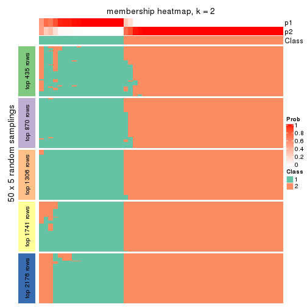
membership_heatmap(res, k = 3)

membership_heatmap(res, k = 4)
membership_heatmap(res, k = 5)
membership_heatmap(res, k = 6)

As soon as we have had the classes for columns, we can look for signatures which are significantly different between classes which can be candidate marks for certain classes. Following are the heatmaps for signatures.
Signature heatmaps where rows are scaled:
get_signatures(res, k = 2)
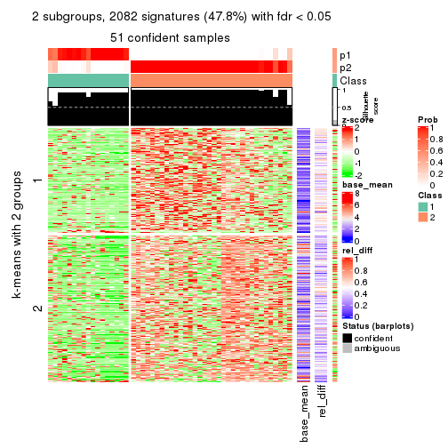
get_signatures(res, k = 3)
get_signatures(res, k = 4)
get_signatures(res, k = 5)
get_signatures(res, k = 6)
Signature heatmaps where rows are not scaled:
get_signatures(res, k = 2, scale_rows = FALSE)
get_signatures(res, k = 3, scale_rows = FALSE)
get_signatures(res, k = 4, scale_rows = FALSE)
get_signatures(res, k = 5, scale_rows = FALSE)
get_signatures(res, k = 6, scale_rows = FALSE)
Compare the overlap of signatures from different k:
compare_signatures(res)
get_signature() returns a data frame invisibly. TO get the list of signatures, the function
call should be assigned to a variable explicitly. In following code, if plot argument is set
to FALSE, no heatmap is plotted while only the differential analysis is performed.
# code only for demonstration
tb = get_signature(res, k = ..., plot = FALSE)
An example of the output of tb is:
#> which_row fdr mean_1 mean_2 scaled_mean_1 scaled_mean_2 km
#> 1 38 0.042760348 8.373488 9.131774 -0.5533452 0.5164555 1
#> 2 40 0.018707592 7.106213 8.469186 -0.6173731 0.5762149 1
#> 3 55 0.019134737 10.221463 11.207825 -0.6159697 0.5749050 1
#> 4 59 0.006059896 5.921854 7.869574 -0.6899429 0.6439467 1
#> 5 60 0.018055526 8.928898 10.211722 -0.6204761 0.5791110 1
#> 6 98 0.009384629 15.714769 14.887706 0.6635654 -0.6193277 2
...
The columns in tb are:
which_row: row indices corresponding to the input matrix.fdr: FDR for the differential test. mean_x: The mean value in group x.scaled_mean_x: The mean value in group x after rows are scaled.km: Row groups if k-means clustering is applied to rows.UMAP plot which shows how samples are separated.
dimension_reduction(res, k = 2, method = "UMAP")
dimension_reduction(res, k = 3, method = "UMAP")
dimension_reduction(res, k = 4, method = "UMAP")
dimension_reduction(res, k = 5, method = "UMAP")
dimension_reduction(res, k = 6, method = "UMAP")
Following heatmap shows how subgroups are split when increasing k:
collect_classes(res)
If matrix rows can be associated to genes, consider to use GO_Enrichment(res,
...) to perform function enrichment for the signature genes.
The object with results only for a single top-value method and a single partition method can be extracted as:
res = res_list["CV", "NMF"]
# you can also extract it by
# res = res_list["CV:NMF"]
A summary of res and all the functions that can be applied to it:
res
#> A 'ConsensusPartition' object with k = 2, 3, 4, 5, 6.
#> On a matrix with 4352 rows and 52 columns.
#> Top rows (435, 870, 1306, 1741, 2176) are extracted by 'CV' method.
#> Subgroups are detected by 'NMF' method.
#> Performed in total 1250 partitions by row resampling.
#> Best k for subgroups seems to be 2.
#>
#> Following methods can be applied to this 'ConsensusPartition' object:
#> [1] "cola_report" "collect_classes" "collect_plots"
#> [4] "collect_stats" "colnames" "compare_signatures"
#> [7] "consensus_heatmap" "dimension_reduction" "functional_enrichment"
#> [10] "get_anno_col" "get_anno" "get_classes"
#> [13] "get_consensus" "get_matrix" "get_membership"
#> [16] "get_param" "get_signatures" "get_stats"
#> [19] "is_best_k" "is_stable_k" "membership_heatmap"
#> [22] "ncol" "nrow" "plot_ecdf"
#> [25] "rownames" "select_partition_number" "show"
#> [28] "suggest_best_k" "test_to_known_factors"
collect_plots() function collects all the plots made from res for all k (number of partitions)
into one single page to provide an easy and fast comparison between different k.
collect_plots(res)
The plots are:
k and the heatmap of
predicted classes for each k.k.k.k.All the plots in panels can be made by individual functions and they are plotted later in this section.
select_partition_number() produces several plots showing different
statistics for choosing “optimized” k. There are following statistics:
k;k, the area increased is defined as \(A_k - A_{k-1}\).The detailed explanations of these statistics can be found in the cola vignette.
Generally speaking, lower PAC score, higher mean silhouette score or higher
concordance corresponds to better partition. Rand index and Jaccard index
measure how similar the current partition is compared to partition with k-1.
If they are too similar, we won't accept k is better than k-1.
select_partition_number(res)
The numeric values for all these statistics can be obtained by get_stats().
get_stats(res)
#> k 1-PAC mean_silhouette concordance area_increased Rand Jaccard
#> 2 2 0.559 0.764 0.901 0.5050 0.493 0.493
#> 3 3 0.304 0.515 0.740 0.2752 0.854 0.719
#> 4 4 0.326 0.369 0.640 0.1301 0.888 0.728
#> 5 5 0.382 0.314 0.579 0.0689 0.971 0.907
#> 6 6 0.435 0.267 0.521 0.0467 0.911 0.715
suggest_best_k() suggests the best \(k\) based on these statistics. The rules are as follows:
NA.suggest_best_k(res)
#> [1] 2
Following shows the table of the partitions (You need to click the show/hide
code output link to see it). The membership matrix (columns with name p*)
is inferred by
clue::cl_consensus()
function with the SE method. Basically the value in the membership matrix
represents the probability to belong to a certain group. The finall class
label for an item is determined with the group with highest probability it
belongs to.
In get_classes() function, the entropy is calculated from the membership
matrix and the silhouette score is calculated from the consensus matrix.
cbind(get_classes(res, k = 2), get_membership(res, k = 2))
#> class entropy silhouette p1 p2
#> SRR2042654 1 0.0000 0.8722 1.000 0.000
#> SRR2042653 1 0.9754 0.3744 0.592 0.408
#> SRR2042652 1 0.9996 0.1162 0.512 0.488
#> SRR2042650 2 0.0376 0.9006 0.004 0.996
#> SRR2042649 1 0.0000 0.8722 1.000 0.000
#> SRR2042647 2 0.0376 0.9002 0.004 0.996
#> SRR2042648 2 0.0938 0.8998 0.012 0.988
#> SRR2042646 1 0.0000 0.8722 1.000 0.000
#> SRR2042645 2 0.9608 0.3663 0.384 0.616
#> SRR2042644 1 0.0376 0.8719 0.996 0.004
#> SRR2042643 2 0.0938 0.8992 0.012 0.988
#> SRR2042642 2 0.0000 0.8994 0.000 1.000
#> SRR2042640 2 0.0672 0.9006 0.008 0.992
#> SRR2042641 2 0.9944 0.0984 0.456 0.544
#> SRR2042639 1 1.0000 -0.0217 0.500 0.500
#> SRR2042638 2 0.1414 0.8980 0.020 0.980
#> SRR2042637 1 0.0672 0.8711 0.992 0.008
#> SRR2042636 2 0.0938 0.8995 0.012 0.988
#> SRR2042634 2 0.5737 0.8017 0.136 0.864
#> SRR2042635 2 0.0376 0.9002 0.004 0.996
#> SRR2042633 1 0.0672 0.8711 0.992 0.008
#> SRR2042631 2 0.0376 0.9002 0.004 0.996
#> SRR2042632 1 0.0000 0.8722 1.000 0.000
#> SRR2042630 1 0.0000 0.8722 1.000 0.000
#> SRR2042629 2 0.0672 0.9004 0.008 0.992
#> SRR2042628 1 0.0000 0.8722 1.000 0.000
#> SRR2042626 2 0.0000 0.8994 0.000 1.000
#> SRR2042627 1 0.8955 0.5752 0.688 0.312
#> SRR2042624 1 0.0376 0.8718 0.996 0.004
#> SRR2042625 1 0.2043 0.8615 0.968 0.032
#> SRR2042623 1 0.1184 0.8692 0.984 0.016
#> SRR2042622 2 0.8955 0.5365 0.312 0.688
#> SRR2042620 2 0.0000 0.8994 0.000 1.000
#> SRR2042621 1 0.0000 0.8722 1.000 0.000
#> SRR2042619 2 0.4022 0.8544 0.080 0.920
#> SRR2042618 1 0.8327 0.6605 0.736 0.264
#> SRR2042617 1 0.9635 0.3635 0.612 0.388
#> SRR2042616 1 0.0376 0.8717 0.996 0.004
#> SRR2042615 1 0.0000 0.8722 1.000 0.000
#> SRR2042614 2 0.9933 0.0735 0.452 0.548
#> SRR2042613 1 0.0000 0.8722 1.000 0.000
#> SRR2042612 1 0.5294 0.8147 0.880 0.120
#> SRR2042610 2 0.0938 0.8995 0.012 0.988
#> SRR2042611 2 0.0000 0.8994 0.000 1.000
#> SRR2042607 2 0.1843 0.8925 0.028 0.972
#> SRR2042609 1 0.6712 0.7692 0.824 0.176
#> SRR2042608 1 0.4161 0.8356 0.916 0.084
#> SRR2042656 2 0.3733 0.8544 0.072 0.928
#> SRR2042658 1 0.0000 0.8722 1.000 0.000
#> SRR2042659 1 0.5842 0.7862 0.860 0.140
#> SRR2042657 2 0.0672 0.9006 0.008 0.992
#> SRR2042655 1 0.6148 0.7891 0.848 0.152
cbind(get_classes(res, k = 3), get_membership(res, k = 3))
#> class entropy silhouette p1 p2 p3
#> SRR2042654 3 0.4974 0.55557 0.236 0.000 0.764
#> SRR2042653 1 0.9405 0.52137 0.508 0.232 0.260
#> SRR2042652 1 0.9357 0.50861 0.516 0.248 0.236
#> SRR2042650 2 0.5578 0.60834 0.240 0.748 0.012
#> SRR2042649 3 0.1832 0.72423 0.036 0.008 0.956
#> SRR2042647 2 0.4002 0.68973 0.160 0.840 0.000
#> SRR2042648 2 0.3995 0.70462 0.116 0.868 0.016
#> SRR2042646 3 0.2492 0.72831 0.048 0.016 0.936
#> SRR2042645 1 0.9398 0.08308 0.428 0.400 0.172
#> SRR2042644 3 0.1878 0.72511 0.044 0.004 0.952
#> SRR2042643 2 0.6587 0.42490 0.352 0.632 0.016
#> SRR2042642 2 0.2066 0.70876 0.060 0.940 0.000
#> SRR2042640 2 0.3715 0.69290 0.128 0.868 0.004
#> SRR2042641 2 0.9978 -0.28804 0.304 0.360 0.336
#> SRR2042639 3 0.7821 0.34558 0.116 0.224 0.660
#> SRR2042638 2 0.3644 0.69719 0.124 0.872 0.004
#> SRR2042637 3 0.3802 0.70924 0.080 0.032 0.888
#> SRR2042636 2 0.6126 0.55025 0.352 0.644 0.004
#> SRR2042634 2 0.7391 0.50960 0.308 0.636 0.056
#> SRR2042635 2 0.2772 0.70720 0.080 0.916 0.004
#> SRR2042633 3 0.3742 0.70996 0.072 0.036 0.892
#> SRR2042631 2 0.4931 0.64028 0.212 0.784 0.004
#> SRR2042632 3 0.0592 0.72233 0.012 0.000 0.988
#> SRR2042630 3 0.1832 0.72458 0.036 0.008 0.956
#> SRR2042629 2 0.3340 0.69175 0.120 0.880 0.000
#> SRR2042628 3 0.2066 0.71931 0.060 0.000 0.940
#> SRR2042626 2 0.2959 0.70251 0.100 0.900 0.000
#> SRR2042627 3 0.8478 0.33011 0.204 0.180 0.616
#> SRR2042624 3 0.3755 0.69378 0.120 0.008 0.872
#> SRR2042625 3 0.8220 -0.06976 0.408 0.076 0.516
#> SRR2042623 3 0.6262 0.48142 0.284 0.020 0.696
#> SRR2042622 1 0.8929 0.10454 0.460 0.416 0.124
#> SRR2042620 2 0.5178 0.63185 0.256 0.744 0.000
#> SRR2042621 3 0.2200 0.72413 0.056 0.004 0.940
#> SRR2042619 2 0.7444 0.54138 0.220 0.684 0.096
#> SRR2042618 3 0.7372 0.50594 0.128 0.168 0.704
#> SRR2042617 1 0.9234 0.37552 0.476 0.160 0.364
#> SRR2042616 3 0.3670 0.71457 0.092 0.020 0.888
#> SRR2042615 3 0.1860 0.72665 0.052 0.000 0.948
#> SRR2042614 3 0.9162 -0.14404 0.152 0.368 0.480
#> SRR2042613 3 0.1765 0.72550 0.040 0.004 0.956
#> SRR2042612 3 0.8608 0.00432 0.412 0.100 0.488
#> SRR2042610 2 0.6673 0.52470 0.344 0.636 0.020
#> SRR2042611 2 0.2261 0.70631 0.068 0.932 0.000
#> SRR2042607 2 0.5406 0.65959 0.200 0.780 0.020
#> SRR2042609 1 0.9140 0.21357 0.452 0.144 0.404
#> SRR2042608 3 0.8122 0.34525 0.292 0.100 0.608
#> SRR2042656 2 0.8042 0.39580 0.248 0.636 0.116
#> SRR2042658 3 0.1031 0.72238 0.024 0.000 0.976
#> SRR2042659 3 0.7997 0.35546 0.236 0.120 0.644
#> SRR2042657 2 0.6398 0.45307 0.372 0.620 0.008
#> SRR2042655 3 0.8526 0.26024 0.308 0.120 0.572
cbind(get_classes(res, k = 4), get_membership(res, k = 4))
#> class entropy silhouette p1 p2 p3 p4
#> SRR2042654 1 0.654 0.2472 0.500 0.004 0.432 0.064
#> SRR2042653 1 0.799 0.2262 0.588 0.168 0.076 0.168
#> SRR2042652 1 0.716 0.3410 0.668 0.116 0.080 0.136
#> SRR2042650 2 0.715 0.2351 0.220 0.560 0.000 0.220
#> SRR2042649 3 0.313 0.6537 0.100 0.008 0.880 0.012
#> SRR2042647 2 0.447 0.4443 0.040 0.788 0.000 0.172
#> SRR2042648 2 0.503 0.4494 0.088 0.784 0.008 0.120
#> SRR2042646 3 0.449 0.6519 0.100 0.024 0.828 0.048
#> SRR2042645 4 0.906 0.2513 0.252 0.212 0.092 0.444
#> SRR2042644 3 0.379 0.6423 0.096 0.008 0.856 0.040
#> SRR2042643 4 0.778 0.3077 0.168 0.364 0.012 0.456
#> SRR2042642 2 0.231 0.5095 0.032 0.924 0.000 0.044
#> SRR2042640 2 0.546 0.4205 0.072 0.716 0.000 0.212
#> SRR2042641 2 0.985 -0.0692 0.220 0.320 0.272 0.188
#> SRR2042639 3 0.866 0.3264 0.108 0.168 0.524 0.200
#> SRR2042638 2 0.444 0.4926 0.060 0.820 0.008 0.112
#> SRR2042637 3 0.469 0.6179 0.132 0.028 0.808 0.032
#> SRR2042636 2 0.679 0.2912 0.128 0.576 0.000 0.296
#> SRR2042634 2 0.772 0.0838 0.124 0.556 0.040 0.280
#> SRR2042635 2 0.409 0.5040 0.080 0.840 0.004 0.076
#> SRR2042633 3 0.552 0.6120 0.092 0.040 0.776 0.092
#> SRR2042631 2 0.577 0.2409 0.056 0.652 0.000 0.292
#> SRR2042632 3 0.147 0.6552 0.052 0.000 0.948 0.000
#> SRR2042630 3 0.398 0.6429 0.108 0.000 0.836 0.056
#> SRR2042629 2 0.547 0.3928 0.068 0.712 0.000 0.220
#> SRR2042628 3 0.459 0.5945 0.116 0.000 0.800 0.084
#> SRR2042626 2 0.434 0.4549 0.052 0.808 0.000 0.140
#> SRR2042627 3 0.886 -0.0262 0.332 0.140 0.432 0.096
#> SRR2042624 3 0.555 0.5819 0.096 0.008 0.744 0.152
#> SRR2042625 1 0.830 0.4319 0.500 0.044 0.268 0.188
#> SRR2042623 1 0.649 0.3018 0.536 0.024 0.408 0.032
#> SRR2042622 1 0.845 -0.0261 0.496 0.284 0.064 0.156
#> SRR2042620 2 0.593 0.4347 0.116 0.692 0.000 0.192
#> SRR2042621 3 0.343 0.6480 0.060 0.004 0.876 0.060
#> SRR2042619 2 0.847 0.1441 0.232 0.496 0.052 0.220
#> SRR2042618 3 0.795 0.4361 0.148 0.144 0.604 0.104
#> SRR2042617 1 0.868 0.3527 0.504 0.084 0.188 0.224
#> SRR2042616 3 0.433 0.6500 0.084 0.028 0.840 0.048
#> SRR2042615 3 0.336 0.6614 0.084 0.004 0.876 0.036
#> SRR2042614 3 0.904 0.1551 0.112 0.268 0.456 0.164
#> SRR2042613 3 0.273 0.6598 0.060 0.004 0.908 0.028
#> SRR2042612 3 0.939 -0.2212 0.284 0.092 0.340 0.284
#> SRR2042610 2 0.730 0.0167 0.136 0.488 0.004 0.372
#> SRR2042611 2 0.340 0.5127 0.064 0.872 0.000 0.064
#> SRR2042607 2 0.715 0.2259 0.228 0.560 0.000 0.212
#> SRR2042609 1 0.800 0.4871 0.564 0.084 0.252 0.100
#> SRR2042608 3 0.898 0.1942 0.168 0.136 0.492 0.204
#> SRR2042656 2 0.832 0.2603 0.140 0.568 0.120 0.172
#> SRR2042658 3 0.185 0.6569 0.048 0.000 0.940 0.012
#> SRR2042659 3 0.889 -0.0802 0.272 0.100 0.468 0.160
#> SRR2042657 4 0.738 0.0879 0.140 0.424 0.004 0.432
#> SRR2042655 1 0.682 0.4240 0.608 0.068 0.296 0.028
cbind(get_classes(res, k = 5), get_membership(res, k = 5))
#> class entropy silhouette p1 p2 p3 p4 p5
#> SRR2042654 1 0.674 0.3480 0.556 0.000 0.276 0.052 0.116
#> SRR2042653 1 0.843 0.2859 0.468 0.116 0.036 0.188 0.192
#> SRR2042652 1 0.644 0.4192 0.676 0.072 0.036 0.152 0.064
#> SRR2042650 2 0.849 -0.0137 0.188 0.404 0.012 0.240 0.156
#> SRR2042649 3 0.424 0.5829 0.104 0.012 0.804 0.004 0.076
#> SRR2042647 2 0.567 0.3628 0.016 0.664 0.000 0.204 0.116
#> SRR2042648 2 0.560 0.4043 0.076 0.716 0.004 0.148 0.056
#> SRR2042646 3 0.485 0.5884 0.112 0.024 0.772 0.008 0.084
#> SRR2042645 4 0.912 0.1719 0.124 0.140 0.100 0.408 0.228
#> SRR2042644 3 0.502 0.5724 0.092 0.004 0.756 0.028 0.120
#> SRR2042643 4 0.595 0.2522 0.076 0.288 0.000 0.608 0.028
#> SRR2042642 2 0.275 0.4701 0.020 0.896 0.000 0.048 0.036
#> SRR2042640 2 0.568 0.3197 0.040 0.656 0.004 0.256 0.044
#> SRR2042641 5 0.897 0.2770 0.084 0.236 0.308 0.060 0.312
#> SRR2042639 3 0.805 0.2050 0.052 0.084 0.512 0.116 0.236
#> SRR2042638 2 0.488 0.4333 0.008 0.768 0.028 0.132 0.064
#> SRR2042637 3 0.562 0.5548 0.136 0.040 0.728 0.020 0.076
#> SRR2042636 2 0.837 0.0639 0.088 0.332 0.012 0.272 0.296
#> SRR2042634 2 0.827 0.0941 0.096 0.448 0.028 0.268 0.160
#> SRR2042635 2 0.435 0.4580 0.044 0.804 0.004 0.112 0.036
#> SRR2042633 3 0.611 0.5171 0.084 0.016 0.688 0.056 0.156
#> SRR2042631 2 0.587 0.2226 0.032 0.604 0.000 0.304 0.060
#> SRR2042632 3 0.240 0.5970 0.068 0.000 0.904 0.004 0.024
#> SRR2042630 3 0.502 0.4978 0.096 0.012 0.752 0.012 0.128
#> SRR2042629 2 0.549 0.3986 0.076 0.716 0.000 0.152 0.056
#> SRR2042628 3 0.510 0.5073 0.112 0.000 0.744 0.032 0.112
#> SRR2042626 2 0.445 0.4204 0.028 0.768 0.000 0.172 0.032
#> SRR2042627 3 0.909 -0.2181 0.316 0.144 0.324 0.056 0.160
#> SRR2042624 3 0.628 0.5189 0.104 0.012 0.676 0.068 0.140
#> SRR2042625 1 0.780 0.4138 0.532 0.016 0.156 0.164 0.132
#> SRR2042623 1 0.614 0.3503 0.648 0.024 0.228 0.020 0.080
#> SRR2042622 1 0.821 0.2560 0.508 0.216 0.056 0.104 0.116
#> SRR2042620 2 0.717 0.3183 0.088 0.556 0.000 0.188 0.168
#> SRR2042621 3 0.533 0.5560 0.108 0.008 0.740 0.032 0.112
#> SRR2042619 2 0.888 0.0191 0.220 0.408 0.044 0.160 0.168
#> SRR2042618 3 0.733 0.4100 0.116 0.132 0.612 0.044 0.096
#> SRR2042617 1 0.804 0.3930 0.496 0.036 0.088 0.248 0.132
#> SRR2042616 3 0.568 0.5524 0.128 0.044 0.716 0.008 0.104
#> SRR2042615 3 0.470 0.5764 0.112 0.000 0.768 0.020 0.100
#> SRR2042614 3 0.857 0.0457 0.088 0.276 0.444 0.088 0.104
#> SRR2042613 3 0.270 0.5949 0.048 0.004 0.896 0.004 0.048
#> SRR2042612 5 0.747 0.1649 0.144 0.020 0.228 0.064 0.544
#> SRR2042610 2 0.824 -0.0590 0.072 0.380 0.016 0.288 0.244
#> SRR2042611 2 0.272 0.4724 0.020 0.896 0.000 0.056 0.028
#> SRR2042607 2 0.796 0.0973 0.196 0.472 0.004 0.200 0.128
#> SRR2042609 1 0.757 0.4024 0.600 0.080 0.080 0.108 0.132
#> SRR2042608 3 0.828 -0.3780 0.084 0.100 0.408 0.056 0.352
#> SRR2042656 2 0.853 -0.0753 0.052 0.444 0.196 0.080 0.228
#> SRR2042658 3 0.279 0.5841 0.040 0.000 0.884 0.004 0.072
#> SRR2042659 3 0.872 -0.1987 0.324 0.048 0.352 0.084 0.192
#> SRR2042657 4 0.755 0.1699 0.076 0.312 0.008 0.476 0.128
#> SRR2042655 1 0.758 0.3714 0.600 0.100 0.128 0.072 0.100
cbind(get_classes(res, k = 6), get_membership(res, k = 6))
#> class entropy silhouette p1 p2 p3 p4 p5 p6
#> SRR2042654 1 0.610 0.15122 0.640 0.152 0.144 0.016 0.032 0.016
#> SRR2042653 1 0.886 0.11210 0.368 0.024 0.192 0.104 0.144 0.168
#> SRR2042652 1 0.620 0.27669 0.684 0.032 0.040 0.076 0.080 0.088
#> SRR2042650 4 0.903 -0.01473 0.160 0.020 0.132 0.328 0.208 0.152
#> SRR2042649 2 0.394 0.56974 0.064 0.808 0.100 0.016 0.008 0.004
#> SRR2042647 4 0.598 0.37665 0.012 0.000 0.068 0.640 0.128 0.152
#> SRR2042648 4 0.442 0.46052 0.028 0.008 0.036 0.788 0.028 0.112
#> SRR2042646 2 0.463 0.56032 0.044 0.756 0.152 0.020 0.020 0.008
#> SRR2042645 6 0.850 0.07868 0.140 0.036 0.252 0.076 0.092 0.404
#> SRR2042644 2 0.602 0.47076 0.080 0.600 0.260 0.004 0.020 0.036
#> SRR2042643 6 0.675 0.28853 0.100 0.004 0.032 0.216 0.076 0.572
#> SRR2042642 4 0.308 0.49349 0.016 0.000 0.012 0.860 0.088 0.024
#> SRR2042640 4 0.615 0.32109 0.044 0.012 0.024 0.588 0.052 0.280
#> SRR2042641 2 0.858 -0.07750 0.056 0.364 0.132 0.128 0.284 0.036
#> SRR2042639 2 0.827 0.18030 0.032 0.444 0.232 0.068 0.108 0.116
#> SRR2042638 4 0.630 0.38452 0.016 0.076 0.032 0.620 0.216 0.040
#> SRR2042637 2 0.615 0.51850 0.100 0.640 0.172 0.028 0.056 0.004
#> SRR2042636 5 0.699 -0.09471 0.060 0.004 0.040 0.316 0.488 0.092
#> SRR2042634 4 0.861 0.06649 0.104 0.028 0.088 0.404 0.204 0.172
#> SRR2042635 4 0.439 0.47964 0.028 0.008 0.016 0.792 0.088 0.068
#> SRR2042633 2 0.613 0.46894 0.036 0.580 0.296 0.036 0.040 0.012
#> SRR2042631 4 0.656 0.23863 0.048 0.000 0.060 0.540 0.060 0.292
#> SRR2042632 2 0.238 0.56820 0.040 0.896 0.056 0.000 0.008 0.000
#> SRR2042630 2 0.554 0.46143 0.040 0.696 0.152 0.008 0.084 0.020
#> SRR2042629 4 0.604 0.38998 0.036 0.000 0.100 0.656 0.064 0.144
#> SRR2042628 2 0.690 0.31433 0.100 0.544 0.248 0.004 0.056 0.048
#> SRR2042626 4 0.521 0.43036 0.028 0.000 0.044 0.712 0.056 0.160
#> SRR2042627 1 0.895 -0.03012 0.356 0.252 0.128 0.116 0.100 0.048
#> SRR2042624 2 0.575 0.37956 0.052 0.572 0.300 0.000 0.000 0.076
#> SRR2042625 1 0.760 0.22909 0.536 0.092 0.140 0.024 0.052 0.156
#> SRR2042623 1 0.608 0.18998 0.632 0.216 0.076 0.020 0.040 0.016
#> SRR2042622 1 0.822 0.09846 0.492 0.052 0.132 0.152 0.108 0.064
#> SRR2042620 4 0.620 0.29799 0.052 0.004 0.008 0.500 0.368 0.068
#> SRR2042621 2 0.562 0.45763 0.056 0.604 0.296 0.008 0.024 0.012
#> SRR2042619 4 0.959 -0.06277 0.188 0.064 0.140 0.272 0.176 0.160
#> SRR2042618 2 0.699 0.43190 0.060 0.604 0.088 0.116 0.116 0.016
#> SRR2042617 1 0.816 0.15777 0.476 0.072 0.152 0.036 0.080 0.184
#> SRR2042616 2 0.538 0.54100 0.040 0.728 0.108 0.040 0.076 0.008
#> SRR2042615 2 0.490 0.53235 0.096 0.744 0.112 0.008 0.032 0.008
#> SRR2042614 2 0.827 0.16203 0.048 0.420 0.132 0.272 0.076 0.052
#> SRR2042613 2 0.349 0.55926 0.044 0.832 0.104 0.008 0.008 0.004
#> SRR2042612 5 0.883 -0.00773 0.152 0.152 0.264 0.020 0.324 0.088
#> SRR2042610 5 0.829 -0.16522 0.044 0.004 0.132 0.268 0.316 0.236
#> SRR2042611 4 0.465 0.48646 0.032 0.008 0.016 0.768 0.120 0.056
#> SRR2042607 4 0.850 0.01463 0.188 0.008 0.056 0.344 0.172 0.232
#> SRR2042609 1 0.826 0.21801 0.480 0.128 0.184 0.076 0.076 0.056
#> SRR2042608 5 0.814 -0.06327 0.072 0.320 0.168 0.044 0.368 0.028
#> SRR2042656 4 0.843 0.00840 0.040 0.168 0.068 0.380 0.280 0.064
#> SRR2042658 2 0.432 0.52896 0.048 0.740 0.192 0.000 0.016 0.004
#> SRR2042659 3 0.873 0.00000 0.248 0.244 0.312 0.028 0.064 0.104
#> SRR2042657 6 0.726 0.19141 0.068 0.004 0.056 0.240 0.116 0.516
#> SRR2042655 1 0.755 0.26125 0.568 0.116 0.104 0.068 0.104 0.040
Heatmaps for the consensus matrix. It visualizes the probability of two samples to be in a same group.
consensus_heatmap(res, k = 2)
consensus_heatmap(res, k = 3)
consensus_heatmap(res, k = 4)
consensus_heatmap(res, k = 5)
consensus_heatmap(res, k = 6)
Heatmaps for the membership of samples in all partitions to see how consistent they are:
membership_heatmap(res, k = 2)
membership_heatmap(res, k = 3)
membership_heatmap(res, k = 4)
membership_heatmap(res, k = 5)
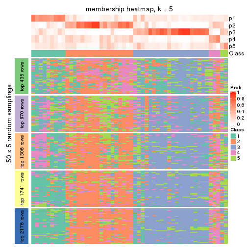
membership_heatmap(res, k = 6)
As soon as we have had the classes for columns, we can look for signatures which are significantly different between classes which can be candidate marks for certain classes. Following are the heatmaps for signatures.
Signature heatmaps where rows are scaled:
get_signatures(res, k = 2)
get_signatures(res, k = 3)
get_signatures(res, k = 4)
get_signatures(res, k = 5)

get_signatures(res, k = 6)

Signature heatmaps where rows are not scaled:
get_signatures(res, k = 2, scale_rows = FALSE)
get_signatures(res, k = 3, scale_rows = FALSE)
get_signatures(res, k = 4, scale_rows = FALSE)
get_signatures(res, k = 5, scale_rows = FALSE)

get_signatures(res, k = 6, scale_rows = FALSE)

Compare the overlap of signatures from different k:
compare_signatures(res)
get_signature() returns a data frame invisibly. TO get the list of signatures, the function
call should be assigned to a variable explicitly. In following code, if plot argument is set
to FALSE, no heatmap is plotted while only the differential analysis is performed.
# code only for demonstration
tb = get_signature(res, k = ..., plot = FALSE)
An example of the output of tb is:
#> which_row fdr mean_1 mean_2 scaled_mean_1 scaled_mean_2 km
#> 1 38 0.042760348 8.373488 9.131774 -0.5533452 0.5164555 1
#> 2 40 0.018707592 7.106213 8.469186 -0.6173731 0.5762149 1
#> 3 55 0.019134737 10.221463 11.207825 -0.6159697 0.5749050 1
#> 4 59 0.006059896 5.921854 7.869574 -0.6899429 0.6439467 1
#> 5 60 0.018055526 8.928898 10.211722 -0.6204761 0.5791110 1
#> 6 98 0.009384629 15.714769 14.887706 0.6635654 -0.6193277 2
...
The columns in tb are:
which_row: row indices corresponding to the input matrix.fdr: FDR for the differential test. mean_x: The mean value in group x.scaled_mean_x: The mean value in group x after rows are scaled.km: Row groups if k-means clustering is applied to rows.UMAP plot which shows how samples are separated.
dimension_reduction(res, k = 2, method = "UMAP")
dimension_reduction(res, k = 3, method = "UMAP")
dimension_reduction(res, k = 4, method = "UMAP")
dimension_reduction(res, k = 5, method = "UMAP")
dimension_reduction(res, k = 6, method = "UMAP")
Following heatmap shows how subgroups are split when increasing k:
collect_classes(res)
If matrix rows can be associated to genes, consider to use GO_Enrichment(res,
...) to perform function enrichment for the signature genes.
The object with results only for a single top-value method and a single partition method can be extracted as:
res = res_list["MAD", "hclust"]
# you can also extract it by
# res = res_list["MAD:hclust"]
A summary of res and all the functions that can be applied to it:
res
#> A 'ConsensusPartition' object with k = 2, 3, 4, 5, 6.
#> On a matrix with 4352 rows and 52 columns.
#> Top rows (435, 870, 1306, 1741, 2176) are extracted by 'MAD' method.
#> Subgroups are detected by 'hclust' method.
#> Performed in total 1250 partitions by row resampling.
#> Best k for subgroups seems to be 2.
#>
#> Following methods can be applied to this 'ConsensusPartition' object:
#> [1] "cola_report" "collect_classes" "collect_plots"
#> [4] "collect_stats" "colnames" "compare_signatures"
#> [7] "consensus_heatmap" "dimension_reduction" "functional_enrichment"
#> [10] "get_anno_col" "get_anno" "get_classes"
#> [13] "get_consensus" "get_matrix" "get_membership"
#> [16] "get_param" "get_signatures" "get_stats"
#> [19] "is_best_k" "is_stable_k" "membership_heatmap"
#> [22] "ncol" "nrow" "plot_ecdf"
#> [25] "rownames" "select_partition_number" "show"
#> [28] "suggest_best_k" "test_to_known_factors"
collect_plots() function collects all the plots made from res for all k (number of partitions)
into one single page to provide an easy and fast comparison between different k.
collect_plots(res)
The plots are:
k and the heatmap of
predicted classes for each k.k.k.k.All the plots in panels can be made by individual functions and they are plotted later in this section.
select_partition_number() produces several plots showing different
statistics for choosing “optimized” k. There are following statistics:
k;k, the area increased is defined as \(A_k - A_{k-1}\).The detailed explanations of these statistics can be found in the cola vignette.
Generally speaking, lower PAC score, higher mean silhouette score or higher
concordance corresponds to better partition. Rand index and Jaccard index
measure how similar the current partition is compared to partition with k-1.
If they are too similar, we won't accept k is better than k-1.
select_partition_number(res)
The numeric values for all these statistics can be obtained by get_stats().
get_stats(res)
#> k 1-PAC mean_silhouette concordance area_increased Rand Jaccard
#> 2 2 1.000 0.979 0.989 0.4233 0.581 0.581
#> 3 3 0.656 0.603 0.775 0.5039 0.784 0.629
#> 4 4 0.617 0.672 0.801 0.0561 0.825 0.595
#> 5 5 0.634 0.496 0.777 0.0432 0.964 0.888
#> 6 6 0.623 0.494 0.775 0.0264 0.962 0.868
suggest_best_k() suggests the best \(k\) based on these statistics. The rules are as follows:
NA.suggest_best_k(res)
#> [1] 2
Following shows the table of the partitions (You need to click the show/hide
code output link to see it). The membership matrix (columns with name p*)
is inferred by
clue::cl_consensus()
function with the SE method. Basically the value in the membership matrix
represents the probability to belong to a certain group. The finall class
label for an item is determined with the group with highest probability it
belongs to.
In get_classes() function, the entropy is calculated from the membership
matrix and the silhouette score is calculated from the consensus matrix.
cbind(get_classes(res, k = 2), get_membership(res, k = 2))
#> class entropy silhouette p1 p2
#> SRR2042654 1 0.0000 0.991 1.000 0.000
#> SRR2042653 1 0.0000 0.991 1.000 0.000
#> SRR2042652 1 0.0000 0.991 1.000 0.000
#> SRR2042650 1 0.1843 0.970 0.972 0.028
#> SRR2042649 2 0.0000 0.987 0.000 1.000
#> SRR2042647 2 0.0376 0.986 0.004 0.996
#> SRR2042648 2 0.0000 0.987 0.000 1.000
#> SRR2042646 2 0.1414 0.975 0.020 0.980
#> SRR2042645 2 0.1184 0.979 0.016 0.984
#> SRR2042644 2 0.0000 0.987 0.000 1.000
#> SRR2042643 1 0.4161 0.912 0.916 0.084
#> SRR2042642 2 0.0000 0.987 0.000 1.000
#> SRR2042640 2 0.0000 0.987 0.000 1.000
#> SRR2042641 2 0.0000 0.987 0.000 1.000
#> SRR2042639 2 0.0000 0.987 0.000 1.000
#> SRR2042638 2 0.0000 0.987 0.000 1.000
#> SRR2042637 2 0.0000 0.987 0.000 1.000
#> SRR2042636 2 0.2948 0.948 0.052 0.948
#> SRR2042634 2 0.6438 0.816 0.164 0.836
#> SRR2042635 2 0.0000 0.987 0.000 1.000
#> SRR2042633 2 0.0000 0.987 0.000 1.000
#> SRR2042631 2 0.0376 0.986 0.004 0.996
#> SRR2042632 2 0.0000 0.987 0.000 1.000
#> SRR2042630 2 0.0000 0.987 0.000 1.000
#> SRR2042629 2 0.0376 0.986 0.004 0.996
#> SRR2042628 2 0.0938 0.981 0.012 0.988
#> SRR2042626 2 0.0000 0.987 0.000 1.000
#> SRR2042627 1 0.0000 0.991 1.000 0.000
#> SRR2042624 2 0.1414 0.975 0.020 0.980
#> SRR2042625 1 0.0000 0.991 1.000 0.000
#> SRR2042623 1 0.0000 0.991 1.000 0.000
#> SRR2042622 1 0.0000 0.991 1.000 0.000
#> SRR2042620 2 0.0376 0.986 0.004 0.996
#> SRR2042621 2 0.0376 0.986 0.004 0.996
#> SRR2042619 2 0.0376 0.986 0.004 0.996
#> SRR2042618 2 0.0000 0.987 0.000 1.000
#> SRR2042617 1 0.0376 0.989 0.996 0.004
#> SRR2042616 2 0.0000 0.987 0.000 1.000
#> SRR2042615 2 0.0000 0.987 0.000 1.000
#> SRR2042614 2 0.0000 0.987 0.000 1.000
#> SRR2042613 2 0.0000 0.987 0.000 1.000
#> SRR2042612 1 0.0938 0.983 0.988 0.012
#> SRR2042610 1 0.0000 0.991 1.000 0.000
#> SRR2042611 2 0.0000 0.987 0.000 1.000
#> SRR2042607 2 0.0376 0.986 0.004 0.996
#> SRR2042609 1 0.0000 0.991 1.000 0.000
#> SRR2042608 2 0.0000 0.987 0.000 1.000
#> SRR2042656 2 0.0000 0.987 0.000 1.000
#> SRR2042658 2 0.4298 0.911 0.088 0.912
#> SRR2042659 1 0.0376 0.989 0.996 0.004
#> SRR2042657 2 0.3114 0.944 0.056 0.944
#> SRR2042655 1 0.0000 0.991 1.000 0.000
cbind(get_classes(res, k = 3), get_membership(res, k = 3))
#> class entropy silhouette p1 p2 p3
#> SRR2042654 1 0.0000 0.989 1.000 0.000 0.000
#> SRR2042653 1 0.0237 0.988 0.996 0.000 0.004
#> SRR2042652 1 0.0000 0.989 1.000 0.000 0.000
#> SRR2042650 1 0.1337 0.971 0.972 0.016 0.012
#> SRR2042649 3 0.6307 0.946 0.000 0.488 0.512
#> SRR2042647 2 0.6180 0.540 0.000 0.584 0.416
#> SRR2042648 2 0.0000 0.446 0.000 1.000 0.000
#> SRR2042646 3 0.6936 0.933 0.016 0.460 0.524
#> SRR2042645 2 0.6587 0.534 0.008 0.568 0.424
#> SRR2042644 2 0.5016 -0.178 0.000 0.760 0.240
#> SRR2042643 1 0.3832 0.906 0.888 0.036 0.076
#> SRR2042642 2 0.0000 0.446 0.000 1.000 0.000
#> SRR2042640 2 0.3116 0.493 0.000 0.892 0.108
#> SRR2042641 3 0.6305 0.944 0.000 0.484 0.516
#> SRR2042639 2 0.5098 -0.124 0.000 0.752 0.248
#> SRR2042638 2 0.0000 0.446 0.000 1.000 0.000
#> SRR2042637 3 0.6309 0.938 0.000 0.496 0.504
#> SRR2042636 2 0.7346 0.518 0.032 0.536 0.432
#> SRR2042634 2 0.9285 0.444 0.160 0.448 0.392
#> SRR2042635 2 0.0000 0.446 0.000 1.000 0.000
#> SRR2042633 2 0.6267 -0.799 0.000 0.548 0.452
#> SRR2042631 2 0.6192 0.539 0.000 0.580 0.420
#> SRR2042632 3 0.6305 0.947 0.000 0.484 0.516
#> SRR2042630 3 0.6307 0.940 0.000 0.488 0.512
#> SRR2042629 2 0.5968 0.541 0.000 0.636 0.364
#> SRR2042628 3 0.6672 0.937 0.008 0.472 0.520
#> SRR2042626 2 0.0000 0.446 0.000 1.000 0.000
#> SRR2042627 1 0.0237 0.988 0.996 0.000 0.004
#> SRR2042624 3 0.6936 0.933 0.016 0.460 0.524
#> SRR2042625 1 0.0237 0.988 0.996 0.000 0.004
#> SRR2042623 1 0.0000 0.989 1.000 0.000 0.000
#> SRR2042622 1 0.0000 0.989 1.000 0.000 0.000
#> SRR2042620 2 0.6192 0.539 0.000 0.580 0.420
#> SRR2042621 3 0.6302 0.939 0.000 0.480 0.520
#> SRR2042619 2 0.6192 0.539 0.000 0.580 0.420
#> SRR2042618 2 0.5016 -0.178 0.000 0.760 0.240
#> SRR2042617 1 0.0237 0.988 0.996 0.000 0.004
#> SRR2042616 2 0.4452 -0.011 0.000 0.808 0.192
#> SRR2042615 2 0.4974 -0.163 0.000 0.764 0.236
#> SRR2042614 2 0.5016 -0.178 0.000 0.760 0.240
#> SRR2042613 2 0.6252 -0.838 0.000 0.556 0.444
#> SRR2042612 1 0.1031 0.978 0.976 0.000 0.024
#> SRR2042610 1 0.0000 0.989 1.000 0.000 0.000
#> SRR2042611 2 0.0000 0.446 0.000 1.000 0.000
#> SRR2042607 2 0.6140 0.542 0.000 0.596 0.404
#> SRR2042609 1 0.0000 0.989 1.000 0.000 0.000
#> SRR2042608 3 0.6305 0.944 0.000 0.484 0.516
#> SRR2042656 2 0.0892 0.458 0.000 0.980 0.020
#> SRR2042658 3 0.8157 0.814 0.076 0.384 0.540
#> SRR2042659 1 0.0424 0.987 0.992 0.000 0.008
#> SRR2042657 2 0.7657 0.507 0.044 0.508 0.448
#> SRR2042655 1 0.0000 0.989 1.000 0.000 0.000
cbind(get_classes(res, k = 4), get_membership(res, k = 4))
#> class entropy silhouette p1 p2 p3 p4
#> SRR2042654 1 0.0000 0.962 1.000 0.000 NA 0.000
#> SRR2042653 1 0.0707 0.960 0.980 0.000 NA 0.000
#> SRR2042652 1 0.0000 0.962 1.000 0.000 NA 0.000
#> SRR2042650 1 0.1824 0.942 0.936 0.000 NA 0.004
#> SRR2042649 2 0.1284 0.742 0.000 0.964 NA 0.012
#> SRR2042647 4 0.1356 0.653 0.000 0.032 NA 0.960
#> SRR2042648 4 0.4985 0.342 0.000 0.468 NA 0.532
#> SRR2042646 2 0.4230 0.657 0.008 0.776 NA 0.004
#> SRR2042645 4 0.4070 0.611 0.000 0.044 NA 0.824
#> SRR2042644 2 0.4331 0.498 0.000 0.712 NA 0.288
#> SRR2042643 1 0.5355 0.697 0.620 0.000 NA 0.020
#> SRR2042642 4 0.4985 0.342 0.000 0.468 NA 0.532
#> SRR2042640 4 0.4713 0.469 0.000 0.360 NA 0.640
#> SRR2042641 2 0.1629 0.741 0.000 0.952 NA 0.024
#> SRR2042639 2 0.4500 0.451 0.000 0.684 NA 0.316
#> SRR2042638 4 0.4985 0.342 0.000 0.468 NA 0.532
#> SRR2042637 2 0.1411 0.743 0.000 0.960 NA 0.020
#> SRR2042636 4 0.3831 0.614 0.012 0.012 NA 0.836
#> SRR2042634 4 0.6570 0.455 0.068 0.024 NA 0.640
#> SRR2042635 4 0.4985 0.342 0.000 0.468 NA 0.532
#> SRR2042633 2 0.2773 0.710 0.000 0.880 NA 0.116
#> SRR2042631 4 0.1256 0.652 0.000 0.028 NA 0.964
#> SRR2042632 2 0.1151 0.741 0.000 0.968 NA 0.008
#> SRR2042630 2 0.1733 0.741 0.000 0.948 NA 0.028
#> SRR2042629 4 0.2714 0.638 0.000 0.112 NA 0.884
#> SRR2042628 2 0.4509 0.604 0.000 0.708 NA 0.004
#> SRR2042626 4 0.4985 0.342 0.000 0.468 NA 0.532
#> SRR2042627 1 0.0707 0.960 0.980 0.000 NA 0.000
#> SRR2042624 2 0.4374 0.648 0.008 0.760 NA 0.004
#> SRR2042625 1 0.1211 0.954 0.960 0.000 NA 0.000
#> SRR2042623 1 0.0000 0.962 1.000 0.000 NA 0.000
#> SRR2042622 1 0.0188 0.961 0.996 0.000 NA 0.000
#> SRR2042620 4 0.1256 0.652 0.000 0.028 NA 0.964
#> SRR2042621 2 0.4011 0.665 0.000 0.784 NA 0.008
#> SRR2042619 4 0.1256 0.652 0.000 0.028 NA 0.964
#> SRR2042618 2 0.4331 0.498 0.000 0.712 NA 0.288
#> SRR2042617 1 0.0817 0.958 0.976 0.000 NA 0.000
#> SRR2042616 2 0.4605 0.374 0.000 0.664 NA 0.336
#> SRR2042615 2 0.4356 0.490 0.000 0.708 NA 0.292
#> SRR2042614 2 0.4331 0.498 0.000 0.712 NA 0.288
#> SRR2042613 2 0.2011 0.721 0.000 0.920 NA 0.080
#> SRR2042612 1 0.3610 0.854 0.800 0.000 NA 0.000
#> SRR2042610 1 0.0592 0.960 0.984 0.000 NA 0.000
#> SRR2042611 4 0.4985 0.342 0.000 0.468 NA 0.532
#> SRR2042607 4 0.1489 0.653 0.000 0.044 NA 0.952
#> SRR2042609 1 0.0000 0.962 1.000 0.000 NA 0.000
#> SRR2042608 2 0.1629 0.741 0.000 0.952 NA 0.024
#> SRR2042656 4 0.4967 0.363 0.000 0.452 NA 0.548
#> SRR2042658 2 0.4842 0.627 0.048 0.760 NA 0.000
#> SRR2042659 1 0.0817 0.959 0.976 0.000 NA 0.000
#> SRR2042657 4 0.3765 0.568 0.004 0.004 NA 0.812
#> SRR2042655 1 0.0336 0.961 0.992 0.000 NA 0.000
cbind(get_classes(res, k = 5), get_membership(res, k = 5))
#> class entropy silhouette p1 p2 p3 p4 p5
#> SRR2042654 1 0.0000 0.910 1.000 0.000 0.000 0.000 0.000
#> SRR2042653 1 0.1168 0.897 0.960 0.000 0.008 0.000 0.032
#> SRR2042652 1 0.0000 0.910 1.000 0.000 0.000 0.000 0.000
#> SRR2042650 1 0.2012 0.841 0.920 0.000 0.020 0.000 0.060
#> SRR2042649 2 0.1357 0.536 0.000 0.948 0.048 0.000 0.004
#> SRR2042647 4 0.0880 0.619 0.000 0.032 0.000 0.968 0.000
#> SRR2042648 4 0.4306 0.298 0.000 0.492 0.000 0.508 0.000
#> SRR2042646 2 0.4452 -0.797 0.004 0.500 0.496 0.000 0.000
#> SRR2042645 4 0.4452 0.530 0.000 0.032 0.036 0.776 0.156
#> SRR2042644 2 0.3586 0.496 0.000 0.736 0.000 0.264 0.000
#> SRR2042643 5 0.4403 0.000 0.436 0.000 0.000 0.004 0.560
#> SRR2042642 4 0.4306 0.298 0.000 0.492 0.000 0.508 0.000
#> SRR2042640 4 0.4126 0.427 0.000 0.380 0.000 0.620 0.000
#> SRR2042641 2 0.1569 0.539 0.000 0.944 0.044 0.004 0.008
#> SRR2042639 2 0.3774 0.448 0.000 0.704 0.000 0.296 0.000
#> SRR2042638 4 0.4306 0.298 0.000 0.492 0.000 0.508 0.000
#> SRR2042637 2 0.1757 0.547 0.000 0.936 0.048 0.012 0.004
#> SRR2042636 4 0.4372 0.507 0.000 0.008 0.040 0.752 0.200
#> SRR2042634 4 0.7113 0.153 0.036 0.008 0.184 0.536 0.236
#> SRR2042635 4 0.4306 0.298 0.000 0.492 0.000 0.508 0.000
#> SRR2042633 2 0.2629 0.559 0.000 0.880 0.012 0.104 0.004
#> SRR2042631 4 0.0794 0.618 0.000 0.028 0.000 0.972 0.000
#> SRR2042632 2 0.1430 0.530 0.000 0.944 0.052 0.000 0.004
#> SRR2042630 2 0.1695 0.544 0.000 0.940 0.044 0.008 0.008
#> SRR2042629 4 0.2835 0.607 0.000 0.112 0.016 0.868 0.004
#> SRR2042628 3 0.4015 0.752 0.000 0.348 0.652 0.000 0.000
#> SRR2042626 4 0.4306 0.298 0.000 0.492 0.000 0.508 0.000
#> SRR2042627 1 0.1168 0.897 0.960 0.000 0.008 0.000 0.032
#> SRR2042624 3 0.4440 0.708 0.004 0.468 0.528 0.000 0.000
#> SRR2042625 1 0.1697 0.859 0.932 0.000 0.008 0.000 0.060
#> SRR2042623 1 0.0000 0.910 1.000 0.000 0.000 0.000 0.000
#> SRR2042622 1 0.0162 0.909 0.996 0.000 0.000 0.000 0.004
#> SRR2042620 4 0.0794 0.618 0.000 0.028 0.000 0.972 0.000
#> SRR2042621 2 0.4304 -0.776 0.000 0.516 0.484 0.000 0.000
#> SRR2042619 4 0.0955 0.617 0.000 0.028 0.004 0.968 0.000
#> SRR2042618 2 0.3586 0.496 0.000 0.736 0.000 0.264 0.000
#> SRR2042617 1 0.0880 0.899 0.968 0.000 0.000 0.000 0.032
#> SRR2042616 2 0.3857 0.382 0.000 0.688 0.000 0.312 0.000
#> SRR2042615 2 0.3612 0.488 0.000 0.732 0.000 0.268 0.000
#> SRR2042614 2 0.3586 0.496 0.000 0.736 0.000 0.264 0.000
#> SRR2042613 2 0.1809 0.570 0.000 0.928 0.012 0.060 0.000
#> SRR2042612 1 0.5637 -0.356 0.604 0.000 0.112 0.000 0.284
#> SRR2042610 1 0.0865 0.901 0.972 0.000 0.004 0.000 0.024
#> SRR2042611 4 0.4306 0.298 0.000 0.492 0.000 0.508 0.000
#> SRR2042607 4 0.1197 0.620 0.000 0.048 0.000 0.952 0.000
#> SRR2042609 1 0.0000 0.910 1.000 0.000 0.000 0.000 0.000
#> SRR2042608 2 0.1757 0.531 0.000 0.936 0.048 0.004 0.012
#> SRR2042656 4 0.4300 0.317 0.000 0.476 0.000 0.524 0.000
#> SRR2042658 2 0.5222 -0.439 0.016 0.600 0.356 0.000 0.028
#> SRR2042659 1 0.0898 0.901 0.972 0.000 0.008 0.000 0.020
#> SRR2042657 4 0.4100 0.459 0.004 0.004 0.020 0.760 0.212
#> SRR2042655 1 0.0324 0.909 0.992 0.000 0.004 0.000 0.004
cbind(get_classes(res, k = 6), get_membership(res, k = 6))
#> class entropy silhouette p1 p2 p3 p4 p5 p6
#> SRR2042654 1 0.0000 0.897 1.000 0.000 0.000 0.000 0.000 0.000
#> SRR2042653 1 0.1901 0.871 0.924 0.000 0.008 0.000 0.028 0.040
#> SRR2042652 1 0.0000 0.897 1.000 0.000 0.000 0.000 0.000 0.000
#> SRR2042650 1 0.2144 0.852 0.908 0.000 0.004 0.000 0.040 0.048
#> SRR2042649 2 0.1152 0.635 0.000 0.952 0.044 0.000 0.000 0.004
#> SRR2042647 4 0.0777 0.311 0.000 0.024 0.000 0.972 0.000 0.004
#> SRR2042648 4 0.3864 0.295 0.000 0.480 0.000 0.520 0.000 0.000
#> SRR2042646 3 0.3742 0.831 0.000 0.348 0.648 0.004 0.000 0.000
#> SRR2042645 4 0.4078 -0.137 0.000 0.016 0.004 0.700 0.008 0.272
#> SRR2042644 2 0.3534 0.550 0.000 0.716 0.008 0.276 0.000 0.000
#> SRR2042643 5 0.3151 0.000 0.252 0.000 0.000 0.000 0.748 0.000
#> SRR2042642 4 0.3864 0.295 0.000 0.480 0.000 0.520 0.000 0.000
#> SRR2042640 4 0.3672 0.424 0.000 0.368 0.000 0.632 0.000 0.000
#> SRR2042641 2 0.1168 0.637 0.000 0.956 0.028 0.000 0.000 0.016
#> SRR2042639 2 0.3784 0.502 0.000 0.680 0.012 0.308 0.000 0.000
#> SRR2042638 4 0.3864 0.295 0.000 0.480 0.000 0.520 0.000 0.000
#> SRR2042637 2 0.1693 0.649 0.000 0.932 0.044 0.020 0.000 0.004
#> SRR2042636 4 0.5047 -0.271 0.000 0.000 0.028 0.684 0.188 0.100
#> SRR2042634 6 0.6786 0.000 0.028 0.012 0.036 0.416 0.088 0.420
#> SRR2042635 4 0.3864 0.295 0.000 0.480 0.000 0.520 0.000 0.000
#> SRR2042633 2 0.2971 0.652 0.000 0.848 0.024 0.116 0.000 0.012
#> SRR2042631 4 0.0692 0.305 0.000 0.020 0.000 0.976 0.000 0.004
#> SRR2042632 2 0.1429 0.628 0.000 0.940 0.052 0.004 0.000 0.004
#> SRR2042630 2 0.1313 0.641 0.000 0.952 0.028 0.004 0.000 0.016
#> SRR2042629 4 0.2619 0.344 0.000 0.096 0.012 0.876 0.004 0.012
#> SRR2042628 3 0.2797 0.613 0.000 0.140 0.844 0.004 0.008 0.004
#> SRR2042626 4 0.3864 0.295 0.000 0.480 0.000 0.520 0.000 0.000
#> SRR2042627 1 0.1821 0.874 0.928 0.000 0.008 0.000 0.024 0.040
#> SRR2042624 3 0.3584 0.846 0.000 0.308 0.688 0.004 0.000 0.000
#> SRR2042625 1 0.2611 0.814 0.880 0.000 0.012 0.000 0.080 0.028
#> SRR2042623 1 0.0000 0.897 1.000 0.000 0.000 0.000 0.000 0.000
#> SRR2042622 1 0.0146 0.897 0.996 0.000 0.000 0.000 0.000 0.004
#> SRR2042620 4 0.0692 0.305 0.000 0.020 0.000 0.976 0.000 0.004
#> SRR2042621 3 0.4089 0.809 0.000 0.372 0.616 0.004 0.004 0.004
#> SRR2042619 4 0.0806 0.303 0.000 0.020 0.000 0.972 0.000 0.008
#> SRR2042618 2 0.3534 0.550 0.000 0.716 0.008 0.276 0.000 0.000
#> SRR2042617 1 0.1176 0.887 0.956 0.000 0.000 0.000 0.020 0.024
#> SRR2042616 2 0.3758 0.430 0.000 0.668 0.008 0.324 0.000 0.000
#> SRR2042615 2 0.3555 0.542 0.000 0.712 0.008 0.280 0.000 0.000
#> SRR2042614 2 0.3534 0.550 0.000 0.716 0.008 0.276 0.000 0.000
#> SRR2042613 2 0.2066 0.669 0.000 0.904 0.024 0.072 0.000 0.000
#> SRR2042612 1 0.6976 -0.454 0.420 0.000 0.072 0.000 0.252 0.256
#> SRR2042610 1 0.1410 0.883 0.944 0.000 0.004 0.000 0.008 0.044
#> SRR2042611 4 0.3864 0.295 0.000 0.480 0.000 0.520 0.000 0.000
#> SRR2042607 4 0.0935 0.324 0.000 0.032 0.004 0.964 0.000 0.000
#> SRR2042609 1 0.0000 0.897 1.000 0.000 0.000 0.000 0.000 0.000
#> SRR2042608 2 0.1390 0.628 0.000 0.948 0.032 0.000 0.004 0.016
#> SRR2042656 4 0.3854 0.314 0.000 0.464 0.000 0.536 0.000 0.000
#> SRR2042658 2 0.4665 -0.447 0.008 0.536 0.432 0.000 0.020 0.004
#> SRR2042659 1 0.0976 0.892 0.968 0.000 0.008 0.000 0.016 0.008
#> SRR2042657 4 0.4176 -0.242 0.000 0.000 0.000 0.716 0.064 0.220
#> SRR2042655 1 0.0551 0.895 0.984 0.000 0.008 0.000 0.004 0.004
Heatmaps for the consensus matrix. It visualizes the probability of two samples to be in a same group.
consensus_heatmap(res, k = 2)
consensus_heatmap(res, k = 3)
consensus_heatmap(res, k = 4)

consensus_heatmap(res, k = 5)
consensus_heatmap(res, k = 6)
Heatmaps for the membership of samples in all partitions to see how consistent they are:
membership_heatmap(res, k = 2)

membership_heatmap(res, k = 3)
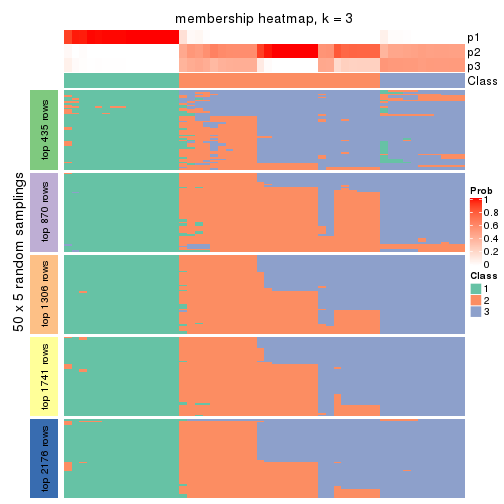
membership_heatmap(res, k = 4)
membership_heatmap(res, k = 5)
membership_heatmap(res, k = 6)
As soon as we have had the classes for columns, we can look for signatures which are significantly different between classes which can be candidate marks for certain classes. Following are the heatmaps for signatures.
Signature heatmaps where rows are scaled:
get_signatures(res, k = 2)
get_signatures(res, k = 3)
get_signatures(res, k = 4)
get_signatures(res, k = 5)
get_signatures(res, k = 6)
Signature heatmaps where rows are not scaled:
get_signatures(res, k = 2, scale_rows = FALSE)
get_signatures(res, k = 3, scale_rows = FALSE)
get_signatures(res, k = 4, scale_rows = FALSE)
get_signatures(res, k = 5, scale_rows = FALSE)
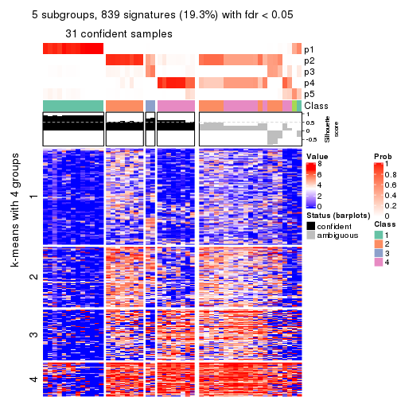
get_signatures(res, k = 6, scale_rows = FALSE)
Compare the overlap of signatures from different k:
compare_signatures(res)

get_signature() returns a data frame invisibly. TO get the list of signatures, the function
call should be assigned to a variable explicitly. In following code, if plot argument is set
to FALSE, no heatmap is plotted while only the differential analysis is performed.
# code only for demonstration
tb = get_signature(res, k = ..., plot = FALSE)
An example of the output of tb is:
#> which_row fdr mean_1 mean_2 scaled_mean_1 scaled_mean_2 km
#> 1 38 0.042760348 8.373488 9.131774 -0.5533452 0.5164555 1
#> 2 40 0.018707592 7.106213 8.469186 -0.6173731 0.5762149 1
#> 3 55 0.019134737 10.221463 11.207825 -0.6159697 0.5749050 1
#> 4 59 0.006059896 5.921854 7.869574 -0.6899429 0.6439467 1
#> 5 60 0.018055526 8.928898 10.211722 -0.6204761 0.5791110 1
#> 6 98 0.009384629 15.714769 14.887706 0.6635654 -0.6193277 2
...
The columns in tb are:
which_row: row indices corresponding to the input matrix.fdr: FDR for the differential test. mean_x: The mean value in group x.scaled_mean_x: The mean value in group x after rows are scaled.km: Row groups if k-means clustering is applied to rows.UMAP plot which shows how samples are separated.
dimension_reduction(res, k = 2, method = "UMAP")
dimension_reduction(res, k = 3, method = "UMAP")
dimension_reduction(res, k = 4, method = "UMAP")
dimension_reduction(res, k = 5, method = "UMAP")
dimension_reduction(res, k = 6, method = "UMAP")
Following heatmap shows how subgroups are split when increasing k:
collect_classes(res)
If matrix rows can be associated to genes, consider to use GO_Enrichment(res,
...) to perform function enrichment for the signature genes.
The object with results only for a single top-value method and a single partition method can be extracted as:
res = res_list["MAD", "kmeans"]
# you can also extract it by
# res = res_list["MAD:kmeans"]
A summary of res and all the functions that can be applied to it:
res
#> A 'ConsensusPartition' object with k = 2, 3, 4, 5, 6.
#> On a matrix with 4352 rows and 52 columns.
#> Top rows (435, 870, 1306, 1741, 2176) are extracted by 'MAD' method.
#> Subgroups are detected by 'kmeans' method.
#> Performed in total 1250 partitions by row resampling.
#> Best k for subgroups seems to be 2.
#>
#> Following methods can be applied to this 'ConsensusPartition' object:
#> [1] "cola_report" "collect_classes" "collect_plots"
#> [4] "collect_stats" "colnames" "compare_signatures"
#> [7] "consensus_heatmap" "dimension_reduction" "functional_enrichment"
#> [10] "get_anno_col" "get_anno" "get_classes"
#> [13] "get_consensus" "get_matrix" "get_membership"
#> [16] "get_param" "get_signatures" "get_stats"
#> [19] "is_best_k" "is_stable_k" "membership_heatmap"
#> [22] "ncol" "nrow" "plot_ecdf"
#> [25] "rownames" "select_partition_number" "show"
#> [28] "suggest_best_k" "test_to_known_factors"
collect_plots() function collects all the plots made from res for all k (number of partitions)
into one single page to provide an easy and fast comparison between different k.
collect_plots(res)
The plots are:
k and the heatmap of
predicted classes for each k.k.k.k.All the plots in panels can be made by individual functions and they are plotted later in this section.
select_partition_number() produces several plots showing different
statistics for choosing “optimized” k. There are following statistics:
k;k, the area increased is defined as \(A_k - A_{k-1}\).The detailed explanations of these statistics can be found in the cola vignette.
Generally speaking, lower PAC score, higher mean silhouette score or higher
concordance corresponds to better partition. Rand index and Jaccard index
measure how similar the current partition is compared to partition with k-1.
If they are too similar, we won't accept k is better than k-1.
select_partition_number(res)
The numeric values for all these statistics can be obtained by get_stats().
get_stats(res)
#> k 1-PAC mean_silhouette concordance area_increased Rand Jaccard
#> 2 2 1.000 0.991 0.995 0.4227 0.581 0.581
#> 3 3 0.638 0.633 0.778 0.5362 0.744 0.559
#> 4 4 0.769 0.843 0.887 0.1369 0.889 0.674
#> 5 5 0.740 0.773 0.835 0.0529 1.000 1.000
#> 6 6 0.742 0.747 0.798 0.0367 0.956 0.823
suggest_best_k() suggests the best \(k\) based on these statistics. The rules are as follows:
NA.suggest_best_k(res)
#> [1] 2
Following shows the table of the partitions (You need to click the show/hide
code output link to see it). The membership matrix (columns with name p*)
is inferred by
clue::cl_consensus()
function with the SE method. Basically the value in the membership matrix
represents the probability to belong to a certain group. The finall class
label for an item is determined with the group with highest probability it
belongs to.
In get_classes() function, the entropy is calculated from the membership
matrix and the silhouette score is calculated from the consensus matrix.
cbind(get_classes(res, k = 2), get_membership(res, k = 2))
#> class entropy silhouette p1 p2
#> SRR2042654 1 0.0000 1.000 1.000 0.000
#> SRR2042653 1 0.0000 1.000 1.000 0.000
#> SRR2042652 1 0.0000 1.000 1.000 0.000
#> SRR2042650 1 0.0000 1.000 1.000 0.000
#> SRR2042649 2 0.0000 0.993 0.000 1.000
#> SRR2042647 2 0.0000 0.993 0.000 1.000
#> SRR2042648 2 0.0000 0.993 0.000 1.000
#> SRR2042646 2 0.0000 0.993 0.000 1.000
#> SRR2042645 2 0.0000 0.993 0.000 1.000
#> SRR2042644 2 0.0000 0.993 0.000 1.000
#> SRR2042643 1 0.0000 1.000 1.000 0.000
#> SRR2042642 2 0.0000 0.993 0.000 1.000
#> SRR2042640 2 0.0000 0.993 0.000 1.000
#> SRR2042641 2 0.0000 0.993 0.000 1.000
#> SRR2042639 2 0.0000 0.993 0.000 1.000
#> SRR2042638 2 0.0000 0.993 0.000 1.000
#> SRR2042637 2 0.0000 0.993 0.000 1.000
#> SRR2042636 2 0.1633 0.973 0.024 0.976
#> SRR2042634 2 0.4690 0.894 0.100 0.900
#> SRR2042635 2 0.0000 0.993 0.000 1.000
#> SRR2042633 2 0.0000 0.993 0.000 1.000
#> SRR2042631 2 0.0000 0.993 0.000 1.000
#> SRR2042632 2 0.0000 0.993 0.000 1.000
#> SRR2042630 2 0.0000 0.993 0.000 1.000
#> SRR2042629 2 0.0000 0.993 0.000 1.000
#> SRR2042628 2 0.0000 0.993 0.000 1.000
#> SRR2042626 2 0.0000 0.993 0.000 1.000
#> SRR2042627 1 0.0000 1.000 1.000 0.000
#> SRR2042624 2 0.0000 0.993 0.000 1.000
#> SRR2042625 1 0.0000 1.000 1.000 0.000
#> SRR2042623 1 0.0000 1.000 1.000 0.000
#> SRR2042622 1 0.0000 1.000 1.000 0.000
#> SRR2042620 2 0.0000 0.993 0.000 1.000
#> SRR2042621 2 0.0000 0.993 0.000 1.000
#> SRR2042619 2 0.0000 0.993 0.000 1.000
#> SRR2042618 2 0.0000 0.993 0.000 1.000
#> SRR2042617 1 0.0000 1.000 1.000 0.000
#> SRR2042616 2 0.0000 0.993 0.000 1.000
#> SRR2042615 2 0.0000 0.993 0.000 1.000
#> SRR2042614 2 0.0000 0.993 0.000 1.000
#> SRR2042613 2 0.0000 0.993 0.000 1.000
#> SRR2042612 1 0.0000 1.000 1.000 0.000
#> SRR2042610 1 0.0000 1.000 1.000 0.000
#> SRR2042611 2 0.0000 0.993 0.000 1.000
#> SRR2042607 2 0.0000 0.993 0.000 1.000
#> SRR2042609 1 0.0000 1.000 1.000 0.000
#> SRR2042608 2 0.0000 0.993 0.000 1.000
#> SRR2042656 2 0.0000 0.993 0.000 1.000
#> SRR2042658 2 0.4690 0.894 0.100 0.900
#> SRR2042659 1 0.0000 1.000 1.000 0.000
#> SRR2042657 2 0.0938 0.984 0.012 0.988
#> SRR2042655 1 0.0000 1.000 1.000 0.000
cbind(get_classes(res, k = 3), get_membership(res, k = 3))
#> class entropy silhouette p1 p2 p3
#> SRR2042654 1 0.1289 0.969 0.968 0.000 0.032
#> SRR2042653 1 0.0000 0.977 1.000 0.000 0.000
#> SRR2042652 1 0.1289 0.969 0.968 0.000 0.032
#> SRR2042650 1 0.1289 0.974 0.968 0.000 0.032
#> SRR2042649 3 0.6291 0.566 0.000 0.468 0.532
#> SRR2042647 2 0.5291 0.589 0.000 0.732 0.268
#> SRR2042648 2 0.0000 0.740 0.000 1.000 0.000
#> SRR2042646 3 0.5678 0.588 0.000 0.316 0.684
#> SRR2042645 3 0.7377 -0.284 0.032 0.452 0.516
#> SRR2042644 3 0.6305 0.547 0.000 0.484 0.516
#> SRR2042643 1 0.1643 0.967 0.956 0.000 0.044
#> SRR2042642 2 0.0000 0.740 0.000 1.000 0.000
#> SRR2042640 2 0.4178 0.651 0.000 0.828 0.172
#> SRR2042641 3 0.6291 0.566 0.000 0.468 0.532
#> SRR2042639 2 0.1031 0.721 0.000 0.976 0.024
#> SRR2042638 2 0.0000 0.740 0.000 1.000 0.000
#> SRR2042637 3 0.6267 0.576 0.000 0.452 0.548
#> SRR2042636 3 0.7729 -0.263 0.048 0.436 0.516
#> SRR2042634 3 0.8447 -0.213 0.092 0.392 0.516
#> SRR2042635 2 0.0000 0.740 0.000 1.000 0.000
#> SRR2042633 3 0.6274 0.574 0.000 0.456 0.544
#> SRR2042631 2 0.6154 0.434 0.000 0.592 0.408
#> SRR2042632 3 0.6291 0.566 0.000 0.468 0.532
#> SRR2042630 2 0.6235 -0.456 0.000 0.564 0.436
#> SRR2042629 2 0.5835 0.520 0.000 0.660 0.340
#> SRR2042628 3 0.5239 0.513 0.032 0.160 0.808
#> SRR2042626 2 0.0000 0.740 0.000 1.000 0.000
#> SRR2042627 1 0.1031 0.976 0.976 0.000 0.024
#> SRR2042624 3 0.4755 0.528 0.008 0.184 0.808
#> SRR2042625 1 0.1289 0.974 0.968 0.000 0.032
#> SRR2042623 1 0.1289 0.969 0.968 0.000 0.032
#> SRR2042622 1 0.1289 0.969 0.968 0.000 0.032
#> SRR2042620 2 0.5058 0.604 0.000 0.756 0.244
#> SRR2042621 3 0.5650 0.587 0.000 0.312 0.688
#> SRR2042619 2 0.6111 0.449 0.000 0.604 0.396
#> SRR2042618 2 0.1163 0.717 0.000 0.972 0.028
#> SRR2042617 1 0.1289 0.974 0.968 0.000 0.032
#> SRR2042616 2 0.1411 0.707 0.000 0.964 0.036
#> SRR2042615 2 0.1289 0.713 0.000 0.968 0.032
#> SRR2042614 2 0.1529 0.701 0.000 0.960 0.040
#> SRR2042613 3 0.6280 0.572 0.000 0.460 0.540
#> SRR2042612 1 0.1289 0.974 0.968 0.000 0.032
#> SRR2042610 1 0.0000 0.977 1.000 0.000 0.000
#> SRR2042611 2 0.0000 0.740 0.000 1.000 0.000
#> SRR2042607 2 0.5650 0.551 0.000 0.688 0.312
#> SRR2042609 1 0.1289 0.969 0.968 0.000 0.032
#> SRR2042608 3 0.6062 0.589 0.000 0.384 0.616
#> SRR2042656 2 0.0000 0.740 0.000 1.000 0.000
#> SRR2042658 3 0.5956 0.571 0.016 0.264 0.720
#> SRR2042659 1 0.0592 0.977 0.988 0.000 0.012
#> SRR2042657 3 0.7396 -0.326 0.032 0.480 0.488
#> SRR2042655 1 0.0592 0.977 0.988 0.000 0.012
cbind(get_classes(res, k = 4), get_membership(res, k = 4))
#> class entropy silhouette p1 p2 p3 p4
#> SRR2042654 1 0.2319 0.930 0.924 0.000 0.036 0.040
#> SRR2042653 1 0.0000 0.946 1.000 0.000 0.000 0.000
#> SRR2042652 1 0.2319 0.930 0.924 0.000 0.036 0.040
#> SRR2042650 1 0.2179 0.926 0.924 0.000 0.012 0.064
#> SRR2042649 3 0.4072 0.866 0.000 0.252 0.748 0.000
#> SRR2042647 4 0.4790 0.535 0.000 0.380 0.000 0.620
#> SRR2042648 2 0.0817 0.898 0.000 0.976 0.000 0.024
#> SRR2042646 3 0.2363 0.818 0.000 0.056 0.920 0.024
#> SRR2042645 4 0.2587 0.844 0.040 0.028 0.012 0.920
#> SRR2042644 3 0.4643 0.758 0.000 0.344 0.656 0.000
#> SRR2042643 1 0.4182 0.804 0.796 0.000 0.024 0.180
#> SRR2042642 2 0.1118 0.896 0.000 0.964 0.000 0.036
#> SRR2042640 2 0.3837 0.613 0.000 0.776 0.000 0.224
#> SRR2042641 3 0.4193 0.855 0.000 0.268 0.732 0.000
#> SRR2042639 2 0.0188 0.897 0.000 0.996 0.000 0.004
#> SRR2042638 2 0.0188 0.897 0.000 0.996 0.000 0.004
#> SRR2042637 3 0.4040 0.866 0.000 0.248 0.752 0.000
#> SRR2042636 4 0.2497 0.841 0.040 0.020 0.016 0.924
#> SRR2042634 4 0.2189 0.840 0.044 0.020 0.004 0.932
#> SRR2042635 2 0.1118 0.896 0.000 0.964 0.000 0.036
#> SRR2042633 3 0.4222 0.850 0.000 0.272 0.728 0.000
#> SRR2042631 4 0.2831 0.840 0.000 0.120 0.004 0.876
#> SRR2042632 3 0.4072 0.866 0.000 0.252 0.748 0.000
#> SRR2042630 2 0.4222 0.391 0.000 0.728 0.272 0.000
#> SRR2042629 4 0.4155 0.760 0.000 0.240 0.004 0.756
#> SRR2042628 3 0.2188 0.781 0.020 0.012 0.936 0.032
#> SRR2042626 2 0.1118 0.896 0.000 0.964 0.000 0.036
#> SRR2042627 1 0.1305 0.943 0.960 0.000 0.004 0.036
#> SRR2042624 3 0.2400 0.797 0.012 0.028 0.928 0.032
#> SRR2042625 1 0.1706 0.940 0.948 0.000 0.016 0.036
#> SRR2042623 1 0.2319 0.930 0.924 0.000 0.036 0.040
#> SRR2042622 1 0.2319 0.930 0.924 0.000 0.036 0.040
#> SRR2042620 2 0.4661 0.293 0.000 0.652 0.000 0.348
#> SRR2042621 3 0.2363 0.818 0.000 0.056 0.920 0.024
#> SRR2042619 4 0.2773 0.841 0.000 0.116 0.004 0.880
#> SRR2042618 2 0.0000 0.896 0.000 1.000 0.000 0.000
#> SRR2042617 1 0.1584 0.940 0.952 0.000 0.012 0.036
#> SRR2042616 2 0.0000 0.896 0.000 1.000 0.000 0.000
#> SRR2042615 2 0.0000 0.896 0.000 1.000 0.000 0.000
#> SRR2042614 2 0.0188 0.892 0.000 0.996 0.004 0.000
#> SRR2042613 3 0.4072 0.866 0.000 0.252 0.748 0.000
#> SRR2042612 1 0.1610 0.941 0.952 0.000 0.016 0.032
#> SRR2042610 1 0.0469 0.947 0.988 0.000 0.000 0.012
#> SRR2042611 2 0.1118 0.896 0.000 0.964 0.000 0.036
#> SRR2042607 4 0.4608 0.681 0.000 0.304 0.004 0.692
#> SRR2042609 1 0.2319 0.930 0.924 0.000 0.036 0.040
#> SRR2042608 3 0.4188 0.866 0.000 0.244 0.752 0.004
#> SRR2042656 2 0.1118 0.896 0.000 0.964 0.000 0.036
#> SRR2042658 3 0.1697 0.806 0.016 0.028 0.952 0.004
#> SRR2042659 1 0.0336 0.947 0.992 0.000 0.000 0.008
#> SRR2042657 4 0.2497 0.841 0.040 0.020 0.016 0.924
#> SRR2042655 1 0.0524 0.947 0.988 0.000 0.004 0.008
cbind(get_classes(res, k = 5), get_membership(res, k = 5))
#> class entropy silhouette p1 p2 p3 p4 p5
#> SRR2042654 1 0.3895 0.7526 0.680 0.000 0.000 0.000 NA
#> SRR2042653 1 0.0794 0.8230 0.972 0.000 0.000 0.000 NA
#> SRR2042652 1 0.3895 0.7526 0.680 0.000 0.000 0.000 NA
#> SRR2042650 1 0.2824 0.7948 0.864 0.000 0.000 0.020 NA
#> SRR2042649 3 0.3039 0.8092 0.000 0.152 0.836 0.000 NA
#> SRR2042647 4 0.4015 0.5676 0.000 0.348 0.000 0.652 NA
#> SRR2042648 2 0.0162 0.8970 0.000 0.996 0.000 0.004 NA
#> SRR2042646 3 0.4065 0.6717 0.000 0.000 0.720 0.016 NA
#> SRR2042645 4 0.1970 0.8460 0.012 0.004 0.000 0.924 NA
#> SRR2042644 3 0.4318 0.6518 0.000 0.292 0.688 0.000 NA
#> SRR2042643 1 0.5620 0.5809 0.612 0.000 0.000 0.116 NA
#> SRR2042642 2 0.0162 0.8970 0.000 0.996 0.000 0.004 NA
#> SRR2042640 2 0.3266 0.6360 0.000 0.796 0.000 0.200 NA
#> SRR2042641 3 0.3454 0.8045 0.000 0.156 0.816 0.000 NA
#> SRR2042639 2 0.0510 0.8929 0.000 0.984 0.016 0.000 NA
#> SRR2042638 2 0.0162 0.8970 0.000 0.996 0.000 0.004 NA
#> SRR2042637 3 0.3141 0.8093 0.000 0.152 0.832 0.000 NA
#> SRR2042636 4 0.2110 0.8387 0.016 0.000 0.000 0.912 NA
#> SRR2042634 4 0.2171 0.8371 0.024 0.000 0.000 0.912 NA
#> SRR2042635 2 0.0162 0.8970 0.000 0.996 0.000 0.004 NA
#> SRR2042633 3 0.3670 0.7921 0.000 0.180 0.796 0.004 NA
#> SRR2042631 4 0.1197 0.8592 0.000 0.048 0.000 0.952 NA
#> SRR2042632 3 0.3141 0.8091 0.000 0.152 0.832 0.000 NA
#> SRR2042630 2 0.4867 0.0418 0.000 0.544 0.432 0.000 NA
#> SRR2042629 4 0.3355 0.7880 0.000 0.184 0.000 0.804 NA
#> SRR2042628 3 0.4184 0.6649 0.000 0.000 0.700 0.016 NA
#> SRR2042626 2 0.0162 0.8970 0.000 0.996 0.000 0.004 NA
#> SRR2042627 1 0.0992 0.8212 0.968 0.000 0.000 0.008 NA
#> SRR2042624 3 0.4138 0.6703 0.000 0.000 0.708 0.016 NA
#> SRR2042625 1 0.3333 0.7541 0.788 0.000 0.000 0.004 NA
#> SRR2042623 1 0.3895 0.7526 0.680 0.000 0.000 0.000 NA
#> SRR2042622 1 0.3895 0.7526 0.680 0.000 0.000 0.000 NA
#> SRR2042620 2 0.3816 0.4175 0.000 0.696 0.000 0.304 NA
#> SRR2042621 3 0.4065 0.6794 0.000 0.000 0.720 0.016 NA
#> SRR2042619 4 0.1502 0.8584 0.000 0.056 0.000 0.940 NA
#> SRR2042618 2 0.0880 0.8866 0.000 0.968 0.032 0.000 NA
#> SRR2042617 1 0.2305 0.8046 0.896 0.000 0.000 0.012 NA
#> SRR2042616 2 0.0963 0.8850 0.000 0.964 0.036 0.000 NA
#> SRR2042615 2 0.0963 0.8850 0.000 0.964 0.036 0.000 NA
#> SRR2042614 2 0.1270 0.8732 0.000 0.948 0.052 0.000 NA
#> SRR2042613 3 0.3319 0.8073 0.000 0.160 0.820 0.000 NA
#> SRR2042612 1 0.3196 0.7605 0.804 0.000 0.000 0.004 NA
#> SRR2042610 1 0.1410 0.8227 0.940 0.000 0.000 0.000 NA
#> SRR2042611 2 0.0162 0.8970 0.000 0.996 0.000 0.004 NA
#> SRR2042607 4 0.4046 0.6574 0.000 0.296 0.000 0.696 NA
#> SRR2042609 1 0.3895 0.7526 0.680 0.000 0.000 0.000 NA
#> SRR2042608 3 0.3412 0.8066 0.000 0.152 0.820 0.000 NA
#> SRR2042656 2 0.0162 0.8970 0.000 0.996 0.000 0.004 NA
#> SRR2042658 3 0.2046 0.7445 0.000 0.000 0.916 0.016 NA
#> SRR2042659 1 0.1831 0.8178 0.920 0.000 0.000 0.004 NA
#> SRR2042657 4 0.2448 0.8350 0.020 0.000 0.000 0.892 NA
#> SRR2042655 1 0.1502 0.8227 0.940 0.000 0.000 0.004 NA
cbind(get_classes(res, k = 6), get_membership(res, k = 6))
#> class entropy silhouette p1 p2 p3 p4 p5 p6
#> SRR2042654 1 0.3862 0.621 0.524 0.000 0.000 0.000 0.000 NA
#> SRR2042653 1 0.1367 0.720 0.944 0.000 0.012 0.000 0.000 NA
#> SRR2042652 1 0.3862 0.621 0.524 0.000 0.000 0.000 0.000 NA
#> SRR2042650 1 0.4267 0.656 0.772 0.000 0.056 0.024 0.008 NA
#> SRR2042649 5 0.2201 0.792 0.000 0.076 0.028 0.000 0.896 NA
#> SRR2042647 4 0.3607 0.556 0.000 0.348 0.000 0.652 0.000 NA
#> SRR2042648 2 0.0000 0.918 0.000 1.000 0.000 0.000 0.000 NA
#> SRR2042646 3 0.3592 0.920 0.000 0.000 0.656 0.000 0.344 NA
#> SRR2042645 4 0.3445 0.764 0.004 0.000 0.048 0.832 0.016 NA
#> SRR2042644 5 0.4000 0.700 0.000 0.184 0.060 0.000 0.752 NA
#> SRR2042643 1 0.7078 0.387 0.432 0.000 0.104 0.068 0.036 NA
#> SRR2042642 2 0.0000 0.918 0.000 1.000 0.000 0.000 0.000 NA
#> SRR2042640 2 0.2883 0.662 0.000 0.788 0.000 0.212 0.000 NA
#> SRR2042641 5 0.3702 0.764 0.000 0.080 0.088 0.000 0.812 NA
#> SRR2042639 2 0.0777 0.910 0.000 0.972 0.000 0.000 0.024 NA
#> SRR2042638 2 0.0000 0.918 0.000 1.000 0.000 0.000 0.000 NA
#> SRR2042637 5 0.2474 0.785 0.000 0.080 0.040 0.000 0.880 NA
#> SRR2042636 4 0.4377 0.731 0.004 0.000 0.084 0.760 0.020 NA
#> SRR2042634 4 0.2980 0.773 0.016 0.000 0.056 0.868 0.004 NA
#> SRR2042635 2 0.0000 0.918 0.000 1.000 0.000 0.000 0.000 NA
#> SRR2042633 5 0.3301 0.770 0.000 0.100 0.068 0.000 0.828 NA
#> SRR2042631 4 0.1219 0.802 0.000 0.048 0.000 0.948 0.000 NA
#> SRR2042632 5 0.2095 0.791 0.000 0.076 0.016 0.000 0.904 NA
#> SRR2042630 5 0.4953 0.538 0.000 0.284 0.064 0.000 0.636 NA
#> SRR2042629 4 0.3230 0.758 0.000 0.192 0.008 0.792 0.000 NA
#> SRR2042628 3 0.3852 0.932 0.000 0.000 0.664 0.000 0.324 NA
#> SRR2042626 2 0.0146 0.915 0.000 0.996 0.000 0.004 0.000 NA
#> SRR2042627 1 0.1642 0.712 0.936 0.000 0.028 0.004 0.000 NA
#> SRR2042624 3 0.3482 0.937 0.000 0.000 0.684 0.000 0.316 NA
#> SRR2042625 1 0.4452 0.613 0.700 0.000 0.040 0.004 0.012 NA
#> SRR2042623 1 0.3862 0.621 0.524 0.000 0.000 0.000 0.000 NA
#> SRR2042622 1 0.3862 0.621 0.524 0.000 0.000 0.000 0.000 NA
#> SRR2042620 2 0.3244 0.536 0.000 0.732 0.000 0.268 0.000 NA
#> SRR2042621 3 0.3819 0.896 0.000 0.000 0.624 0.000 0.372 NA
#> SRR2042619 4 0.1524 0.802 0.000 0.060 0.000 0.932 0.000 NA
#> SRR2042618 2 0.1219 0.898 0.000 0.948 0.000 0.000 0.048 NA
#> SRR2042617 1 0.2981 0.691 0.856 0.000 0.032 0.008 0.004 NA
#> SRR2042616 2 0.1700 0.879 0.000 0.916 0.000 0.000 0.080 NA
#> SRR2042615 2 0.1700 0.879 0.000 0.916 0.000 0.000 0.080 NA
#> SRR2042614 2 0.2146 0.841 0.000 0.880 0.000 0.000 0.116 NA
#> SRR2042613 5 0.3314 0.766 0.000 0.092 0.076 0.000 0.828 NA
#> SRR2042612 1 0.5414 0.596 0.640 0.000 0.072 0.004 0.040 NA
#> SRR2042610 1 0.2575 0.708 0.872 0.000 0.024 0.004 0.000 NA
#> SRR2042611 2 0.0000 0.918 0.000 1.000 0.000 0.000 0.000 NA
#> SRR2042607 4 0.3482 0.611 0.000 0.316 0.000 0.684 0.000 NA
#> SRR2042609 1 0.3862 0.621 0.524 0.000 0.000 0.000 0.000 NA
#> SRR2042608 5 0.3467 0.766 0.000 0.076 0.068 0.000 0.832 NA
#> SRR2042656 2 0.0000 0.918 0.000 1.000 0.000 0.000 0.000 NA
#> SRR2042658 5 0.3695 0.262 0.000 0.000 0.244 0.000 0.732 NA
#> SRR2042659 1 0.2373 0.714 0.880 0.000 0.008 0.000 0.008 NA
#> SRR2042657 4 0.3452 0.762 0.004 0.000 0.040 0.828 0.016 NA
#> SRR2042655 1 0.2039 0.720 0.908 0.000 0.016 0.000 0.004 NA
Heatmaps for the consensus matrix. It visualizes the probability of two samples to be in a same group.
consensus_heatmap(res, k = 2)
consensus_heatmap(res, k = 3)
consensus_heatmap(res, k = 4)
consensus_heatmap(res, k = 5)
consensus_heatmap(res, k = 6)
Heatmaps for the membership of samples in all partitions to see how consistent they are:
membership_heatmap(res, k = 2)
membership_heatmap(res, k = 3)
membership_heatmap(res, k = 4)
membership_heatmap(res, k = 5)
membership_heatmap(res, k = 6)
As soon as we have had the classes for columns, we can look for signatures which are significantly different between classes which can be candidate marks for certain classes. Following are the heatmaps for signatures.
Signature heatmaps where rows are scaled:
get_signatures(res, k = 2)
get_signatures(res, k = 3)
get_signatures(res, k = 4)
get_signatures(res, k = 5)
get_signatures(res, k = 6)
Signature heatmaps where rows are not scaled:
get_signatures(res, k = 2, scale_rows = FALSE)
get_signatures(res, k = 3, scale_rows = FALSE)
get_signatures(res, k = 4, scale_rows = FALSE)
get_signatures(res, k = 5, scale_rows = FALSE)
get_signatures(res, k = 6, scale_rows = FALSE)

Compare the overlap of signatures from different k:
compare_signatures(res)
get_signature() returns a data frame invisibly. TO get the list of signatures, the function
call should be assigned to a variable explicitly. In following code, if plot argument is set
to FALSE, no heatmap is plotted while only the differential analysis is performed.
# code only for demonstration
tb = get_signature(res, k = ..., plot = FALSE)
An example of the output of tb is:
#> which_row fdr mean_1 mean_2 scaled_mean_1 scaled_mean_2 km
#> 1 38 0.042760348 8.373488 9.131774 -0.5533452 0.5164555 1
#> 2 40 0.018707592 7.106213 8.469186 -0.6173731 0.5762149 1
#> 3 55 0.019134737 10.221463 11.207825 -0.6159697 0.5749050 1
#> 4 59 0.006059896 5.921854 7.869574 -0.6899429 0.6439467 1
#> 5 60 0.018055526 8.928898 10.211722 -0.6204761 0.5791110 1
#> 6 98 0.009384629 15.714769 14.887706 0.6635654 -0.6193277 2
...
The columns in tb are:
which_row: row indices corresponding to the input matrix.fdr: FDR for the differential test. mean_x: The mean value in group x.scaled_mean_x: The mean value in group x after rows are scaled.km: Row groups if k-means clustering is applied to rows.UMAP plot which shows how samples are separated.
dimension_reduction(res, k = 2, method = "UMAP")
dimension_reduction(res, k = 3, method = "UMAP")
dimension_reduction(res, k = 4, method = "UMAP")
dimension_reduction(res, k = 5, method = "UMAP")

dimension_reduction(res, k = 6, method = "UMAP")
Following heatmap shows how subgroups are split when increasing k:
collect_classes(res)
If matrix rows can be associated to genes, consider to use GO_Enrichment(res,
...) to perform function enrichment for the signature genes.
The object with results only for a single top-value method and a single partition method can be extracted as:
res = res_list["MAD", "skmeans"]
# you can also extract it by
# res = res_list["MAD:skmeans"]
A summary of res and all the functions that can be applied to it:
res
#> A 'ConsensusPartition' object with k = 2, 3, 4, 5, 6.
#> On a matrix with 4352 rows and 52 columns.
#> Top rows (435, 870, 1306, 1741, 2176) are extracted by 'MAD' method.
#> Subgroups are detected by 'skmeans' method.
#> Performed in total 1250 partitions by row resampling.
#> Best k for subgroups seems to be 3.
#>
#> Following methods can be applied to this 'ConsensusPartition' object:
#> [1] "cola_report" "collect_classes" "collect_plots"
#> [4] "collect_stats" "colnames" "compare_signatures"
#> [7] "consensus_heatmap" "dimension_reduction" "functional_enrichment"
#> [10] "get_anno_col" "get_anno" "get_classes"
#> [13] "get_consensus" "get_matrix" "get_membership"
#> [16] "get_param" "get_signatures" "get_stats"
#> [19] "is_best_k" "is_stable_k" "membership_heatmap"
#> [22] "ncol" "nrow" "plot_ecdf"
#> [25] "rownames" "select_partition_number" "show"
#> [28] "suggest_best_k" "test_to_known_factors"
collect_plots() function collects all the plots made from res for all k (number of partitions)
into one single page to provide an easy and fast comparison between different k.
collect_plots(res)
The plots are:
k and the heatmap of
predicted classes for each k.k.k.k.All the plots in panels can be made by individual functions and they are plotted later in this section.
select_partition_number() produces several plots showing different
statistics for choosing “optimized” k. There are following statistics:
k;k, the area increased is defined as \(A_k - A_{k-1}\).The detailed explanations of these statistics can be found in the cola vignette.
Generally speaking, lower PAC score, higher mean silhouette score or higher
concordance corresponds to better partition. Rand index and Jaccard index
measure how similar the current partition is compared to partition with k-1.
If they are too similar, we won't accept k is better than k-1.
select_partition_number(res)
The numeric values for all these statistics can be obtained by get_stats().
get_stats(res)
#> k 1-PAC mean_silhouette concordance area_increased Rand Jaccard
#> 2 2 1.000 0.986 0.993 0.4983 0.502 0.502
#> 3 3 0.928 0.928 0.961 0.3366 0.784 0.588
#> 4 4 0.685 0.715 0.840 0.0895 0.922 0.767
#> 5 5 0.625 0.581 0.781 0.0482 0.983 0.937
#> 6 6 0.643 0.557 0.742 0.0338 0.974 0.896
suggest_best_k() suggests the best \(k\) based on these statistics. The rules are as follows:
NA.suggest_best_k(res)
#> [1] 3
#> attr(,"optional")
#> [1] 2
There is also optional best \(k\) = 2 that is worth to check.
Following shows the table of the partitions (You need to click the show/hide
code output link to see it). The membership matrix (columns with name p*)
is inferred by
clue::cl_consensus()
function with the SE method. Basically the value in the membership matrix
represents the probability to belong to a certain group. The finall class
label for an item is determined with the group with highest probability it
belongs to.
In get_classes() function, the entropy is calculated from the membership
matrix and the silhouette score is calculated from the consensus matrix.
cbind(get_classes(res, k = 2), get_membership(res, k = 2))
#> class entropy silhouette p1 p2
#> SRR2042654 1 0.0000 0.992 1.000 0.000
#> SRR2042653 1 0.0000 0.992 1.000 0.000
#> SRR2042652 1 0.0000 0.992 1.000 0.000
#> SRR2042650 1 0.0000 0.992 1.000 0.000
#> SRR2042649 2 0.0000 0.993 0.000 1.000
#> SRR2042647 2 0.0000 0.993 0.000 1.000
#> SRR2042648 2 0.0000 0.993 0.000 1.000
#> SRR2042646 2 0.5059 0.877 0.112 0.888
#> SRR2042645 1 0.4431 0.904 0.908 0.092
#> SRR2042644 2 0.0000 0.993 0.000 1.000
#> SRR2042643 1 0.0000 0.992 1.000 0.000
#> SRR2042642 2 0.0000 0.993 0.000 1.000
#> SRR2042640 2 0.0000 0.993 0.000 1.000
#> SRR2042641 2 0.0000 0.993 0.000 1.000
#> SRR2042639 2 0.0000 0.993 0.000 1.000
#> SRR2042638 2 0.0000 0.993 0.000 1.000
#> SRR2042637 2 0.0000 0.993 0.000 1.000
#> SRR2042636 1 0.0000 0.992 1.000 0.000
#> SRR2042634 1 0.0000 0.992 1.000 0.000
#> SRR2042635 2 0.0000 0.993 0.000 1.000
#> SRR2042633 2 0.0000 0.993 0.000 1.000
#> SRR2042631 2 0.4022 0.916 0.080 0.920
#> SRR2042632 2 0.0000 0.993 0.000 1.000
#> SRR2042630 2 0.0000 0.993 0.000 1.000
#> SRR2042629 2 0.0000 0.993 0.000 1.000
#> SRR2042628 1 0.2948 0.947 0.948 0.052
#> SRR2042626 2 0.0000 0.993 0.000 1.000
#> SRR2042627 1 0.0000 0.992 1.000 0.000
#> SRR2042624 1 0.0938 0.984 0.988 0.012
#> SRR2042625 1 0.0000 0.992 1.000 0.000
#> SRR2042623 1 0.0000 0.992 1.000 0.000
#> SRR2042622 1 0.0000 0.992 1.000 0.000
#> SRR2042620 2 0.0000 0.993 0.000 1.000
#> SRR2042621 2 0.0000 0.993 0.000 1.000
#> SRR2042619 2 0.0000 0.993 0.000 1.000
#> SRR2042618 2 0.0000 0.993 0.000 1.000
#> SRR2042617 1 0.0000 0.992 1.000 0.000
#> SRR2042616 2 0.0000 0.993 0.000 1.000
#> SRR2042615 2 0.0000 0.993 0.000 1.000
#> SRR2042614 2 0.0000 0.993 0.000 1.000
#> SRR2042613 2 0.0000 0.993 0.000 1.000
#> SRR2042612 1 0.0000 0.992 1.000 0.000
#> SRR2042610 1 0.0000 0.992 1.000 0.000
#> SRR2042611 2 0.0000 0.993 0.000 1.000
#> SRR2042607 2 0.0000 0.993 0.000 1.000
#> SRR2042609 1 0.0000 0.992 1.000 0.000
#> SRR2042608 2 0.0000 0.993 0.000 1.000
#> SRR2042656 2 0.0000 0.993 0.000 1.000
#> SRR2042658 1 0.0000 0.992 1.000 0.000
#> SRR2042659 1 0.0000 0.992 1.000 0.000
#> SRR2042657 1 0.0672 0.987 0.992 0.008
#> SRR2042655 1 0.0000 0.992 1.000 0.000
cbind(get_classes(res, k = 3), get_membership(res, k = 3))
#> class entropy silhouette p1 p2 p3
#> SRR2042654 1 0.0000 0.970 1.000 0.000 0.000
#> SRR2042653 1 0.0000 0.970 1.000 0.000 0.000
#> SRR2042652 1 0.0000 0.970 1.000 0.000 0.000
#> SRR2042650 1 0.0000 0.970 1.000 0.000 0.000
#> SRR2042649 3 0.0424 0.935 0.000 0.008 0.992
#> SRR2042647 2 0.0000 0.958 0.000 1.000 0.000
#> SRR2042648 2 0.1031 0.965 0.000 0.976 0.024
#> SRR2042646 3 0.0237 0.935 0.004 0.000 0.996
#> SRR2042645 1 0.6416 0.572 0.676 0.304 0.020
#> SRR2042644 3 0.4399 0.790 0.000 0.188 0.812
#> SRR2042643 1 0.0000 0.970 1.000 0.000 0.000
#> SRR2042642 2 0.1031 0.965 0.000 0.976 0.024
#> SRR2042640 2 0.0237 0.960 0.000 0.996 0.004
#> SRR2042641 3 0.3038 0.882 0.000 0.104 0.896
#> SRR2042639 2 0.1163 0.964 0.000 0.972 0.028
#> SRR2042638 2 0.1031 0.965 0.000 0.976 0.024
#> SRR2042637 3 0.0237 0.935 0.000 0.004 0.996
#> SRR2042636 1 0.2625 0.904 0.916 0.084 0.000
#> SRR2042634 1 0.1399 0.950 0.968 0.028 0.004
#> SRR2042635 2 0.1031 0.965 0.000 0.976 0.024
#> SRR2042633 3 0.4346 0.792 0.000 0.184 0.816
#> SRR2042631 2 0.1129 0.942 0.020 0.976 0.004
#> SRR2042632 3 0.0000 0.935 0.000 0.000 1.000
#> SRR2042630 2 0.5835 0.498 0.000 0.660 0.340
#> SRR2042629 2 0.0424 0.956 0.000 0.992 0.008
#> SRR2042628 3 0.3038 0.866 0.104 0.000 0.896
#> SRR2042626 2 0.1031 0.965 0.000 0.976 0.024
#> SRR2042627 1 0.0000 0.970 1.000 0.000 0.000
#> SRR2042624 3 0.1163 0.928 0.028 0.000 0.972
#> SRR2042625 1 0.0000 0.970 1.000 0.000 0.000
#> SRR2042623 1 0.0000 0.970 1.000 0.000 0.000
#> SRR2042622 1 0.0000 0.970 1.000 0.000 0.000
#> SRR2042620 2 0.0000 0.958 0.000 1.000 0.000
#> SRR2042621 3 0.0237 0.935 0.000 0.004 0.996
#> SRR2042619 2 0.0237 0.956 0.000 0.996 0.004
#> SRR2042618 2 0.1163 0.963 0.000 0.972 0.028
#> SRR2042617 1 0.0000 0.970 1.000 0.000 0.000
#> SRR2042616 2 0.1411 0.959 0.000 0.964 0.036
#> SRR2042615 2 0.1964 0.944 0.000 0.944 0.056
#> SRR2042614 2 0.2537 0.922 0.000 0.920 0.080
#> SRR2042613 3 0.2066 0.918 0.000 0.060 0.940
#> SRR2042612 1 0.0000 0.970 1.000 0.000 0.000
#> SRR2042610 1 0.0000 0.970 1.000 0.000 0.000
#> SRR2042611 2 0.1031 0.965 0.000 0.976 0.024
#> SRR2042607 2 0.0000 0.958 0.000 1.000 0.000
#> SRR2042609 1 0.0000 0.970 1.000 0.000 0.000
#> SRR2042608 3 0.1411 0.929 0.000 0.036 0.964
#> SRR2042656 2 0.1031 0.965 0.000 0.976 0.024
#> SRR2042658 3 0.1289 0.923 0.032 0.000 0.968
#> SRR2042659 1 0.0000 0.970 1.000 0.000 0.000
#> SRR2042657 1 0.2590 0.913 0.924 0.072 0.004
#> SRR2042655 1 0.0000 0.970 1.000 0.000 0.000
cbind(get_classes(res, k = 4), get_membership(res, k = 4))
#> class entropy silhouette p1 p2 p3 p4
#> SRR2042654 1 0.0000 0.9945 1.000 0.000 0.000 0.000
#> SRR2042653 1 0.0000 0.9945 1.000 0.000 0.000 0.000
#> SRR2042652 1 0.0000 0.9945 1.000 0.000 0.000 0.000
#> SRR2042650 1 0.0336 0.9873 0.992 0.000 0.000 0.008
#> SRR2042649 3 0.3570 0.7336 0.000 0.092 0.860 0.048
#> SRR2042647 2 0.4804 0.3607 0.000 0.616 0.000 0.384
#> SRR2042648 2 0.0188 0.8259 0.000 0.996 0.000 0.004
#> SRR2042646 3 0.2408 0.7035 0.000 0.000 0.896 0.104
#> SRR2042645 4 0.6195 0.5416 0.188 0.084 0.024 0.704
#> SRR2042644 3 0.6137 0.2570 0.000 0.448 0.504 0.048
#> SRR2042643 1 0.1211 0.9487 0.960 0.000 0.000 0.040
#> SRR2042642 2 0.0188 0.8259 0.000 0.996 0.000 0.004
#> SRR2042640 2 0.3356 0.7110 0.000 0.824 0.000 0.176
#> SRR2042641 3 0.6652 0.5235 0.000 0.316 0.576 0.108
#> SRR2042639 2 0.2214 0.8095 0.000 0.928 0.044 0.028
#> SRR2042638 2 0.0000 0.8256 0.000 1.000 0.000 0.000
#> SRR2042637 3 0.3617 0.7326 0.000 0.076 0.860 0.064
#> SRR2042636 4 0.5929 0.5303 0.332 0.044 0.004 0.620
#> SRR2042634 4 0.5295 0.2298 0.488 0.008 0.000 0.504
#> SRR2042635 2 0.0188 0.8259 0.000 0.996 0.000 0.004
#> SRR2042633 3 0.6979 0.4453 0.000 0.344 0.528 0.128
#> SRR2042631 4 0.4920 0.1949 0.004 0.368 0.000 0.628
#> SRR2042632 3 0.3128 0.7343 0.000 0.076 0.884 0.040
#> SRR2042630 2 0.5884 0.2986 0.000 0.620 0.328 0.052
#> SRR2042629 2 0.4925 0.2738 0.000 0.572 0.000 0.428
#> SRR2042628 3 0.6380 0.5065 0.168 0.004 0.668 0.160
#> SRR2042626 2 0.0188 0.8259 0.000 0.996 0.000 0.004
#> SRR2042627 1 0.0000 0.9945 1.000 0.000 0.000 0.000
#> SRR2042624 3 0.3856 0.6786 0.032 0.000 0.832 0.136
#> SRR2042625 1 0.0000 0.9945 1.000 0.000 0.000 0.000
#> SRR2042623 1 0.0000 0.9945 1.000 0.000 0.000 0.000
#> SRR2042622 1 0.0000 0.9945 1.000 0.000 0.000 0.000
#> SRR2042620 2 0.3801 0.6581 0.000 0.780 0.000 0.220
#> SRR2042621 3 0.2973 0.7015 0.000 0.000 0.856 0.144
#> SRR2042619 4 0.5155 -0.0779 0.004 0.468 0.000 0.528
#> SRR2042618 2 0.1635 0.8125 0.000 0.948 0.044 0.008
#> SRR2042617 1 0.0188 0.9915 0.996 0.000 0.000 0.004
#> SRR2042616 2 0.2623 0.7961 0.000 0.908 0.064 0.028
#> SRR2042615 2 0.2861 0.7805 0.000 0.888 0.096 0.016
#> SRR2042614 2 0.3205 0.7667 0.000 0.872 0.104 0.024
#> SRR2042613 3 0.6013 0.5978 0.000 0.288 0.640 0.072
#> SRR2042612 1 0.0000 0.9945 1.000 0.000 0.000 0.000
#> SRR2042610 1 0.0000 0.9945 1.000 0.000 0.000 0.000
#> SRR2042611 2 0.0188 0.8259 0.000 0.996 0.000 0.004
#> SRR2042607 2 0.4781 0.4712 0.000 0.660 0.004 0.336
#> SRR2042609 1 0.0000 0.9945 1.000 0.000 0.000 0.000
#> SRR2042608 3 0.6215 0.6314 0.000 0.208 0.664 0.128
#> SRR2042656 2 0.0376 0.8256 0.000 0.992 0.004 0.004
#> SRR2042658 3 0.2796 0.7088 0.016 0.000 0.892 0.092
#> SRR2042659 1 0.0188 0.9913 0.996 0.000 0.000 0.004
#> SRR2042657 4 0.6120 0.4086 0.416 0.040 0.004 0.540
#> SRR2042655 1 0.0188 0.9915 0.996 0.000 0.000 0.004
cbind(get_classes(res, k = 5), get_membership(res, k = 5))
#> class entropy silhouette p1 p2 p3 p4 p5
#> SRR2042654 1 0.0000 0.9729 1.000 0.000 0.000 0.000 0.000
#> SRR2042653 1 0.0000 0.9729 1.000 0.000 0.000 0.000 0.000
#> SRR2042652 1 0.0000 0.9729 1.000 0.000 0.000 0.000 0.000
#> SRR2042650 1 0.1522 0.9385 0.944 0.000 0.000 0.044 0.012
#> SRR2042649 3 0.3551 0.3995 0.000 0.096 0.840 0.008 0.056
#> SRR2042647 2 0.5204 0.2631 0.000 0.560 0.000 0.392 0.048
#> SRR2042648 2 0.0162 0.7800 0.000 0.996 0.004 0.000 0.000
#> SRR2042646 3 0.4150 -0.3103 0.000 0.000 0.612 0.000 0.388
#> SRR2042645 4 0.6601 0.4455 0.160 0.064 0.004 0.628 0.144
#> SRR2042644 3 0.6060 0.1837 0.000 0.424 0.476 0.008 0.092
#> SRR2042643 1 0.2830 0.8520 0.876 0.000 0.000 0.080 0.044
#> SRR2042642 2 0.0162 0.7796 0.000 0.996 0.000 0.000 0.004
#> SRR2042640 2 0.3909 0.6814 0.000 0.808 0.004 0.124 0.064
#> SRR2042641 3 0.6536 0.3105 0.000 0.228 0.572 0.024 0.176
#> SRR2042639 2 0.3244 0.7521 0.000 0.860 0.084 0.008 0.048
#> SRR2042638 2 0.0162 0.7800 0.000 0.996 0.004 0.000 0.000
#> SRR2042637 3 0.3950 0.3621 0.000 0.068 0.796 0.000 0.136
#> SRR2042636 4 0.5833 0.4632 0.196 0.020 0.008 0.672 0.104
#> SRR2042634 4 0.6604 0.3626 0.356 0.000 0.004 0.452 0.188
#> SRR2042635 2 0.0162 0.7796 0.000 0.996 0.000 0.000 0.004
#> SRR2042633 3 0.7631 0.2804 0.000 0.228 0.464 0.076 0.232
#> SRR2042631 4 0.5535 0.3605 0.000 0.256 0.000 0.628 0.116
#> SRR2042632 3 0.2729 0.3532 0.000 0.056 0.884 0.000 0.060
#> SRR2042630 2 0.6040 -0.1187 0.000 0.456 0.452 0.012 0.080
#> SRR2042629 2 0.6207 0.2193 0.000 0.524 0.008 0.348 0.120
#> SRR2042628 5 0.6881 0.5272 0.148 0.000 0.328 0.032 0.492
#> SRR2042626 2 0.0486 0.7779 0.000 0.988 0.004 0.004 0.004
#> SRR2042627 1 0.0451 0.9710 0.988 0.000 0.000 0.008 0.004
#> SRR2042624 5 0.5917 0.4512 0.040 0.004 0.392 0.028 0.536
#> SRR2042625 1 0.0404 0.9703 0.988 0.000 0.000 0.000 0.012
#> SRR2042623 1 0.0000 0.9729 1.000 0.000 0.000 0.000 0.000
#> SRR2042622 1 0.0000 0.9729 1.000 0.000 0.000 0.000 0.000
#> SRR2042620 2 0.4532 0.5599 0.000 0.712 0.004 0.248 0.036
#> SRR2042621 3 0.4774 -0.3483 0.000 0.004 0.540 0.012 0.444
#> SRR2042619 4 0.6300 0.0663 0.000 0.400 0.008 0.472 0.120
#> SRR2042618 2 0.2517 0.7444 0.000 0.884 0.104 0.004 0.008
#> SRR2042617 1 0.1579 0.9451 0.944 0.000 0.000 0.024 0.032
#> SRR2042616 2 0.3773 0.6859 0.000 0.800 0.164 0.004 0.032
#> SRR2042615 2 0.3484 0.7101 0.000 0.824 0.144 0.004 0.028
#> SRR2042614 2 0.4512 0.6509 0.000 0.760 0.176 0.016 0.048
#> SRR2042613 3 0.6435 0.3563 0.000 0.236 0.548 0.008 0.208
#> SRR2042612 1 0.1043 0.9522 0.960 0.000 0.000 0.000 0.040
#> SRR2042610 1 0.0807 0.9660 0.976 0.000 0.000 0.012 0.012
#> SRR2042611 2 0.0162 0.7796 0.000 0.996 0.000 0.000 0.004
#> SRR2042607 2 0.5818 0.4359 0.000 0.620 0.012 0.264 0.104
#> SRR2042609 1 0.0000 0.9729 1.000 0.000 0.000 0.000 0.000
#> SRR2042608 3 0.6376 0.3000 0.000 0.104 0.608 0.048 0.240
#> SRR2042656 2 0.2122 0.7752 0.000 0.924 0.032 0.008 0.036
#> SRR2042658 3 0.4820 -0.1909 0.024 0.000 0.664 0.012 0.300
#> SRR2042659 1 0.0290 0.9720 0.992 0.000 0.000 0.000 0.008
#> SRR2042657 4 0.6374 0.4147 0.308 0.016 0.008 0.564 0.104
#> SRR2042655 1 0.0579 0.9685 0.984 0.000 0.000 0.008 0.008
cbind(get_classes(res, k = 6), get_membership(res, k = 6))
#> class entropy silhouette p1 p2 p3 p4 p5 p6
#> SRR2042654 1 0.0000 0.92302 1.000 0.000 0.000 0.000 0.000 0.000
#> SRR2042653 1 0.0603 0.92448 0.980 0.000 0.000 0.004 0.000 0.016
#> SRR2042652 1 0.0146 0.92301 0.996 0.000 0.000 0.004 0.000 0.000
#> SRR2042650 1 0.2903 0.84136 0.872 0.000 0.008 0.076 0.016 0.028
#> SRR2042649 5 0.5855 0.31004 0.000 0.108 0.212 0.004 0.620 0.056
#> SRR2042647 2 0.6210 0.22519 0.000 0.528 0.008 0.284 0.024 0.156
#> SRR2042648 2 0.0547 0.72018 0.000 0.980 0.000 0.000 0.020 0.000
#> SRR2042646 3 0.3746 0.57566 0.000 0.000 0.712 0.004 0.272 0.012
#> SRR2042645 4 0.7256 0.20658 0.080 0.028 0.068 0.516 0.036 0.272
#> SRR2042644 5 0.5961 0.36510 0.000 0.360 0.048 0.008 0.520 0.064
#> SRR2042643 1 0.3710 0.74009 0.816 0.000 0.008 0.108 0.016 0.052
#> SRR2042642 2 0.0405 0.72144 0.000 0.988 0.000 0.004 0.000 0.008
#> SRR2042640 2 0.4898 0.58409 0.000 0.712 0.012 0.076 0.020 0.180
#> SRR2042641 5 0.7957 0.30994 0.000 0.256 0.188 0.036 0.380 0.140
#> SRR2042639 2 0.4795 0.59614 0.000 0.740 0.020 0.024 0.144 0.072
#> SRR2042638 2 0.0000 0.72121 0.000 1.000 0.000 0.000 0.000 0.000
#> SRR2042637 5 0.5710 0.34835 0.000 0.108 0.204 0.012 0.640 0.036
#> SRR2042636 4 0.4709 0.00476 0.148 0.012 0.024 0.756 0.020 0.040
#> SRR2042634 6 0.7450 0.00000 0.320 0.008 0.036 0.280 0.024 0.332
#> SRR2042635 2 0.0405 0.72162 0.000 0.988 0.000 0.000 0.004 0.008
#> SRR2042633 5 0.7438 0.37405 0.000 0.192 0.160 0.048 0.500 0.100
#> SRR2042631 4 0.6822 0.30880 0.004 0.152 0.044 0.508 0.020 0.272
#> SRR2042632 5 0.5401 0.29267 0.000 0.092 0.236 0.000 0.636 0.036
#> SRR2042630 2 0.6057 0.20287 0.000 0.556 0.036 0.012 0.300 0.096
#> SRR2042629 2 0.7259 -0.10567 0.000 0.388 0.032 0.212 0.040 0.328
#> SRR2042628 3 0.5467 0.56058 0.060 0.000 0.712 0.036 0.104 0.088
#> SRR2042626 2 0.0935 0.72024 0.000 0.964 0.000 0.004 0.000 0.032
#> SRR2042627 1 0.2017 0.90148 0.920 0.000 0.008 0.048 0.004 0.020
#> SRR2042624 3 0.3601 0.61316 0.024 0.000 0.840 0.036 0.072 0.028
#> SRR2042625 1 0.1230 0.91656 0.956 0.000 0.000 0.008 0.008 0.028
#> SRR2042623 1 0.0146 0.92351 0.996 0.000 0.000 0.000 0.000 0.004
#> SRR2042622 1 0.0508 0.92391 0.984 0.000 0.000 0.000 0.004 0.012
#> SRR2042620 2 0.5245 0.52099 0.000 0.672 0.004 0.160 0.020 0.144
#> SRR2042621 3 0.4178 0.54943 0.000 0.000 0.708 0.008 0.248 0.036
#> SRR2042619 4 0.7110 0.25894 0.000 0.300 0.016 0.384 0.040 0.260
#> SRR2042618 2 0.2264 0.68316 0.000 0.888 0.004 0.000 0.096 0.012
#> SRR2042617 1 0.2618 0.87108 0.888 0.000 0.004 0.060 0.012 0.036
#> SRR2042616 2 0.4058 0.58482 0.000 0.748 0.012 0.000 0.196 0.044
#> SRR2042615 2 0.4383 0.56958 0.000 0.732 0.028 0.000 0.196 0.044
#> SRR2042614 2 0.4589 0.53207 0.000 0.712 0.028 0.000 0.208 0.052
#> SRR2042613 5 0.6847 0.42906 0.000 0.256 0.152 0.000 0.484 0.108
#> SRR2042612 1 0.2854 0.84187 0.880 0.000 0.036 0.036 0.004 0.044
#> SRR2042610 1 0.1390 0.91652 0.948 0.000 0.000 0.032 0.004 0.016
#> SRR2042611 2 0.0291 0.72175 0.000 0.992 0.000 0.004 0.000 0.004
#> SRR2042607 2 0.7057 0.15425 0.000 0.484 0.032 0.208 0.044 0.232
#> SRR2042609 1 0.0000 0.92302 1.000 0.000 0.000 0.000 0.000 0.000
#> SRR2042608 5 0.7435 0.21381 0.000 0.104 0.168 0.040 0.492 0.196
#> SRR2042656 2 0.2078 0.71429 0.000 0.912 0.000 0.004 0.044 0.040
#> SRR2042658 3 0.6219 0.39743 0.044 0.000 0.496 0.012 0.364 0.084
#> SRR2042659 1 0.1485 0.91560 0.944 0.000 0.004 0.024 0.000 0.028
#> SRR2042657 4 0.7089 -0.16670 0.236 0.008 0.040 0.512 0.036 0.168
#> SRR2042655 1 0.1692 0.91438 0.940 0.000 0.008 0.020 0.008 0.024
Heatmaps for the consensus matrix. It visualizes the probability of two samples to be in a same group.
consensus_heatmap(res, k = 2)
consensus_heatmap(res, k = 3)
consensus_heatmap(res, k = 4)
consensus_heatmap(res, k = 5)
consensus_heatmap(res, k = 6)

Heatmaps for the membership of samples in all partitions to see how consistent they are:
membership_heatmap(res, k = 2)
membership_heatmap(res, k = 3)
membership_heatmap(res, k = 4)
membership_heatmap(res, k = 5)

membership_heatmap(res, k = 6)
As soon as we have had the classes for columns, we can look for signatures which are significantly different between classes which can be candidate marks for certain classes. Following are the heatmaps for signatures.
Signature heatmaps where rows are scaled:
get_signatures(res, k = 2)
get_signatures(res, k = 3)
get_signatures(res, k = 4)
get_signatures(res, k = 5)
get_signatures(res, k = 6)
Signature heatmaps where rows are not scaled:
get_signatures(res, k = 2, scale_rows = FALSE)
get_signatures(res, k = 3, scale_rows = FALSE)
get_signatures(res, k = 4, scale_rows = FALSE)
get_signatures(res, k = 5, scale_rows = FALSE)
get_signatures(res, k = 6, scale_rows = FALSE)
Compare the overlap of signatures from different k:
compare_signatures(res)
get_signature() returns a data frame invisibly. TO get the list of signatures, the function
call should be assigned to a variable explicitly. In following code, if plot argument is set
to FALSE, no heatmap is plotted while only the differential analysis is performed.
# code only for demonstration
tb = get_signature(res, k = ..., plot = FALSE)
An example of the output of tb is:
#> which_row fdr mean_1 mean_2 scaled_mean_1 scaled_mean_2 km
#> 1 38 0.042760348 8.373488 9.131774 -0.5533452 0.5164555 1
#> 2 40 0.018707592 7.106213 8.469186 -0.6173731 0.5762149 1
#> 3 55 0.019134737 10.221463 11.207825 -0.6159697 0.5749050 1
#> 4 59 0.006059896 5.921854 7.869574 -0.6899429 0.6439467 1
#> 5 60 0.018055526 8.928898 10.211722 -0.6204761 0.5791110 1
#> 6 98 0.009384629 15.714769 14.887706 0.6635654 -0.6193277 2
...
The columns in tb are:
which_row: row indices corresponding to the input matrix.fdr: FDR for the differential test. mean_x: The mean value in group x.scaled_mean_x: The mean value in group x after rows are scaled.km: Row groups if k-means clustering is applied to rows.UMAP plot which shows how samples are separated.
dimension_reduction(res, k = 2, method = "UMAP")

dimension_reduction(res, k = 3, method = "UMAP")
dimension_reduction(res, k = 4, method = "UMAP")
dimension_reduction(res, k = 5, method = "UMAP")
dimension_reduction(res, k = 6, method = "UMAP")
Following heatmap shows how subgroups are split when increasing k:
collect_classes(res)
If matrix rows can be associated to genes, consider to use GO_Enrichment(res,
...) to perform function enrichment for the signature genes.
The object with results only for a single top-value method and a single partition method can be extracted as:
res = res_list["MAD", "pam"]
# you can also extract it by
# res = res_list["MAD:pam"]
A summary of res and all the functions that can be applied to it:
res
#> A 'ConsensusPartition' object with k = 2, 3, 4, 5, 6.
#> On a matrix with 4352 rows and 52 columns.
#> Top rows (435, 870, 1306, 1741, 2176) are extracted by 'MAD' method.
#> Subgroups are detected by 'pam' method.
#> Performed in total 1250 partitions by row resampling.
#> Best k for subgroups seems to be 2.
#>
#> Following methods can be applied to this 'ConsensusPartition' object:
#> [1] "cola_report" "collect_classes" "collect_plots"
#> [4] "collect_stats" "colnames" "compare_signatures"
#> [7] "consensus_heatmap" "dimension_reduction" "functional_enrichment"
#> [10] "get_anno_col" "get_anno" "get_classes"
#> [13] "get_consensus" "get_matrix" "get_membership"
#> [16] "get_param" "get_signatures" "get_stats"
#> [19] "is_best_k" "is_stable_k" "membership_heatmap"
#> [22] "ncol" "nrow" "plot_ecdf"
#> [25] "rownames" "select_partition_number" "show"
#> [28] "suggest_best_k" "test_to_known_factors"
collect_plots() function collects all the plots made from res for all k (number of partitions)
into one single page to provide an easy and fast comparison between different k.
collect_plots(res)
The plots are:
k and the heatmap of
predicted classes for each k.k.k.k.All the plots in panels can be made by individual functions and they are plotted later in this section.
select_partition_number() produces several plots showing different
statistics for choosing “optimized” k. There are following statistics:
k;k, the area increased is defined as \(A_k - A_{k-1}\).The detailed explanations of these statistics can be found in the cola vignette.
Generally speaking, lower PAC score, higher mean silhouette score or higher
concordance corresponds to better partition. Rand index and Jaccard index
measure how similar the current partition is compared to partition with k-1.
If they are too similar, we won't accept k is better than k-1.
select_partition_number(res)
The numeric values for all these statistics can be obtained by get_stats().
get_stats(res)
#> k 1-PAC mean_silhouette concordance area_increased Rand Jaccard
#> 2 2 1.000 0.992 0.996 0.4221 0.581 0.581
#> 3 3 0.929 0.925 0.966 0.0947 0.973 0.953
#> 4 4 0.883 0.877 0.948 0.0416 1.000 1.000
#> 5 5 0.845 0.832 0.933 0.0412 0.974 0.952
#> 6 6 0.785 0.755 0.927 0.0364 0.964 0.931
suggest_best_k() suggests the best \(k\) based on these statistics. The rules are as follows:
NA.suggest_best_k(res)
#> [1] 2
Following shows the table of the partitions (You need to click the show/hide
code output link to see it). The membership matrix (columns with name p*)
is inferred by
clue::cl_consensus()
function with the SE method. Basically the value in the membership matrix
represents the probability to belong to a certain group. The finall class
label for an item is determined with the group with highest probability it
belongs to.
In get_classes() function, the entropy is calculated from the membership
matrix and the silhouette score is calculated from the consensus matrix.
cbind(get_classes(res, k = 2), get_membership(res, k = 2))
#> class entropy silhouette p1 p2
#> SRR2042654 1 0.0000 1.000 1.000 0.000
#> SRR2042653 1 0.0000 1.000 1.000 0.000
#> SRR2042652 1 0.0000 1.000 1.000 0.000
#> SRR2042650 1 0.0000 1.000 1.000 0.000
#> SRR2042649 2 0.0000 0.995 0.000 1.000
#> SRR2042647 2 0.0000 0.995 0.000 1.000
#> SRR2042648 2 0.0000 0.995 0.000 1.000
#> SRR2042646 2 0.0000 0.995 0.000 1.000
#> SRR2042645 2 0.0000 0.995 0.000 1.000
#> SRR2042644 2 0.0000 0.995 0.000 1.000
#> SRR2042643 1 0.0000 1.000 1.000 0.000
#> SRR2042642 2 0.0000 0.995 0.000 1.000
#> SRR2042640 2 0.0000 0.995 0.000 1.000
#> SRR2042641 2 0.0000 0.995 0.000 1.000
#> SRR2042639 2 0.0000 0.995 0.000 1.000
#> SRR2042638 2 0.0000 0.995 0.000 1.000
#> SRR2042637 2 0.0000 0.995 0.000 1.000
#> SRR2042636 2 0.2043 0.964 0.032 0.968
#> SRR2042634 2 0.0376 0.991 0.004 0.996
#> SRR2042635 2 0.0000 0.995 0.000 1.000
#> SRR2042633 2 0.0000 0.995 0.000 1.000
#> SRR2042631 2 0.0000 0.995 0.000 1.000
#> SRR2042632 2 0.0000 0.995 0.000 1.000
#> SRR2042630 2 0.0000 0.995 0.000 1.000
#> SRR2042629 2 0.0000 0.995 0.000 1.000
#> SRR2042628 2 0.0000 0.995 0.000 1.000
#> SRR2042626 2 0.0000 0.995 0.000 1.000
#> SRR2042627 1 0.0000 1.000 1.000 0.000
#> SRR2042624 2 0.0000 0.995 0.000 1.000
#> SRR2042625 1 0.0000 1.000 1.000 0.000
#> SRR2042623 1 0.0000 1.000 1.000 0.000
#> SRR2042622 1 0.0000 1.000 1.000 0.000
#> SRR2042620 2 0.0000 0.995 0.000 1.000
#> SRR2042621 2 0.0000 0.995 0.000 1.000
#> SRR2042619 2 0.0000 0.995 0.000 1.000
#> SRR2042618 2 0.0000 0.995 0.000 1.000
#> SRR2042617 1 0.0000 1.000 1.000 0.000
#> SRR2042616 2 0.0000 0.995 0.000 1.000
#> SRR2042615 2 0.0000 0.995 0.000 1.000
#> SRR2042614 2 0.0000 0.995 0.000 1.000
#> SRR2042613 2 0.0000 0.995 0.000 1.000
#> SRR2042612 1 0.0000 1.000 1.000 0.000
#> SRR2042610 1 0.0000 1.000 1.000 0.000
#> SRR2042611 2 0.0000 0.995 0.000 1.000
#> SRR2042607 2 0.0000 0.995 0.000 1.000
#> SRR2042609 1 0.0000 1.000 1.000 0.000
#> SRR2042608 2 0.0000 0.995 0.000 1.000
#> SRR2042656 2 0.0000 0.995 0.000 1.000
#> SRR2042658 2 0.6247 0.817 0.156 0.844
#> SRR2042659 1 0.0000 1.000 1.000 0.000
#> SRR2042657 2 0.0000 0.995 0.000 1.000
#> SRR2042655 1 0.0000 1.000 1.000 0.000
cbind(get_classes(res, k = 3), get_membership(res, k = 3))
#> class entropy silhouette p1 p2 p3
#> SRR2042654 1 0.0892 0.960 0.980 0.000 0.020
#> SRR2042653 1 0.1031 0.960 0.976 0.000 0.024
#> SRR2042652 1 0.0892 0.960 0.980 0.000 0.020
#> SRR2042650 1 0.2537 0.945 0.920 0.000 0.080
#> SRR2042649 2 0.0000 0.970 0.000 1.000 0.000
#> SRR2042647 2 0.0000 0.970 0.000 1.000 0.000
#> SRR2042648 2 0.0000 0.970 0.000 1.000 0.000
#> SRR2042646 2 0.4178 0.734 0.000 0.828 0.172
#> SRR2042645 2 0.0000 0.970 0.000 1.000 0.000
#> SRR2042644 2 0.0237 0.967 0.000 0.996 0.004
#> SRR2042643 1 0.4235 0.869 0.824 0.000 0.176
#> SRR2042642 2 0.0000 0.970 0.000 1.000 0.000
#> SRR2042640 2 0.0000 0.970 0.000 1.000 0.000
#> SRR2042641 2 0.0000 0.970 0.000 1.000 0.000
#> SRR2042639 2 0.0000 0.970 0.000 1.000 0.000
#> SRR2042638 2 0.0000 0.970 0.000 1.000 0.000
#> SRR2042637 2 0.0592 0.959 0.000 0.988 0.012
#> SRR2042636 2 0.2318 0.905 0.028 0.944 0.028
#> SRR2042634 2 0.0661 0.958 0.004 0.988 0.008
#> SRR2042635 2 0.0000 0.970 0.000 1.000 0.000
#> SRR2042633 2 0.0237 0.967 0.000 0.996 0.004
#> SRR2042631 2 0.0000 0.970 0.000 1.000 0.000
#> SRR2042632 2 0.3619 0.794 0.000 0.864 0.136
#> SRR2042630 2 0.0000 0.970 0.000 1.000 0.000
#> SRR2042629 2 0.0000 0.970 0.000 1.000 0.000
#> SRR2042628 3 0.5178 0.000 0.000 0.256 0.744
#> SRR2042626 2 0.0000 0.970 0.000 1.000 0.000
#> SRR2042627 1 0.1289 0.958 0.968 0.000 0.032
#> SRR2042624 2 0.4235 0.726 0.000 0.824 0.176
#> SRR2042625 1 0.2448 0.946 0.924 0.000 0.076
#> SRR2042623 1 0.0892 0.960 0.980 0.000 0.020
#> SRR2042622 1 0.0892 0.960 0.980 0.000 0.020
#> SRR2042620 2 0.0000 0.970 0.000 1.000 0.000
#> SRR2042621 2 0.0237 0.967 0.000 0.996 0.004
#> SRR2042619 2 0.0000 0.970 0.000 1.000 0.000
#> SRR2042618 2 0.0000 0.970 0.000 1.000 0.000
#> SRR2042617 1 0.2066 0.952 0.940 0.000 0.060
#> SRR2042616 2 0.0000 0.970 0.000 1.000 0.000
#> SRR2042615 2 0.0000 0.970 0.000 1.000 0.000
#> SRR2042614 2 0.0000 0.970 0.000 1.000 0.000
#> SRR2042613 2 0.0000 0.970 0.000 1.000 0.000
#> SRR2042612 1 0.2165 0.956 0.936 0.000 0.064
#> SRR2042610 1 0.2066 0.952 0.940 0.000 0.060
#> SRR2042611 2 0.0000 0.970 0.000 1.000 0.000
#> SRR2042607 2 0.0000 0.970 0.000 1.000 0.000
#> SRR2042609 1 0.0892 0.960 0.980 0.000 0.020
#> SRR2042608 2 0.0000 0.970 0.000 1.000 0.000
#> SRR2042656 2 0.0000 0.970 0.000 1.000 0.000
#> SRR2042658 2 0.5467 0.663 0.032 0.792 0.176
#> SRR2042659 1 0.0892 0.960 0.980 0.000 0.020
#> SRR2042657 2 0.0000 0.970 0.000 1.000 0.000
#> SRR2042655 1 0.0592 0.961 0.988 0.000 0.012
cbind(get_classes(res, k = 4), get_membership(res, k = 4))
#> class entropy silhouette p1 p2 p3 p4
#> SRR2042654 1 0.0817 0.9354 0.976 0.000 0.024 0.000
#> SRR2042653 1 0.0817 0.9344 0.976 0.000 0.000 0.024
#> SRR2042652 1 0.0817 0.9354 0.976 0.000 0.024 0.000
#> SRR2042650 1 0.2483 0.9208 0.916 0.000 0.052 0.032
#> SRR2042649 2 0.0000 0.9509 0.000 1.000 0.000 0.000
#> SRR2042647 2 0.0000 0.9509 0.000 1.000 0.000 0.000
#> SRR2042648 2 0.0000 0.9509 0.000 1.000 0.000 0.000
#> SRR2042646 2 0.3444 0.7157 0.000 0.816 0.000 0.184
#> SRR2042645 2 0.0000 0.9509 0.000 1.000 0.000 0.000
#> SRR2042644 2 0.0188 0.9480 0.000 0.996 0.000 0.004
#> SRR2042643 1 0.4624 0.6556 0.660 0.000 0.000 0.340
#> SRR2042642 2 0.0000 0.9509 0.000 1.000 0.000 0.000
#> SRR2042640 2 0.0000 0.9509 0.000 1.000 0.000 0.000
#> SRR2042641 2 0.0000 0.9509 0.000 1.000 0.000 0.000
#> SRR2042639 2 0.0000 0.9509 0.000 1.000 0.000 0.000
#> SRR2042638 2 0.0000 0.9509 0.000 1.000 0.000 0.000
#> SRR2042637 2 0.0469 0.9410 0.000 0.988 0.000 0.012
#> SRR2042636 2 0.6294 0.3901 0.008 0.684 0.136 0.172
#> SRR2042634 2 0.1938 0.8872 0.000 0.936 0.052 0.012
#> SRR2042635 2 0.0000 0.9509 0.000 1.000 0.000 0.000
#> SRR2042633 2 0.0188 0.9480 0.000 0.996 0.000 0.004
#> SRR2042631 2 0.0000 0.9509 0.000 1.000 0.000 0.000
#> SRR2042632 2 0.2973 0.7779 0.000 0.856 0.000 0.144
#> SRR2042630 2 0.0000 0.9509 0.000 1.000 0.000 0.000
#> SRR2042629 2 0.0000 0.9509 0.000 1.000 0.000 0.000
#> SRR2042628 3 0.6685 0.0000 0.000 0.224 0.616 0.160
#> SRR2042626 2 0.0000 0.9509 0.000 1.000 0.000 0.000
#> SRR2042627 1 0.1022 0.9331 0.968 0.000 0.000 0.032
#> SRR2042624 2 0.3486 0.7086 0.000 0.812 0.000 0.188
#> SRR2042625 1 0.2300 0.9235 0.924 0.000 0.048 0.028
#> SRR2042623 1 0.0817 0.9354 0.976 0.000 0.024 0.000
#> SRR2042622 1 0.0817 0.9354 0.976 0.000 0.024 0.000
#> SRR2042620 2 0.0000 0.9509 0.000 1.000 0.000 0.000
#> SRR2042621 2 0.0188 0.9480 0.000 0.996 0.000 0.004
#> SRR2042619 2 0.0000 0.9509 0.000 1.000 0.000 0.000
#> SRR2042618 2 0.0000 0.9509 0.000 1.000 0.000 0.000
#> SRR2042617 1 0.2399 0.9224 0.920 0.000 0.048 0.032
#> SRR2042616 2 0.0000 0.9509 0.000 1.000 0.000 0.000
#> SRR2042615 2 0.0000 0.9509 0.000 1.000 0.000 0.000
#> SRR2042614 2 0.0000 0.9509 0.000 1.000 0.000 0.000
#> SRR2042613 2 0.0000 0.9509 0.000 1.000 0.000 0.000
#> SRR2042612 1 0.4938 0.8026 0.772 0.000 0.148 0.080
#> SRR2042610 1 0.2142 0.9235 0.928 0.000 0.056 0.016
#> SRR2042611 2 0.0000 0.9509 0.000 1.000 0.000 0.000
#> SRR2042607 2 0.0000 0.9509 0.000 1.000 0.000 0.000
#> SRR2042609 1 0.0817 0.9354 0.976 0.000 0.024 0.000
#> SRR2042608 2 0.0000 0.9509 0.000 1.000 0.000 0.000
#> SRR2042656 2 0.0000 0.9509 0.000 1.000 0.000 0.000
#> SRR2042658 2 0.5476 0.0381 0.020 0.584 0.000 0.396
#> SRR2042659 1 0.0817 0.9354 0.976 0.000 0.024 0.000
#> SRR2042657 2 0.0000 0.9509 0.000 1.000 0.000 0.000
#> SRR2042655 1 0.0469 0.9355 0.988 0.000 0.000 0.012
cbind(get_classes(res, k = 5), get_membership(res, k = 5))
#> class entropy silhouette p1 p2 p3 p4 p5
#> SRR2042654 1 0.0510 0.912 0.984 0.000 0.000 0.000 NA
#> SRR2042653 1 0.0609 0.911 0.980 0.000 0.000 0.000 NA
#> SRR2042652 1 0.0510 0.912 0.984 0.000 0.000 0.000 NA
#> SRR2042650 1 0.3051 0.870 0.852 0.000 0.000 0.120 NA
#> SRR2042649 2 0.0000 0.944 0.000 1.000 0.000 0.000 NA
#> SRR2042647 2 0.0000 0.944 0.000 1.000 0.000 0.000 NA
#> SRR2042648 2 0.0000 0.944 0.000 1.000 0.000 0.000 NA
#> SRR2042646 2 0.3608 0.638 0.000 0.812 0.148 0.040 NA
#> SRR2042645 2 0.0000 0.944 0.000 1.000 0.000 0.000 NA
#> SRR2042644 2 0.0162 0.941 0.000 0.996 0.004 0.000 NA
#> SRR2042643 1 0.4397 0.510 0.564 0.000 0.000 0.004 NA
#> SRR2042642 2 0.0000 0.944 0.000 1.000 0.000 0.000 NA
#> SRR2042640 2 0.0000 0.944 0.000 1.000 0.000 0.000 NA
#> SRR2042641 2 0.0000 0.944 0.000 1.000 0.000 0.000 NA
#> SRR2042639 2 0.0000 0.944 0.000 1.000 0.000 0.000 NA
#> SRR2042638 2 0.0000 0.944 0.000 1.000 0.000 0.000 NA
#> SRR2042637 2 0.0404 0.932 0.000 0.988 0.012 0.000 NA
#> SRR2042636 2 0.4452 -0.502 0.004 0.500 0.000 0.000 NA
#> SRR2042634 2 0.3727 0.643 0.000 0.812 0.020 0.152 NA
#> SRR2042635 2 0.0000 0.944 0.000 1.000 0.000 0.000 NA
#> SRR2042633 2 0.0162 0.941 0.000 0.996 0.004 0.000 NA
#> SRR2042631 2 0.0000 0.944 0.000 1.000 0.000 0.000 NA
#> SRR2042632 2 0.2674 0.729 0.000 0.856 0.140 0.004 NA
#> SRR2042630 2 0.0000 0.944 0.000 1.000 0.000 0.000 NA
#> SRR2042629 2 0.0000 0.944 0.000 1.000 0.000 0.000 NA
#> SRR2042628 3 0.2813 0.000 0.000 0.168 0.832 0.000 NA
#> SRR2042626 2 0.0000 0.944 0.000 1.000 0.000 0.000 NA
#> SRR2042627 1 0.0794 0.909 0.972 0.000 0.000 0.000 NA
#> SRR2042624 2 0.3649 0.628 0.000 0.808 0.152 0.040 NA
#> SRR2042625 1 0.2597 0.885 0.884 0.000 0.000 0.092 NA
#> SRR2042623 1 0.0510 0.912 0.984 0.000 0.000 0.000 NA
#> SRR2042622 1 0.0510 0.912 0.984 0.000 0.000 0.000 NA
#> SRR2042620 2 0.0000 0.944 0.000 1.000 0.000 0.000 NA
#> SRR2042621 2 0.0162 0.941 0.000 0.996 0.004 0.000 NA
#> SRR2042619 2 0.0000 0.944 0.000 1.000 0.000 0.000 NA
#> SRR2042618 2 0.0000 0.944 0.000 1.000 0.000 0.000 NA
#> SRR2042617 1 0.2511 0.888 0.892 0.000 0.000 0.080 NA
#> SRR2042616 2 0.0000 0.944 0.000 1.000 0.000 0.000 NA
#> SRR2042615 2 0.0000 0.944 0.000 1.000 0.000 0.000 NA
#> SRR2042614 2 0.0000 0.944 0.000 1.000 0.000 0.000 NA
#> SRR2042613 2 0.0000 0.944 0.000 1.000 0.000 0.000 NA
#> SRR2042612 1 0.6072 0.646 0.652 0.000 0.144 0.168 NA
#> SRR2042610 1 0.2833 0.874 0.864 0.000 0.004 0.120 NA
#> SRR2042611 2 0.0000 0.944 0.000 1.000 0.000 0.000 NA
#> SRR2042607 2 0.0000 0.944 0.000 1.000 0.000 0.000 NA
#> SRR2042609 1 0.0510 0.912 0.984 0.000 0.000 0.000 NA
#> SRR2042608 2 0.0000 0.944 0.000 1.000 0.000 0.000 NA
#> SRR2042656 2 0.0000 0.944 0.000 1.000 0.000 0.000 NA
#> SRR2042658 4 0.6499 0.000 0.012 0.332 0.148 0.508 NA
#> SRR2042659 1 0.0510 0.912 0.984 0.000 0.000 0.000 NA
#> SRR2042657 2 0.0771 0.918 0.000 0.976 0.000 0.020 NA
#> SRR2042655 1 0.0510 0.911 0.984 0.000 0.000 0.000 NA
cbind(get_classes(res, k = 6), get_membership(res, k = 6))
#> class entropy silhouette p1 p2 p3 p4 p5 p6
#> SRR2042654 1 0.0508 0.824 0.984 0.000 0.000 0.000 0.004 0.012
#> SRR2042653 1 0.0622 0.818 0.980 0.000 0.000 0.000 0.012 0.008
#> SRR2042652 1 0.0508 0.824 0.984 0.000 0.000 0.000 0.004 0.012
#> SRR2042650 1 0.3128 0.658 0.836 0.000 0.008 0.008 0.016 0.132
#> SRR2042649 2 0.0000 0.941 0.000 1.000 0.000 0.000 0.000 0.000
#> SRR2042647 2 0.0000 0.941 0.000 1.000 0.000 0.000 0.000 0.000
#> SRR2042648 2 0.0000 0.941 0.000 1.000 0.000 0.000 0.000 0.000
#> SRR2042646 2 0.3023 0.559 0.000 0.808 0.004 0.000 0.008 0.180
#> SRR2042645 2 0.0806 0.904 0.000 0.972 0.008 0.000 0.020 0.000
#> SRR2042644 2 0.0146 0.937 0.000 0.996 0.000 0.000 0.000 0.004
#> SRR2042643 5 0.3866 0.000 0.484 0.000 0.000 0.000 0.516 0.000
#> SRR2042642 2 0.0000 0.941 0.000 1.000 0.000 0.000 0.000 0.000
#> SRR2042640 2 0.0000 0.941 0.000 1.000 0.000 0.000 0.000 0.000
#> SRR2042641 2 0.0000 0.941 0.000 1.000 0.000 0.000 0.000 0.000
#> SRR2042639 2 0.0000 0.941 0.000 1.000 0.000 0.000 0.000 0.000
#> SRR2042638 2 0.0000 0.941 0.000 1.000 0.000 0.000 0.000 0.000
#> SRR2042637 2 0.0363 0.928 0.000 0.988 0.000 0.000 0.000 0.012
#> SRR2042636 4 0.3833 0.000 0.000 0.444 0.000 0.556 0.000 0.000
#> SRR2042634 2 0.3745 0.235 0.000 0.732 0.028 0.000 0.240 0.000
#> SRR2042635 2 0.0000 0.941 0.000 1.000 0.000 0.000 0.000 0.000
#> SRR2042633 2 0.0146 0.937 0.000 0.996 0.000 0.000 0.000 0.004
#> SRR2042631 2 0.0000 0.941 0.000 1.000 0.000 0.000 0.000 0.000
#> SRR2042632 2 0.2178 0.712 0.000 0.868 0.000 0.000 0.000 0.132
#> SRR2042630 2 0.0000 0.941 0.000 1.000 0.000 0.000 0.000 0.000
#> SRR2042629 2 0.0000 0.941 0.000 1.000 0.000 0.000 0.000 0.000
#> SRR2042628 3 0.3637 0.000 0.000 0.084 0.792 0.000 0.000 0.124
#> SRR2042626 2 0.0000 0.941 0.000 1.000 0.000 0.000 0.000 0.000
#> SRR2042627 1 0.0862 0.813 0.972 0.000 0.004 0.000 0.016 0.008
#> SRR2042624 2 0.3245 0.523 0.000 0.796 0.004 0.000 0.016 0.184
#> SRR2042625 1 0.2779 0.690 0.856 0.000 0.004 0.004 0.016 0.120
#> SRR2042623 1 0.0508 0.824 0.984 0.000 0.000 0.000 0.004 0.012
#> SRR2042622 1 0.0508 0.824 0.984 0.000 0.000 0.000 0.004 0.012
#> SRR2042620 2 0.0000 0.941 0.000 1.000 0.000 0.000 0.000 0.000
#> SRR2042621 2 0.0146 0.937 0.000 0.996 0.000 0.000 0.000 0.004
#> SRR2042619 2 0.0000 0.941 0.000 1.000 0.000 0.000 0.000 0.000
#> SRR2042618 2 0.0000 0.941 0.000 1.000 0.000 0.000 0.000 0.000
#> SRR2042617 1 0.2149 0.752 0.900 0.000 0.004 0.000 0.016 0.080
#> SRR2042616 2 0.0000 0.941 0.000 1.000 0.000 0.000 0.000 0.000
#> SRR2042615 2 0.0000 0.941 0.000 1.000 0.000 0.000 0.000 0.000
#> SRR2042614 2 0.0000 0.941 0.000 1.000 0.000 0.000 0.000 0.000
#> SRR2042613 2 0.0000 0.941 0.000 1.000 0.000 0.000 0.000 0.000
#> SRR2042612 1 0.5248 -0.485 0.492 0.000 0.000 0.428 0.072 0.008
#> SRR2042610 1 0.3118 0.645 0.836 0.000 0.072 0.000 0.000 0.092
#> SRR2042611 2 0.0000 0.941 0.000 1.000 0.000 0.000 0.000 0.000
#> SRR2042607 2 0.0000 0.941 0.000 1.000 0.000 0.000 0.000 0.000
#> SRR2042609 1 0.0508 0.824 0.984 0.000 0.000 0.000 0.004 0.012
#> SRR2042608 2 0.0000 0.941 0.000 1.000 0.000 0.000 0.000 0.000
#> SRR2042656 2 0.0000 0.941 0.000 1.000 0.000 0.000 0.000 0.000
#> SRR2042658 6 0.2902 0.000 0.004 0.196 0.000 0.000 0.000 0.800
#> SRR2042659 1 0.0508 0.824 0.984 0.000 0.000 0.000 0.004 0.012
#> SRR2042657 2 0.4142 0.363 0.000 0.764 0.096 0.004 0.132 0.004
#> SRR2042655 1 0.0551 0.819 0.984 0.000 0.004 0.000 0.008 0.004
Heatmaps for the consensus matrix. It visualizes the probability of two samples to be in a same group.
consensus_heatmap(res, k = 2)
consensus_heatmap(res, k = 3)
consensus_heatmap(res, k = 4)
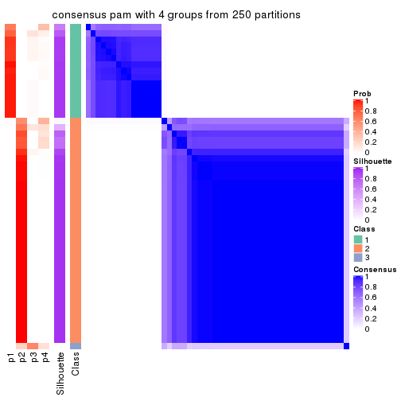
consensus_heatmap(res, k = 5)
consensus_heatmap(res, k = 6)
Heatmaps for the membership of samples in all partitions to see how consistent they are:
membership_heatmap(res, k = 2)
membership_heatmap(res, k = 3)
membership_heatmap(res, k = 4)
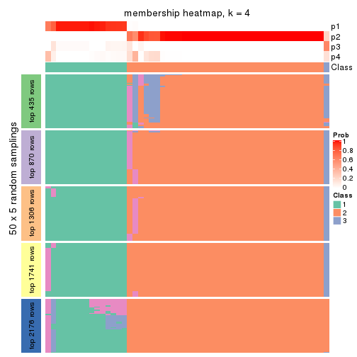
membership_heatmap(res, k = 5)
membership_heatmap(res, k = 6)
As soon as we have had the classes for columns, we can look for signatures which are significantly different between classes which can be candidate marks for certain classes. Following are the heatmaps for signatures.
Signature heatmaps where rows are scaled:
get_signatures(res, k = 2)

get_signatures(res, k = 3)
get_signatures(res, k = 4)
get_signatures(res, k = 5)
get_signatures(res, k = 6)
Signature heatmaps where rows are not scaled:
get_signatures(res, k = 2, scale_rows = FALSE)
get_signatures(res, k = 3, scale_rows = FALSE)
get_signatures(res, k = 4, scale_rows = FALSE)
get_signatures(res, k = 5, scale_rows = FALSE)
get_signatures(res, k = 6, scale_rows = FALSE)
Compare the overlap of signatures from different k:
compare_signatures(res)
get_signature() returns a data frame invisibly. TO get the list of signatures, the function
call should be assigned to a variable explicitly. In following code, if plot argument is set
to FALSE, no heatmap is plotted while only the differential analysis is performed.
# code only for demonstration
tb = get_signature(res, k = ..., plot = FALSE)
An example of the output of tb is:
#> which_row fdr mean_1 mean_2 scaled_mean_1 scaled_mean_2 km
#> 1 38 0.042760348 8.373488 9.131774 -0.5533452 0.5164555 1
#> 2 40 0.018707592 7.106213 8.469186 -0.6173731 0.5762149 1
#> 3 55 0.019134737 10.221463 11.207825 -0.6159697 0.5749050 1
#> 4 59 0.006059896 5.921854 7.869574 -0.6899429 0.6439467 1
#> 5 60 0.018055526 8.928898 10.211722 -0.6204761 0.5791110 1
#> 6 98 0.009384629 15.714769 14.887706 0.6635654 -0.6193277 2
...
The columns in tb are:
which_row: row indices corresponding to the input matrix.fdr: FDR for the differential test. mean_x: The mean value in group x.scaled_mean_x: The mean value in group x after rows are scaled.km: Row groups if k-means clustering is applied to rows.UMAP plot which shows how samples are separated.
dimension_reduction(res, k = 2, method = "UMAP")
dimension_reduction(res, k = 3, method = "UMAP")
dimension_reduction(res, k = 4, method = "UMAP")
dimension_reduction(res, k = 5, method = "UMAP")
dimension_reduction(res, k = 6, method = "UMAP")
Following heatmap shows how subgroups are split when increasing k:
collect_classes(res)
If matrix rows can be associated to genes, consider to use GO_Enrichment(res,
...) to perform function enrichment for the signature genes.
The object with results only for a single top-value method and a single partition method can be extracted as:
res = res_list["MAD", "mclust"]
# you can also extract it by
# res = res_list["MAD:mclust"]
A summary of res and all the functions that can be applied to it:
res
#> A 'ConsensusPartition' object with k = 2, 3, 4, 5, 6.
#> On a matrix with 4352 rows and 52 columns.
#> Top rows (435, 870, 1306, 1741, 2176) are extracted by 'MAD' method.
#> Subgroups are detected by 'mclust' method.
#> Performed in total 1250 partitions by row resampling.
#> Best k for subgroups seems to be 3.
#>
#> Following methods can be applied to this 'ConsensusPartition' object:
#> [1] "cola_report" "collect_classes" "collect_plots"
#> [4] "collect_stats" "colnames" "compare_signatures"
#> [7] "consensus_heatmap" "dimension_reduction" "functional_enrichment"
#> [10] "get_anno_col" "get_anno" "get_classes"
#> [13] "get_consensus" "get_matrix" "get_membership"
#> [16] "get_param" "get_signatures" "get_stats"
#> [19] "is_best_k" "is_stable_k" "membership_heatmap"
#> [22] "ncol" "nrow" "plot_ecdf"
#> [25] "rownames" "select_partition_number" "show"
#> [28] "suggest_best_k" "test_to_known_factors"
collect_plots() function collects all the plots made from res for all k (number of partitions)
into one single page to provide an easy and fast comparison between different k.
collect_plots(res)
The plots are:
k and the heatmap of
predicted classes for each k.k.k.k.All the plots in panels can be made by individual functions and they are plotted later in this section.
select_partition_number() produces several plots showing different
statistics for choosing “optimized” k. There are following statistics:
k;k, the area increased is defined as \(A_k - A_{k-1}\).The detailed explanations of these statistics can be found in the cola vignette.
Generally speaking, lower PAC score, higher mean silhouette score or higher
concordance corresponds to better partition. Rand index and Jaccard index
measure how similar the current partition is compared to partition with k-1.
If they are too similar, we won't accept k is better than k-1.
select_partition_number(res)
The numeric values for all these statistics can be obtained by get_stats().
get_stats(res)
#> k 1-PAC mean_silhouette concordance area_increased Rand Jaccard
#> 2 2 0.277 0.740 0.806 0.4270 0.581 0.581
#> 3 3 0.476 0.787 0.856 0.5061 0.742 0.556
#> 4 4 0.638 0.428 0.733 0.1428 0.807 0.495
#> 5 5 0.716 0.709 0.774 0.0670 0.902 0.644
#> 6 6 0.794 0.692 0.813 0.0454 0.975 0.888
suggest_best_k() suggests the best \(k\) based on these statistics. The rules are as follows:
NA.suggest_best_k(res)
#> [1] 3
Following shows the table of the partitions (You need to click the show/hide
code output link to see it). The membership matrix (columns with name p*)
is inferred by
clue::cl_consensus()
function with the SE method. Basically the value in the membership matrix
represents the probability to belong to a certain group. The finall class
label for an item is determined with the group with highest probability it
belongs to.
In get_classes() function, the entropy is calculated from the membership
matrix and the silhouette score is calculated from the consensus matrix.
cbind(get_classes(res, k = 2), get_membership(res, k = 2))
#> class entropy silhouette p1 p2
#> SRR2042654 1 0.000 0.898 1.000 0.000
#> SRR2042653 1 0.456 0.890 0.904 0.096
#> SRR2042652 1 0.000 0.898 1.000 0.000
#> SRR2042650 1 0.541 0.861 0.876 0.124
#> SRR2042649 2 0.861 0.693 0.284 0.716
#> SRR2042647 2 0.722 0.635 0.200 0.800
#> SRR2042648 2 0.242 0.712 0.040 0.960
#> SRR2042646 2 0.861 0.693 0.284 0.716
#> SRR2042645 2 0.722 0.635 0.200 0.800
#> SRR2042644 2 0.855 0.696 0.280 0.720
#> SRR2042643 1 0.625 0.836 0.844 0.156
#> SRR2042642 2 0.242 0.712 0.040 0.960
#> SRR2042640 2 0.373 0.703 0.072 0.928
#> SRR2042641 2 0.861 0.693 0.284 0.716
#> SRR2042639 2 0.767 0.715 0.224 0.776
#> SRR2042638 2 0.242 0.712 0.040 0.960
#> SRR2042637 2 0.861 0.693 0.284 0.716
#> SRR2042636 2 0.722 0.635 0.200 0.800
#> SRR2042634 2 0.722 0.635 0.200 0.800
#> SRR2042635 2 0.242 0.712 0.040 0.960
#> SRR2042633 2 0.855 0.696 0.280 0.720
#> SRR2042631 2 0.722 0.635 0.200 0.800
#> SRR2042632 2 0.861 0.693 0.284 0.716
#> SRR2042630 2 0.861 0.693 0.284 0.716
#> SRR2042629 2 0.706 0.642 0.192 0.808
#> SRR2042628 2 0.855 0.696 0.280 0.720
#> SRR2042626 2 0.242 0.712 0.040 0.960
#> SRR2042627 1 0.260 0.916 0.956 0.044
#> SRR2042624 2 0.855 0.696 0.280 0.720
#> SRR2042625 1 0.482 0.883 0.896 0.104
#> SRR2042623 1 0.000 0.898 1.000 0.000
#> SRR2042622 1 0.184 0.914 0.972 0.028
#> SRR2042620 2 0.722 0.635 0.200 0.800
#> SRR2042621 2 0.855 0.696 0.280 0.720
#> SRR2042619 2 0.722 0.635 0.200 0.800
#> SRR2042618 2 0.886 0.698 0.304 0.696
#> SRR2042617 1 0.204 0.915 0.968 0.032
#> SRR2042616 2 0.886 0.698 0.304 0.696
#> SRR2042615 2 0.886 0.698 0.304 0.696
#> SRR2042614 2 0.886 0.698 0.304 0.696
#> SRR2042613 2 0.855 0.696 0.280 0.720
#> SRR2042612 1 0.788 0.715 0.764 0.236
#> SRR2042610 1 0.529 0.865 0.880 0.120
#> SRR2042611 2 0.242 0.712 0.040 0.960
#> SRR2042607 2 0.714 0.639 0.196 0.804
#> SRR2042609 1 0.000 0.898 1.000 0.000
#> SRR2042608 2 0.861 0.693 0.284 0.716
#> SRR2042656 2 0.242 0.712 0.040 0.960
#> SRR2042658 2 0.861 0.693 0.284 0.716
#> SRR2042659 1 0.278 0.915 0.952 0.048
#> SRR2042657 2 0.722 0.635 0.200 0.800
#> SRR2042655 1 0.224 0.916 0.964 0.036
cbind(get_classes(res, k = 3), get_membership(res, k = 3))
#> class entropy silhouette p1 p2 p3
#> SRR2042654 1 0.0237 0.930 0.996 0.004 0.000
#> SRR2042653 1 0.2443 0.927 0.940 0.028 0.032
#> SRR2042652 1 0.0237 0.930 0.996 0.004 0.000
#> SRR2042650 1 0.3369 0.904 0.908 0.052 0.040
#> SRR2042649 3 0.0592 0.802 0.012 0.000 0.988
#> SRR2042647 2 0.7500 0.792 0.140 0.696 0.164
#> SRR2042648 2 0.1529 0.771 0.000 0.960 0.040
#> SRR2042646 3 0.0592 0.802 0.012 0.000 0.988
#> SRR2042645 2 0.6622 0.807 0.088 0.748 0.164
#> SRR2042644 3 0.4178 0.782 0.000 0.172 0.828
#> SRR2042643 1 0.5756 0.690 0.764 0.208 0.028
#> SRR2042642 2 0.1163 0.770 0.000 0.972 0.028
#> SRR2042640 2 0.4679 0.791 0.020 0.832 0.148
#> SRR2042641 3 0.3921 0.730 0.112 0.016 0.872
#> SRR2042639 2 0.5835 0.489 0.000 0.660 0.340
#> SRR2042638 2 0.2796 0.726 0.000 0.908 0.092
#> SRR2042637 3 0.0829 0.803 0.012 0.004 0.984
#> SRR2042636 2 0.7500 0.792 0.140 0.696 0.164
#> SRR2042634 2 0.8410 0.714 0.216 0.620 0.164
#> SRR2042635 2 0.1163 0.770 0.000 0.972 0.028
#> SRR2042633 3 0.4235 0.780 0.000 0.176 0.824
#> SRR2042631 2 0.7059 0.805 0.112 0.724 0.164
#> SRR2042632 3 0.0829 0.803 0.012 0.004 0.984
#> SRR2042630 3 0.2680 0.770 0.068 0.008 0.924
#> SRR2042629 2 0.6351 0.804 0.072 0.760 0.168
#> SRR2042628 3 0.4062 0.787 0.000 0.164 0.836
#> SRR2042626 2 0.1031 0.774 0.000 0.976 0.024
#> SRR2042627 1 0.1636 0.931 0.964 0.016 0.020
#> SRR2042624 3 0.4121 0.785 0.000 0.168 0.832
#> SRR2042625 1 0.3134 0.916 0.916 0.032 0.052
#> SRR2042623 1 0.0237 0.930 0.996 0.004 0.000
#> SRR2042622 1 0.0661 0.934 0.988 0.004 0.008
#> SRR2042620 2 0.7192 0.803 0.120 0.716 0.164
#> SRR2042621 3 0.4062 0.787 0.000 0.164 0.836
#> SRR2042619 2 0.7256 0.801 0.124 0.712 0.164
#> SRR2042618 3 0.6235 0.370 0.000 0.436 0.564
#> SRR2042617 1 0.1337 0.933 0.972 0.012 0.016
#> SRR2042616 3 0.5760 0.588 0.000 0.328 0.672
#> SRR2042615 3 0.6026 0.501 0.000 0.376 0.624
#> SRR2042614 3 0.5835 0.576 0.000 0.340 0.660
#> SRR2042613 3 0.2625 0.802 0.000 0.084 0.916
#> SRR2042612 1 0.5919 0.669 0.724 0.016 0.260
#> SRR2042610 1 0.3802 0.894 0.888 0.080 0.032
#> SRR2042611 2 0.1031 0.771 0.000 0.976 0.024
#> SRR2042607 2 0.6083 0.801 0.060 0.772 0.168
#> SRR2042609 1 0.0237 0.930 0.996 0.004 0.000
#> SRR2042608 3 0.4063 0.731 0.112 0.020 0.868
#> SRR2042656 2 0.2165 0.773 0.000 0.936 0.064
#> SRR2042658 3 0.0592 0.802 0.012 0.000 0.988
#> SRR2042659 1 0.1315 0.932 0.972 0.008 0.020
#> SRR2042657 2 0.7930 0.763 0.172 0.664 0.164
#> SRR2042655 1 0.0592 0.933 0.988 0.000 0.012
cbind(get_classes(res, k = 4), get_membership(res, k = 4))
#> class entropy silhouette p1 p2 p3 p4
#> SRR2042654 1 0.1297 0.8754 0.964 0.016 0.020 0.000
#> SRR2042653 1 0.4471 0.7979 0.796 0.004 0.164 0.036
#> SRR2042652 1 0.1297 0.8754 0.964 0.016 0.020 0.000
#> SRR2042650 1 0.3043 0.8379 0.876 0.004 0.008 0.112
#> SRR2042649 3 0.5174 0.5762 0.000 0.368 0.620 0.012
#> SRR2042647 4 0.3705 0.8168 0.020 0.092 0.024 0.864
#> SRR2042648 2 0.4996 -0.3237 0.000 0.516 0.000 0.484
#> SRR2042646 3 0.5244 0.5416 0.000 0.388 0.600 0.012
#> SRR2042645 4 0.1598 0.8259 0.020 0.020 0.004 0.956
#> SRR2042644 2 0.5366 -0.2904 0.000 0.548 0.440 0.012
#> SRR2042643 1 0.5028 0.3605 0.596 0.000 0.004 0.400
#> SRR2042642 2 0.4999 -0.3378 0.000 0.508 0.000 0.492
#> SRR2042640 4 0.5047 0.5507 0.000 0.316 0.016 0.668
#> SRR2042641 3 0.1584 0.5534 0.000 0.036 0.952 0.012
#> SRR2042639 2 0.4605 0.2895 0.000 0.800 0.108 0.092
#> SRR2042638 2 0.4730 -0.0875 0.000 0.636 0.000 0.364
#> SRR2042637 3 0.5268 0.5532 0.000 0.396 0.592 0.012
#> SRR2042636 4 0.1296 0.8221 0.028 0.004 0.004 0.964
#> SRR2042634 4 0.2799 0.7658 0.108 0.000 0.008 0.884
#> SRR2042635 2 0.4996 -0.3237 0.000 0.516 0.000 0.484
#> SRR2042633 2 0.5320 -0.2511 0.000 0.572 0.416 0.012
#> SRR2042631 4 0.0188 0.8266 0.004 0.000 0.000 0.996
#> SRR2042632 3 0.5256 0.5577 0.000 0.392 0.596 0.012
#> SRR2042630 3 0.3217 0.5438 0.000 0.128 0.860 0.012
#> SRR2042629 4 0.2922 0.8129 0.004 0.104 0.008 0.884
#> SRR2042628 2 0.5396 -0.3035 0.000 0.524 0.464 0.012
#> SRR2042626 4 0.5000 0.2527 0.000 0.500 0.000 0.500
#> SRR2042627 1 0.1492 0.8765 0.956 0.004 0.004 0.036
#> SRR2042624 2 0.5388 -0.2844 0.000 0.532 0.456 0.012
#> SRR2042625 1 0.5512 0.6780 0.660 0.000 0.300 0.040
#> SRR2042623 1 0.1297 0.8754 0.964 0.016 0.020 0.000
#> SRR2042622 1 0.0657 0.8801 0.984 0.000 0.004 0.012
#> SRR2042620 4 0.2989 0.8149 0.004 0.100 0.012 0.884
#> SRR2042621 2 0.5388 -0.2844 0.000 0.532 0.456 0.012
#> SRR2042619 4 0.0524 0.8280 0.008 0.004 0.000 0.988
#> SRR2042618 2 0.4322 0.2501 0.000 0.804 0.152 0.044
#> SRR2042617 1 0.1707 0.8785 0.952 0.004 0.020 0.024
#> SRR2042616 2 0.4462 0.2423 0.000 0.792 0.164 0.044
#> SRR2042615 2 0.4499 0.2467 0.000 0.792 0.160 0.048
#> SRR2042614 2 0.4405 0.2552 0.000 0.800 0.152 0.048
#> SRR2042613 2 0.5372 -0.3064 0.000 0.544 0.444 0.012
#> SRR2042612 3 0.4920 -0.1724 0.368 0.004 0.628 0.000
#> SRR2042610 1 0.6573 0.6610 0.616 0.004 0.276 0.104
#> SRR2042611 2 0.5000 -0.3452 0.000 0.504 0.000 0.496
#> SRR2042607 4 0.3345 0.7972 0.004 0.124 0.012 0.860
#> SRR2042609 1 0.1297 0.8754 0.964 0.016 0.020 0.000
#> SRR2042608 3 0.1584 0.5539 0.000 0.036 0.952 0.012
#> SRR2042656 2 0.4967 -0.2785 0.000 0.548 0.000 0.452
#> SRR2042658 3 0.5110 0.5763 0.000 0.352 0.636 0.012
#> SRR2042659 1 0.0895 0.8799 0.976 0.004 0.000 0.020
#> SRR2042657 4 0.2401 0.7760 0.092 0.000 0.004 0.904
#> SRR2042655 1 0.0469 0.8798 0.988 0.000 0.000 0.012
cbind(get_classes(res, k = 5), get_membership(res, k = 5))
#> class entropy silhouette p1 p2 p3 p4 p5
#> SRR2042654 1 0.3455 0.793 0.784 0.000 0.000 0.008 0.208
#> SRR2042653 1 0.3410 0.828 0.860 0.000 0.052 0.024 0.064
#> SRR2042652 1 0.3455 0.793 0.784 0.000 0.000 0.008 0.208
#> SRR2042650 1 0.3090 0.807 0.856 0.000 0.000 0.104 0.040
#> SRR2042649 3 0.4754 0.554 0.000 0.052 0.684 0.000 0.264
#> SRR2042647 4 0.5197 0.770 0.020 0.184 0.024 0.732 0.040
#> SRR2042648 2 0.1646 0.779 0.000 0.944 0.004 0.032 0.020
#> SRR2042646 3 0.5071 0.451 0.000 0.040 0.616 0.004 0.340
#> SRR2042645 4 0.1815 0.883 0.020 0.016 0.000 0.940 0.024
#> SRR2042644 5 0.6528 0.669 0.000 0.152 0.384 0.008 0.456
#> SRR2042643 1 0.4251 0.535 0.672 0.000 0.000 0.316 0.012
#> SRR2042642 2 0.1502 0.769 0.000 0.940 0.000 0.056 0.004
#> SRR2042640 2 0.4974 0.287 0.000 0.604 0.024 0.364 0.008
#> SRR2042641 3 0.0290 0.536 0.000 0.008 0.992 0.000 0.000
#> SRR2042639 2 0.4129 0.692 0.000 0.808 0.076 0.016 0.100
#> SRR2042638 2 0.1743 0.776 0.000 0.940 0.004 0.028 0.028
#> SRR2042637 3 0.4969 0.533 0.000 0.056 0.652 0.000 0.292
#> SRR2042636 4 0.1405 0.887 0.020 0.008 0.000 0.956 0.016
#> SRR2042634 4 0.2736 0.865 0.052 0.008 0.012 0.900 0.028
#> SRR2042635 2 0.1571 0.767 0.000 0.936 0.000 0.060 0.004
#> SRR2042633 5 0.6353 0.703 0.000 0.128 0.388 0.008 0.476
#> SRR2042631 4 0.0968 0.887 0.004 0.012 0.000 0.972 0.012
#> SRR2042632 3 0.5238 0.503 0.000 0.064 0.640 0.004 0.292
#> SRR2042630 3 0.1493 0.534 0.000 0.024 0.948 0.000 0.028
#> SRR2042629 4 0.3257 0.846 0.000 0.124 0.004 0.844 0.028
#> SRR2042628 5 0.4832 0.735 0.000 0.032 0.292 0.008 0.668
#> SRR2042626 2 0.1864 0.765 0.000 0.924 0.004 0.068 0.004
#> SRR2042627 1 0.0566 0.848 0.984 0.000 0.000 0.012 0.004
#> SRR2042624 5 0.4886 0.741 0.000 0.036 0.288 0.008 0.668
#> SRR2042625 1 0.3671 0.822 0.844 0.000 0.072 0.024 0.060
#> SRR2042623 1 0.3455 0.793 0.784 0.000 0.000 0.008 0.208
#> SRR2042622 1 0.0693 0.848 0.980 0.000 0.000 0.008 0.012
#> SRR2042620 4 0.3242 0.813 0.000 0.172 0.012 0.816 0.000
#> SRR2042621 5 0.5131 0.751 0.000 0.048 0.296 0.008 0.648
#> SRR2042619 4 0.0566 0.887 0.004 0.012 0.000 0.984 0.000
#> SRR2042618 2 0.5510 0.543 0.000 0.664 0.112 0.008 0.216
#> SRR2042617 1 0.0727 0.849 0.980 0.000 0.004 0.012 0.004
#> SRR2042616 2 0.5691 0.517 0.000 0.648 0.132 0.008 0.212
#> SRR2042615 2 0.6034 0.414 0.000 0.596 0.140 0.008 0.256
#> SRR2042614 2 0.6005 0.432 0.000 0.604 0.144 0.008 0.244
#> SRR2042613 5 0.6168 0.671 0.000 0.104 0.412 0.008 0.476
#> SRR2042612 1 0.5353 0.486 0.576 0.000 0.368 0.004 0.052
#> SRR2042610 1 0.4949 0.785 0.768 0.000 0.076 0.076 0.080
#> SRR2042611 2 0.1502 0.769 0.000 0.940 0.000 0.056 0.004
#> SRR2042607 4 0.4145 0.781 0.000 0.188 0.012 0.772 0.028
#> SRR2042609 1 0.3455 0.793 0.784 0.000 0.000 0.008 0.208
#> SRR2042608 3 0.0579 0.540 0.000 0.008 0.984 0.000 0.008
#> SRR2042656 2 0.1483 0.778 0.000 0.952 0.008 0.028 0.012
#> SRR2042658 3 0.4956 0.520 0.000 0.040 0.644 0.004 0.312
#> SRR2042659 1 0.1484 0.842 0.944 0.000 0.000 0.048 0.008
#> SRR2042657 4 0.2459 0.874 0.036 0.012 0.012 0.916 0.024
#> SRR2042655 1 0.1012 0.849 0.968 0.000 0.000 0.020 0.012
cbind(get_classes(res, k = 6), get_membership(res, k = 6))
#> class entropy silhouette p1 p2 p3 p4 p5 p6
#> SRR2042654 1 0.3563 0.6550 0.664 0.000 0.000 0.000 0.000 NA
#> SRR2042653 1 0.3062 0.7528 0.824 0.000 0.004 0.008 0.008 NA
#> SRR2042652 1 0.3563 0.6550 0.664 0.000 0.000 0.000 0.000 NA
#> SRR2042650 1 0.2724 0.7578 0.864 0.000 0.000 0.084 0.000 NA
#> SRR2042649 5 0.0363 0.6798 0.000 0.000 0.012 0.000 0.988 NA
#> SRR2042647 4 0.4779 0.8164 0.012 0.096 0.008 0.728 0.004 NA
#> SRR2042648 2 0.0551 0.7627 0.000 0.984 0.008 0.004 0.000 NA
#> SRR2042646 5 0.3301 0.5529 0.000 0.000 0.216 0.004 0.772 NA
#> SRR2042645 4 0.0909 0.9097 0.000 0.000 0.012 0.968 0.000 NA
#> SRR2042644 5 0.6974 0.1025 0.000 0.112 0.352 0.004 0.416 NA
#> SRR2042643 1 0.4254 0.5414 0.680 0.000 0.000 0.272 0.000 NA
#> SRR2042642 2 0.0000 0.7640 0.000 1.000 0.000 0.000 0.000 NA
#> SRR2042640 2 0.4189 0.0415 0.000 0.552 0.004 0.436 0.000 NA
#> SRR2042641 5 0.3089 0.6486 0.000 0.000 0.008 0.004 0.800 NA
#> SRR2042639 2 0.4709 0.6758 0.000 0.736 0.036 0.012 0.048 NA
#> SRR2042638 2 0.0405 0.7624 0.000 0.988 0.000 0.004 0.008 NA
#> SRR2042637 5 0.1075 0.6770 0.000 0.000 0.048 0.000 0.952 NA
#> SRR2042636 4 0.1453 0.9140 0.008 0.000 0.008 0.944 0.000 NA
#> SRR2042634 4 0.3113 0.8757 0.024 0.004 0.012 0.844 0.000 NA
#> SRR2042635 2 0.0000 0.7640 0.000 1.000 0.000 0.000 0.000 NA
#> SRR2042633 5 0.7010 0.0616 0.000 0.108 0.368 0.004 0.396 NA
#> SRR2042631 4 0.0146 0.9132 0.000 0.000 0.000 0.996 0.000 NA
#> SRR2042632 5 0.1297 0.6791 0.000 0.012 0.040 0.000 0.948 NA
#> SRR2042630 5 0.3159 0.6554 0.000 0.012 0.004 0.004 0.812 NA
#> SRR2042629 4 0.1682 0.9050 0.000 0.052 0.000 0.928 0.000 NA
#> SRR2042628 3 0.1226 0.9550 0.000 0.004 0.952 0.004 0.040 NA
#> SRR2042626 2 0.0405 0.7624 0.000 0.988 0.004 0.008 0.000 NA
#> SRR2042627 1 0.0405 0.7885 0.988 0.000 0.000 0.008 0.000 NA
#> SRR2042624 3 0.0692 0.9565 0.000 0.000 0.976 0.000 0.020 NA
#> SRR2042625 1 0.3339 0.7358 0.792 0.000 0.004 0.008 0.008 NA
#> SRR2042623 1 0.3563 0.6550 0.664 0.000 0.000 0.000 0.000 NA
#> SRR2042622 1 0.0260 0.7869 0.992 0.000 0.000 0.000 0.000 NA
#> SRR2042620 4 0.2554 0.8837 0.000 0.092 0.004 0.876 0.000 NA
#> SRR2042621 3 0.1429 0.9422 0.000 0.004 0.940 0.004 0.052 NA
#> SRR2042619 4 0.0858 0.9157 0.000 0.000 0.004 0.968 0.000 NA
#> SRR2042618 2 0.6170 0.5488 0.000 0.584 0.204 0.000 0.076 NA
#> SRR2042617 1 0.0260 0.7882 0.992 0.000 0.000 0.000 0.000 NA
#> SRR2042616 2 0.6523 0.5137 0.000 0.536 0.208 0.000 0.080 NA
#> SRR2042615 2 0.6528 0.5108 0.000 0.536 0.200 0.000 0.080 NA
#> SRR2042614 2 0.6667 0.4962 0.000 0.524 0.196 0.000 0.096 NA
#> SRR2042613 5 0.5557 0.2853 0.000 0.036 0.340 0.000 0.556 NA
#> SRR2042612 1 0.5681 0.4167 0.552 0.000 0.004 0.000 0.212 NA
#> SRR2042610 1 0.3263 0.7445 0.800 0.000 0.000 0.020 0.004 NA
#> SRR2042611 2 0.0000 0.7640 0.000 1.000 0.000 0.000 0.000 NA
#> SRR2042607 4 0.2011 0.8973 0.000 0.064 0.004 0.912 0.000 NA
#> SRR2042609 1 0.3563 0.6550 0.664 0.000 0.000 0.000 0.000 NA
#> SRR2042608 5 0.3187 0.6481 0.000 0.000 0.012 0.004 0.796 NA
#> SRR2042656 2 0.0551 0.7630 0.000 0.984 0.008 0.000 0.004 NA
#> SRR2042658 5 0.3309 0.5679 0.000 0.000 0.192 0.004 0.788 NA
#> SRR2042659 1 0.1643 0.7750 0.924 0.000 0.000 0.068 0.000 NA
#> SRR2042657 4 0.2308 0.9003 0.016 0.000 0.012 0.896 0.000 NA
#> SRR2042655 1 0.0653 0.7875 0.980 0.000 0.004 0.000 0.004 NA
Heatmaps for the consensus matrix. It visualizes the probability of two samples to be in a same group.
consensus_heatmap(res, k = 2)
consensus_heatmap(res, k = 3)
consensus_heatmap(res, k = 4)
consensus_heatmap(res, k = 5)
consensus_heatmap(res, k = 6)
Heatmaps for the membership of samples in all partitions to see how consistent they are:
membership_heatmap(res, k = 2)
membership_heatmap(res, k = 3)
membership_heatmap(res, k = 4)
membership_heatmap(res, k = 5)
membership_heatmap(res, k = 6)
As soon as we have had the classes for columns, we can look for signatures which are significantly different between classes which can be candidate marks for certain classes. Following are the heatmaps for signatures.
Signature heatmaps where rows are scaled:
get_signatures(res, k = 2)
get_signatures(res, k = 3)
get_signatures(res, k = 4)
get_signatures(res, k = 5)
get_signatures(res, k = 6)
Signature heatmaps where rows are not scaled:
get_signatures(res, k = 2, scale_rows = FALSE)
get_signatures(res, k = 3, scale_rows = FALSE)
get_signatures(res, k = 4, scale_rows = FALSE)
get_signatures(res, k = 5, scale_rows = FALSE)
get_signatures(res, k = 6, scale_rows = FALSE)
Compare the overlap of signatures from different k:
compare_signatures(res)
get_signature() returns a data frame invisibly. TO get the list of signatures, the function
call should be assigned to a variable explicitly. In following code, if plot argument is set
to FALSE, no heatmap is plotted while only the differential analysis is performed.
# code only for demonstration
tb = get_signature(res, k = ..., plot = FALSE)
An example of the output of tb is:
#> which_row fdr mean_1 mean_2 scaled_mean_1 scaled_mean_2 km
#> 1 38 0.042760348 8.373488 9.131774 -0.5533452 0.5164555 1
#> 2 40 0.018707592 7.106213 8.469186 -0.6173731 0.5762149 1
#> 3 55 0.019134737 10.221463 11.207825 -0.6159697 0.5749050 1
#> 4 59 0.006059896 5.921854 7.869574 -0.6899429 0.6439467 1
#> 5 60 0.018055526 8.928898 10.211722 -0.6204761 0.5791110 1
#> 6 98 0.009384629 15.714769 14.887706 0.6635654 -0.6193277 2
...
The columns in tb are:
which_row: row indices corresponding to the input matrix.fdr: FDR for the differential test. mean_x: The mean value in group x.scaled_mean_x: The mean value in group x after rows are scaled.km: Row groups if k-means clustering is applied to rows.UMAP plot which shows how samples are separated.
dimension_reduction(res, k = 2, method = "UMAP")
dimension_reduction(res, k = 3, method = "UMAP")
dimension_reduction(res, k = 4, method = "UMAP")

dimension_reduction(res, k = 5, method = "UMAP")
dimension_reduction(res, k = 6, method = "UMAP")
Following heatmap shows how subgroups are split when increasing k:
collect_classes(res)
If matrix rows can be associated to genes, consider to use GO_Enrichment(res,
...) to perform function enrichment for the signature genes.
The object with results only for a single top-value method and a single partition method can be extracted as:
res = res_list["MAD", "NMF"]
# you can also extract it by
# res = res_list["MAD:NMF"]
A summary of res and all the functions that can be applied to it:
res
#> A 'ConsensusPartition' object with k = 2, 3, 4, 5, 6.
#> On a matrix with 4352 rows and 52 columns.
#> Top rows (435, 870, 1306, 1741, 2176) are extracted by 'MAD' method.
#> Subgroups are detected by 'NMF' method.
#> Performed in total 1250 partitions by row resampling.
#> Best k for subgroups seems to be 2.
#>
#> Following methods can be applied to this 'ConsensusPartition' object:
#> [1] "cola_report" "collect_classes" "collect_plots"
#> [4] "collect_stats" "colnames" "compare_signatures"
#> [7] "consensus_heatmap" "dimension_reduction" "functional_enrichment"
#> [10] "get_anno_col" "get_anno" "get_classes"
#> [13] "get_consensus" "get_matrix" "get_membership"
#> [16] "get_param" "get_signatures" "get_stats"
#> [19] "is_best_k" "is_stable_k" "membership_heatmap"
#> [22] "ncol" "nrow" "plot_ecdf"
#> [25] "rownames" "select_partition_number" "show"
#> [28] "suggest_best_k" "test_to_known_factors"
collect_plots() function collects all the plots made from res for all k (number of partitions)
into one single page to provide an easy and fast comparison between different k.
collect_plots(res)
The plots are:
k and the heatmap of
predicted classes for each k.k.k.k.All the plots in panels can be made by individual functions and they are plotted later in this section.
select_partition_number() produces several plots showing different
statistics for choosing “optimized” k. There are following statistics:
k;k, the area increased is defined as \(A_k - A_{k-1}\).The detailed explanations of these statistics can be found in the cola vignette.
Generally speaking, lower PAC score, higher mean silhouette score or higher
concordance corresponds to better partition. Rand index and Jaccard index
measure how similar the current partition is compared to partition with k-1.
If they are too similar, we won't accept k is better than k-1.
select_partition_number(res)
The numeric values for all these statistics can be obtained by get_stats().
get_stats(res)
#> k 1-PAC mean_silhouette concordance area_increased Rand Jaccard
#> 2 2 0.654 0.831 0.913 0.4709 0.517 0.517
#> 3 3 0.428 0.660 0.809 0.3170 0.868 0.745
#> 4 4 0.407 0.559 0.753 0.1103 0.974 0.934
#> 5 5 0.470 0.514 0.690 0.0498 0.906 0.757
#> 6 6 0.497 0.486 0.670 0.0411 0.971 0.911
suggest_best_k() suggests the best \(k\) based on these statistics. The rules are as follows:
NA.suggest_best_k(res)
#> [1] 2
Following shows the table of the partitions (You need to click the show/hide
code output link to see it). The membership matrix (columns with name p*)
is inferred by
clue::cl_consensus()
function with the SE method. Basically the value in the membership matrix
represents the probability to belong to a certain group. The finall class
label for an item is determined with the group with highest probability it
belongs to.
In get_classes() function, the entropy is calculated from the membership
matrix and the silhouette score is calculated from the consensus matrix.
cbind(get_classes(res, k = 2), get_membership(res, k = 2))
#> class entropy silhouette p1 p2
#> SRR2042654 2 0.9248 0.542 0.340 0.660
#> SRR2042653 1 0.3584 0.908 0.932 0.068
#> SRR2042652 1 0.4690 0.893 0.900 0.100
#> SRR2042650 1 0.0672 0.928 0.992 0.008
#> SRR2042649 2 0.0938 0.872 0.012 0.988
#> SRR2042647 1 0.0938 0.922 0.988 0.012
#> SRR2042648 1 0.2778 0.925 0.952 0.048
#> SRR2042646 2 0.0938 0.872 0.012 0.988
#> SRR2042645 1 0.2236 0.929 0.964 0.036
#> SRR2042644 2 0.1414 0.872 0.020 0.980
#> SRR2042643 1 0.0938 0.925 0.988 0.012
#> SRR2042642 1 0.1414 0.931 0.980 0.020
#> SRR2042640 1 0.1843 0.930 0.972 0.028
#> SRR2042641 2 0.4022 0.844 0.080 0.920
#> SRR2042639 1 0.8661 0.575 0.712 0.288
#> SRR2042638 1 0.3431 0.913 0.936 0.064
#> SRR2042637 2 0.1184 0.874 0.016 0.984
#> SRR2042636 1 0.0938 0.930 0.988 0.012
#> SRR2042634 1 0.0376 0.926 0.996 0.004
#> SRR2042635 1 0.1843 0.930 0.972 0.028
#> SRR2042633 2 0.1414 0.874 0.020 0.980
#> SRR2042631 1 0.0938 0.929 0.988 0.012
#> SRR2042632 2 0.1184 0.874 0.016 0.984
#> SRR2042630 2 0.1414 0.874 0.020 0.980
#> SRR2042629 1 0.1843 0.930 0.972 0.028
#> SRR2042628 2 0.4431 0.834 0.092 0.908
#> SRR2042626 1 0.1414 0.930 0.980 0.020
#> SRR2042627 1 0.1633 0.931 0.976 0.024
#> SRR2042624 2 0.0938 0.873 0.012 0.988
#> SRR2042625 1 0.9129 0.504 0.672 0.328
#> SRR2042623 1 0.5294 0.856 0.880 0.120
#> SRR2042622 1 0.5946 0.843 0.856 0.144
#> SRR2042620 1 0.0376 0.929 0.996 0.004
#> SRR2042621 2 0.1184 0.873 0.016 0.984
#> SRR2042619 1 0.0938 0.928 0.988 0.012
#> SRR2042618 2 0.9977 0.191 0.472 0.528
#> SRR2042617 1 0.3274 0.917 0.940 0.060
#> SRR2042616 2 0.9909 0.286 0.444 0.556
#> SRR2042615 2 0.9775 0.384 0.412 0.588
#> SRR2042614 2 0.9170 0.551 0.332 0.668
#> SRR2042613 2 0.0938 0.873 0.012 0.988
#> SRR2042612 2 0.0938 0.863 0.012 0.988
#> SRR2042610 1 0.1843 0.921 0.972 0.028
#> SRR2042611 1 0.1184 0.930 0.984 0.016
#> SRR2042607 1 0.1843 0.930 0.972 0.028
#> SRR2042609 1 0.6438 0.814 0.836 0.164
#> SRR2042608 2 0.1633 0.872 0.024 0.976
#> SRR2042656 1 0.3431 0.917 0.936 0.064
#> SRR2042658 2 0.1184 0.874 0.016 0.984
#> SRR2042659 1 0.3274 0.918 0.940 0.060
#> SRR2042657 1 0.0376 0.926 0.996 0.004
#> SRR2042655 1 0.8763 0.600 0.704 0.296
cbind(get_classes(res, k = 3), get_membership(res, k = 3))
#> class entropy silhouette p1 p2 p3
#> SRR2042654 3 0.9550 -0.0476 0.340 0.204 0.456
#> SRR2042653 1 0.6129 0.5926 0.700 0.284 0.016
#> SRR2042652 1 0.7517 0.5316 0.588 0.364 0.048
#> SRR2042650 2 0.5591 0.5817 0.304 0.696 0.000
#> SRR2042649 3 0.0661 0.8417 0.008 0.004 0.988
#> SRR2042647 2 0.5465 0.5362 0.288 0.712 0.000
#> SRR2042648 2 0.2773 0.7567 0.048 0.928 0.024
#> SRR2042646 3 0.0475 0.8409 0.004 0.004 0.992
#> SRR2042645 2 0.4615 0.7172 0.144 0.836 0.020
#> SRR2042644 3 0.1585 0.8419 0.008 0.028 0.964
#> SRR2042643 2 0.6229 0.3438 0.340 0.652 0.008
#> SRR2042642 2 0.2860 0.7573 0.084 0.912 0.004
#> SRR2042640 2 0.3207 0.7644 0.084 0.904 0.012
#> SRR2042641 3 0.2550 0.8237 0.040 0.024 0.936
#> SRR2042639 2 0.6998 0.3210 0.044 0.664 0.292
#> SRR2042638 2 0.3148 0.7593 0.048 0.916 0.036
#> SRR2042637 3 0.1015 0.8437 0.008 0.012 0.980
#> SRR2042636 2 0.3112 0.7579 0.096 0.900 0.004
#> SRR2042634 2 0.5070 0.6927 0.224 0.772 0.004
#> SRR2042635 2 0.3325 0.7604 0.076 0.904 0.020
#> SRR2042633 3 0.1765 0.8406 0.004 0.040 0.956
#> SRR2042631 2 0.2261 0.7617 0.068 0.932 0.000
#> SRR2042632 3 0.0829 0.8412 0.012 0.004 0.984
#> SRR2042630 3 0.1585 0.8446 0.008 0.028 0.964
#> SRR2042629 2 0.3846 0.7438 0.108 0.876 0.016
#> SRR2042628 3 0.4960 0.7530 0.040 0.128 0.832
#> SRR2042626 2 0.2229 0.7619 0.044 0.944 0.012
#> SRR2042627 2 0.5455 0.7189 0.184 0.788 0.028
#> SRR2042624 3 0.1170 0.8450 0.008 0.016 0.976
#> SRR2042625 1 0.9529 0.3861 0.448 0.196 0.356
#> SRR2042623 1 0.6142 0.6452 0.748 0.212 0.040
#> SRR2042622 1 0.9152 0.4126 0.484 0.364 0.152
#> SRR2042620 2 0.3941 0.7203 0.156 0.844 0.000
#> SRR2042621 3 0.1337 0.8441 0.016 0.012 0.972
#> SRR2042619 2 0.4178 0.7189 0.172 0.828 0.000
#> SRR2042618 3 0.6579 0.4789 0.020 0.328 0.652
#> SRR2042617 2 0.7012 0.4471 0.308 0.652 0.040
#> SRR2042616 3 0.7114 0.3314 0.028 0.388 0.584
#> SRR2042615 3 0.6601 0.5438 0.028 0.296 0.676
#> SRR2042614 3 0.6143 0.6126 0.024 0.256 0.720
#> SRR2042613 3 0.1170 0.8451 0.008 0.016 0.976
#> SRR2042612 3 0.3112 0.7782 0.096 0.004 0.900
#> SRR2042610 1 0.5948 0.5288 0.640 0.360 0.000
#> SRR2042611 2 0.2796 0.7505 0.092 0.908 0.000
#> SRR2042607 2 0.3183 0.7504 0.076 0.908 0.016
#> SRR2042609 1 0.7318 0.6316 0.668 0.264 0.068
#> SRR2042608 3 0.1129 0.8451 0.004 0.020 0.976
#> SRR2042656 2 0.4058 0.7568 0.076 0.880 0.044
#> SRR2042658 3 0.0592 0.8349 0.012 0.000 0.988
#> SRR2042659 2 0.6769 0.4639 0.320 0.652 0.028
#> SRR2042657 2 0.5397 0.5442 0.280 0.720 0.000
#> SRR2042655 2 0.8556 0.3334 0.232 0.604 0.164
cbind(get_classes(res, k = 4), get_membership(res, k = 4))
#> class entropy silhouette p1 p2 p3 p4
#> SRR2042654 1 0.8707 0.2004 0.508 0.112 0.240 0.140
#> SRR2042653 4 0.6929 0.1887 0.244 0.140 0.008 0.608
#> SRR2042652 1 0.8303 0.1301 0.440 0.160 0.040 0.360
#> SRR2042650 2 0.7642 0.2190 0.292 0.492 0.004 0.212
#> SRR2042649 3 0.1059 0.8498 0.012 0.000 0.972 0.016
#> SRR2042647 2 0.5453 0.5179 0.036 0.660 0.000 0.304
#> SRR2042648 2 0.4108 0.6918 0.080 0.848 0.056 0.016
#> SRR2042646 3 0.0992 0.8521 0.012 0.004 0.976 0.008
#> SRR2042645 2 0.4623 0.6817 0.168 0.792 0.020 0.020
#> SRR2042644 3 0.0779 0.8520 0.016 0.000 0.980 0.004
#> SRR2042643 2 0.7659 0.1206 0.244 0.460 0.000 0.296
#> SRR2042642 2 0.2075 0.7167 0.016 0.936 0.004 0.044
#> SRR2042640 2 0.3392 0.7143 0.080 0.880 0.024 0.016
#> SRR2042641 3 0.3918 0.7972 0.048 0.020 0.860 0.072
#> SRR2042639 2 0.6897 0.1326 0.076 0.520 0.392 0.012
#> SRR2042638 2 0.3574 0.6982 0.044 0.876 0.064 0.016
#> SRR2042637 3 0.0927 0.8521 0.008 0.000 0.976 0.016
#> SRR2042636 2 0.3325 0.7119 0.112 0.864 0.000 0.024
#> SRR2042634 2 0.5938 0.5984 0.168 0.696 0.000 0.136
#> SRR2042635 2 0.2271 0.7167 0.012 0.928 0.008 0.052
#> SRR2042633 3 0.2032 0.8433 0.028 0.036 0.936 0.000
#> SRR2042631 2 0.3205 0.7139 0.104 0.872 0.000 0.024
#> SRR2042632 3 0.0937 0.8500 0.012 0.000 0.976 0.012
#> SRR2042630 3 0.2895 0.8310 0.044 0.016 0.908 0.032
#> SRR2042629 2 0.3380 0.7044 0.136 0.852 0.004 0.008
#> SRR2042628 3 0.4199 0.7735 0.060 0.096 0.836 0.008
#> SRR2042626 2 0.2599 0.7157 0.064 0.912 0.004 0.020
#> SRR2042627 2 0.6949 0.5987 0.144 0.672 0.048 0.136
#> SRR2042624 3 0.0967 0.8531 0.016 0.004 0.976 0.004
#> SRR2042625 4 0.8758 0.0178 0.200 0.096 0.200 0.504
#> SRR2042623 4 0.6777 -0.0138 0.296 0.092 0.012 0.600
#> SRR2042622 1 0.9124 0.1596 0.452 0.208 0.108 0.232
#> SRR2042620 2 0.4282 0.6889 0.060 0.816 0.000 0.124
#> SRR2042621 3 0.1443 0.8509 0.028 0.004 0.960 0.008
#> SRR2042619 2 0.5228 0.6652 0.124 0.756 0.000 0.120
#> SRR2042618 3 0.5076 0.5635 0.024 0.260 0.712 0.004
#> SRR2042617 2 0.8371 0.0959 0.304 0.440 0.028 0.228
#> SRR2042616 3 0.5802 0.4818 0.040 0.296 0.656 0.008
#> SRR2042615 3 0.4936 0.6892 0.052 0.176 0.768 0.004
#> SRR2042614 3 0.4634 0.7205 0.048 0.156 0.792 0.004
#> SRR2042613 3 0.0657 0.8520 0.012 0.004 0.984 0.000
#> SRR2042612 3 0.7006 0.4662 0.164 0.020 0.636 0.180
#> SRR2042610 4 0.5910 0.2067 0.104 0.208 0.000 0.688
#> SRR2042611 2 0.2450 0.7116 0.016 0.912 0.000 0.072
#> SRR2042607 2 0.3088 0.7082 0.128 0.864 0.000 0.008
#> SRR2042609 1 0.8498 0.1232 0.404 0.116 0.076 0.404
#> SRR2042608 3 0.3643 0.8257 0.060 0.032 0.876 0.032
#> SRR2042656 2 0.3833 0.6971 0.044 0.864 0.072 0.020
#> SRR2042658 3 0.1733 0.8400 0.024 0.000 0.948 0.028
#> SRR2042659 2 0.6952 0.0166 0.452 0.456 0.008 0.084
#> SRR2042657 2 0.6238 0.5166 0.112 0.652 0.000 0.236
#> SRR2042655 2 0.8299 0.0648 0.400 0.428 0.076 0.096
cbind(get_classes(res, k = 5), get_membership(res, k = 5))
#> class entropy silhouette p1 p2 p3 p4 p5
#> SRR2042654 1 0.8362 -0.0967 0.488 0.204 0.168 0.064 0.076
#> SRR2042653 3 0.7886 0.0325 0.160 0.004 0.420 0.096 0.320
#> SRR2042652 3 0.8552 0.1431 0.292 0.016 0.304 0.100 0.288
#> SRR2042650 4 0.7991 -0.1745 0.248 0.000 0.256 0.400 0.096
#> SRR2042649 2 0.1205 0.8161 0.004 0.956 0.000 0.000 0.040
#> SRR2042647 4 0.4706 0.5478 0.008 0.000 0.316 0.656 0.020
#> SRR2042648 4 0.4145 0.6820 0.028 0.056 0.032 0.836 0.048
#> SRR2042646 2 0.0579 0.8188 0.008 0.984 0.000 0.000 0.008
#> SRR2042645 4 0.5030 0.6430 0.132 0.020 0.024 0.764 0.060
#> SRR2042644 2 0.1200 0.8192 0.016 0.964 0.000 0.008 0.012
#> SRR2042643 4 0.8312 -0.1882 0.172 0.000 0.176 0.348 0.304
#> SRR2042642 4 0.2733 0.7089 0.012 0.004 0.112 0.872 0.000
#> SRR2042640 4 0.3946 0.7068 0.048 0.036 0.036 0.848 0.032
#> SRR2042641 2 0.3870 0.7522 0.012 0.832 0.032 0.016 0.108
#> SRR2042639 2 0.6477 0.1427 0.032 0.476 0.008 0.420 0.064
#> SRR2042638 4 0.3389 0.6918 0.024 0.060 0.020 0.872 0.024
#> SRR2042637 2 0.0880 0.8169 0.000 0.968 0.000 0.000 0.032
#> SRR2042636 4 0.4703 0.6799 0.108 0.000 0.056 0.780 0.056
#> SRR2042634 4 0.6670 0.3915 0.188 0.000 0.200 0.576 0.036
#> SRR2042635 4 0.3068 0.7133 0.028 0.012 0.072 0.880 0.008
#> SRR2042633 2 0.2002 0.8192 0.028 0.932 0.000 0.020 0.020
#> SRR2042631 4 0.4066 0.6956 0.072 0.000 0.028 0.820 0.080
#> SRR2042632 2 0.1074 0.8183 0.012 0.968 0.000 0.004 0.016
#> SRR2042630 2 0.2172 0.8026 0.000 0.908 0.000 0.016 0.076
#> SRR2042629 4 0.4820 0.6834 0.112 0.020 0.056 0.784 0.028
#> SRR2042628 2 0.5177 0.7307 0.068 0.764 0.012 0.100 0.056
#> SRR2042626 4 0.3148 0.7099 0.040 0.004 0.024 0.880 0.052
#> SRR2042627 4 0.7530 0.3997 0.148 0.040 0.128 0.588 0.096
#> SRR2042624 2 0.2492 0.8120 0.020 0.908 0.000 0.024 0.048
#> SRR2042625 5 0.8413 0.0000 0.108 0.088 0.304 0.064 0.436
#> SRR2042623 3 0.8150 0.0529 0.300 0.008 0.408 0.108 0.176
#> SRR2042622 1 0.8811 -0.1036 0.460 0.076 0.160 0.140 0.164
#> SRR2042620 4 0.4883 0.6743 0.084 0.000 0.080 0.772 0.064
#> SRR2042621 2 0.2151 0.8148 0.020 0.924 0.000 0.016 0.040
#> SRR2042619 4 0.5079 0.6439 0.044 0.000 0.100 0.752 0.104
#> SRR2042618 2 0.4646 0.6673 0.012 0.732 0.000 0.212 0.044
#> SRR2042617 1 0.8292 0.1649 0.352 0.020 0.236 0.324 0.068
#> SRR2042616 2 0.4475 0.5910 0.000 0.692 0.000 0.276 0.032
#> SRR2042615 2 0.4556 0.7181 0.024 0.772 0.004 0.160 0.040
#> SRR2042614 2 0.4184 0.7583 0.016 0.808 0.008 0.124 0.044
#> SRR2042613 2 0.0740 0.8199 0.008 0.980 0.000 0.008 0.004
#> SRR2042612 2 0.5554 0.0785 0.024 0.512 0.020 0.004 0.440
#> SRR2042610 3 0.2866 0.0934 0.024 0.000 0.872 0.100 0.004
#> SRR2042611 4 0.2681 0.7134 0.024 0.004 0.068 0.896 0.008
#> SRR2042607 4 0.3553 0.7065 0.072 0.012 0.024 0.860 0.032
#> SRR2042609 3 0.8133 0.1381 0.348 0.036 0.380 0.044 0.192
#> SRR2042608 2 0.3367 0.7946 0.016 0.856 0.000 0.040 0.088
#> SRR2042656 4 0.4373 0.6544 0.028 0.092 0.024 0.816 0.040
#> SRR2042658 2 0.1877 0.8016 0.012 0.924 0.000 0.000 0.064
#> SRR2042659 1 0.8228 0.1465 0.436 0.024 0.132 0.296 0.112
#> SRR2042657 4 0.6409 0.4794 0.056 0.000 0.240 0.608 0.096
#> SRR2042655 1 0.8263 0.2237 0.416 0.032 0.072 0.308 0.172
cbind(get_classes(res, k = 6), get_membership(res, k = 6))
#> class entropy silhouette p1 p2 p3 p4 p5 p6
#> SRR2042654 1 0.457 0.139455 0.768 0.124 0.008 0.064 0.012 0.024
#> SRR2042653 6 0.773 0.211108 0.072 0.000 0.248 0.056 0.204 0.420
#> SRR2042652 1 0.806 -0.027921 0.480 0.028 0.108 0.072 0.104 0.208
#> SRR2042650 4 0.858 -0.175188 0.148 0.004 0.076 0.312 0.252 0.208
#> SRR2042649 2 0.164 0.762982 0.008 0.924 0.068 0.000 0.000 0.000
#> SRR2042647 4 0.555 0.556312 0.012 0.000 0.036 0.616 0.060 0.276
#> SRR2042648 4 0.450 0.660093 0.012 0.052 0.052 0.780 0.100 0.004
#> SRR2042646 2 0.137 0.781988 0.004 0.948 0.036 0.000 0.012 0.000
#> SRR2042645 4 0.512 0.605987 0.032 0.012 0.036 0.704 0.200 0.016
#> SRR2042644 2 0.141 0.787410 0.008 0.952 0.020 0.004 0.016 0.000
#> SRR2042643 4 0.887 -0.263479 0.152 0.000 0.180 0.264 0.176 0.228
#> SRR2042642 4 0.336 0.691528 0.016 0.004 0.012 0.852 0.040 0.076
#> SRR2042640 4 0.466 0.682925 0.028 0.048 0.028 0.784 0.092 0.020
#> SRR2042641 2 0.415 0.659592 0.008 0.780 0.156 0.024 0.012 0.020
#> SRR2042639 2 0.638 0.220810 0.012 0.492 0.072 0.368 0.048 0.008
#> SRR2042638 4 0.389 0.663581 0.016 0.084 0.020 0.824 0.048 0.008
#> SRR2042637 2 0.123 0.782003 0.004 0.952 0.040 0.000 0.004 0.000
#> SRR2042636 4 0.479 0.645125 0.084 0.000 0.016 0.740 0.136 0.024
#> SRR2042634 4 0.675 0.492464 0.120 0.000 0.024 0.568 0.188 0.100
#> SRR2042635 4 0.356 0.693482 0.012 0.020 0.020 0.852 0.044 0.052
#> SRR2042633 2 0.313 0.776336 0.024 0.868 0.052 0.040 0.016 0.000
#> SRR2042631 4 0.411 0.682469 0.064 0.000 0.012 0.800 0.092 0.032
#> SRR2042632 2 0.104 0.781621 0.004 0.964 0.024 0.000 0.008 0.000
#> SRR2042630 2 0.325 0.719748 0.004 0.832 0.128 0.020 0.016 0.000
#> SRR2042629 4 0.524 0.648962 0.080 0.020 0.008 0.724 0.132 0.036
#> SRR2042628 2 0.559 0.606362 0.020 0.704 0.092 0.060 0.116 0.008
#> SRR2042626 4 0.360 0.688245 0.032 0.012 0.012 0.844 0.076 0.024
#> SRR2042627 4 0.755 0.416858 0.068 0.048 0.052 0.552 0.172 0.108
#> SRR2042624 2 0.344 0.759486 0.020 0.848 0.068 0.020 0.044 0.000
#> SRR2042625 3 0.853 -0.218817 0.100 0.084 0.404 0.056 0.084 0.272
#> SRR2042623 6 0.837 0.108320 0.292 0.008 0.168 0.052 0.148 0.332
#> SRR2042622 5 0.902 -0.028257 0.260 0.068 0.200 0.080 0.316 0.076
#> SRR2042620 4 0.564 0.638173 0.092 0.000 0.036 0.700 0.092 0.080
#> SRR2042621 2 0.313 0.766259 0.016 0.868 0.052 0.024 0.040 0.000
#> SRR2042619 4 0.625 0.602853 0.120 0.000 0.028 0.636 0.124 0.092
#> SRR2042618 2 0.398 0.651970 0.004 0.772 0.032 0.176 0.012 0.004
#> SRR2042617 1 0.849 0.077599 0.384 0.032 0.040 0.240 0.144 0.160
#> SRR2042616 2 0.455 0.577984 0.008 0.708 0.040 0.228 0.016 0.000
#> SRR2042615 2 0.427 0.709886 0.004 0.780 0.056 0.116 0.044 0.000
#> SRR2042614 2 0.297 0.770303 0.004 0.868 0.044 0.068 0.016 0.000
#> SRR2042613 2 0.131 0.788604 0.008 0.956 0.020 0.004 0.012 0.000
#> SRR2042612 3 0.517 0.222393 0.024 0.400 0.544 0.008 0.004 0.020
#> SRR2042610 6 0.427 0.216552 0.080 0.000 0.012 0.100 0.024 0.784
#> SRR2042611 4 0.261 0.693501 0.020 0.000 0.012 0.896 0.044 0.028
#> SRR2042607 4 0.424 0.664606 0.016 0.016 0.012 0.772 0.164 0.020
#> SRR2042609 1 0.842 -0.057236 0.420 0.028 0.152 0.076 0.096 0.228
#> SRR2042608 2 0.453 0.662273 0.028 0.760 0.148 0.048 0.012 0.004
#> SRR2042656 4 0.467 0.637140 0.012 0.116 0.032 0.772 0.048 0.020
#> SRR2042658 2 0.216 0.744356 0.008 0.892 0.096 0.000 0.004 0.000
#> SRR2042659 5 0.754 -0.000601 0.192 0.016 0.028 0.228 0.472 0.064
#> SRR2042657 4 0.658 0.438132 0.020 0.000 0.064 0.564 0.136 0.216
#> SRR2042655 1 0.874 -0.040756 0.332 0.048 0.112 0.176 0.284 0.048
Heatmaps for the consensus matrix. It visualizes the probability of two samples to be in a same group.
consensus_heatmap(res, k = 2)
consensus_heatmap(res, k = 3)
consensus_heatmap(res, k = 4)
consensus_heatmap(res, k = 5)
consensus_heatmap(res, k = 6)
Heatmaps for the membership of samples in all partitions to see how consistent they are:
membership_heatmap(res, k = 2)
membership_heatmap(res, k = 3)
membership_heatmap(res, k = 4)
membership_heatmap(res, k = 5)
membership_heatmap(res, k = 6)
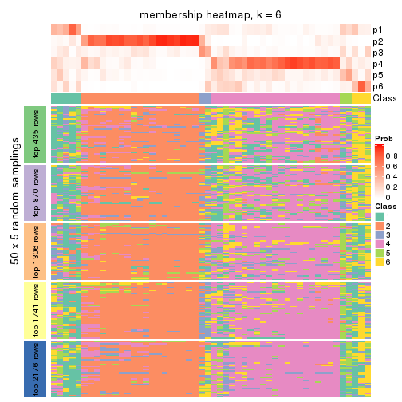
As soon as we have had the classes for columns, we can look for signatures which are significantly different between classes which can be candidate marks for certain classes. Following are the heatmaps for signatures.
Signature heatmaps where rows are scaled:
get_signatures(res, k = 2)
get_signatures(res, k = 3)
get_signatures(res, k = 4)
get_signatures(res, k = 5)
get_signatures(res, k = 6)
Signature heatmaps where rows are not scaled:
get_signatures(res, k = 2, scale_rows = FALSE)
get_signatures(res, k = 3, scale_rows = FALSE)
get_signatures(res, k = 4, scale_rows = FALSE)
get_signatures(res, k = 5, scale_rows = FALSE)
get_signatures(res, k = 6, scale_rows = FALSE)
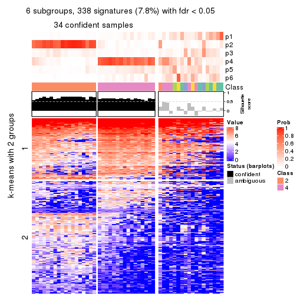
Compare the overlap of signatures from different k:
compare_signatures(res)
get_signature() returns a data frame invisibly. TO get the list of signatures, the function
call should be assigned to a variable explicitly. In following code, if plot argument is set
to FALSE, no heatmap is plotted while only the differential analysis is performed.
# code only for demonstration
tb = get_signature(res, k = ..., plot = FALSE)
An example of the output of tb is:
#> which_row fdr mean_1 mean_2 scaled_mean_1 scaled_mean_2 km
#> 1 38 0.042760348 8.373488 9.131774 -0.5533452 0.5164555 1
#> 2 40 0.018707592 7.106213 8.469186 -0.6173731 0.5762149 1
#> 3 55 0.019134737 10.221463 11.207825 -0.6159697 0.5749050 1
#> 4 59 0.006059896 5.921854 7.869574 -0.6899429 0.6439467 1
#> 5 60 0.018055526 8.928898 10.211722 -0.6204761 0.5791110 1
#> 6 98 0.009384629 15.714769 14.887706 0.6635654 -0.6193277 2
...
The columns in tb are:
which_row: row indices corresponding to the input matrix.fdr: FDR for the differential test. mean_x: The mean value in group x.scaled_mean_x: The mean value in group x after rows are scaled.km: Row groups if k-means clustering is applied to rows.UMAP plot which shows how samples are separated.
dimension_reduction(res, k = 2, method = "UMAP")
dimension_reduction(res, k = 3, method = "UMAP")
dimension_reduction(res, k = 4, method = "UMAP")
dimension_reduction(res, k = 5, method = "UMAP")
dimension_reduction(res, k = 6, method = "UMAP")
Following heatmap shows how subgroups are split when increasing k:
collect_classes(res)
If matrix rows can be associated to genes, consider to use GO_Enrichment(res,
...) to perform function enrichment for the signature genes.
The object with results only for a single top-value method and a single partition method can be extracted as:
res = res_list["ATC", "hclust"]
# you can also extract it by
# res = res_list["ATC:hclust"]
A summary of res and all the functions that can be applied to it:
res
#> A 'ConsensusPartition' object with k = 2, 3, 4, 5, 6.
#> On a matrix with 4352 rows and 52 columns.
#> Top rows (435, 870, 1306, 1741, 2176) are extracted by 'ATC' method.
#> Subgroups are detected by 'hclust' method.
#> Performed in total 1250 partitions by row resampling.
#> Best k for subgroups seems to be 2.
#>
#> Following methods can be applied to this 'ConsensusPartition' object:
#> [1] "cola_report" "collect_classes" "collect_plots"
#> [4] "collect_stats" "colnames" "compare_signatures"
#> [7] "consensus_heatmap" "dimension_reduction" "functional_enrichment"
#> [10] "get_anno_col" "get_anno" "get_classes"
#> [13] "get_consensus" "get_matrix" "get_membership"
#> [16] "get_param" "get_signatures" "get_stats"
#> [19] "is_best_k" "is_stable_k" "membership_heatmap"
#> [22] "ncol" "nrow" "plot_ecdf"
#> [25] "rownames" "select_partition_number" "show"
#> [28] "suggest_best_k" "test_to_known_factors"
collect_plots() function collects all the plots made from res for all k (number of partitions)
into one single page to provide an easy and fast comparison between different k.
collect_plots(res)
The plots are:
k and the heatmap of
predicted classes for each k.k.k.k.All the plots in panels can be made by individual functions and they are plotted later in this section.
select_partition_number() produces several plots showing different
statistics for choosing “optimized” k. There are following statistics:
k;k, the area increased is defined as \(A_k - A_{k-1}\).The detailed explanations of these statistics can be found in the cola vignette.
Generally speaking, lower PAC score, higher mean silhouette score or higher
concordance corresponds to better partition. Rand index and Jaccard index
measure how similar the current partition is compared to partition with k-1.
If they are too similar, we won't accept k is better than k-1.
select_partition_number(res)
The numeric values for all these statistics can be obtained by get_stats().
get_stats(res)
#> k 1-PAC mean_silhouette concordance area_increased Rand Jaccard
#> 2 2 0.959 0.965 0.984 0.4212 0.581 0.581
#> 3 3 0.710 0.855 0.918 0.5016 0.784 0.629
#> 4 4 0.712 0.782 0.874 0.1184 0.921 0.784
#> 5 5 0.734 0.766 0.861 0.0452 1.000 1.000
#> 6 6 0.741 0.708 0.841 0.0157 0.997 0.989
suggest_best_k() suggests the best \(k\) based on these statistics. The rules are as follows:
NA.suggest_best_k(res)
#> [1] 2
Following shows the table of the partitions (You need to click the show/hide
code output link to see it). The membership matrix (columns with name p*)
is inferred by
clue::cl_consensus()
function with the SE method. Basically the value in the membership matrix
represents the probability to belong to a certain group. The finall class
label for an item is determined with the group with highest probability it
belongs to.
In get_classes() function, the entropy is calculated from the membership
matrix and the silhouette score is calculated from the consensus matrix.
cbind(get_classes(res, k = 2), get_membership(res, k = 2))
#> class entropy silhouette p1 p2
#> SRR2042654 1 0.0000 0.976 1.000 0.000
#> SRR2042653 1 0.0000 0.976 1.000 0.000
#> SRR2042652 1 0.0000 0.976 1.000 0.000
#> SRR2042650 1 0.0672 0.972 0.992 0.008
#> SRR2042649 2 0.0000 0.985 0.000 1.000
#> SRR2042647 2 0.0000 0.985 0.000 1.000
#> SRR2042648 2 0.0000 0.985 0.000 1.000
#> SRR2042646 2 0.0000 0.985 0.000 1.000
#> SRR2042645 2 0.1184 0.972 0.016 0.984
#> SRR2042644 2 0.0000 0.985 0.000 1.000
#> SRR2042643 1 0.7745 0.704 0.772 0.228
#> SRR2042642 2 0.0000 0.985 0.000 1.000
#> SRR2042640 2 0.0000 0.985 0.000 1.000
#> SRR2042641 2 0.0000 0.985 0.000 1.000
#> SRR2042639 2 0.0000 0.985 0.000 1.000
#> SRR2042638 2 0.0000 0.985 0.000 1.000
#> SRR2042637 2 0.0000 0.985 0.000 1.000
#> SRR2042636 2 0.5946 0.835 0.144 0.856
#> SRR2042634 2 0.7376 0.744 0.208 0.792
#> SRR2042635 2 0.0000 0.985 0.000 1.000
#> SRR2042633 2 0.0000 0.985 0.000 1.000
#> SRR2042631 2 0.0000 0.985 0.000 1.000
#> SRR2042632 2 0.0000 0.985 0.000 1.000
#> SRR2042630 2 0.0000 0.985 0.000 1.000
#> SRR2042629 2 0.0000 0.985 0.000 1.000
#> SRR2042628 2 0.1184 0.972 0.016 0.984
#> SRR2042626 2 0.0000 0.985 0.000 1.000
#> SRR2042627 1 0.0000 0.976 1.000 0.000
#> SRR2042624 2 0.0000 0.985 0.000 1.000
#> SRR2042625 1 0.0000 0.976 1.000 0.000
#> SRR2042623 1 0.0000 0.976 1.000 0.000
#> SRR2042622 1 0.0000 0.976 1.000 0.000
#> SRR2042620 2 0.0000 0.985 0.000 1.000
#> SRR2042621 2 0.0000 0.985 0.000 1.000
#> SRR2042619 2 0.0376 0.982 0.004 0.996
#> SRR2042618 2 0.0000 0.985 0.000 1.000
#> SRR2042617 1 0.3879 0.911 0.924 0.076
#> SRR2042616 2 0.0000 0.985 0.000 1.000
#> SRR2042615 2 0.0000 0.985 0.000 1.000
#> SRR2042614 2 0.0000 0.985 0.000 1.000
#> SRR2042613 2 0.0000 0.985 0.000 1.000
#> SRR2042612 1 0.0000 0.976 1.000 0.000
#> SRR2042610 1 0.0000 0.976 1.000 0.000
#> SRR2042611 2 0.0000 0.985 0.000 1.000
#> SRR2042607 2 0.0000 0.985 0.000 1.000
#> SRR2042609 1 0.0000 0.976 1.000 0.000
#> SRR2042608 2 0.0000 0.985 0.000 1.000
#> SRR2042656 2 0.0000 0.985 0.000 1.000
#> SRR2042658 2 0.0000 0.985 0.000 1.000
#> SRR2042659 1 0.0000 0.976 1.000 0.000
#> SRR2042657 2 0.5946 0.836 0.144 0.856
#> SRR2042655 1 0.0672 0.972 0.992 0.008
cbind(get_classes(res, k = 3), get_membership(res, k = 3))
#> class entropy silhouette p1 p2 p3
#> SRR2042654 1 0.0000 0.967 1.000 0.000 0.000
#> SRR2042653 1 0.0747 0.966 0.984 0.016 0.000
#> SRR2042652 1 0.0000 0.967 1.000 0.000 0.000
#> SRR2042650 1 0.1031 0.963 0.976 0.024 0.000
#> SRR2042649 3 0.0000 0.896 0.000 0.000 1.000
#> SRR2042647 2 0.2625 0.882 0.000 0.916 0.084
#> SRR2042648 3 0.5291 0.682 0.000 0.268 0.732
#> SRR2042646 3 0.0892 0.887 0.000 0.020 0.980
#> SRR2042645 2 0.2584 0.877 0.008 0.928 0.064
#> SRR2042644 3 0.0000 0.896 0.000 0.000 1.000
#> SRR2042643 1 0.5529 0.638 0.704 0.296 0.000
#> SRR2042642 3 0.5291 0.682 0.000 0.268 0.732
#> SRR2042640 2 0.6095 0.344 0.000 0.608 0.392
#> SRR2042641 3 0.0000 0.896 0.000 0.000 1.000
#> SRR2042639 3 0.4399 0.766 0.000 0.188 0.812
#> SRR2042638 3 0.5291 0.682 0.000 0.268 0.732
#> SRR2042637 3 0.0000 0.896 0.000 0.000 1.000
#> SRR2042636 2 0.3886 0.801 0.096 0.880 0.024
#> SRR2042634 2 0.3918 0.731 0.140 0.856 0.004
#> SRR2042635 3 0.5291 0.682 0.000 0.268 0.732
#> SRR2042633 3 0.0000 0.896 0.000 0.000 1.000
#> SRR2042631 2 0.2625 0.882 0.000 0.916 0.084
#> SRR2042632 3 0.0000 0.896 0.000 0.000 1.000
#> SRR2042630 3 0.0000 0.896 0.000 0.000 1.000
#> SRR2042629 2 0.3116 0.875 0.000 0.892 0.108
#> SRR2042628 3 0.3272 0.825 0.004 0.104 0.892
#> SRR2042626 3 0.5706 0.589 0.000 0.320 0.680
#> SRR2042627 1 0.0747 0.966 0.984 0.016 0.000
#> SRR2042624 3 0.1163 0.887 0.000 0.028 0.972
#> SRR2042625 1 0.0592 0.967 0.988 0.012 0.000
#> SRR2042623 1 0.0000 0.967 1.000 0.000 0.000
#> SRR2042622 1 0.0000 0.967 1.000 0.000 0.000
#> SRR2042620 2 0.4062 0.825 0.000 0.836 0.164
#> SRR2042621 3 0.1163 0.887 0.000 0.028 0.972
#> SRR2042619 2 0.3030 0.882 0.004 0.904 0.092
#> SRR2042618 3 0.0000 0.896 0.000 0.000 1.000
#> SRR2042617 1 0.3038 0.897 0.896 0.104 0.000
#> SRR2042616 3 0.0000 0.896 0.000 0.000 1.000
#> SRR2042615 3 0.0000 0.896 0.000 0.000 1.000
#> SRR2042614 3 0.0000 0.896 0.000 0.000 1.000
#> SRR2042613 3 0.0000 0.896 0.000 0.000 1.000
#> SRR2042612 1 0.0237 0.966 0.996 0.004 0.000
#> SRR2042610 1 0.0592 0.967 0.988 0.012 0.000
#> SRR2042611 3 0.5291 0.682 0.000 0.268 0.732
#> SRR2042607 2 0.3340 0.868 0.000 0.880 0.120
#> SRR2042609 1 0.0000 0.967 1.000 0.000 0.000
#> SRR2042608 3 0.0424 0.893 0.000 0.008 0.992
#> SRR2042656 3 0.3619 0.816 0.000 0.136 0.864
#> SRR2042658 3 0.0892 0.887 0.000 0.020 0.980
#> SRR2042659 1 0.0237 0.967 0.996 0.004 0.000
#> SRR2042657 2 0.4295 0.801 0.104 0.864 0.032
#> SRR2042655 1 0.1031 0.962 0.976 0.024 0.000
cbind(get_classes(res, k = 4), get_membership(res, k = 4))
#> class entropy silhouette p1 p2 p3 p4
#> SRR2042654 1 0.0000 0.952 1.000 0.000 0.000 0.000
#> SRR2042653 1 0.1022 0.949 0.968 0.000 0.032 0.000
#> SRR2042652 1 0.0000 0.952 1.000 0.000 0.000 0.000
#> SRR2042650 1 0.1545 0.944 0.952 0.000 0.040 0.008
#> SRR2042649 2 0.1716 0.715 0.000 0.936 0.064 0.000
#> SRR2042647 4 0.1004 0.871 0.000 0.024 0.004 0.972
#> SRR2042648 2 0.4431 0.613 0.000 0.696 0.000 0.304
#> SRR2042646 3 0.4866 0.794 0.000 0.404 0.596 0.000
#> SRR2042645 4 0.0376 0.862 0.000 0.004 0.004 0.992
#> SRR2042644 2 0.0188 0.748 0.000 0.996 0.004 0.000
#> SRR2042643 1 0.7080 0.500 0.568 0.000 0.236 0.196
#> SRR2042642 2 0.4431 0.613 0.000 0.696 0.000 0.304
#> SRR2042640 4 0.4643 0.347 0.000 0.344 0.000 0.656
#> SRR2042641 2 0.2921 0.612 0.000 0.860 0.140 0.000
#> SRR2042639 2 0.3764 0.655 0.000 0.784 0.000 0.216
#> SRR2042638 2 0.4431 0.613 0.000 0.696 0.000 0.304
#> SRR2042637 2 0.1022 0.737 0.000 0.968 0.032 0.000
#> SRR2042636 4 0.3196 0.794 0.008 0.000 0.136 0.856
#> SRR2042634 4 0.4840 0.706 0.028 0.000 0.240 0.732
#> SRR2042635 2 0.4431 0.613 0.000 0.696 0.000 0.304
#> SRR2042633 2 0.1004 0.741 0.000 0.972 0.024 0.004
#> SRR2042631 4 0.1004 0.871 0.000 0.024 0.004 0.972
#> SRR2042632 2 0.1637 0.719 0.000 0.940 0.060 0.000
#> SRR2042630 2 0.1302 0.730 0.000 0.956 0.044 0.000
#> SRR2042629 4 0.1302 0.865 0.000 0.044 0.000 0.956
#> SRR2042628 3 0.4253 0.780 0.000 0.208 0.776 0.016
#> SRR2042626 2 0.4730 0.534 0.000 0.636 0.000 0.364
#> SRR2042627 1 0.1022 0.949 0.968 0.000 0.032 0.000
#> SRR2042624 3 0.4950 0.865 0.000 0.376 0.620 0.004
#> SRR2042625 1 0.1211 0.948 0.960 0.000 0.040 0.000
#> SRR2042623 1 0.0000 0.952 1.000 0.000 0.000 0.000
#> SRR2042622 1 0.0000 0.952 1.000 0.000 0.000 0.000
#> SRR2042620 4 0.2345 0.821 0.000 0.100 0.000 0.900
#> SRR2042621 3 0.4950 0.865 0.000 0.376 0.620 0.004
#> SRR2042619 4 0.1356 0.871 0.000 0.032 0.008 0.960
#> SRR2042618 2 0.0000 0.750 0.000 1.000 0.000 0.000
#> SRR2042617 1 0.3335 0.880 0.856 0.000 0.128 0.016
#> SRR2042616 2 0.0000 0.750 0.000 1.000 0.000 0.000
#> SRR2042615 2 0.0000 0.750 0.000 1.000 0.000 0.000
#> SRR2042614 2 0.0000 0.750 0.000 1.000 0.000 0.000
#> SRR2042613 2 0.1022 0.738 0.000 0.968 0.032 0.000
#> SRR2042612 1 0.0188 0.951 0.996 0.000 0.004 0.000
#> SRR2042610 1 0.0592 0.952 0.984 0.000 0.016 0.000
#> SRR2042611 2 0.4431 0.613 0.000 0.696 0.000 0.304
#> SRR2042607 4 0.1557 0.859 0.000 0.056 0.000 0.944
#> SRR2042609 1 0.0000 0.952 1.000 0.000 0.000 0.000
#> SRR2042608 2 0.3933 0.453 0.000 0.792 0.200 0.008
#> SRR2042656 2 0.3123 0.697 0.000 0.844 0.000 0.156
#> SRR2042658 3 0.4500 0.856 0.000 0.316 0.684 0.000
#> SRR2042659 1 0.0469 0.951 0.988 0.000 0.012 0.000
#> SRR2042657 4 0.3377 0.790 0.012 0.000 0.140 0.848
#> SRR2042655 1 0.1545 0.943 0.952 0.000 0.040 0.008
cbind(get_classes(res, k = 5), get_membership(res, k = 5))
#> class entropy silhouette p1 p2 p3 p4 p5
#> SRR2042654 1 0.0162 0.942 0.996 0.000 0.000 0.000 NA
#> SRR2042653 1 0.0963 0.940 0.964 0.000 0.000 0.000 NA
#> SRR2042652 1 0.0162 0.942 0.996 0.000 0.000 0.000 NA
#> SRR2042650 1 0.1341 0.935 0.944 0.000 0.000 0.000 NA
#> SRR2042649 2 0.2331 0.735 0.000 0.900 0.080 0.000 NA
#> SRR2042647 4 0.0727 0.836 0.000 0.004 0.004 0.980 NA
#> SRR2042648 2 0.4474 0.611 0.000 0.652 0.004 0.332 NA
#> SRR2042646 3 0.4402 0.712 0.000 0.204 0.740 0.000 NA
#> SRR2042645 4 0.1704 0.823 0.000 0.000 0.004 0.928 NA
#> SRR2042644 2 0.0290 0.774 0.000 0.992 0.008 0.000 NA
#> SRR2042643 1 0.5492 0.448 0.536 0.000 0.000 0.068 NA
#> SRR2042642 2 0.4457 0.616 0.000 0.656 0.004 0.328 NA
#> SRR2042640 4 0.4325 0.371 0.000 0.300 0.004 0.684 NA
#> SRR2042641 2 0.3950 0.640 0.000 0.796 0.136 0.000 NA
#> SRR2042639 2 0.3962 0.691 0.000 0.744 0.004 0.240 NA
#> SRR2042638 2 0.4457 0.616 0.000 0.656 0.004 0.328 NA
#> SRR2042637 2 0.1124 0.765 0.000 0.960 0.036 0.000 NA
#> SRR2042636 4 0.3766 0.704 0.000 0.000 0.004 0.728 NA
#> SRR2042634 4 0.4182 0.591 0.000 0.000 0.000 0.600 NA
#> SRR2042635 2 0.4457 0.616 0.000 0.656 0.004 0.328 NA
#> SRR2042633 2 0.1074 0.772 0.000 0.968 0.016 0.004 NA
#> SRR2042631 4 0.1026 0.835 0.000 0.004 0.004 0.968 NA
#> SRR2042632 2 0.2110 0.744 0.000 0.912 0.072 0.000 NA
#> SRR2042630 2 0.1740 0.756 0.000 0.932 0.056 0.000 NA
#> SRR2042629 4 0.0451 0.832 0.000 0.008 0.000 0.988 NA
#> SRR2042628 3 0.4331 0.653 0.000 0.004 0.596 0.000 NA
#> SRR2042626 2 0.4676 0.506 0.000 0.592 0.004 0.392 NA
#> SRR2042627 1 0.0963 0.940 0.964 0.000 0.000 0.000 NA
#> SRR2042624 3 0.2561 0.818 0.000 0.144 0.856 0.000 NA
#> SRR2042625 1 0.1341 0.935 0.944 0.000 0.000 0.000 NA
#> SRR2042623 1 0.0162 0.942 0.996 0.000 0.000 0.000 NA
#> SRR2042622 1 0.0162 0.942 0.996 0.000 0.000 0.000 NA
#> SRR2042620 4 0.1857 0.791 0.000 0.060 0.004 0.928 NA
#> SRR2042621 3 0.2561 0.818 0.000 0.144 0.856 0.000 NA
#> SRR2042619 4 0.1059 0.837 0.000 0.008 0.004 0.968 NA
#> SRR2042618 2 0.0000 0.776 0.000 1.000 0.000 0.000 NA
#> SRR2042617 1 0.2773 0.857 0.836 0.000 0.000 0.000 NA
#> SRR2042616 2 0.0000 0.776 0.000 1.000 0.000 0.000 NA
#> SRR2042615 2 0.0000 0.776 0.000 1.000 0.000 0.000 NA
#> SRR2042614 2 0.0000 0.776 0.000 1.000 0.000 0.000 NA
#> SRR2042613 2 0.1082 0.766 0.000 0.964 0.028 0.000 NA
#> SRR2042612 1 0.0404 0.941 0.988 0.000 0.000 0.000 NA
#> SRR2042610 1 0.0880 0.941 0.968 0.000 0.000 0.000 NA
#> SRR2042611 2 0.4457 0.616 0.000 0.656 0.004 0.328 NA
#> SRR2042607 4 0.0798 0.827 0.000 0.016 0.000 0.976 NA
#> SRR2042609 1 0.0162 0.942 0.996 0.000 0.000 0.000 NA
#> SRR2042608 2 0.5936 0.378 0.000 0.636 0.240 0.028 NA
#> SRR2042656 2 0.3167 0.728 0.000 0.820 0.004 0.172 NA
#> SRR2042658 3 0.3647 0.770 0.000 0.052 0.816 0.000 NA
#> SRR2042659 1 0.0510 0.942 0.984 0.000 0.000 0.000 NA
#> SRR2042657 4 0.3969 0.681 0.000 0.000 0.004 0.692 NA
#> SRR2042655 1 0.1270 0.935 0.948 0.000 0.000 0.000 NA
cbind(get_classes(res, k = 6), get_membership(res, k = 6))
#> class entropy silhouette p1 p2 p3 p4 p5 p6
#> SRR2042654 1 0.0146 0.9286 0.996 0.000 0.000 0.000 0.000 0.004
#> SRR2042653 1 0.1141 0.9269 0.948 0.000 0.000 0.000 0.000 0.052
#> SRR2042652 1 0.0146 0.9286 0.996 0.000 0.000 0.000 0.000 0.004
#> SRR2042650 1 0.1501 0.9209 0.924 0.000 0.000 0.000 0.000 0.076
#> SRR2042649 2 0.2051 0.7210 0.000 0.896 0.096 0.000 0.004 0.004
#> SRR2042647 4 0.0622 0.7863 0.000 0.000 0.000 0.980 0.008 0.012
#> SRR2042648 2 0.4134 0.6006 0.000 0.640 0.000 0.340 0.004 0.016
#> SRR2042646 3 0.3424 0.5610 0.000 0.168 0.796 0.000 0.004 0.032
#> SRR2042645 4 0.2673 0.7519 0.000 0.000 0.004 0.852 0.012 0.132
#> SRR2042644 2 0.0146 0.7632 0.000 0.996 0.004 0.000 0.000 0.000
#> SRR2042643 1 0.4494 0.3564 0.512 0.000 0.000 0.012 0.012 0.464
#> SRR2042642 2 0.4119 0.6055 0.000 0.644 0.000 0.336 0.004 0.016
#> SRR2042640 4 0.3915 0.3550 0.000 0.288 0.000 0.692 0.004 0.016
#> SRR2042641 2 0.3752 0.6138 0.000 0.776 0.168 0.000 0.004 0.052
#> SRR2042639 2 0.3697 0.6821 0.000 0.732 0.000 0.248 0.004 0.016
#> SRR2042638 2 0.4119 0.6055 0.000 0.644 0.000 0.336 0.004 0.016
#> SRR2042637 2 0.0935 0.7538 0.000 0.964 0.032 0.000 0.000 0.004
#> SRR2042636 4 0.3887 0.5782 0.000 0.000 0.000 0.632 0.008 0.360
#> SRR2042634 4 0.4403 0.4357 0.000 0.000 0.000 0.508 0.024 0.468
#> SRR2042635 2 0.4119 0.6055 0.000 0.644 0.000 0.336 0.004 0.016
#> SRR2042633 2 0.1167 0.7605 0.000 0.960 0.020 0.008 0.000 0.012
#> SRR2042631 4 0.1196 0.7850 0.000 0.000 0.000 0.952 0.008 0.040
#> SRR2042632 2 0.1897 0.7299 0.000 0.908 0.084 0.000 0.004 0.004
#> SRR2042630 2 0.1524 0.7435 0.000 0.932 0.060 0.000 0.000 0.008
#> SRR2042629 4 0.0146 0.7828 0.000 0.000 0.000 0.996 0.000 0.004
#> SRR2042628 5 0.2006 0.0000 0.000 0.000 0.104 0.000 0.892 0.004
#> SRR2042626 2 0.4301 0.4977 0.000 0.580 0.000 0.400 0.004 0.016
#> SRR2042627 1 0.1204 0.9265 0.944 0.000 0.000 0.000 0.000 0.056
#> SRR2042624 3 0.3419 0.6897 0.000 0.104 0.812 0.000 0.084 0.000
#> SRR2042625 1 0.1556 0.9201 0.920 0.000 0.000 0.000 0.000 0.080
#> SRR2042623 1 0.0146 0.9286 0.996 0.000 0.000 0.000 0.000 0.004
#> SRR2042622 1 0.0146 0.9286 0.996 0.000 0.000 0.000 0.000 0.004
#> SRR2042620 4 0.1578 0.7469 0.000 0.048 0.000 0.936 0.004 0.012
#> SRR2042621 3 0.3419 0.6897 0.000 0.104 0.812 0.000 0.084 0.000
#> SRR2042619 4 0.1225 0.7874 0.000 0.000 0.000 0.952 0.012 0.036
#> SRR2042618 2 0.0146 0.7647 0.000 0.996 0.000 0.004 0.000 0.000
#> SRR2042617 1 0.2877 0.8422 0.820 0.000 0.000 0.000 0.012 0.168
#> SRR2042616 2 0.0146 0.7647 0.000 0.996 0.000 0.004 0.000 0.000
#> SRR2042615 2 0.0146 0.7647 0.000 0.996 0.000 0.004 0.000 0.000
#> SRR2042614 2 0.0146 0.7647 0.000 0.996 0.000 0.004 0.000 0.000
#> SRR2042613 2 0.0858 0.7550 0.000 0.968 0.028 0.000 0.000 0.004
#> SRR2042612 1 0.1370 0.9230 0.948 0.000 0.004 0.000 0.012 0.036
#> SRR2042610 1 0.0865 0.9290 0.964 0.000 0.000 0.000 0.000 0.036
#> SRR2042611 2 0.4119 0.6055 0.000 0.644 0.000 0.336 0.004 0.016
#> SRR2042607 4 0.0551 0.7783 0.000 0.004 0.000 0.984 0.004 0.008
#> SRR2042609 1 0.0146 0.9286 0.996 0.000 0.000 0.000 0.000 0.004
#> SRR2042608 2 0.7327 -0.0121 0.000 0.448 0.188 0.032 0.064 0.268
#> SRR2042656 2 0.2989 0.7200 0.000 0.812 0.000 0.176 0.004 0.008
#> SRR2042658 3 0.3693 0.5336 0.000 0.016 0.800 0.000 0.048 0.136
#> SRR2042659 1 0.0632 0.9282 0.976 0.000 0.000 0.000 0.000 0.024
#> SRR2042657 4 0.4408 0.5091 0.000 0.000 0.004 0.560 0.020 0.416
#> SRR2042655 1 0.1387 0.9221 0.932 0.000 0.000 0.000 0.000 0.068
Heatmaps for the consensus matrix. It visualizes the probability of two samples to be in a same group.
consensus_heatmap(res, k = 2)
consensus_heatmap(res, k = 3)
consensus_heatmap(res, k = 4)
consensus_heatmap(res, k = 5)

consensus_heatmap(res, k = 6)
Heatmaps for the membership of samples in all partitions to see how consistent they are:
membership_heatmap(res, k = 2)
membership_heatmap(res, k = 3)
membership_heatmap(res, k = 4)
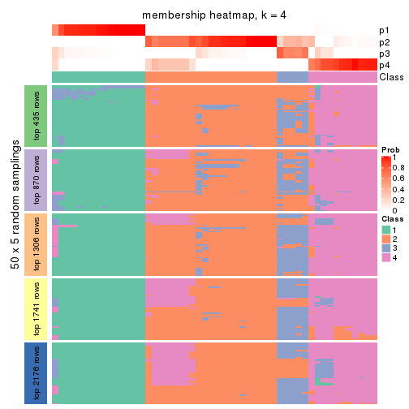
membership_heatmap(res, k = 5)
membership_heatmap(res, k = 6)
As soon as we have had the classes for columns, we can look for signatures which are significantly different between classes which can be candidate marks for certain classes. Following are the heatmaps for signatures.
Signature heatmaps where rows are scaled:
get_signatures(res, k = 2)
get_signatures(res, k = 3)
get_signatures(res, k = 4)
get_signatures(res, k = 5)
get_signatures(res, k = 6)
Signature heatmaps where rows are not scaled:
get_signatures(res, k = 2, scale_rows = FALSE)
get_signatures(res, k = 3, scale_rows = FALSE)

get_signatures(res, k = 4, scale_rows = FALSE)
get_signatures(res, k = 5, scale_rows = FALSE)
get_signatures(res, k = 6, scale_rows = FALSE)
Compare the overlap of signatures from different k:
compare_signatures(res)
get_signature() returns a data frame invisibly. TO get the list of signatures, the function
call should be assigned to a variable explicitly. In following code, if plot argument is set
to FALSE, no heatmap is plotted while only the differential analysis is performed.
# code only for demonstration
tb = get_signature(res, k = ..., plot = FALSE)
An example of the output of tb is:
#> which_row fdr mean_1 mean_2 scaled_mean_1 scaled_mean_2 km
#> 1 38 0.042760348 8.373488 9.131774 -0.5533452 0.5164555 1
#> 2 40 0.018707592 7.106213 8.469186 -0.6173731 0.5762149 1
#> 3 55 0.019134737 10.221463 11.207825 -0.6159697 0.5749050 1
#> 4 59 0.006059896 5.921854 7.869574 -0.6899429 0.6439467 1
#> 5 60 0.018055526 8.928898 10.211722 -0.6204761 0.5791110 1
#> 6 98 0.009384629 15.714769 14.887706 0.6635654 -0.6193277 2
...
The columns in tb are:
which_row: row indices corresponding to the input matrix.fdr: FDR for the differential test. mean_x: The mean value in group x.scaled_mean_x: The mean value in group x after rows are scaled.km: Row groups if k-means clustering is applied to rows.UMAP plot which shows how samples are separated.
dimension_reduction(res, k = 2, method = "UMAP")
dimension_reduction(res, k = 3, method = "UMAP")
dimension_reduction(res, k = 4, method = "UMAP")
dimension_reduction(res, k = 5, method = "UMAP")
dimension_reduction(res, k = 6, method = "UMAP")
Following heatmap shows how subgroups are split when increasing k:
collect_classes(res)
If matrix rows can be associated to genes, consider to use GO_Enrichment(res,
...) to perform function enrichment for the signature genes.
The object with results only for a single top-value method and a single partition method can be extracted as:
res = res_list["ATC", "kmeans"]
# you can also extract it by
# res = res_list["ATC:kmeans"]
A summary of res and all the functions that can be applied to it:
res
#> A 'ConsensusPartition' object with k = 2, 3, 4, 5, 6.
#> On a matrix with 4352 rows and 52 columns.
#> Top rows (435, 870, 1306, 1741, 2176) are extracted by 'ATC' method.
#> Subgroups are detected by 'kmeans' method.
#> Performed in total 1250 partitions by row resampling.
#> Best k for subgroups seems to be 2.
#>
#> Following methods can be applied to this 'ConsensusPartition' object:
#> [1] "cola_report" "collect_classes" "collect_plots"
#> [4] "collect_stats" "colnames" "compare_signatures"
#> [7] "consensus_heatmap" "dimension_reduction" "functional_enrichment"
#> [10] "get_anno_col" "get_anno" "get_classes"
#> [13] "get_consensus" "get_matrix" "get_membership"
#> [16] "get_param" "get_signatures" "get_stats"
#> [19] "is_best_k" "is_stable_k" "membership_heatmap"
#> [22] "ncol" "nrow" "plot_ecdf"
#> [25] "rownames" "select_partition_number" "show"
#> [28] "suggest_best_k" "test_to_known_factors"
collect_plots() function collects all the plots made from res for all k (number of partitions)
into one single page to provide an easy and fast comparison between different k.
collect_plots(res)
The plots are:
k and the heatmap of
predicted classes for each k.k.k.k.All the plots in panels can be made by individual functions and they are plotted later in this section.
select_partition_number() produces several plots showing different
statistics for choosing “optimized” k. There are following statistics:
k;k, the area increased is defined as \(A_k - A_{k-1}\).The detailed explanations of these statistics can be found in the cola vignette.
Generally speaking, lower PAC score, higher mean silhouette score or higher
concordance corresponds to better partition. Rand index and Jaccard index
measure how similar the current partition is compared to partition with k-1.
If they are too similar, we won't accept k is better than k-1.
select_partition_number(res)
The numeric values for all these statistics can be obtained by get_stats().
get_stats(res)
#> k 1-PAC mean_silhouette concordance area_increased Rand Jaccard
#> 2 2 1.000 0.964 0.986 0.4442 0.566 0.566
#> 3 3 0.689 0.835 0.899 0.4806 0.762 0.587
#> 4 4 0.822 0.818 0.904 0.1196 0.883 0.672
#> 5 5 0.782 0.441 0.780 0.0619 0.928 0.752
#> 6 6 0.826 0.886 0.874 0.0392 0.876 0.545
suggest_best_k() suggests the best \(k\) based on these statistics. The rules are as follows:
NA.suggest_best_k(res)
#> [1] 2
Following shows the table of the partitions (You need to click the show/hide
code output link to see it). The membership matrix (columns with name p*)
is inferred by
clue::cl_consensus()
function with the SE method. Basically the value in the membership matrix
represents the probability to belong to a certain group. The finall class
label for an item is determined with the group with highest probability it
belongs to.
In get_classes() function, the entropy is calculated from the membership
matrix and the silhouette score is calculated from the consensus matrix.
cbind(get_classes(res, k = 2), get_membership(res, k = 2))
#> class entropy silhouette p1 p2
#> SRR2042654 1 0.0000 0.9992 1.000 0.000
#> SRR2042653 1 0.0000 0.9992 1.000 0.000
#> SRR2042652 1 0.0000 0.9992 1.000 0.000
#> SRR2042650 1 0.0000 0.9992 1.000 0.000
#> SRR2042649 2 0.0000 0.9800 0.000 1.000
#> SRR2042647 2 0.0000 0.9800 0.000 1.000
#> SRR2042648 2 0.0000 0.9800 0.000 1.000
#> SRR2042646 2 0.0000 0.9800 0.000 1.000
#> SRR2042645 2 0.2778 0.9382 0.048 0.952
#> SRR2042644 2 0.0000 0.9800 0.000 1.000
#> SRR2042643 1 0.0000 0.9992 1.000 0.000
#> SRR2042642 2 0.0000 0.9800 0.000 1.000
#> SRR2042640 2 0.0000 0.9800 0.000 1.000
#> SRR2042641 2 0.0000 0.9800 0.000 1.000
#> SRR2042639 2 0.0000 0.9800 0.000 1.000
#> SRR2042638 2 0.0000 0.9800 0.000 1.000
#> SRR2042637 2 0.0000 0.9800 0.000 1.000
#> SRR2042636 2 0.4298 0.8973 0.088 0.912
#> SRR2042634 1 0.0938 0.9874 0.988 0.012
#> SRR2042635 2 0.0000 0.9800 0.000 1.000
#> SRR2042633 2 0.0000 0.9800 0.000 1.000
#> SRR2042631 2 0.0000 0.9800 0.000 1.000
#> SRR2042632 2 0.0000 0.9800 0.000 1.000
#> SRR2042630 2 0.0000 0.9800 0.000 1.000
#> SRR2042629 2 0.0000 0.9800 0.000 1.000
#> SRR2042628 2 0.3274 0.9271 0.060 0.940
#> SRR2042626 2 0.0000 0.9800 0.000 1.000
#> SRR2042627 1 0.0000 0.9992 1.000 0.000
#> SRR2042624 2 0.0000 0.9800 0.000 1.000
#> SRR2042625 1 0.0000 0.9992 1.000 0.000
#> SRR2042623 1 0.0000 0.9992 1.000 0.000
#> SRR2042622 1 0.0000 0.9992 1.000 0.000
#> SRR2042620 2 0.0000 0.9800 0.000 1.000
#> SRR2042621 2 0.0000 0.9800 0.000 1.000
#> SRR2042619 2 0.0000 0.9800 0.000 1.000
#> SRR2042618 2 0.0000 0.9800 0.000 1.000
#> SRR2042617 1 0.0000 0.9992 1.000 0.000
#> SRR2042616 2 0.0000 0.9800 0.000 1.000
#> SRR2042615 2 0.0000 0.9800 0.000 1.000
#> SRR2042614 2 0.0000 0.9800 0.000 1.000
#> SRR2042613 2 0.0000 0.9800 0.000 1.000
#> SRR2042612 1 0.0000 0.9992 1.000 0.000
#> SRR2042610 1 0.0000 0.9992 1.000 0.000
#> SRR2042611 2 0.0000 0.9800 0.000 1.000
#> SRR2042607 2 0.0000 0.9800 0.000 1.000
#> SRR2042609 1 0.0000 0.9992 1.000 0.000
#> SRR2042608 2 0.0000 0.9800 0.000 1.000
#> SRR2042656 2 0.0000 0.9800 0.000 1.000
#> SRR2042658 2 0.0000 0.9800 0.000 1.000
#> SRR2042659 1 0.0000 0.9992 1.000 0.000
#> SRR2042657 2 1.0000 0.0205 0.500 0.500
#> SRR2042655 1 0.0000 0.9992 1.000 0.000
cbind(get_classes(res, k = 3), get_membership(res, k = 3))
#> class entropy silhouette p1 p2 p3
#> SRR2042654 1 0.0424 0.987 0.992 0.008 0.000
#> SRR2042653 1 0.0592 0.991 0.988 0.012 0.000
#> SRR2042652 1 0.0424 0.987 0.992 0.008 0.000
#> SRR2042650 1 0.0747 0.991 0.984 0.016 0.000
#> SRR2042649 3 0.0000 0.812 0.000 0.000 1.000
#> SRR2042647 2 0.1031 0.864 0.000 0.976 0.024
#> SRR2042648 3 0.5591 0.722 0.000 0.304 0.696
#> SRR2042646 3 0.0892 0.806 0.000 0.020 0.980
#> SRR2042645 2 0.1031 0.861 0.024 0.976 0.000
#> SRR2042644 3 0.0424 0.817 0.000 0.008 0.992
#> SRR2042643 1 0.0747 0.991 0.984 0.016 0.000
#> SRR2042642 3 0.5591 0.722 0.000 0.304 0.696
#> SRR2042640 2 0.3941 0.726 0.000 0.844 0.156
#> SRR2042641 3 0.0237 0.815 0.000 0.004 0.996
#> SRR2042639 3 0.4887 0.778 0.000 0.228 0.772
#> SRR2042638 3 0.5254 0.755 0.000 0.264 0.736
#> SRR2042637 3 0.0424 0.817 0.000 0.008 0.992
#> SRR2042636 2 0.1031 0.861 0.024 0.976 0.000
#> SRR2042634 2 0.4291 0.710 0.180 0.820 0.000
#> SRR2042635 3 0.5591 0.722 0.000 0.304 0.696
#> SRR2042633 3 0.1031 0.820 0.000 0.024 0.976
#> SRR2042631 2 0.0747 0.866 0.000 0.984 0.016
#> SRR2042632 3 0.0000 0.812 0.000 0.000 1.000
#> SRR2042630 3 0.0892 0.819 0.000 0.020 0.980
#> SRR2042629 2 0.1031 0.864 0.000 0.976 0.024
#> SRR2042628 2 0.6252 0.545 0.008 0.648 0.344
#> SRR2042626 3 0.5591 0.722 0.000 0.304 0.696
#> SRR2042627 1 0.0747 0.991 0.984 0.016 0.000
#> SRR2042624 2 0.6079 0.494 0.000 0.612 0.388
#> SRR2042625 1 0.0592 0.991 0.988 0.012 0.000
#> SRR2042623 1 0.0424 0.987 0.992 0.008 0.000
#> SRR2042622 1 0.0424 0.987 0.992 0.008 0.000
#> SRR2042620 2 0.2878 0.806 0.000 0.904 0.096
#> SRR2042621 3 0.2537 0.764 0.000 0.080 0.920
#> SRR2042619 2 0.0592 0.866 0.000 0.988 0.012
#> SRR2042618 3 0.3941 0.813 0.000 0.156 0.844
#> SRR2042617 1 0.0747 0.991 0.984 0.016 0.000
#> SRR2042616 3 0.3941 0.813 0.000 0.156 0.844
#> SRR2042615 3 0.3412 0.818 0.000 0.124 0.876
#> SRR2042614 3 0.3941 0.813 0.000 0.156 0.844
#> SRR2042613 3 0.0424 0.817 0.000 0.008 0.992
#> SRR2042612 1 0.0747 0.991 0.984 0.016 0.000
#> SRR2042610 1 0.0000 0.989 1.000 0.000 0.000
#> SRR2042611 3 0.5591 0.722 0.000 0.304 0.696
#> SRR2042607 2 0.1289 0.861 0.000 0.968 0.032
#> SRR2042609 1 0.0424 0.987 0.992 0.008 0.000
#> SRR2042608 3 0.4842 0.576 0.000 0.224 0.776
#> SRR2042656 3 0.5591 0.722 0.000 0.304 0.696
#> SRR2042658 3 0.4399 0.638 0.000 0.188 0.812
#> SRR2042659 1 0.0592 0.991 0.988 0.012 0.000
#> SRR2042657 2 0.1753 0.847 0.048 0.952 0.000
#> SRR2042655 1 0.0747 0.991 0.984 0.016 0.000
cbind(get_classes(res, k = 4), get_membership(res, k = 4))
#> class entropy silhouette p1 p2 p3 p4
#> SRR2042654 1 0.3047 0.9089 0.872 0.000 0.116 0.012
#> SRR2042653 1 0.0188 0.9450 0.996 0.000 0.000 0.004
#> SRR2042652 1 0.3047 0.9089 0.872 0.000 0.116 0.012
#> SRR2042650 1 0.1520 0.9431 0.956 0.000 0.024 0.020
#> SRR2042649 3 0.4830 0.5364 0.000 0.392 0.608 0.000
#> SRR2042647 4 0.1109 0.9429 0.000 0.028 0.004 0.968
#> SRR2042648 2 0.0336 0.8891 0.000 0.992 0.000 0.008
#> SRR2042646 3 0.2973 0.7813 0.000 0.144 0.856 0.000
#> SRR2042645 4 0.0927 0.9357 0.008 0.000 0.016 0.976
#> SRR2042644 2 0.1302 0.8575 0.000 0.956 0.044 0.000
#> SRR2042643 1 0.1520 0.9431 0.956 0.000 0.024 0.020
#> SRR2042642 2 0.0336 0.8891 0.000 0.992 0.000 0.008
#> SRR2042640 4 0.4122 0.6898 0.000 0.236 0.004 0.760
#> SRR2042641 3 0.4967 0.4227 0.000 0.452 0.548 0.000
#> SRR2042639 2 0.0336 0.8891 0.000 0.992 0.000 0.008
#> SRR2042638 2 0.0188 0.8891 0.000 0.996 0.000 0.004
#> SRR2042637 2 0.4994 -0.2896 0.000 0.520 0.480 0.000
#> SRR2042636 4 0.0804 0.9352 0.012 0.000 0.008 0.980
#> SRR2042634 4 0.1042 0.9308 0.020 0.000 0.008 0.972
#> SRR2042635 2 0.0336 0.8891 0.000 0.992 0.000 0.008
#> SRR2042633 2 0.4866 0.0204 0.000 0.596 0.404 0.000
#> SRR2042631 4 0.1004 0.9435 0.000 0.024 0.004 0.972
#> SRR2042632 3 0.4961 0.4225 0.000 0.448 0.552 0.000
#> SRR2042630 2 0.0592 0.8799 0.000 0.984 0.016 0.000
#> SRR2042629 4 0.1109 0.9429 0.000 0.028 0.004 0.968
#> SRR2042628 3 0.3323 0.6917 0.064 0.000 0.876 0.060
#> SRR2042626 2 0.0469 0.8855 0.000 0.988 0.000 0.012
#> SRR2042627 1 0.1520 0.9431 0.956 0.000 0.024 0.020
#> SRR2042624 3 0.3487 0.7439 0.016 0.040 0.880 0.064
#> SRR2042625 1 0.0895 0.9458 0.976 0.000 0.020 0.004
#> SRR2042623 1 0.3047 0.9089 0.872 0.000 0.116 0.012
#> SRR2042622 1 0.2988 0.9104 0.876 0.000 0.112 0.012
#> SRR2042620 4 0.2714 0.8657 0.000 0.112 0.004 0.884
#> SRR2042621 3 0.3196 0.7832 0.000 0.136 0.856 0.008
#> SRR2042619 4 0.1151 0.9436 0.000 0.024 0.008 0.968
#> SRR2042618 2 0.0524 0.8880 0.000 0.988 0.008 0.004
#> SRR2042617 1 0.1520 0.9431 0.956 0.000 0.024 0.020
#> SRR2042616 2 0.0524 0.8880 0.000 0.988 0.008 0.004
#> SRR2042615 2 0.0469 0.8858 0.000 0.988 0.012 0.000
#> SRR2042614 2 0.0524 0.8880 0.000 0.988 0.008 0.004
#> SRR2042613 2 0.4164 0.4914 0.000 0.736 0.264 0.000
#> SRR2042612 1 0.1151 0.9452 0.968 0.000 0.024 0.008
#> SRR2042610 1 0.0657 0.9430 0.984 0.000 0.012 0.004
#> SRR2042611 2 0.0336 0.8891 0.000 0.992 0.000 0.008
#> SRR2042607 4 0.1209 0.9412 0.000 0.032 0.004 0.964
#> SRR2042609 1 0.3047 0.9089 0.872 0.000 0.116 0.012
#> SRR2042608 3 0.4285 0.7759 0.000 0.156 0.804 0.040
#> SRR2042656 2 0.0336 0.8891 0.000 0.992 0.000 0.008
#> SRR2042658 3 0.3319 0.7740 0.012 0.096 0.876 0.016
#> SRR2042659 1 0.0657 0.9460 0.984 0.000 0.012 0.004
#> SRR2042657 4 0.0804 0.9352 0.012 0.000 0.008 0.980
#> SRR2042655 1 0.1297 0.9450 0.964 0.000 0.020 0.016
cbind(get_classes(res, k = 5), get_membership(res, k = 5))
#> class entropy silhouette p1 p2 p3 p4 p5
#> SRR2042654 1 0.0000 0.3308 1.000 0.000 0.000 0.000 0.000
#> SRR2042653 1 0.4446 -0.7091 0.520 0.000 0.004 0.000 0.476
#> SRR2042652 1 0.0000 0.3308 1.000 0.000 0.000 0.000 0.000
#> SRR2042650 1 0.4659 -0.8103 0.496 0.000 0.000 0.012 0.492
#> SRR2042649 2 0.5520 -0.0805 0.000 0.560 0.364 0.000 0.076
#> SRR2042647 4 0.0404 0.9165 0.000 0.000 0.000 0.988 0.012
#> SRR2042648 2 0.4165 0.7390 0.000 0.672 0.000 0.008 0.320
#> SRR2042646 3 0.1626 0.8877 0.000 0.016 0.940 0.000 0.044
#> SRR2042645 4 0.2304 0.9005 0.000 0.000 0.008 0.892 0.100
#> SRR2042644 2 0.0324 0.5944 0.000 0.992 0.004 0.000 0.004
#> SRR2042643 5 0.4981 0.7585 0.440 0.000 0.012 0.012 0.536
#> SRR2042642 2 0.4165 0.7390 0.000 0.672 0.000 0.008 0.320
#> SRR2042640 4 0.4028 0.6869 0.000 0.192 0.000 0.768 0.040
#> SRR2042641 2 0.5475 0.0375 0.000 0.596 0.320 0.000 0.084
#> SRR2042639 2 0.4009 0.7398 0.000 0.684 0.000 0.004 0.312
#> SRR2042638 2 0.4165 0.7390 0.000 0.672 0.000 0.008 0.320
#> SRR2042637 2 0.4988 0.1723 0.000 0.656 0.284 0.000 0.060
#> SRR2042636 4 0.2193 0.9021 0.000 0.000 0.008 0.900 0.092
#> SRR2042634 4 0.2068 0.9026 0.000 0.000 0.004 0.904 0.092
#> SRR2042635 2 0.4165 0.7390 0.000 0.672 0.000 0.008 0.320
#> SRR2042633 2 0.3720 0.3392 0.000 0.760 0.228 0.000 0.012
#> SRR2042631 4 0.0000 0.9170 0.000 0.000 0.000 1.000 0.000
#> SRR2042632 2 0.5420 0.0218 0.000 0.592 0.332 0.000 0.076
#> SRR2042630 2 0.1410 0.5618 0.000 0.940 0.000 0.000 0.060
#> SRR2042629 4 0.0404 0.9165 0.000 0.000 0.000 0.988 0.012
#> SRR2042628 3 0.0798 0.9083 0.000 0.000 0.976 0.008 0.016
#> SRR2042626 2 0.4270 0.7367 0.000 0.668 0.000 0.012 0.320
#> SRR2042627 1 0.4561 -0.7688 0.504 0.000 0.000 0.008 0.488
#> SRR2042624 3 0.0798 0.9083 0.000 0.000 0.976 0.008 0.016
#> SRR2042625 1 0.4557 -0.7186 0.516 0.000 0.008 0.000 0.476
#> SRR2042623 1 0.0000 0.3308 1.000 0.000 0.000 0.000 0.000
#> SRR2042622 1 0.0703 0.3184 0.976 0.000 0.000 0.000 0.024
#> SRR2042620 4 0.2450 0.8477 0.000 0.076 0.000 0.896 0.028
#> SRR2042621 3 0.0854 0.9060 0.000 0.012 0.976 0.004 0.008
#> SRR2042619 4 0.0290 0.9165 0.000 0.000 0.000 0.992 0.008
#> SRR2042618 2 0.3816 0.7392 0.000 0.696 0.000 0.000 0.304
#> SRR2042617 5 0.4658 0.7245 0.484 0.000 0.000 0.012 0.504
#> SRR2042616 2 0.3774 0.7387 0.000 0.704 0.000 0.000 0.296
#> SRR2042615 2 0.3774 0.7387 0.000 0.704 0.000 0.000 0.296
#> SRR2042614 2 0.3774 0.7387 0.000 0.704 0.000 0.000 0.296
#> SRR2042613 2 0.3691 0.4157 0.000 0.804 0.156 0.000 0.040
#> SRR2042612 1 0.4448 -0.7170 0.516 0.000 0.004 0.000 0.480
#> SRR2042610 1 0.4300 -0.7040 0.524 0.000 0.000 0.000 0.476
#> SRR2042611 2 0.4165 0.7390 0.000 0.672 0.000 0.008 0.320
#> SRR2042607 4 0.0671 0.9142 0.000 0.004 0.000 0.980 0.016
#> SRR2042609 1 0.0000 0.3308 1.000 0.000 0.000 0.000 0.000
#> SRR2042608 3 0.5747 0.5567 0.000 0.320 0.600 0.028 0.052
#> SRR2042656 2 0.4165 0.7390 0.000 0.672 0.000 0.008 0.320
#> SRR2042658 3 0.0693 0.9086 0.000 0.000 0.980 0.008 0.012
#> SRR2042659 1 0.4304 -0.7144 0.516 0.000 0.000 0.000 0.484
#> SRR2042657 4 0.2411 0.8968 0.000 0.000 0.008 0.884 0.108
#> SRR2042655 1 0.4705 -0.7706 0.504 0.000 0.004 0.008 0.484
cbind(get_classes(res, k = 6), get_membership(res, k = 6))
#> class entropy silhouette p1 p2 p3 p4 p5 p6
#> SRR2042654 6 0.3620 0.991 0.352 0.000 0.000 0.000 0.000 0.648
#> SRR2042653 1 0.0146 0.968 0.996 0.000 0.000 0.000 0.004 0.000
#> SRR2042652 6 0.3620 0.991 0.352 0.000 0.000 0.000 0.000 0.648
#> SRR2042650 1 0.0405 0.966 0.988 0.000 0.004 0.000 0.000 0.008
#> SRR2042649 5 0.3050 0.742 0.000 0.092 0.044 0.000 0.852 0.012
#> SRR2042647 4 0.0291 0.871 0.000 0.000 0.000 0.992 0.004 0.004
#> SRR2042648 2 0.0000 0.988 0.000 1.000 0.000 0.000 0.000 0.000
#> SRR2042646 3 0.3529 0.851 0.000 0.000 0.764 0.000 0.208 0.028
#> SRR2042645 4 0.4929 0.794 0.000 0.000 0.056 0.720 0.088 0.136
#> SRR2042644 5 0.3890 0.613 0.000 0.400 0.000 0.000 0.596 0.004
#> SRR2042643 1 0.2051 0.841 0.896 0.000 0.004 0.000 0.004 0.096
#> SRR2042642 2 0.0000 0.988 0.000 1.000 0.000 0.000 0.000 0.000
#> SRR2042640 4 0.2941 0.678 0.000 0.220 0.000 0.780 0.000 0.000
#> SRR2042641 5 0.3604 0.744 0.000 0.104 0.032 0.000 0.820 0.044
#> SRR2042639 2 0.0000 0.988 0.000 1.000 0.000 0.000 0.000 0.000
#> SRR2042638 2 0.0000 0.988 0.000 1.000 0.000 0.000 0.000 0.000
#> SRR2042637 5 0.2871 0.789 0.000 0.192 0.000 0.000 0.804 0.004
#> SRR2042636 4 0.4402 0.817 0.000 0.000 0.048 0.764 0.068 0.120
#> SRR2042634 4 0.3949 0.836 0.008 0.000 0.020 0.804 0.076 0.092
#> SRR2042635 2 0.0000 0.988 0.000 1.000 0.000 0.000 0.000 0.000
#> SRR2042633 5 0.3601 0.749 0.000 0.312 0.000 0.000 0.684 0.004
#> SRR2042631 4 0.0146 0.871 0.000 0.000 0.000 0.996 0.000 0.004
#> SRR2042632 5 0.2887 0.755 0.000 0.104 0.032 0.000 0.856 0.008
#> SRR2042630 5 0.3615 0.764 0.000 0.292 0.000 0.000 0.700 0.008
#> SRR2042629 4 0.0291 0.871 0.000 0.000 0.000 0.992 0.004 0.004
#> SRR2042628 3 0.2308 0.913 0.000 0.000 0.892 0.000 0.068 0.040
#> SRR2042626 2 0.0000 0.988 0.000 1.000 0.000 0.000 0.000 0.000
#> SRR2042627 1 0.0146 0.967 0.996 0.000 0.000 0.000 0.000 0.004
#> SRR2042624 3 0.1444 0.926 0.000 0.000 0.928 0.000 0.072 0.000
#> SRR2042625 1 0.0520 0.966 0.984 0.000 0.008 0.000 0.008 0.000
#> SRR2042623 6 0.3620 0.991 0.352 0.000 0.000 0.000 0.000 0.648
#> SRR2042622 6 0.3819 0.964 0.372 0.000 0.000 0.000 0.004 0.624
#> SRR2042620 4 0.2163 0.808 0.000 0.096 0.000 0.892 0.008 0.004
#> SRR2042621 3 0.1701 0.926 0.000 0.000 0.920 0.000 0.072 0.008
#> SRR2042619 4 0.0717 0.871 0.000 0.000 0.000 0.976 0.008 0.016
#> SRR2042618 2 0.0363 0.982 0.000 0.988 0.000 0.000 0.012 0.000
#> SRR2042617 1 0.0806 0.951 0.972 0.000 0.000 0.000 0.008 0.020
#> SRR2042616 2 0.0790 0.966 0.000 0.968 0.000 0.000 0.032 0.000
#> SRR2042615 2 0.0865 0.961 0.000 0.964 0.000 0.000 0.036 0.000
#> SRR2042614 2 0.0632 0.973 0.000 0.976 0.000 0.000 0.024 0.000
#> SRR2042613 5 0.3351 0.775 0.000 0.288 0.000 0.000 0.712 0.000
#> SRR2042612 1 0.0870 0.958 0.972 0.000 0.012 0.000 0.012 0.004
#> SRR2042610 1 0.0146 0.968 0.996 0.000 0.000 0.000 0.004 0.000
#> SRR2042611 2 0.0000 0.988 0.000 1.000 0.000 0.000 0.000 0.000
#> SRR2042607 4 0.0291 0.869 0.000 0.004 0.000 0.992 0.004 0.000
#> SRR2042609 6 0.3620 0.991 0.352 0.000 0.000 0.000 0.000 0.648
#> SRR2042608 5 0.5023 0.327 0.000 0.000 0.220 0.000 0.636 0.144
#> SRR2042656 2 0.0000 0.988 0.000 1.000 0.000 0.000 0.000 0.000
#> SRR2042658 3 0.3740 0.886 0.000 0.000 0.784 0.000 0.120 0.096
#> SRR2042659 1 0.0405 0.967 0.988 0.000 0.004 0.000 0.008 0.000
#> SRR2042657 4 0.4908 0.794 0.000 0.000 0.052 0.720 0.088 0.140
#> SRR2042655 1 0.0000 0.968 1.000 0.000 0.000 0.000 0.000 0.000
Heatmaps for the consensus matrix. It visualizes the probability of two samples to be in a same group.
consensus_heatmap(res, k = 2)
consensus_heatmap(res, k = 3)
consensus_heatmap(res, k = 4)
consensus_heatmap(res, k = 5)
consensus_heatmap(res, k = 6)
Heatmaps for the membership of samples in all partitions to see how consistent they are:
membership_heatmap(res, k = 2)
membership_heatmap(res, k = 3)

membership_heatmap(res, k = 4)
membership_heatmap(res, k = 5)
membership_heatmap(res, k = 6)
As soon as we have had the classes for columns, we can look for signatures which are significantly different between classes which can be candidate marks for certain classes. Following are the heatmaps for signatures.
Signature heatmaps where rows are scaled:
get_signatures(res, k = 2)
get_signatures(res, k = 3)
get_signatures(res, k = 4)
get_signatures(res, k = 5)
get_signatures(res, k = 6)
Signature heatmaps where rows are not scaled:
get_signatures(res, k = 2, scale_rows = FALSE)
get_signatures(res, k = 3, scale_rows = FALSE)
get_signatures(res, k = 4, scale_rows = FALSE)
get_signatures(res, k = 5, scale_rows = FALSE)
get_signatures(res, k = 6, scale_rows = FALSE)
Compare the overlap of signatures from different k:
compare_signatures(res)
get_signature() returns a data frame invisibly. TO get the list of signatures, the function
call should be assigned to a variable explicitly. In following code, if plot argument is set
to FALSE, no heatmap is plotted while only the differential analysis is performed.
# code only for demonstration
tb = get_signature(res, k = ..., plot = FALSE)
An example of the output of tb is:
#> which_row fdr mean_1 mean_2 scaled_mean_1 scaled_mean_2 km
#> 1 38 0.042760348 8.373488 9.131774 -0.5533452 0.5164555 1
#> 2 40 0.018707592 7.106213 8.469186 -0.6173731 0.5762149 1
#> 3 55 0.019134737 10.221463 11.207825 -0.6159697 0.5749050 1
#> 4 59 0.006059896 5.921854 7.869574 -0.6899429 0.6439467 1
#> 5 60 0.018055526 8.928898 10.211722 -0.6204761 0.5791110 1
#> 6 98 0.009384629 15.714769 14.887706 0.6635654 -0.6193277 2
...
The columns in tb are:
which_row: row indices corresponding to the input matrix.fdr: FDR for the differential test. mean_x: The mean value in group x.scaled_mean_x: The mean value in group x after rows are scaled.km: Row groups if k-means clustering is applied to rows.UMAP plot which shows how samples are separated.
dimension_reduction(res, k = 2, method = "UMAP")
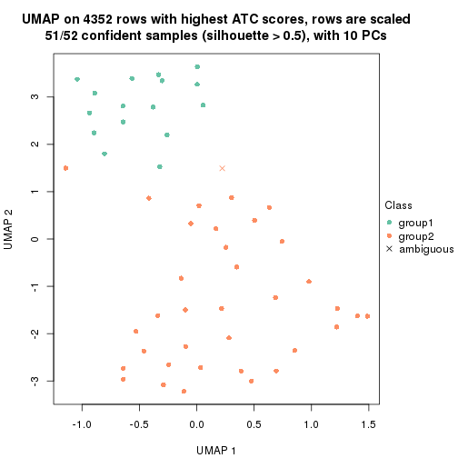
dimension_reduction(res, k = 3, method = "UMAP")
dimension_reduction(res, k = 4, method = "UMAP")
dimension_reduction(res, k = 5, method = "UMAP")
dimension_reduction(res, k = 6, method = "UMAP")
Following heatmap shows how subgroups are split when increasing k:
collect_classes(res)
If matrix rows can be associated to genes, consider to use GO_Enrichment(res,
...) to perform function enrichment for the signature genes.
The object with results only for a single top-value method and a single partition method can be extracted as:
res = res_list["ATC", "skmeans"]
# you can also extract it by
# res = res_list["ATC:skmeans"]
A summary of res and all the functions that can be applied to it:
res
#> A 'ConsensusPartition' object with k = 2, 3, 4, 5, 6.
#> On a matrix with 4352 rows and 52 columns.
#> Top rows (435, 870, 1306, 1741, 2176) are extracted by 'ATC' method.
#> Subgroups are detected by 'skmeans' method.
#> Performed in total 1250 partitions by row resampling.
#> Best k for subgroups seems to be 2.
#>
#> Following methods can be applied to this 'ConsensusPartition' object:
#> [1] "cola_report" "collect_classes" "collect_plots"
#> [4] "collect_stats" "colnames" "compare_signatures"
#> [7] "consensus_heatmap" "dimension_reduction" "functional_enrichment"
#> [10] "get_anno_col" "get_anno" "get_classes"
#> [13] "get_consensus" "get_matrix" "get_membership"
#> [16] "get_param" "get_signatures" "get_stats"
#> [19] "is_best_k" "is_stable_k" "membership_heatmap"
#> [22] "ncol" "nrow" "plot_ecdf"
#> [25] "rownames" "select_partition_number" "show"
#> [28] "suggest_best_k" "test_to_known_factors"
collect_plots() function collects all the plots made from res for all k (number of partitions)
into one single page to provide an easy and fast comparison between different k.
collect_plots(res)
The plots are:
k and the heatmap of
predicted classes for each k.k.k.k.All the plots in panels can be made by individual functions and they are plotted later in this section.
select_partition_number() produces several plots showing different
statistics for choosing “optimized” k. There are following statistics:
k;k, the area increased is defined as \(A_k - A_{k-1}\).The detailed explanations of these statistics can be found in the cola vignette.
Generally speaking, lower PAC score, higher mean silhouette score or higher
concordance corresponds to better partition. Rand index and Jaccard index
measure how similar the current partition is compared to partition with k-1.
If they are too similar, we won't accept k is better than k-1.
select_partition_number(res)
The numeric values for all these statistics can be obtained by get_stats().
get_stats(res)
#> k 1-PAC mean_silhouette concordance area_increased Rand Jaccard
#> 2 2 0.959 0.942 0.976 0.4988 0.502 0.502
#> 3 3 0.741 0.842 0.915 0.2944 0.803 0.624
#> 4 4 0.793 0.786 0.909 0.1121 0.873 0.667
#> 5 5 0.736 0.590 0.821 0.0439 0.974 0.912
#> 6 6 0.738 0.560 0.781 0.0292 0.968 0.885
suggest_best_k() suggests the best \(k\) based on these statistics. The rules are as follows:
NA.suggest_best_k(res)
#> [1] 2
Following shows the table of the partitions (You need to click the show/hide
code output link to see it). The membership matrix (columns with name p*)
is inferred by
clue::cl_consensus()
function with the SE method. Basically the value in the membership matrix
represents the probability to belong to a certain group. The finall class
label for an item is determined with the group with highest probability it
belongs to.
In get_classes() function, the entropy is calculated from the membership
matrix and the silhouette score is calculated from the consensus matrix.
cbind(get_classes(res, k = 2), get_membership(res, k = 2))
#> class entropy silhouette p1 p2
#> SRR2042654 1 0.000 0.974 1.000 0.000
#> SRR2042653 1 0.000 0.974 1.000 0.000
#> SRR2042652 1 0.000 0.974 1.000 0.000
#> SRR2042650 1 0.000 0.974 1.000 0.000
#> SRR2042649 2 0.000 0.975 0.000 1.000
#> SRR2042647 2 0.000 0.975 0.000 1.000
#> SRR2042648 2 0.000 0.975 0.000 1.000
#> SRR2042646 2 0.000 0.975 0.000 1.000
#> SRR2042645 1 0.000 0.974 1.000 0.000
#> SRR2042644 2 0.000 0.975 0.000 1.000
#> SRR2042643 1 0.000 0.974 1.000 0.000
#> SRR2042642 2 0.000 0.975 0.000 1.000
#> SRR2042640 2 0.000 0.975 0.000 1.000
#> SRR2042641 2 0.000 0.975 0.000 1.000
#> SRR2042639 2 0.000 0.975 0.000 1.000
#> SRR2042638 2 0.000 0.975 0.000 1.000
#> SRR2042637 2 0.000 0.975 0.000 1.000
#> SRR2042636 1 0.000 0.974 1.000 0.000
#> SRR2042634 1 0.000 0.974 1.000 0.000
#> SRR2042635 2 0.000 0.975 0.000 1.000
#> SRR2042633 2 0.000 0.975 0.000 1.000
#> SRR2042631 2 0.936 0.456 0.352 0.648
#> SRR2042632 2 0.000 0.975 0.000 1.000
#> SRR2042630 2 0.000 0.975 0.000 1.000
#> SRR2042629 2 0.000 0.975 0.000 1.000
#> SRR2042628 1 0.000 0.974 1.000 0.000
#> SRR2042626 2 0.000 0.975 0.000 1.000
#> SRR2042627 1 0.000 0.974 1.000 0.000
#> SRR2042624 1 0.802 0.682 0.756 0.244
#> SRR2042625 1 0.000 0.974 1.000 0.000
#> SRR2042623 1 0.000 0.974 1.000 0.000
#> SRR2042622 1 0.000 0.974 1.000 0.000
#> SRR2042620 2 0.000 0.975 0.000 1.000
#> SRR2042621 2 0.000 0.975 0.000 1.000
#> SRR2042619 2 0.943 0.443 0.360 0.640
#> SRR2042618 2 0.000 0.975 0.000 1.000
#> SRR2042617 1 0.000 0.974 1.000 0.000
#> SRR2042616 2 0.000 0.975 0.000 1.000
#> SRR2042615 2 0.000 0.975 0.000 1.000
#> SRR2042614 2 0.000 0.975 0.000 1.000
#> SRR2042613 2 0.000 0.975 0.000 1.000
#> SRR2042612 1 0.000 0.974 1.000 0.000
#> SRR2042610 1 0.000 0.974 1.000 0.000
#> SRR2042611 2 0.000 0.975 0.000 1.000
#> SRR2042607 2 0.000 0.975 0.000 1.000
#> SRR2042609 1 0.000 0.974 1.000 0.000
#> SRR2042608 2 0.000 0.975 0.000 1.000
#> SRR2042656 2 0.000 0.975 0.000 1.000
#> SRR2042658 1 0.850 0.626 0.724 0.276
#> SRR2042659 1 0.000 0.974 1.000 0.000
#> SRR2042657 1 0.000 0.974 1.000 0.000
#> SRR2042655 1 0.000 0.974 1.000 0.000
cbind(get_classes(res, k = 3), get_membership(res, k = 3))
#> class entropy silhouette p1 p2 p3
#> SRR2042654 1 0.0000 0.925 1.000 0.000 0.000
#> SRR2042653 1 0.0000 0.925 1.000 0.000 0.000
#> SRR2042652 1 0.0000 0.925 1.000 0.000 0.000
#> SRR2042650 1 0.0000 0.925 1.000 0.000 0.000
#> SRR2042649 3 0.0000 0.908 0.000 0.000 1.000
#> SRR2042647 2 0.0424 0.829 0.000 0.992 0.008
#> SRR2042648 3 0.4178 0.890 0.000 0.172 0.828
#> SRR2042646 3 0.0424 0.903 0.000 0.008 0.992
#> SRR2042645 2 0.4452 0.729 0.192 0.808 0.000
#> SRR2042644 3 0.0424 0.911 0.000 0.008 0.992
#> SRR2042643 1 0.0000 0.925 1.000 0.000 0.000
#> SRR2042642 3 0.4178 0.890 0.000 0.172 0.828
#> SRR2042640 2 0.5560 0.422 0.000 0.700 0.300
#> SRR2042641 3 0.0424 0.911 0.000 0.008 0.992
#> SRR2042639 3 0.3816 0.901 0.000 0.148 0.852
#> SRR2042638 3 0.4178 0.890 0.000 0.172 0.828
#> SRR2042637 3 0.0000 0.908 0.000 0.000 1.000
#> SRR2042636 2 0.4235 0.738 0.176 0.824 0.000
#> SRR2042634 2 0.6260 0.307 0.448 0.552 0.000
#> SRR2042635 3 0.4178 0.890 0.000 0.172 0.828
#> SRR2042633 3 0.0424 0.911 0.000 0.008 0.992
#> SRR2042631 2 0.0424 0.829 0.000 0.992 0.008
#> SRR2042632 3 0.0000 0.908 0.000 0.000 1.000
#> SRR2042630 3 0.1411 0.914 0.000 0.036 0.964
#> SRR2042629 2 0.0424 0.829 0.000 0.992 0.008
#> SRR2042628 1 0.2173 0.872 0.944 0.008 0.048
#> SRR2042626 3 0.4178 0.890 0.000 0.172 0.828
#> SRR2042627 1 0.0000 0.925 1.000 0.000 0.000
#> SRR2042624 1 0.6771 0.315 0.548 0.012 0.440
#> SRR2042625 1 0.0000 0.925 1.000 0.000 0.000
#> SRR2042623 1 0.0000 0.925 1.000 0.000 0.000
#> SRR2042622 1 0.0000 0.925 1.000 0.000 0.000
#> SRR2042620 2 0.3340 0.741 0.000 0.880 0.120
#> SRR2042621 3 0.0424 0.903 0.000 0.008 0.992
#> SRR2042619 2 0.0475 0.828 0.004 0.992 0.004
#> SRR2042618 3 0.3267 0.911 0.000 0.116 0.884
#> SRR2042617 1 0.0000 0.925 1.000 0.000 0.000
#> SRR2042616 3 0.3192 0.912 0.000 0.112 0.888
#> SRR2042615 3 0.2796 0.914 0.000 0.092 0.908
#> SRR2042614 3 0.3192 0.912 0.000 0.112 0.888
#> SRR2042613 3 0.0237 0.910 0.000 0.004 0.996
#> SRR2042612 1 0.0000 0.925 1.000 0.000 0.000
#> SRR2042610 1 0.0000 0.925 1.000 0.000 0.000
#> SRR2042611 3 0.4178 0.890 0.000 0.172 0.828
#> SRR2042607 2 0.1289 0.818 0.000 0.968 0.032
#> SRR2042609 1 0.0000 0.925 1.000 0.000 0.000
#> SRR2042608 3 0.0424 0.905 0.000 0.008 0.992
#> SRR2042656 3 0.4178 0.890 0.000 0.172 0.828
#> SRR2042658 1 0.6672 0.228 0.520 0.008 0.472
#> SRR2042659 1 0.0000 0.925 1.000 0.000 0.000
#> SRR2042657 2 0.5138 0.668 0.252 0.748 0.000
#> SRR2042655 1 0.0000 0.925 1.000 0.000 0.000
cbind(get_classes(res, k = 4), get_membership(res, k = 4))
#> class entropy silhouette p1 p2 p3 p4
#> SRR2042654 1 0.0000 0.9636 1.000 0.000 0.000 0.000
#> SRR2042653 1 0.0000 0.9636 1.000 0.000 0.000 0.000
#> SRR2042652 1 0.0000 0.9636 1.000 0.000 0.000 0.000
#> SRR2042650 1 0.0000 0.9636 1.000 0.000 0.000 0.000
#> SRR2042649 2 0.4998 0.1797 0.000 0.512 0.488 0.000
#> SRR2042647 4 0.0592 0.8070 0.000 0.016 0.000 0.984
#> SRR2042648 2 0.0188 0.8774 0.000 0.996 0.000 0.004
#> SRR2042646 3 0.0921 0.7994 0.000 0.028 0.972 0.000
#> SRR2042645 4 0.3335 0.7276 0.128 0.000 0.016 0.856
#> SRR2042644 2 0.1716 0.8595 0.000 0.936 0.064 0.000
#> SRR2042643 1 0.0000 0.9636 1.000 0.000 0.000 0.000
#> SRR2042642 2 0.0188 0.8774 0.000 0.996 0.000 0.004
#> SRR2042640 2 0.4730 0.3521 0.000 0.636 0.000 0.364
#> SRR2042641 2 0.3837 0.7263 0.000 0.776 0.224 0.000
#> SRR2042639 2 0.0376 0.8780 0.000 0.992 0.004 0.004
#> SRR2042638 2 0.0000 0.8775 0.000 1.000 0.000 0.000
#> SRR2042637 2 0.4250 0.6619 0.000 0.724 0.276 0.000
#> SRR2042636 4 0.1488 0.7968 0.032 0.000 0.012 0.956
#> SRR2042634 1 0.5167 -0.0243 0.508 0.000 0.004 0.488
#> SRR2042635 2 0.0188 0.8774 0.000 0.996 0.000 0.004
#> SRR2042633 2 0.3074 0.8052 0.000 0.848 0.152 0.000
#> SRR2042631 4 0.0188 0.8058 0.000 0.004 0.000 0.996
#> SRR2042632 2 0.4776 0.4807 0.000 0.624 0.376 0.000
#> SRR2042630 2 0.1557 0.8638 0.000 0.944 0.056 0.000
#> SRR2042629 4 0.0469 0.8073 0.000 0.012 0.000 0.988
#> SRR2042628 3 0.4741 0.4473 0.328 0.000 0.668 0.004
#> SRR2042626 2 0.0188 0.8774 0.000 0.996 0.000 0.004
#> SRR2042627 1 0.0000 0.9636 1.000 0.000 0.000 0.000
#> SRR2042624 3 0.0992 0.8012 0.008 0.012 0.976 0.004
#> SRR2042625 1 0.0000 0.9636 1.000 0.000 0.000 0.000
#> SRR2042623 1 0.0000 0.9636 1.000 0.000 0.000 0.000
#> SRR2042622 1 0.0000 0.9636 1.000 0.000 0.000 0.000
#> SRR2042620 4 0.4866 0.3345 0.000 0.404 0.000 0.596
#> SRR2042621 3 0.0707 0.8028 0.000 0.020 0.980 0.000
#> SRR2042619 4 0.0657 0.8071 0.000 0.012 0.004 0.984
#> SRR2042618 2 0.0188 0.8775 0.000 0.996 0.004 0.000
#> SRR2042617 1 0.0000 0.9636 1.000 0.000 0.000 0.000
#> SRR2042616 2 0.0469 0.8770 0.000 0.988 0.012 0.000
#> SRR2042615 2 0.0921 0.8729 0.000 0.972 0.028 0.000
#> SRR2042614 2 0.0592 0.8763 0.000 0.984 0.016 0.000
#> SRR2042613 2 0.3172 0.7962 0.000 0.840 0.160 0.000
#> SRR2042612 1 0.0000 0.9636 1.000 0.000 0.000 0.000
#> SRR2042610 1 0.0000 0.9636 1.000 0.000 0.000 0.000
#> SRR2042611 2 0.0188 0.8774 0.000 0.996 0.000 0.004
#> SRR2042607 4 0.4008 0.6158 0.000 0.244 0.000 0.756
#> SRR2042609 1 0.0000 0.9636 1.000 0.000 0.000 0.000
#> SRR2042608 3 0.5355 0.2923 0.000 0.360 0.620 0.020
#> SRR2042656 2 0.0188 0.8774 0.000 0.996 0.000 0.004
#> SRR2042658 3 0.0376 0.7991 0.004 0.004 0.992 0.000
#> SRR2042659 1 0.0000 0.9636 1.000 0.000 0.000 0.000
#> SRR2042657 4 0.4857 0.5517 0.284 0.000 0.016 0.700
#> SRR2042655 1 0.0000 0.9636 1.000 0.000 0.000 0.000
cbind(get_classes(res, k = 5), get_membership(res, k = 5))
#> class entropy silhouette p1 p2 p3 p4 p5
#> SRR2042654 1 0.0000 0.9485 1.000 0.000 0.000 0.000 0.000
#> SRR2042653 1 0.0000 0.9485 1.000 0.000 0.000 0.000 0.000
#> SRR2042652 1 0.0000 0.9485 1.000 0.000 0.000 0.000 0.000
#> SRR2042650 1 0.0404 0.9421 0.988 0.000 0.000 0.000 0.012
#> SRR2042649 3 0.6040 0.0787 0.000 0.372 0.504 0.000 0.124
#> SRR2042647 4 0.2193 0.2371 0.000 0.028 0.000 0.912 0.060
#> SRR2042648 2 0.0992 0.8171 0.000 0.968 0.000 0.024 0.008
#> SRR2042646 3 0.2074 0.6143 0.000 0.036 0.920 0.000 0.044
#> SRR2042645 5 0.6110 0.0000 0.108 0.000 0.004 0.436 0.452
#> SRR2042644 2 0.3814 0.7373 0.000 0.808 0.124 0.000 0.068
#> SRR2042643 1 0.0880 0.9242 0.968 0.000 0.000 0.000 0.032
#> SRR2042642 2 0.1106 0.8164 0.000 0.964 0.000 0.024 0.012
#> SRR2042640 2 0.5119 0.2864 0.000 0.592 0.000 0.360 0.048
#> SRR2042641 2 0.5961 0.4293 0.000 0.580 0.260 0.000 0.160
#> SRR2042639 2 0.1106 0.8183 0.000 0.964 0.000 0.024 0.012
#> SRR2042638 2 0.0992 0.8171 0.000 0.968 0.000 0.024 0.008
#> SRR2042637 2 0.5952 0.3777 0.000 0.548 0.324 0.000 0.128
#> SRR2042636 4 0.4583 -0.3128 0.032 0.000 0.000 0.672 0.296
#> SRR2042634 1 0.6763 -0.4253 0.396 0.000 0.000 0.324 0.280
#> SRR2042635 2 0.0992 0.8171 0.000 0.968 0.000 0.024 0.008
#> SRR2042633 2 0.4953 0.6605 0.000 0.712 0.164 0.000 0.124
#> SRR2042631 4 0.2439 0.1625 0.000 0.004 0.000 0.876 0.120
#> SRR2042632 2 0.6059 0.1155 0.000 0.468 0.412 0.000 0.120
#> SRR2042630 2 0.3849 0.7421 0.000 0.808 0.080 0.000 0.112
#> SRR2042629 4 0.2359 0.2481 0.000 0.036 0.000 0.904 0.060
#> SRR2042628 3 0.6522 0.1729 0.300 0.000 0.476 0.000 0.224
#> SRR2042626 2 0.1364 0.8120 0.000 0.952 0.000 0.036 0.012
#> SRR2042627 1 0.0162 0.9466 0.996 0.000 0.000 0.000 0.004
#> SRR2042624 3 0.3308 0.5632 0.020 0.000 0.832 0.004 0.144
#> SRR2042625 1 0.0162 0.9468 0.996 0.000 0.000 0.000 0.004
#> SRR2042623 1 0.0000 0.9485 1.000 0.000 0.000 0.000 0.000
#> SRR2042622 1 0.0000 0.9485 1.000 0.000 0.000 0.000 0.000
#> SRR2042620 4 0.6298 0.1513 0.000 0.412 0.000 0.436 0.152
#> SRR2042621 3 0.2519 0.6085 0.000 0.016 0.884 0.000 0.100
#> SRR2042619 4 0.3783 0.0322 0.000 0.008 0.000 0.740 0.252
#> SRR2042618 2 0.0451 0.8165 0.000 0.988 0.004 0.000 0.008
#> SRR2042617 1 0.0510 0.9399 0.984 0.000 0.000 0.000 0.016
#> SRR2042616 2 0.1399 0.8128 0.000 0.952 0.020 0.000 0.028
#> SRR2042615 2 0.1300 0.8129 0.000 0.956 0.016 0.000 0.028
#> SRR2042614 2 0.1579 0.8105 0.000 0.944 0.024 0.000 0.032
#> SRR2042613 2 0.4923 0.6275 0.000 0.700 0.212 0.000 0.088
#> SRR2042612 1 0.0671 0.9357 0.980 0.000 0.004 0.000 0.016
#> SRR2042610 1 0.0000 0.9485 1.000 0.000 0.000 0.000 0.000
#> SRR2042611 2 0.0992 0.8171 0.000 0.968 0.000 0.024 0.008
#> SRR2042607 4 0.6089 0.1977 0.000 0.256 0.004 0.580 0.160
#> SRR2042609 1 0.0000 0.9485 1.000 0.000 0.000 0.000 0.000
#> SRR2042608 3 0.7650 0.3697 0.000 0.264 0.412 0.056 0.268
#> SRR2042656 2 0.1372 0.8176 0.000 0.956 0.004 0.024 0.016
#> SRR2042658 3 0.1965 0.6076 0.000 0.000 0.904 0.000 0.096
#> SRR2042659 1 0.0000 0.9485 1.000 0.000 0.000 0.000 0.000
#> SRR2042657 4 0.6635 -0.5489 0.224 0.000 0.000 0.416 0.360
#> SRR2042655 1 0.0000 0.9485 1.000 0.000 0.000 0.000 0.000
cbind(get_classes(res, k = 6), get_membership(res, k = 6))
#> class entropy silhouette p1 p2 p3 p4 p5 p6
#> SRR2042654 1 0.0000 0.9739 1.000 0.000 0.000 0.000 0.000 0.000
#> SRR2042653 1 0.0291 0.9742 0.992 0.000 0.000 0.000 0.004 0.004
#> SRR2042652 1 0.0000 0.9739 1.000 0.000 0.000 0.000 0.000 0.000
#> SRR2042650 1 0.1176 0.9586 0.956 0.000 0.000 0.000 0.020 0.024
#> SRR2042649 5 0.6459 0.3828 0.000 0.340 0.280 0.000 0.364 0.016
#> SRR2042647 4 0.4060 0.3643 0.000 0.028 0.000 0.760 0.032 0.180
#> SRR2042648 2 0.0972 0.6914 0.000 0.964 0.000 0.028 0.008 0.000
#> SRR2042646 3 0.3830 0.4189 0.000 0.036 0.760 0.000 0.196 0.008
#> SRR2042645 6 0.5958 0.2992 0.080 0.000 0.012 0.260 0.052 0.596
#> SRR2042644 2 0.4418 0.4981 0.000 0.716 0.072 0.000 0.204 0.008
#> SRR2042643 1 0.2384 0.8788 0.884 0.000 0.000 0.000 0.032 0.084
#> SRR2042642 2 0.0858 0.6905 0.000 0.968 0.000 0.028 0.004 0.000
#> SRR2042640 2 0.5503 -0.1010 0.000 0.484 0.000 0.428 0.056 0.032
#> SRR2042641 2 0.6904 -0.3687 0.000 0.444 0.208 0.012 0.292 0.044
#> SRR2042639 2 0.1624 0.6893 0.000 0.936 0.000 0.008 0.044 0.012
#> SRR2042638 2 0.0777 0.6914 0.000 0.972 0.000 0.024 0.004 0.000
#> SRR2042637 2 0.6105 -0.1991 0.000 0.476 0.180 0.000 0.328 0.016
#> SRR2042636 6 0.5564 0.0935 0.020 0.000 0.000 0.420 0.080 0.480
#> SRR2042634 6 0.7092 0.3253 0.344 0.000 0.000 0.176 0.100 0.380
#> SRR2042635 2 0.0935 0.6892 0.000 0.964 0.000 0.032 0.004 0.000
#> SRR2042633 2 0.6333 0.0899 0.000 0.552 0.168 0.016 0.236 0.028
#> SRR2042631 4 0.3717 0.3207 0.000 0.000 0.000 0.776 0.064 0.160
#> SRR2042632 2 0.6007 -0.3573 0.000 0.444 0.208 0.000 0.344 0.004
#> SRR2042630 2 0.3960 0.5432 0.000 0.752 0.032 0.004 0.204 0.008
#> SRR2042629 4 0.3672 0.4399 0.000 0.060 0.000 0.824 0.052 0.064
#> SRR2042628 3 0.7368 0.1565 0.276 0.000 0.416 0.012 0.200 0.096
#> SRR2042626 2 0.1531 0.6660 0.000 0.928 0.000 0.068 0.004 0.000
#> SRR2042627 1 0.0862 0.9690 0.972 0.000 0.004 0.000 0.016 0.008
#> SRR2042624 3 0.3119 0.5759 0.020 0.000 0.860 0.008 0.080 0.032
#> SRR2042625 1 0.0725 0.9709 0.976 0.000 0.000 0.000 0.012 0.012
#> SRR2042623 1 0.0000 0.9739 1.000 0.000 0.000 0.000 0.000 0.000
#> SRR2042622 1 0.0146 0.9741 0.996 0.000 0.000 0.000 0.000 0.004
#> SRR2042620 4 0.6402 0.2863 0.000 0.368 0.000 0.452 0.056 0.124
#> SRR2042621 3 0.3031 0.5408 0.000 0.016 0.852 0.000 0.100 0.032
#> SRR2042619 4 0.5421 0.1167 0.000 0.012 0.000 0.544 0.092 0.352
#> SRR2042618 2 0.1410 0.6892 0.000 0.944 0.008 0.004 0.044 0.000
#> SRR2042617 1 0.1480 0.9456 0.940 0.000 0.000 0.000 0.020 0.040
#> SRR2042616 2 0.2458 0.6721 0.000 0.888 0.016 0.004 0.084 0.008
#> SRR2042615 2 0.2617 0.6615 0.000 0.872 0.016 0.000 0.100 0.012
#> SRR2042614 2 0.2356 0.6701 0.000 0.884 0.016 0.000 0.096 0.004
#> SRR2042613 2 0.5118 0.4150 0.000 0.664 0.108 0.000 0.208 0.020
#> SRR2042612 1 0.0951 0.9598 0.968 0.000 0.008 0.000 0.020 0.004
#> SRR2042610 1 0.0622 0.9713 0.980 0.000 0.000 0.000 0.012 0.008
#> SRR2042611 2 0.0858 0.6905 0.000 0.968 0.000 0.028 0.004 0.000
#> SRR2042607 4 0.5904 0.4100 0.000 0.224 0.012 0.620 0.052 0.092
#> SRR2042609 1 0.0000 0.9739 1.000 0.000 0.000 0.000 0.000 0.000
#> SRR2042608 5 0.7399 0.2789 0.000 0.212 0.256 0.032 0.436 0.064
#> SRR2042656 2 0.1743 0.6926 0.000 0.936 0.008 0.028 0.024 0.004
#> SRR2042658 3 0.4067 0.5144 0.004 0.004 0.752 0.004 0.196 0.040
#> SRR2042659 1 0.0291 0.9739 0.992 0.000 0.000 0.000 0.004 0.004
#> SRR2042657 6 0.5587 0.4239 0.156 0.000 0.000 0.192 0.028 0.624
#> SRR2042655 1 0.0622 0.9705 0.980 0.000 0.000 0.000 0.008 0.012
Heatmaps for the consensus matrix. It visualizes the probability of two samples to be in a same group.
consensus_heatmap(res, k = 2)
consensus_heatmap(res, k = 3)
consensus_heatmap(res, k = 4)
consensus_heatmap(res, k = 5)
consensus_heatmap(res, k = 6)
Heatmaps for the membership of samples in all partitions to see how consistent they are:
membership_heatmap(res, k = 2)
membership_heatmap(res, k = 3)
membership_heatmap(res, k = 4)
membership_heatmap(res, k = 5)
membership_heatmap(res, k = 6)
As soon as we have had the classes for columns, we can look for signatures which are significantly different between classes which can be candidate marks for certain classes. Following are the heatmaps for signatures.
Signature heatmaps where rows are scaled:
get_signatures(res, k = 2)
get_signatures(res, k = 3)
get_signatures(res, k = 4)
get_signatures(res, k = 5)
get_signatures(res, k = 6)
Signature heatmaps where rows are not scaled:
get_signatures(res, k = 2, scale_rows = FALSE)
get_signatures(res, k = 3, scale_rows = FALSE)
get_signatures(res, k = 4, scale_rows = FALSE)
get_signatures(res, k = 5, scale_rows = FALSE)

get_signatures(res, k = 6, scale_rows = FALSE)
Compare the overlap of signatures from different k:
compare_signatures(res)
get_signature() returns a data frame invisibly. TO get the list of signatures, the function
call should be assigned to a variable explicitly. In following code, if plot argument is set
to FALSE, no heatmap is plotted while only the differential analysis is performed.
# code only for demonstration
tb = get_signature(res, k = ..., plot = FALSE)
An example of the output of tb is:
#> which_row fdr mean_1 mean_2 scaled_mean_1 scaled_mean_2 km
#> 1 38 0.042760348 8.373488 9.131774 -0.5533452 0.5164555 1
#> 2 40 0.018707592 7.106213 8.469186 -0.6173731 0.5762149 1
#> 3 55 0.019134737 10.221463 11.207825 -0.6159697 0.5749050 1
#> 4 59 0.006059896 5.921854 7.869574 -0.6899429 0.6439467 1
#> 5 60 0.018055526 8.928898 10.211722 -0.6204761 0.5791110 1
#> 6 98 0.009384629 15.714769 14.887706 0.6635654 -0.6193277 2
...
The columns in tb are:
which_row: row indices corresponding to the input matrix.fdr: FDR for the differential test. mean_x: The mean value in group x.scaled_mean_x: The mean value in group x after rows are scaled.km: Row groups if k-means clustering is applied to rows.UMAP plot which shows how samples are separated.
dimension_reduction(res, k = 2, method = "UMAP")
dimension_reduction(res, k = 3, method = "UMAP")
dimension_reduction(res, k = 4, method = "UMAP")
dimension_reduction(res, k = 5, method = "UMAP")
dimension_reduction(res, k = 6, method = "UMAP")

Following heatmap shows how subgroups are split when increasing k:
collect_classes(res)
If matrix rows can be associated to genes, consider to use GO_Enrichment(res,
...) to perform function enrichment for the signature genes.
The object with results only for a single top-value method and a single partition method can be extracted as:
res = res_list["ATC", "pam"]
# you can also extract it by
# res = res_list["ATC:pam"]
A summary of res and all the functions that can be applied to it:
res
#> A 'ConsensusPartition' object with k = 2, 3, 4, 5, 6.
#> On a matrix with 4352 rows and 52 columns.
#> Top rows (435, 870, 1306, 1741, 2176) are extracted by 'ATC' method.
#> Subgroups are detected by 'pam' method.
#> Performed in total 1250 partitions by row resampling.
#> Best k for subgroups seems to be 3.
#>
#> Following methods can be applied to this 'ConsensusPartition' object:
#> [1] "cola_report" "collect_classes" "collect_plots"
#> [4] "collect_stats" "colnames" "compare_signatures"
#> [7] "consensus_heatmap" "dimension_reduction" "functional_enrichment"
#> [10] "get_anno_col" "get_anno" "get_classes"
#> [13] "get_consensus" "get_matrix" "get_membership"
#> [16] "get_param" "get_signatures" "get_stats"
#> [19] "is_best_k" "is_stable_k" "membership_heatmap"
#> [22] "ncol" "nrow" "plot_ecdf"
#> [25] "rownames" "select_partition_number" "show"
#> [28] "suggest_best_k" "test_to_known_factors"
collect_plots() function collects all the plots made from res for all k (number of partitions)
into one single page to provide an easy and fast comparison between different k.
collect_plots(res)
The plots are:
k and the heatmap of
predicted classes for each k.k.k.k.All the plots in panels can be made by individual functions and they are plotted later in this section.
select_partition_number() produces several plots showing different
statistics for choosing “optimized” k. There are following statistics:
k;k, the area increased is defined as \(A_k - A_{k-1}\).The detailed explanations of these statistics can be found in the cola vignette.
Generally speaking, lower PAC score, higher mean silhouette score or higher
concordance corresponds to better partition. Rand index and Jaccard index
measure how similar the current partition is compared to partition with k-1.
If they are too similar, we won't accept k is better than k-1.
select_partition_number(res)
The numeric values for all these statistics can be obtained by get_stats().
get_stats(res)
#> k 1-PAC mean_silhouette concordance area_increased Rand Jaccard
#> 2 2 1.000 0.996 0.998 0.4206 0.581 0.581
#> 3 3 0.904 0.882 0.946 0.3556 0.778 0.634
#> 4 4 0.805 0.801 0.897 0.0703 0.980 0.951
#> 5 5 0.844 0.768 0.896 0.0416 0.989 0.973
#> 6 6 0.849 0.814 0.903 0.0128 0.988 0.969
suggest_best_k() suggests the best \(k\) based on these statistics. The rules are as follows:
NA.suggest_best_k(res)
#> [1] 3
#> attr(,"optional")
#> [1] 2
There is also optional best \(k\) = 2 that is worth to check.
Following shows the table of the partitions (You need to click the show/hide
code output link to see it). The membership matrix (columns with name p*)
is inferred by
clue::cl_consensus()
function with the SE method. Basically the value in the membership matrix
represents the probability to belong to a certain group. The finall class
label for an item is determined with the group with highest probability it
belongs to.
In get_classes() function, the entropy is calculated from the membership
matrix and the silhouette score is calculated from the consensus matrix.
cbind(get_classes(res, k = 2), get_membership(res, k = 2))
#> class entropy silhouette p1 p2
#> SRR2042654 1 0.0000 1.000 1.000 0.000
#> SRR2042653 1 0.0000 1.000 1.000 0.000
#> SRR2042652 1 0.0000 1.000 1.000 0.000
#> SRR2042650 1 0.0000 1.000 1.000 0.000
#> SRR2042649 2 0.0000 0.997 0.000 1.000
#> SRR2042647 2 0.0000 0.997 0.000 1.000
#> SRR2042648 2 0.0000 0.997 0.000 1.000
#> SRR2042646 2 0.0000 0.997 0.000 1.000
#> SRR2042645 2 0.0000 0.997 0.000 1.000
#> SRR2042644 2 0.0000 0.997 0.000 1.000
#> SRR2042643 1 0.0000 1.000 1.000 0.000
#> SRR2042642 2 0.0000 0.997 0.000 1.000
#> SRR2042640 2 0.0000 0.997 0.000 1.000
#> SRR2042641 2 0.0000 0.997 0.000 1.000
#> SRR2042639 2 0.0000 0.997 0.000 1.000
#> SRR2042638 2 0.0000 0.997 0.000 1.000
#> SRR2042637 2 0.0000 0.997 0.000 1.000
#> SRR2042636 2 0.0000 0.997 0.000 1.000
#> SRR2042634 2 0.4298 0.904 0.088 0.912
#> SRR2042635 2 0.0000 0.997 0.000 1.000
#> SRR2042633 2 0.0000 0.997 0.000 1.000
#> SRR2042631 2 0.0000 0.997 0.000 1.000
#> SRR2042632 2 0.0000 0.997 0.000 1.000
#> SRR2042630 2 0.0000 0.997 0.000 1.000
#> SRR2042629 2 0.0000 0.997 0.000 1.000
#> SRR2042628 2 0.0376 0.994 0.004 0.996
#> SRR2042626 2 0.0000 0.997 0.000 1.000
#> SRR2042627 1 0.0000 1.000 1.000 0.000
#> SRR2042624 2 0.0000 0.997 0.000 1.000
#> SRR2042625 1 0.0000 1.000 1.000 0.000
#> SRR2042623 1 0.0000 1.000 1.000 0.000
#> SRR2042622 1 0.0000 1.000 1.000 0.000
#> SRR2042620 2 0.0000 0.997 0.000 1.000
#> SRR2042621 2 0.0000 0.997 0.000 1.000
#> SRR2042619 2 0.0000 0.997 0.000 1.000
#> SRR2042618 2 0.0000 0.997 0.000 1.000
#> SRR2042617 1 0.0000 1.000 1.000 0.000
#> SRR2042616 2 0.0000 0.997 0.000 1.000
#> SRR2042615 2 0.0000 0.997 0.000 1.000
#> SRR2042614 2 0.0000 0.997 0.000 1.000
#> SRR2042613 2 0.0000 0.997 0.000 1.000
#> SRR2042612 1 0.0000 1.000 1.000 0.000
#> SRR2042610 1 0.0000 1.000 1.000 0.000
#> SRR2042611 2 0.0000 0.997 0.000 1.000
#> SRR2042607 2 0.0000 0.997 0.000 1.000
#> SRR2042609 1 0.0000 1.000 1.000 0.000
#> SRR2042608 2 0.0000 0.997 0.000 1.000
#> SRR2042656 2 0.0000 0.997 0.000 1.000
#> SRR2042658 2 0.0000 0.997 0.000 1.000
#> SRR2042659 1 0.0000 1.000 1.000 0.000
#> SRR2042657 2 0.0000 0.997 0.000 1.000
#> SRR2042655 1 0.0000 1.000 1.000 0.000
cbind(get_classes(res, k = 3), get_membership(res, k = 3))
#> class entropy silhouette p1 p2 p3
#> SRR2042654 1 0.0000 0.901 1.000 0.000 0.000
#> SRR2042653 1 0.3879 0.828 0.848 0.000 0.152
#> SRR2042652 1 0.0000 0.901 1.000 0.000 0.000
#> SRR2042650 3 0.3267 0.727 0.116 0.000 0.884
#> SRR2042649 2 0.0000 0.993 0.000 1.000 0.000
#> SRR2042647 2 0.0747 0.980 0.000 0.984 0.016
#> SRR2042648 2 0.0000 0.993 0.000 1.000 0.000
#> SRR2042646 2 0.0000 0.993 0.000 1.000 0.000
#> SRR2042645 3 0.5497 0.538 0.000 0.292 0.708
#> SRR2042644 2 0.0000 0.993 0.000 1.000 0.000
#> SRR2042643 3 0.2537 0.745 0.080 0.000 0.920
#> SRR2042642 2 0.0000 0.993 0.000 1.000 0.000
#> SRR2042640 2 0.0000 0.993 0.000 1.000 0.000
#> SRR2042641 2 0.0000 0.993 0.000 1.000 0.000
#> SRR2042639 2 0.0000 0.993 0.000 1.000 0.000
#> SRR2042638 2 0.0000 0.993 0.000 1.000 0.000
#> SRR2042637 2 0.0000 0.993 0.000 1.000 0.000
#> SRR2042636 3 0.0747 0.756 0.000 0.016 0.984
#> SRR2042634 3 0.0000 0.752 0.000 0.000 1.000
#> SRR2042635 2 0.0000 0.993 0.000 1.000 0.000
#> SRR2042633 2 0.0000 0.993 0.000 1.000 0.000
#> SRR2042631 2 0.2448 0.918 0.000 0.924 0.076
#> SRR2042632 2 0.0000 0.993 0.000 1.000 0.000
#> SRR2042630 2 0.0000 0.993 0.000 1.000 0.000
#> SRR2042629 2 0.0747 0.980 0.000 0.984 0.016
#> SRR2042628 3 0.0747 0.758 0.000 0.016 0.984
#> SRR2042626 2 0.0000 0.993 0.000 1.000 0.000
#> SRR2042627 3 0.3192 0.730 0.112 0.000 0.888
#> SRR2042624 3 0.6291 0.261 0.000 0.468 0.532
#> SRR2042625 1 0.4178 0.816 0.828 0.000 0.172
#> SRR2042623 1 0.0000 0.901 1.000 0.000 0.000
#> SRR2042622 1 0.0000 0.901 1.000 0.000 0.000
#> SRR2042620 2 0.0000 0.993 0.000 1.000 0.000
#> SRR2042621 2 0.0000 0.993 0.000 1.000 0.000
#> SRR2042619 2 0.2448 0.917 0.000 0.924 0.076
#> SRR2042618 2 0.0000 0.993 0.000 1.000 0.000
#> SRR2042617 3 0.2796 0.741 0.092 0.000 0.908
#> SRR2042616 2 0.0000 0.993 0.000 1.000 0.000
#> SRR2042615 2 0.0000 0.993 0.000 1.000 0.000
#> SRR2042614 2 0.0000 0.993 0.000 1.000 0.000
#> SRR2042613 2 0.0000 0.993 0.000 1.000 0.000
#> SRR2042612 1 0.6026 0.489 0.624 0.000 0.376
#> SRR2042610 1 0.2165 0.889 0.936 0.000 0.064
#> SRR2042611 2 0.0000 0.993 0.000 1.000 0.000
#> SRR2042607 2 0.0000 0.993 0.000 1.000 0.000
#> SRR2042609 1 0.0000 0.901 1.000 0.000 0.000
#> SRR2042608 2 0.0000 0.993 0.000 1.000 0.000
#> SRR2042656 2 0.0000 0.993 0.000 1.000 0.000
#> SRR2042658 3 0.6140 0.437 0.000 0.404 0.596
#> SRR2042659 1 0.2796 0.876 0.908 0.000 0.092
#> SRR2042657 3 0.0592 0.756 0.000 0.012 0.988
#> SRR2042655 3 0.4346 0.656 0.184 0.000 0.816
cbind(get_classes(res, k = 4), get_membership(res, k = 4))
#> class entropy silhouette p1 p2 p3 p4
#> SRR2042654 1 0.0000 0.887 1.000 0.000 0.000 0.000
#> SRR2042653 1 0.4030 0.814 0.836 0.000 0.072 0.092
#> SRR2042652 1 0.0000 0.887 1.000 0.000 0.000 0.000
#> SRR2042650 4 0.6597 0.651 0.108 0.000 0.304 0.588
#> SRR2042649 2 0.0000 0.960 0.000 1.000 0.000 0.000
#> SRR2042647 2 0.0707 0.942 0.000 0.980 0.000 0.020
#> SRR2042648 2 0.0000 0.960 0.000 1.000 0.000 0.000
#> SRR2042646 2 0.2216 0.862 0.000 0.908 0.092 0.000
#> SRR2042645 4 0.2255 0.393 0.000 0.068 0.012 0.920
#> SRR2042644 2 0.0000 0.960 0.000 1.000 0.000 0.000
#> SRR2042643 4 0.6222 0.652 0.080 0.000 0.304 0.616
#> SRR2042642 2 0.0000 0.960 0.000 1.000 0.000 0.000
#> SRR2042640 2 0.0000 0.960 0.000 1.000 0.000 0.000
#> SRR2042641 2 0.0000 0.960 0.000 1.000 0.000 0.000
#> SRR2042639 2 0.0000 0.960 0.000 1.000 0.000 0.000
#> SRR2042638 2 0.0000 0.960 0.000 1.000 0.000 0.000
#> SRR2042637 2 0.0000 0.960 0.000 1.000 0.000 0.000
#> SRR2042636 4 0.0188 0.543 0.000 0.000 0.004 0.996
#> SRR2042634 4 0.1474 0.565 0.000 0.000 0.052 0.948
#> SRR2042635 2 0.0000 0.960 0.000 1.000 0.000 0.000
#> SRR2042633 2 0.0000 0.960 0.000 1.000 0.000 0.000
#> SRR2042631 2 0.4155 0.621 0.000 0.756 0.004 0.240
#> SRR2042632 2 0.0000 0.960 0.000 1.000 0.000 0.000
#> SRR2042630 2 0.0000 0.960 0.000 1.000 0.000 0.000
#> SRR2042629 2 0.1867 0.884 0.000 0.928 0.000 0.072
#> SRR2042628 3 0.4877 -0.215 0.000 0.000 0.592 0.408
#> SRR2042626 2 0.0000 0.960 0.000 1.000 0.000 0.000
#> SRR2042627 4 0.6548 0.654 0.104 0.000 0.304 0.592
#> SRR2042624 3 0.7875 0.426 0.000 0.296 0.388 0.316
#> SRR2042625 1 0.4879 0.770 0.780 0.000 0.128 0.092
#> SRR2042623 1 0.0000 0.887 1.000 0.000 0.000 0.000
#> SRR2042622 1 0.0000 0.887 1.000 0.000 0.000 0.000
#> SRR2042620 2 0.0000 0.960 0.000 1.000 0.000 0.000
#> SRR2042621 2 0.3172 0.763 0.000 0.840 0.160 0.000
#> SRR2042619 2 0.4837 0.379 0.000 0.648 0.004 0.348
#> SRR2042618 2 0.0000 0.960 0.000 1.000 0.000 0.000
#> SRR2042617 4 0.6497 0.655 0.100 0.000 0.304 0.596
#> SRR2042616 2 0.0000 0.960 0.000 1.000 0.000 0.000
#> SRR2042615 2 0.0000 0.960 0.000 1.000 0.000 0.000
#> SRR2042614 2 0.0000 0.960 0.000 1.000 0.000 0.000
#> SRR2042613 2 0.0000 0.960 0.000 1.000 0.000 0.000
#> SRR2042612 1 0.6571 0.502 0.612 0.000 0.264 0.124
#> SRR2042610 1 0.2224 0.872 0.928 0.000 0.040 0.032
#> SRR2042611 2 0.0000 0.960 0.000 1.000 0.000 0.000
#> SRR2042607 2 0.0000 0.960 0.000 1.000 0.000 0.000
#> SRR2042609 1 0.0000 0.887 1.000 0.000 0.000 0.000
#> SRR2042608 2 0.0000 0.960 0.000 1.000 0.000 0.000
#> SRR2042656 2 0.0000 0.960 0.000 1.000 0.000 0.000
#> SRR2042658 3 0.6422 0.463 0.000 0.248 0.632 0.120
#> SRR2042659 1 0.3052 0.839 0.860 0.000 0.136 0.004
#> SRR2042657 4 0.0336 0.546 0.000 0.000 0.008 0.992
#> SRR2042655 4 0.7013 0.607 0.152 0.000 0.292 0.556
cbind(get_classes(res, k = 5), get_membership(res, k = 5))
#> class entropy silhouette p1 p2 p3 p4 p5
#> SRR2042654 1 0.0000 0.873 1.000 0.000 0.000 0.000 0.000
#> SRR2042653 1 0.2813 0.804 0.832 0.000 0.000 0.168 0.000
#> SRR2042652 1 0.0000 0.873 1.000 0.000 0.000 0.000 0.000
#> SRR2042650 4 0.1197 0.686 0.048 0.000 0.000 0.952 0.000
#> SRR2042649 2 0.0000 0.952 0.000 1.000 0.000 0.000 0.000
#> SRR2042647 2 0.0794 0.930 0.000 0.972 0.000 0.000 0.028
#> SRR2042648 2 0.0000 0.952 0.000 1.000 0.000 0.000 0.000
#> SRR2042646 2 0.2570 0.840 0.000 0.880 0.108 0.004 0.008
#> SRR2042645 5 0.4767 0.847 0.000 0.020 0.000 0.420 0.560
#> SRR2042644 2 0.0000 0.952 0.000 1.000 0.000 0.000 0.000
#> SRR2042643 4 0.0794 0.677 0.028 0.000 0.000 0.972 0.000
#> SRR2042642 2 0.0000 0.952 0.000 1.000 0.000 0.000 0.000
#> SRR2042640 2 0.0000 0.952 0.000 1.000 0.000 0.000 0.000
#> SRR2042641 2 0.0000 0.952 0.000 1.000 0.000 0.000 0.000
#> SRR2042639 2 0.0000 0.952 0.000 1.000 0.000 0.000 0.000
#> SRR2042638 2 0.0000 0.952 0.000 1.000 0.000 0.000 0.000
#> SRR2042637 2 0.0000 0.952 0.000 1.000 0.000 0.000 0.000
#> SRR2042636 5 0.4300 0.834 0.000 0.000 0.000 0.476 0.524
#> SRR2042634 4 0.4182 -0.631 0.000 0.000 0.000 0.600 0.400
#> SRR2042635 2 0.0000 0.952 0.000 1.000 0.000 0.000 0.000
#> SRR2042633 2 0.0000 0.952 0.000 1.000 0.000 0.000 0.000
#> SRR2042631 2 0.3857 0.565 0.000 0.688 0.000 0.000 0.312
#> SRR2042632 2 0.0000 0.952 0.000 1.000 0.000 0.000 0.000
#> SRR2042630 2 0.0000 0.952 0.000 1.000 0.000 0.000 0.000
#> SRR2042629 2 0.1544 0.894 0.000 0.932 0.000 0.000 0.068
#> SRR2042628 3 0.6070 0.569 0.000 0.000 0.440 0.120 0.440
#> SRR2042626 2 0.0000 0.952 0.000 1.000 0.000 0.000 0.000
#> SRR2042627 4 0.1121 0.687 0.044 0.000 0.000 0.956 0.000
#> SRR2042624 3 0.7150 0.312 0.000 0.116 0.460 0.360 0.064
#> SRR2042625 1 0.3274 0.767 0.780 0.000 0.000 0.220 0.000
#> SRR2042623 1 0.0000 0.873 1.000 0.000 0.000 0.000 0.000
#> SRR2042622 1 0.0000 0.873 1.000 0.000 0.000 0.000 0.000
#> SRR2042620 2 0.0000 0.952 0.000 1.000 0.000 0.000 0.000
#> SRR2042621 2 0.4858 0.472 0.000 0.656 0.308 0.012 0.024
#> SRR2042619 2 0.4227 0.345 0.000 0.580 0.000 0.000 0.420
#> SRR2042618 2 0.0000 0.952 0.000 1.000 0.000 0.000 0.000
#> SRR2042617 4 0.0963 0.685 0.036 0.000 0.000 0.964 0.000
#> SRR2042616 2 0.0000 0.952 0.000 1.000 0.000 0.000 0.000
#> SRR2042615 2 0.0000 0.952 0.000 1.000 0.000 0.000 0.000
#> SRR2042614 2 0.0000 0.952 0.000 1.000 0.000 0.000 0.000
#> SRR2042613 2 0.0000 0.952 0.000 1.000 0.000 0.000 0.000
#> SRR2042612 1 0.4262 0.408 0.560 0.000 0.000 0.440 0.000
#> SRR2042610 1 0.1608 0.859 0.928 0.000 0.000 0.072 0.000
#> SRR2042611 2 0.0000 0.952 0.000 1.000 0.000 0.000 0.000
#> SRR2042607 2 0.0162 0.949 0.000 0.996 0.000 0.000 0.004
#> SRR2042609 1 0.0000 0.873 1.000 0.000 0.000 0.000 0.000
#> SRR2042608 2 0.0000 0.952 0.000 1.000 0.000 0.000 0.000
#> SRR2042656 2 0.0000 0.952 0.000 1.000 0.000 0.000 0.000
#> SRR2042658 3 0.0566 0.545 0.000 0.012 0.984 0.004 0.000
#> SRR2042659 1 0.2561 0.825 0.856 0.000 0.000 0.144 0.000
#> SRR2042657 4 0.4304 -0.837 0.000 0.000 0.000 0.516 0.484
#> SRR2042655 4 0.1851 0.640 0.088 0.000 0.000 0.912 0.000
cbind(get_classes(res, k = 6), get_membership(res, k = 6))
#> class entropy silhouette p1 p2 p3 p4 p5 p6
#> SRR2042654 1 0.0000 0.870 1.000 0.000 0.000 0.000 0.000 0.000
#> SRR2042653 1 0.3078 0.803 0.836 0.000 0.000 0.056 0.000 0.108
#> SRR2042652 1 0.0000 0.870 1.000 0.000 0.000 0.000 0.000 0.000
#> SRR2042650 6 0.4615 0.952 0.040 0.000 0.000 0.424 0.000 0.536
#> SRR2042649 2 0.0000 0.948 0.000 1.000 0.000 0.000 0.000 0.000
#> SRR2042647 2 0.0713 0.926 0.000 0.972 0.000 0.028 0.000 0.000
#> SRR2042648 2 0.0000 0.948 0.000 1.000 0.000 0.000 0.000 0.000
#> SRR2042646 2 0.2393 0.840 0.000 0.884 0.092 0.000 0.020 0.004
#> SRR2042645 4 0.2389 0.717 0.000 0.000 0.000 0.864 0.008 0.128
#> SRR2042644 2 0.0000 0.948 0.000 1.000 0.000 0.000 0.000 0.000
#> SRR2042643 6 0.4300 0.942 0.020 0.000 0.000 0.432 0.000 0.548
#> SRR2042642 2 0.0000 0.948 0.000 1.000 0.000 0.000 0.000 0.000
#> SRR2042640 2 0.0000 0.948 0.000 1.000 0.000 0.000 0.000 0.000
#> SRR2042641 2 0.0000 0.948 0.000 1.000 0.000 0.000 0.000 0.000
#> SRR2042639 2 0.0000 0.948 0.000 1.000 0.000 0.000 0.000 0.000
#> SRR2042638 2 0.0000 0.948 0.000 1.000 0.000 0.000 0.000 0.000
#> SRR2042637 2 0.0000 0.948 0.000 1.000 0.000 0.000 0.000 0.000
#> SRR2042636 4 0.2100 0.738 0.000 0.000 0.000 0.884 0.004 0.112
#> SRR2042634 4 0.2416 0.570 0.000 0.000 0.000 0.844 0.000 0.156
#> SRR2042635 2 0.0000 0.948 0.000 1.000 0.000 0.000 0.000 0.000
#> SRR2042633 2 0.0000 0.948 0.000 1.000 0.000 0.000 0.000 0.000
#> SRR2042631 2 0.3531 0.527 0.000 0.672 0.000 0.328 0.000 0.000
#> SRR2042632 2 0.0000 0.948 0.000 1.000 0.000 0.000 0.000 0.000
#> SRR2042630 2 0.0000 0.948 0.000 1.000 0.000 0.000 0.000 0.000
#> SRR2042629 2 0.1387 0.889 0.000 0.932 0.000 0.068 0.000 0.000
#> SRR2042628 3 0.0405 0.198 0.000 0.000 0.988 0.004 0.000 0.008
#> SRR2042626 2 0.0000 0.948 0.000 1.000 0.000 0.000 0.000 0.000
#> SRR2042627 6 0.4561 0.954 0.036 0.000 0.000 0.428 0.000 0.536
#> SRR2042624 3 0.7778 0.279 0.000 0.088 0.412 0.136 0.068 0.296
#> SRR2042625 1 0.3746 0.762 0.780 0.000 0.000 0.080 0.000 0.140
#> SRR2042623 1 0.0000 0.870 1.000 0.000 0.000 0.000 0.000 0.000
#> SRR2042622 1 0.0000 0.870 1.000 0.000 0.000 0.000 0.000 0.000
#> SRR2042620 2 0.0000 0.948 0.000 1.000 0.000 0.000 0.000 0.000
#> SRR2042621 2 0.5915 0.260 0.000 0.576 0.268 0.000 0.052 0.104
#> SRR2042619 2 0.3823 0.297 0.000 0.564 0.000 0.436 0.000 0.000
#> SRR2042618 2 0.0000 0.948 0.000 1.000 0.000 0.000 0.000 0.000
#> SRR2042617 6 0.4366 0.949 0.024 0.000 0.000 0.428 0.000 0.548
#> SRR2042616 2 0.0000 0.948 0.000 1.000 0.000 0.000 0.000 0.000
#> SRR2042615 2 0.0000 0.948 0.000 1.000 0.000 0.000 0.000 0.000
#> SRR2042614 2 0.0000 0.948 0.000 1.000 0.000 0.000 0.000 0.000
#> SRR2042613 2 0.0000 0.948 0.000 1.000 0.000 0.000 0.000 0.000
#> SRR2042612 1 0.5448 0.377 0.556 0.000 0.012 0.028 0.040 0.364
#> SRR2042610 1 0.1720 0.856 0.928 0.000 0.000 0.032 0.000 0.040
#> SRR2042611 2 0.0000 0.948 0.000 1.000 0.000 0.000 0.000 0.000
#> SRR2042607 2 0.0146 0.945 0.000 0.996 0.000 0.004 0.000 0.000
#> SRR2042609 1 0.0000 0.870 1.000 0.000 0.000 0.000 0.000 0.000
#> SRR2042608 2 0.0000 0.948 0.000 1.000 0.000 0.000 0.000 0.000
#> SRR2042656 2 0.0000 0.948 0.000 1.000 0.000 0.000 0.000 0.000
#> SRR2042658 5 0.1141 0.000 0.000 0.000 0.052 0.000 0.948 0.000
#> SRR2042659 1 0.2300 0.821 0.856 0.000 0.000 0.000 0.000 0.144
#> SRR2042657 4 0.1444 0.716 0.000 0.000 0.000 0.928 0.000 0.072
#> SRR2042655 6 0.5123 0.880 0.084 0.000 0.000 0.408 0.000 0.508
Heatmaps for the consensus matrix. It visualizes the probability of two samples to be in a same group.
consensus_heatmap(res, k = 2)
consensus_heatmap(res, k = 3)
consensus_heatmap(res, k = 4)
consensus_heatmap(res, k = 5)
consensus_heatmap(res, k = 6)
Heatmaps for the membership of samples in all partitions to see how consistent they are:
membership_heatmap(res, k = 2)
membership_heatmap(res, k = 3)
membership_heatmap(res, k = 4)
membership_heatmap(res, k = 5)
membership_heatmap(res, k = 6)
As soon as we have had the classes for columns, we can look for signatures which are significantly different between classes which can be candidate marks for certain classes. Following are the heatmaps for signatures.
Signature heatmaps where rows are scaled:
get_signatures(res, k = 2)
get_signatures(res, k = 3)
get_signatures(res, k = 4)
get_signatures(res, k = 5)
get_signatures(res, k = 6)
Signature heatmaps where rows are not scaled:
get_signatures(res, k = 2, scale_rows = FALSE)
get_signatures(res, k = 3, scale_rows = FALSE)
get_signatures(res, k = 4, scale_rows = FALSE)
get_signatures(res, k = 5, scale_rows = FALSE)
get_signatures(res, k = 6, scale_rows = FALSE)
Compare the overlap of signatures from different k:
compare_signatures(res)
get_signature() returns a data frame invisibly. TO get the list of signatures, the function
call should be assigned to a variable explicitly. In following code, if plot argument is set
to FALSE, no heatmap is plotted while only the differential analysis is performed.
# code only for demonstration
tb = get_signature(res, k = ..., plot = FALSE)
An example of the output of tb is:
#> which_row fdr mean_1 mean_2 scaled_mean_1 scaled_mean_2 km
#> 1 38 0.042760348 8.373488 9.131774 -0.5533452 0.5164555 1
#> 2 40 0.018707592 7.106213 8.469186 -0.6173731 0.5762149 1
#> 3 55 0.019134737 10.221463 11.207825 -0.6159697 0.5749050 1
#> 4 59 0.006059896 5.921854 7.869574 -0.6899429 0.6439467 1
#> 5 60 0.018055526 8.928898 10.211722 -0.6204761 0.5791110 1
#> 6 98 0.009384629 15.714769 14.887706 0.6635654 -0.6193277 2
...
The columns in tb are:
which_row: row indices corresponding to the input matrix.fdr: FDR for the differential test. mean_x: The mean value in group x.scaled_mean_x: The mean value in group x after rows are scaled.km: Row groups if k-means clustering is applied to rows.UMAP plot which shows how samples are separated.
dimension_reduction(res, k = 2, method = "UMAP")

dimension_reduction(res, k = 3, method = "UMAP")
dimension_reduction(res, k = 4, method = "UMAP")
dimension_reduction(res, k = 5, method = "UMAP")
dimension_reduction(res, k = 6, method = "UMAP")
Following heatmap shows how subgroups are split when increasing k:
collect_classes(res)
If matrix rows can be associated to genes, consider to use GO_Enrichment(res,
...) to perform function enrichment for the signature genes.
The object with results only for a single top-value method and a single partition method can be extracted as:
res = res_list["ATC", "mclust"]
# you can also extract it by
# res = res_list["ATC:mclust"]
A summary of res and all the functions that can be applied to it:
res
#> A 'ConsensusPartition' object with k = 2, 3, 4, 5, 6.
#> On a matrix with 4352 rows and 52 columns.
#> Top rows (435, 870, 1306, 1741, 2176) are extracted by 'ATC' method.
#> Subgroups are detected by 'mclust' method.
#> Performed in total 1250 partitions by row resampling.
#> Best k for subgroups seems to be 2.
#>
#> Following methods can be applied to this 'ConsensusPartition' object:
#> [1] "cola_report" "collect_classes" "collect_plots"
#> [4] "collect_stats" "colnames" "compare_signatures"
#> [7] "consensus_heatmap" "dimension_reduction" "functional_enrichment"
#> [10] "get_anno_col" "get_anno" "get_classes"
#> [13] "get_consensus" "get_matrix" "get_membership"
#> [16] "get_param" "get_signatures" "get_stats"
#> [19] "is_best_k" "is_stable_k" "membership_heatmap"
#> [22] "ncol" "nrow" "plot_ecdf"
#> [25] "rownames" "select_partition_number" "show"
#> [28] "suggest_best_k" "test_to_known_factors"
collect_plots() function collects all the plots made from res for all k (number of partitions)
into one single page to provide an easy and fast comparison between different k.
collect_plots(res)
The plots are:
k and the heatmap of
predicted classes for each k.k.k.k.All the plots in panels can be made by individual functions and they are plotted later in this section.
select_partition_number() produces several plots showing different
statistics for choosing “optimized” k. There are following statistics:
k;k, the area increased is defined as \(A_k - A_{k-1}\).The detailed explanations of these statistics can be found in the cola vignette.
Generally speaking, lower PAC score, higher mean silhouette score or higher
concordance corresponds to better partition. Rand index and Jaccard index
measure how similar the current partition is compared to partition with k-1.
If they are too similar, we won't accept k is better than k-1.
select_partition_number(res)
The numeric values for all these statistics can be obtained by get_stats().
get_stats(res)
#> k 1-PAC mean_silhouette concordance area_increased Rand Jaccard
#> 2 2 0.571 0.840 0.898 0.4753 0.491 0.491
#> 3 3 0.492 0.665 0.753 0.3461 0.652 0.404
#> 4 4 0.668 0.733 0.797 0.1373 0.830 0.542
#> 5 5 0.776 0.799 0.859 0.0689 0.982 0.925
#> 6 6 0.807 0.721 0.824 0.0476 0.950 0.788
suggest_best_k() suggests the best \(k\) based on these statistics. The rules are as follows:
NA.suggest_best_k(res)
#> [1] 2
Following shows the table of the partitions (You need to click the show/hide
code output link to see it). The membership matrix (columns with name p*)
is inferred by
clue::cl_consensus()
function with the SE method. Basically the value in the membership matrix
represents the probability to belong to a certain group. The finall class
label for an item is determined with the group with highest probability it
belongs to.
In get_classes() function, the entropy is calculated from the membership
matrix and the silhouette score is calculated from the consensus matrix.
cbind(get_classes(res, k = 2), get_membership(res, k = 2))
#> class entropy silhouette p1 p2
#> SRR2042654 1 0.1633 0.9261 0.976 0.024
#> SRR2042653 1 0.2423 0.9351 0.960 0.040
#> SRR2042652 1 0.1633 0.9261 0.976 0.024
#> SRR2042650 1 0.2423 0.9351 0.960 0.040
#> SRR2042649 2 0.1633 0.8512 0.024 0.976
#> SRR2042647 1 0.3274 0.9153 0.940 0.060
#> SRR2042648 2 0.8016 0.7894 0.244 0.756
#> SRR2042646 2 0.2423 0.8507 0.040 0.960
#> SRR2042645 1 0.3114 0.9185 0.944 0.056
#> SRR2042644 2 0.0376 0.8446 0.004 0.996
#> SRR2042643 1 0.2603 0.9349 0.956 0.044
#> SRR2042642 2 0.8016 0.7894 0.244 0.756
#> SRR2042640 1 0.9044 0.4768 0.680 0.320
#> SRR2042641 2 0.2043 0.8500 0.032 0.968
#> SRR2042639 2 0.7528 0.8092 0.216 0.784
#> SRR2042638 2 0.7883 0.7960 0.236 0.764
#> SRR2042637 2 0.0938 0.8476 0.012 0.988
#> SRR2042636 1 0.2043 0.9272 0.968 0.032
#> SRR2042634 1 0.2043 0.9272 0.968 0.032
#> SRR2042635 2 0.8016 0.7894 0.244 0.756
#> SRR2042633 2 0.3274 0.8499 0.060 0.940
#> SRR2042631 1 0.2948 0.9208 0.948 0.052
#> SRR2042632 2 0.2043 0.8516 0.032 0.968
#> SRR2042630 2 0.1414 0.8495 0.020 0.980
#> SRR2042629 1 0.2948 0.9208 0.948 0.052
#> SRR2042628 2 0.2423 0.8509 0.040 0.960
#> SRR2042626 2 0.8016 0.7894 0.244 0.756
#> SRR2042627 1 0.2603 0.9344 0.956 0.044
#> SRR2042624 2 0.2423 0.8477 0.040 0.960
#> SRR2042625 1 0.2423 0.9351 0.960 0.040
#> SRR2042623 1 0.1633 0.9261 0.976 0.024
#> SRR2042622 1 0.2423 0.9351 0.960 0.040
#> SRR2042620 1 0.7745 0.6818 0.772 0.228
#> SRR2042621 2 0.2423 0.8479 0.040 0.960
#> SRR2042619 1 0.2948 0.9208 0.948 0.052
#> SRR2042618 2 0.7219 0.8134 0.200 0.800
#> SRR2042617 1 0.2603 0.9349 0.956 0.044
#> SRR2042616 2 0.7219 0.8134 0.200 0.800
#> SRR2042615 2 0.5629 0.8372 0.132 0.868
#> SRR2042614 2 0.7219 0.8134 0.200 0.800
#> SRR2042613 2 0.0376 0.8444 0.004 0.996
#> SRR2042612 2 0.9983 0.0513 0.476 0.524
#> SRR2042610 1 0.2423 0.9351 0.960 0.040
#> SRR2042611 2 0.8016 0.7894 0.244 0.756
#> SRR2042607 1 0.8713 0.5378 0.708 0.292
#> SRR2042609 1 0.1633 0.9261 0.976 0.024
#> SRR2042608 2 0.2423 0.8484 0.040 0.960
#> SRR2042656 2 0.8144 0.7840 0.252 0.748
#> SRR2042658 2 0.2423 0.8507 0.040 0.960
#> SRR2042659 1 0.2423 0.9351 0.960 0.040
#> SRR2042657 1 0.2778 0.9226 0.952 0.048
#> SRR2042655 1 0.2423 0.9351 0.960 0.040
cbind(get_classes(res, k = 3), get_membership(res, k = 3))
#> class entropy silhouette p1 p2 p3
#> SRR2042654 1 0.0661 0.847 0.988 0.008 0.004
#> SRR2042653 1 0.2955 0.889 0.912 0.008 0.080
#> SRR2042652 1 0.0424 0.849 0.992 0.008 0.000
#> SRR2042650 1 0.3120 0.888 0.908 0.012 0.080
#> SRR2042649 3 0.1525 0.862 0.004 0.032 0.964
#> SRR2042647 2 0.7298 0.398 0.220 0.692 0.088
#> SRR2042648 2 0.5591 0.525 0.000 0.696 0.304
#> SRR2042646 3 0.1491 0.860 0.016 0.016 0.968
#> SRR2042645 2 0.7078 0.436 0.200 0.712 0.088
#> SRR2042644 3 0.5529 0.609 0.000 0.296 0.704
#> SRR2042643 1 0.3765 0.880 0.888 0.028 0.084
#> SRR2042642 2 0.5591 0.525 0.000 0.696 0.304
#> SRR2042640 2 0.4749 0.546 0.076 0.852 0.072
#> SRR2042641 3 0.1453 0.855 0.024 0.008 0.968
#> SRR2042639 2 0.5591 0.525 0.000 0.696 0.304
#> SRR2042638 2 0.5621 0.520 0.000 0.692 0.308
#> SRR2042637 3 0.3573 0.825 0.004 0.120 0.876
#> SRR2042636 1 0.8404 0.244 0.464 0.452 0.084
#> SRR2042634 1 0.8250 0.416 0.528 0.392 0.080
#> SRR2042635 2 0.5591 0.525 0.000 0.696 0.304
#> SRR2042633 3 0.5678 0.548 0.000 0.316 0.684
#> SRR2042631 2 0.7124 0.430 0.204 0.708 0.088
#> SRR2042632 3 0.2096 0.859 0.004 0.052 0.944
#> SRR2042630 3 0.3030 0.836 0.004 0.092 0.904
#> SRR2042629 2 0.6835 0.461 0.180 0.732 0.088
#> SRR2042628 3 0.2879 0.850 0.024 0.052 0.924
#> SRR2042626 2 0.5397 0.535 0.000 0.720 0.280
#> SRR2042627 1 0.3610 0.884 0.888 0.016 0.096
#> SRR2042624 3 0.2636 0.857 0.020 0.048 0.932
#> SRR2042625 1 0.3377 0.885 0.896 0.012 0.092
#> SRR2042623 1 0.0424 0.849 0.992 0.008 0.000
#> SRR2042622 1 0.2584 0.885 0.928 0.008 0.064
#> SRR2042620 2 0.6984 0.450 0.192 0.720 0.088
#> SRR2042621 3 0.3325 0.852 0.020 0.076 0.904
#> SRR2042619 2 0.7078 0.436 0.200 0.712 0.088
#> SRR2042618 2 0.6008 0.432 0.000 0.628 0.372
#> SRR2042617 1 0.3502 0.884 0.896 0.020 0.084
#> SRR2042616 2 0.5988 0.443 0.000 0.632 0.368
#> SRR2042615 2 0.6062 0.403 0.000 0.616 0.384
#> SRR2042614 2 0.6008 0.435 0.000 0.628 0.372
#> SRR2042613 3 0.4887 0.713 0.000 0.228 0.772
#> SRR2042612 1 0.6416 0.644 0.676 0.020 0.304
#> SRR2042610 1 0.3120 0.888 0.908 0.012 0.080
#> SRR2042611 2 0.5465 0.532 0.000 0.712 0.288
#> SRR2042607 2 0.5662 0.534 0.100 0.808 0.092
#> SRR2042609 1 0.0424 0.849 0.992 0.008 0.000
#> SRR2042608 3 0.2063 0.835 0.044 0.008 0.948
#> SRR2042656 2 0.6189 0.484 0.004 0.632 0.364
#> SRR2042658 3 0.1482 0.854 0.020 0.012 0.968
#> SRR2042659 1 0.2955 0.889 0.912 0.008 0.080
#> SRR2042657 2 0.7889 0.253 0.288 0.624 0.088
#> SRR2042655 1 0.2955 0.889 0.912 0.008 0.080
cbind(get_classes(res, k = 4), get_membership(res, k = 4))
#> class entropy silhouette p1 p2 p3 p4
#> SRR2042654 1 0.1822 0.879 0.944 0.004 0.044 0.008
#> SRR2042653 1 0.2412 0.928 0.908 0.000 0.008 0.084
#> SRR2042652 1 0.1822 0.879 0.944 0.004 0.044 0.008
#> SRR2042650 1 0.2610 0.926 0.900 0.000 0.012 0.088
#> SRR2042649 3 0.4281 0.766 0.000 0.180 0.792 0.028
#> SRR2042647 4 0.0992 0.965 0.012 0.008 0.004 0.976
#> SRR2042648 2 0.2589 0.616 0.000 0.884 0.000 0.116
#> SRR2042646 3 0.3943 0.764 0.004 0.136 0.832 0.028
#> SRR2042645 4 0.0859 0.966 0.008 0.008 0.004 0.980
#> SRR2042644 2 0.4817 0.223 0.000 0.612 0.388 0.000
#> SRR2042643 1 0.3377 0.885 0.848 0.000 0.012 0.140
#> SRR2042642 2 0.2704 0.611 0.000 0.876 0.000 0.124
#> SRR2042640 4 0.2266 0.899 0.000 0.084 0.004 0.912
#> SRR2042641 3 0.4289 0.761 0.000 0.172 0.796 0.032
#> SRR2042639 2 0.4017 0.575 0.000 0.828 0.128 0.044
#> SRR2042638 2 0.3453 0.613 0.000 0.868 0.052 0.080
#> SRR2042637 3 0.5523 0.506 0.000 0.380 0.596 0.024
#> SRR2042636 4 0.2124 0.923 0.068 0.000 0.008 0.924
#> SRR2042634 4 0.1807 0.939 0.052 0.000 0.008 0.940
#> SRR2042635 2 0.2589 0.616 0.000 0.884 0.000 0.116
#> SRR2042633 2 0.5060 0.138 0.000 0.584 0.412 0.004
#> SRR2042631 4 0.0672 0.965 0.008 0.008 0.000 0.984
#> SRR2042632 3 0.4323 0.765 0.000 0.184 0.788 0.028
#> SRR2042630 3 0.4509 0.642 0.000 0.288 0.708 0.004
#> SRR2042629 4 0.0779 0.963 0.004 0.016 0.000 0.980
#> SRR2042628 3 0.6099 0.588 0.012 0.220 0.688 0.080
#> SRR2042626 2 0.3569 0.538 0.000 0.804 0.000 0.196
#> SRR2042627 1 0.2593 0.926 0.904 0.000 0.016 0.080
#> SRR2042624 3 0.5778 0.592 0.008 0.256 0.684 0.052
#> SRR2042625 1 0.2635 0.925 0.904 0.000 0.020 0.076
#> SRR2042623 1 0.1822 0.879 0.944 0.004 0.044 0.008
#> SRR2042622 1 0.2342 0.928 0.912 0.000 0.008 0.080
#> SRR2042620 4 0.1486 0.960 0.008 0.024 0.008 0.960
#> SRR2042621 3 0.6509 0.496 0.008 0.312 0.604 0.076
#> SRR2042619 4 0.0672 0.965 0.008 0.008 0.000 0.984
#> SRR2042618 2 0.4477 0.415 0.000 0.688 0.312 0.000
#> SRR2042617 1 0.2610 0.927 0.900 0.000 0.012 0.088
#> SRR2042616 2 0.4406 0.430 0.000 0.700 0.300 0.000
#> SRR2042615 2 0.4522 0.396 0.000 0.680 0.320 0.000
#> SRR2042614 2 0.4431 0.427 0.000 0.696 0.304 0.000
#> SRR2042613 2 0.4898 0.116 0.000 0.584 0.416 0.000
#> SRR2042612 1 0.6221 0.559 0.608 0.000 0.316 0.076
#> SRR2042610 1 0.2342 0.928 0.912 0.000 0.008 0.080
#> SRR2042611 2 0.2647 0.614 0.000 0.880 0.000 0.120
#> SRR2042607 4 0.1635 0.944 0.000 0.044 0.008 0.948
#> SRR2042609 1 0.1822 0.879 0.944 0.004 0.044 0.008
#> SRR2042608 3 0.3877 0.748 0.004 0.124 0.840 0.032
#> SRR2042656 2 0.3219 0.616 0.000 0.868 0.020 0.112
#> SRR2042658 3 0.4567 0.771 0.008 0.160 0.796 0.036
#> SRR2042659 1 0.2546 0.926 0.900 0.000 0.008 0.092
#> SRR2042657 4 0.1256 0.957 0.028 0.000 0.008 0.964
#> SRR2042655 1 0.2412 0.928 0.908 0.000 0.008 0.084
cbind(get_classes(res, k = 5), get_membership(res, k = 5))
#> class entropy silhouette p1 p2 p3 p4 p5
#> SRR2042654 1 0.3636 0.778 0.728 0.000 0.000 0.000 0.272
#> SRR2042653 1 0.0162 0.872 0.996 0.000 0.000 0.000 0.004
#> SRR2042652 1 0.3636 0.778 0.728 0.000 0.000 0.000 0.272
#> SRR2042650 1 0.1197 0.860 0.952 0.000 0.000 0.048 0.000
#> SRR2042649 3 0.4210 0.704 0.000 0.124 0.780 0.000 0.096
#> SRR2042647 4 0.0854 0.960 0.012 0.008 0.000 0.976 0.004
#> SRR2042648 2 0.1331 0.803 0.000 0.952 0.000 0.040 0.008
#> SRR2042646 3 0.4959 0.633 0.004 0.144 0.724 0.000 0.128
#> SRR2042645 4 0.0510 0.961 0.016 0.000 0.000 0.984 0.000
#> SRR2042644 2 0.5305 0.605 0.000 0.672 0.196 0.000 0.132
#> SRR2042643 1 0.3047 0.761 0.832 0.000 0.004 0.160 0.004
#> SRR2042642 2 0.1408 0.801 0.000 0.948 0.000 0.044 0.008
#> SRR2042640 4 0.2471 0.830 0.000 0.136 0.000 0.864 0.000
#> SRR2042641 3 0.1300 0.633 0.000 0.028 0.956 0.000 0.016
#> SRR2042639 2 0.2835 0.803 0.000 0.880 0.080 0.036 0.004
#> SRR2042638 2 0.1492 0.807 0.000 0.948 0.004 0.040 0.008
#> SRR2042637 3 0.5873 0.425 0.000 0.312 0.564 0.000 0.124
#> SRR2042636 4 0.1446 0.946 0.036 0.004 0.004 0.952 0.004
#> SRR2042634 4 0.1124 0.946 0.036 0.000 0.000 0.960 0.004
#> SRR2042635 2 0.1331 0.803 0.000 0.952 0.000 0.040 0.008
#> SRR2042633 2 0.5562 0.572 0.000 0.644 0.200 0.000 0.156
#> SRR2042631 4 0.0451 0.961 0.004 0.008 0.000 0.988 0.000
#> SRR2042632 3 0.4507 0.697 0.004 0.132 0.764 0.000 0.100
#> SRR2042630 3 0.3319 0.588 0.000 0.160 0.820 0.000 0.020
#> SRR2042629 4 0.0451 0.961 0.004 0.008 0.000 0.988 0.000
#> SRR2042628 5 0.4380 0.970 0.004 0.016 0.292 0.000 0.688
#> SRR2042626 2 0.1894 0.779 0.000 0.920 0.000 0.072 0.008
#> SRR2042627 1 0.0579 0.874 0.984 0.000 0.000 0.008 0.008
#> SRR2042624 5 0.4359 0.972 0.004 0.016 0.288 0.000 0.692
#> SRR2042625 1 0.0727 0.871 0.980 0.000 0.004 0.004 0.012
#> SRR2042623 1 0.3636 0.778 0.728 0.000 0.000 0.000 0.272
#> SRR2042622 1 0.1341 0.868 0.944 0.000 0.000 0.000 0.056
#> SRR2042620 4 0.1012 0.959 0.012 0.020 0.000 0.968 0.000
#> SRR2042621 5 0.4581 0.951 0.004 0.032 0.268 0.000 0.696
#> SRR2042619 4 0.0579 0.962 0.008 0.008 0.000 0.984 0.000
#> SRR2042618 2 0.3558 0.775 0.000 0.828 0.108 0.000 0.064
#> SRR2042617 1 0.0865 0.873 0.972 0.000 0.004 0.024 0.000
#> SRR2042616 2 0.3569 0.775 0.000 0.828 0.104 0.000 0.068
#> SRR2042615 2 0.4411 0.726 0.000 0.764 0.116 0.000 0.120
#> SRR2042614 2 0.3620 0.773 0.000 0.824 0.108 0.000 0.068
#> SRR2042613 2 0.5883 0.466 0.004 0.604 0.256 0.000 0.136
#> SRR2042612 1 0.4481 0.546 0.668 0.000 0.312 0.004 0.016
#> SRR2042610 1 0.1216 0.872 0.960 0.000 0.000 0.020 0.020
#> SRR2042611 2 0.1408 0.801 0.000 0.948 0.000 0.044 0.008
#> SRR2042607 4 0.1443 0.942 0.004 0.044 0.000 0.948 0.004
#> SRR2042609 1 0.3636 0.778 0.728 0.000 0.000 0.000 0.272
#> SRR2042608 3 0.0833 0.595 0.004 0.004 0.976 0.000 0.016
#> SRR2042656 2 0.2575 0.806 0.000 0.904 0.036 0.044 0.016
#> SRR2042658 3 0.3338 0.672 0.004 0.068 0.852 0.000 0.076
#> SRR2042659 1 0.1403 0.867 0.952 0.000 0.000 0.024 0.024
#> SRR2042657 4 0.0451 0.961 0.008 0.000 0.000 0.988 0.004
#> SRR2042655 1 0.0162 0.872 0.996 0.000 0.000 0.004 0.000
cbind(get_classes(res, k = 6), get_membership(res, k = 6))
#> class entropy silhouette p1 p2 p3 p4 p5 p6
#> SRR2042654 1 0.0146 0.69633 0.996 0.000 0.004 0.000 0.000 0.000
#> SRR2042653 1 0.3742 0.83326 0.648 0.000 0.000 0.000 0.004 0.348
#> SRR2042652 1 0.0146 0.69633 0.996 0.000 0.004 0.000 0.000 0.000
#> SRR2042650 1 0.4652 0.81788 0.600 0.000 0.000 0.044 0.004 0.352
#> SRR2042649 5 0.5505 0.28051 0.000 0.012 0.144 0.000 0.596 0.248
#> SRR2042647 4 0.0405 0.96402 0.000 0.000 0.008 0.988 0.004 0.000
#> SRR2042648 2 0.0260 0.79232 0.000 0.992 0.000 0.000 0.008 0.000
#> SRR2042646 5 0.5525 0.27008 0.000 0.004 0.224 0.000 0.580 0.192
#> SRR2042645 4 0.0551 0.96392 0.004 0.004 0.000 0.984 0.008 0.000
#> SRR2042644 5 0.2389 0.44864 0.000 0.128 0.008 0.000 0.864 0.000
#> SRR2042643 1 0.7204 0.56593 0.420 0.000 0.028 0.252 0.040 0.260
#> SRR2042642 2 0.0000 0.79244 0.000 1.000 0.000 0.000 0.000 0.000
#> SRR2042640 4 0.1858 0.90564 0.000 0.076 0.000 0.912 0.012 0.000
#> SRR2042641 6 0.5343 0.70385 0.000 0.012 0.184 0.000 0.172 0.632
#> SRR2042639 2 0.2772 0.75705 0.000 0.816 0.000 0.000 0.180 0.004
#> SRR2042638 2 0.0632 0.79422 0.000 0.976 0.000 0.000 0.024 0.000
#> SRR2042637 5 0.4243 0.43283 0.000 0.032 0.076 0.000 0.772 0.120
#> SRR2042636 4 0.1856 0.93649 0.000 0.000 0.032 0.920 0.048 0.000
#> SRR2042634 4 0.1908 0.93350 0.000 0.000 0.028 0.916 0.056 0.000
#> SRR2042635 2 0.0000 0.79244 0.000 1.000 0.000 0.000 0.000 0.000
#> SRR2042633 5 0.4338 0.34848 0.000 0.208 0.072 0.000 0.716 0.004
#> SRR2042631 4 0.0146 0.96359 0.004 0.000 0.000 0.996 0.000 0.000
#> SRR2042632 5 0.5507 0.30723 0.000 0.016 0.144 0.000 0.608 0.232
#> SRR2042630 6 0.5430 0.41534 0.000 0.092 0.024 0.000 0.284 0.600
#> SRR2042629 4 0.0291 0.96338 0.004 0.000 0.000 0.992 0.004 0.000
#> SRR2042628 3 0.2009 0.88308 0.000 0.000 0.904 0.004 0.084 0.008
#> SRR2042626 2 0.0717 0.78338 0.000 0.976 0.000 0.016 0.008 0.000
#> SRR2042627 1 0.4196 0.83323 0.640 0.000 0.008 0.008 0.004 0.340
#> SRR2042624 3 0.1007 0.92301 0.000 0.000 0.956 0.000 0.044 0.000
#> SRR2042625 1 0.4091 0.83389 0.644 0.000 0.008 0.004 0.004 0.340
#> SRR2042623 1 0.0146 0.69633 0.996 0.000 0.004 0.000 0.000 0.000
#> SRR2042622 1 0.3626 0.82718 0.704 0.000 0.004 0.000 0.004 0.288
#> SRR2042620 4 0.0909 0.95639 0.000 0.020 0.000 0.968 0.012 0.000
#> SRR2042621 3 0.1584 0.91676 0.000 0.008 0.928 0.000 0.064 0.000
#> SRR2042619 4 0.0000 0.96376 0.000 0.000 0.000 1.000 0.000 0.000
#> SRR2042618 2 0.3890 0.61181 0.000 0.596 0.000 0.000 0.400 0.004
#> SRR2042617 1 0.5229 0.81814 0.644 0.000 0.032 0.012 0.044 0.268
#> SRR2042616 2 0.3915 0.59900 0.000 0.584 0.000 0.000 0.412 0.004
#> SRR2042615 2 0.3961 0.55950 0.000 0.556 0.000 0.000 0.440 0.004
#> SRR2042614 2 0.3950 0.57729 0.000 0.564 0.000 0.000 0.432 0.004
#> SRR2042613 5 0.2588 0.45178 0.000 0.124 0.012 0.000 0.860 0.004
#> SRR2042612 1 0.6308 0.52803 0.452 0.000 0.116 0.000 0.052 0.380
#> SRR2042610 1 0.3756 0.83409 0.644 0.000 0.000 0.004 0.000 0.352
#> SRR2042611 2 0.0000 0.79244 0.000 1.000 0.000 0.000 0.000 0.000
#> SRR2042607 4 0.0909 0.95626 0.000 0.020 0.000 0.968 0.012 0.000
#> SRR2042609 1 0.0146 0.69633 0.996 0.000 0.004 0.000 0.000 0.000
#> SRR2042608 6 0.4989 0.67818 0.000 0.000 0.220 0.000 0.140 0.640
#> SRR2042656 2 0.2431 0.76822 0.000 0.860 0.008 0.000 0.132 0.000
#> SRR2042658 5 0.5886 -0.00901 0.000 0.000 0.236 0.000 0.472 0.292
#> SRR2042659 1 0.4328 0.82794 0.620 0.000 0.000 0.024 0.004 0.352
#> SRR2042657 4 0.1257 0.95220 0.000 0.000 0.020 0.952 0.028 0.000
#> SRR2042655 1 0.3756 0.83272 0.644 0.000 0.000 0.000 0.004 0.352
Heatmaps for the consensus matrix. It visualizes the probability of two samples to be in a same group.
consensus_heatmap(res, k = 2)
consensus_heatmap(res, k = 3)
consensus_heatmap(res, k = 4)
consensus_heatmap(res, k = 5)
consensus_heatmap(res, k = 6)
Heatmaps for the membership of samples in all partitions to see how consistent they are:
membership_heatmap(res, k = 2)
membership_heatmap(res, k = 3)
membership_heatmap(res, k = 4)

membership_heatmap(res, k = 5)
membership_heatmap(res, k = 6)
As soon as we have had the classes for columns, we can look for signatures which are significantly different between classes which can be candidate marks for certain classes. Following are the heatmaps for signatures.
Signature heatmaps where rows are scaled:
get_signatures(res, k = 2)
get_signatures(res, k = 3)
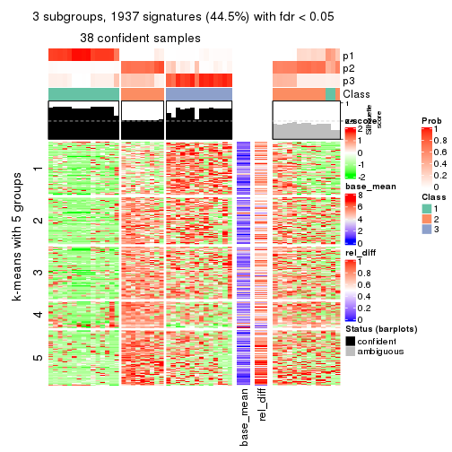
get_signatures(res, k = 4)
get_signatures(res, k = 5)
get_signatures(res, k = 6)
Signature heatmaps where rows are not scaled:
get_signatures(res, k = 2, scale_rows = FALSE)
get_signatures(res, k = 3, scale_rows = FALSE)
get_signatures(res, k = 4, scale_rows = FALSE)
get_signatures(res, k = 5, scale_rows = FALSE)
get_signatures(res, k = 6, scale_rows = FALSE)
Compare the overlap of signatures from different k:
compare_signatures(res)
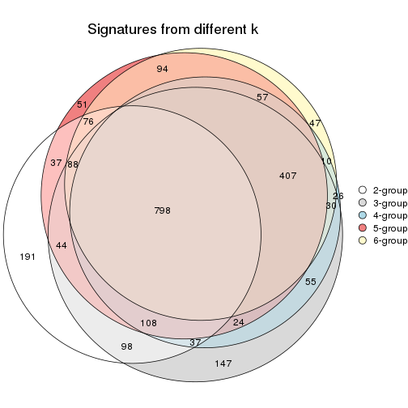
get_signature() returns a data frame invisibly. TO get the list of signatures, the function
call should be assigned to a variable explicitly. In following code, if plot argument is set
to FALSE, no heatmap is plotted while only the differential analysis is performed.
# code only for demonstration
tb = get_signature(res, k = ..., plot = FALSE)
An example of the output of tb is:
#> which_row fdr mean_1 mean_2 scaled_mean_1 scaled_mean_2 km
#> 1 38 0.042760348 8.373488 9.131774 -0.5533452 0.5164555 1
#> 2 40 0.018707592 7.106213 8.469186 -0.6173731 0.5762149 1
#> 3 55 0.019134737 10.221463 11.207825 -0.6159697 0.5749050 1
#> 4 59 0.006059896 5.921854 7.869574 -0.6899429 0.6439467 1
#> 5 60 0.018055526 8.928898 10.211722 -0.6204761 0.5791110 1
#> 6 98 0.009384629 15.714769 14.887706 0.6635654 -0.6193277 2
...
The columns in tb are:
which_row: row indices corresponding to the input matrix.fdr: FDR for the differential test. mean_x: The mean value in group x.scaled_mean_x: The mean value in group x after rows are scaled.km: Row groups if k-means clustering is applied to rows.UMAP plot which shows how samples are separated.
dimension_reduction(res, k = 2, method = "UMAP")
dimension_reduction(res, k = 3, method = "UMAP")
dimension_reduction(res, k = 4, method = "UMAP")
dimension_reduction(res, k = 5, method = "UMAP")
dimension_reduction(res, k = 6, method = "UMAP")
Following heatmap shows how subgroups are split when increasing k:
collect_classes(res)
If matrix rows can be associated to genes, consider to use GO_Enrichment(res,
...) to perform function enrichment for the signature genes.
The object with results only for a single top-value method and a single partition method can be extracted as:
res = res_list["ATC", "NMF"]
# you can also extract it by
# res = res_list["ATC:NMF"]
A summary of res and all the functions that can be applied to it:
res
#> A 'ConsensusPartition' object with k = 2, 3, 4, 5, 6.
#> On a matrix with 4352 rows and 52 columns.
#> Top rows (435, 870, 1306, 1741, 2176) are extracted by 'ATC' method.
#> Subgroups are detected by 'NMF' method.
#> Performed in total 1250 partitions by row resampling.
#> Best k for subgroups seems to be 3.
#>
#> Following methods can be applied to this 'ConsensusPartition' object:
#> [1] "cola_report" "collect_classes" "collect_plots"
#> [4] "collect_stats" "colnames" "compare_signatures"
#> [7] "consensus_heatmap" "dimension_reduction" "functional_enrichment"
#> [10] "get_anno_col" "get_anno" "get_classes"
#> [13] "get_consensus" "get_matrix" "get_membership"
#> [16] "get_param" "get_signatures" "get_stats"
#> [19] "is_best_k" "is_stable_k" "membership_heatmap"
#> [22] "ncol" "nrow" "plot_ecdf"
#> [25] "rownames" "select_partition_number" "show"
#> [28] "suggest_best_k" "test_to_known_factors"
collect_plots() function collects all the plots made from res for all k (number of partitions)
into one single page to provide an easy and fast comparison between different k.
collect_plots(res)
The plots are:
k and the heatmap of
predicted classes for each k.k.k.k.All the plots in panels can be made by individual functions and they are plotted later in this section.
select_partition_number() produces several plots showing different
statistics for choosing “optimized” k. There are following statistics:
k;k, the area increased is defined as \(A_k - A_{k-1}\).The detailed explanations of these statistics can be found in the cola vignette.
Generally speaking, lower PAC score, higher mean silhouette score or higher
concordance corresponds to better partition. Rand index and Jaccard index
measure how similar the current partition is compared to partition with k-1.
If they are too similar, we won't accept k is better than k-1.
select_partition_number(res)

The numeric values for all these statistics can be obtained by get_stats().
get_stats(res)
#> k 1-PAC mean_silhouette concordance area_increased Rand Jaccard
#> 2 2 0.560 0.775 0.904 0.4966 0.491 0.491
#> 3 3 0.681 0.795 0.896 0.3347 0.688 0.446
#> 4 4 0.569 0.734 0.802 0.0832 0.976 0.928
#> 5 5 0.523 0.533 0.739 0.0543 0.967 0.899
#> 6 6 0.534 0.384 0.675 0.0370 0.947 0.823
suggest_best_k() suggests the best \(k\) based on these statistics. The rules are as follows:
NA.suggest_best_k(res)
#> [1] 3
Following shows the table of the partitions (You need to click the show/hide
code output link to see it). The membership matrix (columns with name p*)
is inferred by
clue::cl_consensus()
function with the SE method. Basically the value in the membership matrix
represents the probability to belong to a certain group. The finall class
label for an item is determined with the group with highest probability it
belongs to.
In get_classes() function, the entropy is calculated from the membership
matrix and the silhouette score is calculated from the consensus matrix.
cbind(get_classes(res, k = 2), get_membership(res, k = 2))
#> class entropy silhouette p1 p2
#> SRR2042654 2 0.8327 0.6016 0.264 0.736
#> SRR2042653 1 0.0000 0.8651 1.000 0.000
#> SRR2042652 1 0.1414 0.8595 0.980 0.020
#> SRR2042650 1 0.0000 0.8651 1.000 0.000
#> SRR2042649 2 0.0000 0.8966 0.000 1.000
#> SRR2042647 1 0.6887 0.7958 0.816 0.184
#> SRR2042648 2 0.9983 -0.1023 0.476 0.524
#> SRR2042646 2 0.0000 0.8966 0.000 1.000
#> SRR2042645 1 0.6247 0.8158 0.844 0.156
#> SRR2042644 2 0.0000 0.8966 0.000 1.000
#> SRR2042643 1 0.0000 0.8651 1.000 0.000
#> SRR2042642 1 0.9933 0.3053 0.548 0.452
#> SRR2042640 1 0.7674 0.7555 0.776 0.224
#> SRR2042641 2 0.0000 0.8966 0.000 1.000
#> SRR2042639 2 0.3584 0.8409 0.068 0.932
#> SRR2042638 2 0.4562 0.8124 0.096 0.904
#> SRR2042637 2 0.0000 0.8966 0.000 1.000
#> SRR2042636 1 0.0938 0.8656 0.988 0.012
#> SRR2042634 1 0.0000 0.8651 1.000 0.000
#> SRR2042635 2 0.9983 -0.1023 0.476 0.524
#> SRR2042633 2 0.0000 0.8966 0.000 1.000
#> SRR2042631 1 0.6148 0.8177 0.848 0.152
#> SRR2042632 2 0.0000 0.8966 0.000 1.000
#> SRR2042630 2 0.0000 0.8966 0.000 1.000
#> SRR2042629 1 0.6973 0.7928 0.812 0.188
#> SRR2042628 2 0.0376 0.8936 0.004 0.996
#> SRR2042626 1 0.9209 0.5872 0.664 0.336
#> SRR2042627 1 0.2423 0.8582 0.960 0.040
#> SRR2042624 2 0.0000 0.8966 0.000 1.000
#> SRR2042625 1 0.7453 0.6959 0.788 0.212
#> SRR2042623 1 0.2603 0.8477 0.956 0.044
#> SRR2042622 1 0.0376 0.8644 0.996 0.004
#> SRR2042620 1 0.7219 0.7818 0.800 0.200
#> SRR2042621 2 0.0000 0.8966 0.000 1.000
#> SRR2042619 1 0.4431 0.8452 0.908 0.092
#> SRR2042618 2 0.0000 0.8966 0.000 1.000
#> SRR2042617 1 0.0000 0.8651 1.000 0.000
#> SRR2042616 2 0.0000 0.8966 0.000 1.000
#> SRR2042615 2 0.0000 0.8966 0.000 1.000
#> SRR2042614 2 0.0000 0.8966 0.000 1.000
#> SRR2042613 2 0.0000 0.8966 0.000 1.000
#> SRR2042612 2 0.7299 0.6811 0.204 0.796
#> SRR2042610 1 0.0000 0.8651 1.000 0.000
#> SRR2042611 1 0.9552 0.5063 0.624 0.376
#> SRR2042607 1 0.7219 0.7818 0.800 0.200
#> SRR2042609 1 0.4431 0.8178 0.908 0.092
#> SRR2042608 2 0.0000 0.8966 0.000 1.000
#> SRR2042656 2 0.9881 0.0556 0.436 0.564
#> SRR2042658 2 0.0000 0.8966 0.000 1.000
#> SRR2042659 1 0.0000 0.8651 1.000 0.000
#> SRR2042657 1 0.0376 0.8656 0.996 0.004
#> SRR2042655 1 0.0000 0.8651 1.000 0.000
cbind(get_classes(res, k = 3), get_membership(res, k = 3))
#> class entropy silhouette p1 p2 p3
#> SRR2042654 1 0.6647 0.240 0.540 0.008 0.452
#> SRR2042653 1 0.1411 0.874 0.964 0.036 0.000
#> SRR2042652 1 0.1289 0.875 0.968 0.032 0.000
#> SRR2042650 1 0.2261 0.875 0.932 0.068 0.000
#> SRR2042649 3 0.0000 0.845 0.000 0.000 1.000
#> SRR2042647 2 0.0747 0.927 0.016 0.984 0.000
#> SRR2042648 2 0.2772 0.897 0.004 0.916 0.080
#> SRR2042646 3 0.0424 0.842 0.008 0.000 0.992
#> SRR2042645 2 0.1031 0.924 0.024 0.976 0.000
#> SRR2042644 3 0.0829 0.846 0.004 0.012 0.984
#> SRR2042643 1 0.5678 0.603 0.684 0.316 0.000
#> SRR2042642 2 0.2301 0.909 0.004 0.936 0.060
#> SRR2042640 2 0.1182 0.929 0.012 0.976 0.012
#> SRR2042641 3 0.0000 0.845 0.000 0.000 1.000
#> SRR2042639 2 0.5012 0.734 0.008 0.788 0.204
#> SRR2042638 2 0.4629 0.765 0.004 0.808 0.188
#> SRR2042637 3 0.0000 0.845 0.000 0.000 1.000
#> SRR2042636 2 0.1163 0.922 0.028 0.972 0.000
#> SRR2042634 2 0.3267 0.839 0.116 0.884 0.000
#> SRR2042635 2 0.2772 0.896 0.004 0.916 0.080
#> SRR2042633 3 0.2796 0.811 0.000 0.092 0.908
#> SRR2042631 2 0.0661 0.928 0.008 0.988 0.004
#> SRR2042632 3 0.0000 0.845 0.000 0.000 1.000
#> SRR2042630 3 0.1289 0.842 0.000 0.032 0.968
#> SRR2042629 2 0.0475 0.928 0.004 0.992 0.004
#> SRR2042628 3 0.4178 0.697 0.172 0.000 0.828
#> SRR2042626 2 0.1453 0.926 0.008 0.968 0.024
#> SRR2042627 1 0.3267 0.848 0.884 0.116 0.000
#> SRR2042624 3 0.0592 0.844 0.012 0.000 0.988
#> SRR2042625 1 0.1182 0.867 0.976 0.012 0.012
#> SRR2042623 1 0.1289 0.875 0.968 0.032 0.000
#> SRR2042622 1 0.1289 0.874 0.968 0.032 0.000
#> SRR2042620 2 0.0983 0.928 0.016 0.980 0.004
#> SRR2042621 3 0.0592 0.844 0.012 0.000 0.988
#> SRR2042619 2 0.0592 0.927 0.012 0.988 0.000
#> SRR2042618 3 0.6298 0.414 0.004 0.388 0.608
#> SRR2042617 1 0.2959 0.862 0.900 0.100 0.000
#> SRR2042616 3 0.6442 0.307 0.004 0.432 0.564
#> SRR2042615 3 0.6314 0.410 0.004 0.392 0.604
#> SRR2042614 3 0.6680 0.135 0.008 0.484 0.508
#> SRR2042613 3 0.1399 0.843 0.004 0.028 0.968
#> SRR2042612 1 0.6345 0.364 0.596 0.004 0.400
#> SRR2042610 1 0.4887 0.731 0.772 0.228 0.000
#> SRR2042611 2 0.1399 0.925 0.004 0.968 0.028
#> SRR2042607 2 0.0829 0.929 0.012 0.984 0.004
#> SRR2042609 1 0.1399 0.874 0.968 0.028 0.004
#> SRR2042608 3 0.2711 0.814 0.000 0.088 0.912
#> SRR2042656 2 0.3618 0.878 0.012 0.884 0.104
#> SRR2042658 3 0.0747 0.837 0.016 0.000 0.984
#> SRR2042659 1 0.1964 0.876 0.944 0.056 0.000
#> SRR2042657 2 0.3551 0.826 0.132 0.868 0.000
#> SRR2042655 1 0.2165 0.875 0.936 0.064 0.000
cbind(get_classes(res, k = 4), get_membership(res, k = 4))
#> class entropy silhouette p1 p2 p3 p4
#> SRR2042654 1 0.5442 0.498 0.672 0.000 0.288 NA
#> SRR2042653 1 0.4250 0.805 0.724 0.000 0.000 NA
#> SRR2042652 1 0.1474 0.812 0.948 0.000 0.000 NA
#> SRR2042650 1 0.5123 0.807 0.724 0.044 0.000 NA
#> SRR2042649 3 0.0469 0.801 0.000 0.000 0.988 NA
#> SRR2042647 2 0.2999 0.845 0.004 0.864 0.000 NA
#> SRR2042648 2 0.2224 0.842 0.000 0.928 0.040 NA
#> SRR2042646 3 0.1305 0.798 0.004 0.000 0.960 NA
#> SRR2042645 2 0.4820 0.746 0.012 0.692 0.000 NA
#> SRR2042644 3 0.1042 0.804 0.000 0.008 0.972 NA
#> SRR2042643 1 0.7115 0.639 0.452 0.128 0.000 NA
#> SRR2042642 2 0.2408 0.839 0.000 0.920 0.044 NA
#> SRR2042640 2 0.1743 0.856 0.000 0.940 0.004 NA
#> SRR2042641 3 0.1837 0.802 0.000 0.028 0.944 NA
#> SRR2042639 2 0.4793 0.660 0.000 0.756 0.204 NA
#> SRR2042638 2 0.4467 0.708 0.000 0.788 0.172 NA
#> SRR2042637 3 0.0895 0.803 0.000 0.004 0.976 NA
#> SRR2042636 2 0.4516 0.762 0.012 0.736 0.000 NA
#> SRR2042634 2 0.5790 0.682 0.080 0.684 0.000 NA
#> SRR2042635 2 0.2644 0.830 0.000 0.908 0.060 NA
#> SRR2042633 3 0.2376 0.796 0.000 0.068 0.916 NA
#> SRR2042631 2 0.2773 0.846 0.004 0.880 0.000 NA
#> SRR2042632 3 0.0469 0.802 0.000 0.000 0.988 NA
#> SRR2042630 3 0.2542 0.791 0.000 0.084 0.904 NA
#> SRR2042629 2 0.2593 0.848 0.004 0.892 0.000 NA
#> SRR2042628 3 0.6090 0.608 0.092 0.008 0.688 NA
#> SRR2042626 2 0.1174 0.854 0.000 0.968 0.012 NA
#> SRR2042627 1 0.4925 0.816 0.752 0.036 0.004 NA
#> SRR2042624 3 0.2796 0.785 0.008 0.004 0.892 NA
#> SRR2042625 1 0.5699 0.748 0.588 0.000 0.032 NA
#> SRR2042623 1 0.1305 0.808 0.960 0.000 0.004 NA
#> SRR2042622 1 0.4485 0.808 0.740 0.012 0.000 NA
#> SRR2042620 2 0.2773 0.852 0.000 0.880 0.004 NA
#> SRR2042621 3 0.2048 0.800 0.000 0.008 0.928 NA
#> SRR2042619 2 0.3208 0.840 0.004 0.848 0.000 NA
#> SRR2042618 3 0.5989 0.384 0.000 0.400 0.556 NA
#> SRR2042617 1 0.6356 0.764 0.596 0.084 0.000 NA
#> SRR2042616 3 0.5827 0.392 0.000 0.396 0.568 NA
#> SRR2042615 3 0.5596 0.526 0.000 0.332 0.632 NA
#> SRR2042614 3 0.5869 0.467 0.000 0.360 0.596 NA
#> SRR2042613 3 0.2131 0.801 0.000 0.036 0.932 NA
#> SRR2042612 3 0.7896 -0.250 0.352 0.000 0.356 NA
#> SRR2042610 1 0.6351 0.743 0.588 0.080 0.000 NA
#> SRR2042611 2 0.1798 0.847 0.000 0.944 0.016 NA
#> SRR2042607 2 0.2647 0.849 0.000 0.880 0.000 NA
#> SRR2042609 1 0.0895 0.809 0.976 0.000 0.004 NA
#> SRR2042608 3 0.4966 0.726 0.000 0.156 0.768 NA
#> SRR2042656 2 0.3812 0.769 0.000 0.832 0.140 NA
#> SRR2042658 3 0.1305 0.798 0.004 0.000 0.960 NA
#> SRR2042659 1 0.5712 0.767 0.644 0.048 0.000 NA
#> SRR2042657 2 0.5599 0.661 0.040 0.644 0.000 NA
#> SRR2042655 1 0.5010 0.797 0.700 0.024 0.000 NA
cbind(get_classes(res, k = 5), get_membership(res, k = 5))
#> class entropy silhouette p1 p2 p3 p4 p5
#> SRR2042654 1 0.445 0.2399 0.752 0.000 0.192 0.048 0.008
#> SRR2042653 1 0.585 0.2319 0.564 0.000 0.000 0.316 0.120
#> SRR2042652 1 0.177 0.4380 0.932 0.000 0.000 0.052 0.016
#> SRR2042650 1 0.693 0.2228 0.548 0.048 0.000 0.168 0.236
#> SRR2042649 3 0.219 0.7666 0.000 0.000 0.904 0.084 0.012
#> SRR2042647 2 0.349 0.7295 0.000 0.796 0.000 0.016 0.188
#> SRR2042648 2 0.267 0.7414 0.000 0.892 0.072 0.008 0.028
#> SRR2042646 3 0.284 0.7582 0.004 0.000 0.868 0.112 0.016
#> SRR2042645 2 0.616 0.4023 0.040 0.516 0.000 0.052 0.392
#> SRR2042644 3 0.136 0.7825 0.000 0.028 0.956 0.004 0.012
#> SRR2042643 5 0.812 0.0000 0.304 0.096 0.000 0.276 0.324
#> SRR2042642 2 0.265 0.7444 0.000 0.896 0.056 0.008 0.040
#> SRR2042640 2 0.198 0.7588 0.000 0.920 0.000 0.016 0.064
#> SRR2042641 3 0.365 0.7373 0.000 0.028 0.816 0.148 0.008
#> SRR2042639 2 0.505 0.4702 0.000 0.644 0.304 0.004 0.048
#> SRR2042638 2 0.434 0.6492 0.000 0.760 0.188 0.008 0.044
#> SRR2042637 3 0.107 0.7812 0.000 0.012 0.968 0.016 0.004
#> SRR2042636 2 0.505 0.5325 0.004 0.588 0.000 0.032 0.376
#> SRR2042634 2 0.649 0.4833 0.048 0.564 0.000 0.088 0.300
#> SRR2042635 2 0.261 0.7433 0.000 0.892 0.076 0.004 0.028
#> SRR2042633 3 0.269 0.7789 0.000 0.044 0.900 0.028 0.028
#> SRR2042631 2 0.325 0.7345 0.000 0.808 0.000 0.008 0.184
#> SRR2042632 3 0.157 0.7732 0.000 0.000 0.936 0.060 0.004
#> SRR2042630 3 0.359 0.7574 0.000 0.096 0.840 0.052 0.012
#> SRR2042629 2 0.391 0.7100 0.000 0.760 0.000 0.024 0.216
#> SRR2042628 3 0.713 0.3407 0.044 0.012 0.556 0.228 0.160
#> SRR2042626 2 0.140 0.7593 0.000 0.952 0.020 0.000 0.028
#> SRR2042627 1 0.644 0.2259 0.580 0.012 0.016 0.280 0.112
#> SRR2042624 3 0.427 0.6992 0.004 0.004 0.792 0.112 0.088
#> SRR2042625 4 0.577 0.0554 0.308 0.000 0.020 0.604 0.068
#> SRR2042623 1 0.177 0.4495 0.932 0.000 0.000 0.052 0.016
#> SRR2042622 1 0.654 0.2140 0.588 0.016 0.008 0.188 0.200
#> SRR2042620 2 0.289 0.7493 0.000 0.844 0.000 0.008 0.148
#> SRR2042621 3 0.307 0.7607 0.004 0.012 0.880 0.048 0.056
#> SRR2042619 2 0.453 0.6773 0.000 0.724 0.000 0.056 0.220
#> SRR2042618 3 0.450 0.5731 0.000 0.316 0.664 0.004 0.016
#> SRR2042617 1 0.734 -0.1064 0.428 0.036 0.000 0.312 0.224
#> SRR2042616 3 0.470 0.6035 0.000 0.292 0.676 0.016 0.016
#> SRR2042615 3 0.424 0.6714 0.000 0.228 0.740 0.004 0.028
#> SRR2042614 3 0.455 0.6455 0.000 0.256 0.708 0.008 0.028
#> SRR2042613 3 0.176 0.7818 0.000 0.036 0.940 0.008 0.016
#> SRR2042612 4 0.604 0.3381 0.180 0.000 0.188 0.620 0.012
#> SRR2042610 1 0.748 -0.2719 0.452 0.052 0.000 0.248 0.248
#> SRR2042611 2 0.215 0.7523 0.000 0.920 0.032 0.004 0.044
#> SRR2042607 2 0.379 0.7236 0.004 0.776 0.000 0.016 0.204
#> SRR2042609 1 0.201 0.4449 0.916 0.000 0.000 0.072 0.012
#> SRR2042608 3 0.649 0.5318 0.004 0.160 0.604 0.204 0.028
#> SRR2042656 2 0.393 0.7155 0.000 0.816 0.120 0.016 0.048
#> SRR2042658 3 0.313 0.7297 0.000 0.000 0.820 0.172 0.008
#> SRR2042659 1 0.667 0.1563 0.528 0.024 0.000 0.152 0.296
#> SRR2042657 2 0.635 0.3028 0.024 0.476 0.000 0.088 0.412
#> SRR2042655 1 0.695 0.1993 0.560 0.044 0.012 0.116 0.268
cbind(get_classes(res, k = 6), get_membership(res, k = 6))
#> class entropy silhouette p1 p2 p3 p4 p5 p6
#> SRR2042654 1 0.310 0.3889 0.852 0.004 0.104 0.004 0.008 0.028
#> SRR2042653 5 0.577 0.1387 0.436 0.016 0.000 0.024 0.468 0.056
#> SRR2042652 1 0.274 0.4077 0.880 0.000 0.000 0.032 0.060 0.028
#> SRR2042650 1 0.751 -0.0724 0.396 0.040 0.000 0.180 0.320 0.064
#> SRR2042649 3 0.254 0.6953 0.000 0.004 0.852 0.004 0.000 0.140
#> SRR2042647 2 0.425 0.1891 0.000 0.696 0.000 0.260 0.036 0.008
#> SRR2042648 2 0.201 0.5309 0.000 0.904 0.084 0.008 0.000 0.004
#> SRR2042646 3 0.230 0.6935 0.000 0.000 0.856 0.000 0.000 0.144
#> SRR2042645 2 0.666 -0.3473 0.024 0.440 0.000 0.388 0.100 0.048
#> SRR2042644 3 0.199 0.7307 0.000 0.052 0.912 0.000 0.000 0.036
#> SRR2042643 5 0.755 0.1991 0.148 0.036 0.000 0.272 0.440 0.104
#> SRR2042642 2 0.312 0.5232 0.000 0.856 0.088 0.024 0.004 0.028
#> SRR2042640 2 0.304 0.4636 0.000 0.864 0.012 0.084 0.020 0.020
#> SRR2042641 3 0.479 0.6436 0.000 0.072 0.708 0.008 0.016 0.196
#> SRR2042639 2 0.478 0.3353 0.000 0.656 0.284 0.024 0.004 0.032
#> SRR2042638 2 0.426 0.4390 0.000 0.740 0.192 0.020 0.000 0.048
#> SRR2042637 3 0.194 0.7327 0.000 0.040 0.920 0.004 0.000 0.036
#> SRR2042636 4 0.564 0.4547 0.000 0.428 0.000 0.468 0.080 0.024
#> SRR2042634 2 0.751 -0.4217 0.036 0.384 0.000 0.332 0.180 0.068
#> SRR2042635 2 0.331 0.5185 0.000 0.840 0.108 0.020 0.008 0.024
#> SRR2042633 3 0.252 0.7225 0.000 0.032 0.888 0.012 0.000 0.068
#> SRR2042631 2 0.389 0.2489 0.000 0.752 0.000 0.208 0.024 0.016
#> SRR2042632 3 0.170 0.7185 0.000 0.000 0.916 0.004 0.000 0.080
#> SRR2042630 3 0.451 0.6795 0.000 0.148 0.748 0.012 0.012 0.080
#> SRR2042629 2 0.436 -0.0493 0.000 0.644 0.000 0.324 0.016 0.016
#> SRR2042628 3 0.726 0.1848 0.048 0.000 0.496 0.112 0.088 0.256
#> SRR2042626 2 0.172 0.5008 0.000 0.932 0.016 0.044 0.000 0.008
#> SRR2042627 5 0.609 0.1828 0.404 0.016 0.012 0.048 0.488 0.032
#> SRR2042624 3 0.455 0.5839 0.000 0.004 0.716 0.064 0.012 0.204
#> SRR2042625 6 0.694 0.1169 0.240 0.000 0.012 0.044 0.260 0.444
#> SRR2042623 1 0.146 0.4430 0.944 0.000 0.000 0.004 0.036 0.016
#> SRR2042622 1 0.721 0.1587 0.512 0.032 0.000 0.124 0.216 0.116
#> SRR2042620 2 0.353 0.3717 0.000 0.792 0.004 0.176 0.016 0.012
#> SRR2042621 3 0.359 0.6557 0.000 0.004 0.800 0.044 0.004 0.148
#> SRR2042619 2 0.552 0.0861 0.000 0.656 0.000 0.180 0.104 0.060
#> SRR2042618 3 0.488 0.5031 0.000 0.332 0.608 0.008 0.004 0.048
#> SRR2042617 5 0.745 0.3119 0.248 0.052 0.000 0.164 0.468 0.068
#> SRR2042616 3 0.480 0.4751 0.000 0.356 0.592 0.012 0.000 0.040
#> SRR2042615 3 0.445 0.6422 0.000 0.240 0.704 0.016 0.004 0.036
#> SRR2042614 3 0.406 0.6427 0.000 0.240 0.720 0.008 0.000 0.032
#> SRR2042613 3 0.224 0.7316 0.000 0.072 0.900 0.008 0.000 0.020
#> SRR2042612 6 0.647 0.3534 0.152 0.000 0.160 0.012 0.088 0.588
#> SRR2042610 5 0.699 0.3446 0.260 0.036 0.000 0.128 0.512 0.064
#> SRR2042611 2 0.248 0.5213 0.000 0.904 0.036 0.024 0.016 0.020
#> SRR2042607 2 0.461 0.0715 0.000 0.664 0.000 0.280 0.020 0.036
#> SRR2042609 1 0.137 0.4337 0.948 0.000 0.000 0.004 0.036 0.012
#> SRR2042608 3 0.688 0.4123 0.000 0.168 0.512 0.060 0.020 0.240
#> SRR2042656 2 0.423 0.4785 0.000 0.768 0.152 0.044 0.004 0.032
#> SRR2042658 3 0.351 0.6232 0.008 0.004 0.740 0.000 0.000 0.248
#> SRR2042659 1 0.773 0.0884 0.436 0.040 0.004 0.244 0.188 0.088
#> SRR2042657 4 0.680 0.5301 0.020 0.384 0.000 0.392 0.176 0.028
#> SRR2042655 1 0.787 -0.0385 0.340 0.052 0.000 0.232 0.304 0.072
Heatmaps for the consensus matrix. It visualizes the probability of two samples to be in a same group.
consensus_heatmap(res, k = 2)
consensus_heatmap(res, k = 3)
consensus_heatmap(res, k = 4)
consensus_heatmap(res, k = 5)
consensus_heatmap(res, k = 6)
Heatmaps for the membership of samples in all partitions to see how consistent they are:
membership_heatmap(res, k = 2)
membership_heatmap(res, k = 3)
membership_heatmap(res, k = 4)

membership_heatmap(res, k = 5)

membership_heatmap(res, k = 6)
As soon as we have had the classes for columns, we can look for signatures which are significantly different between classes which can be candidate marks for certain classes. Following are the heatmaps for signatures.
Signature heatmaps where rows are scaled:
get_signatures(res, k = 2)
get_signatures(res, k = 3)
get_signatures(res, k = 4)
get_signatures(res, k = 5)
get_signatures(res, k = 6)
Signature heatmaps where rows are not scaled:
get_signatures(res, k = 2, scale_rows = FALSE)
get_signatures(res, k = 3, scale_rows = FALSE)

get_signatures(res, k = 4, scale_rows = FALSE)

get_signatures(res, k = 5, scale_rows = FALSE)
get_signatures(res, k = 6, scale_rows = FALSE)
Compare the overlap of signatures from different k:
compare_signatures(res)
get_signature() returns a data frame invisibly. TO get the list of signatures, the function
call should be assigned to a variable explicitly. In following code, if plot argument is set
to FALSE, no heatmap is plotted while only the differential analysis is performed.
# code only for demonstration
tb = get_signature(res, k = ..., plot = FALSE)
An example of the output of tb is:
#> which_row fdr mean_1 mean_2 scaled_mean_1 scaled_mean_2 km
#> 1 38 0.042760348 8.373488 9.131774 -0.5533452 0.5164555 1
#> 2 40 0.018707592 7.106213 8.469186 -0.6173731 0.5762149 1
#> 3 55 0.019134737 10.221463 11.207825 -0.6159697 0.5749050 1
#> 4 59 0.006059896 5.921854 7.869574 -0.6899429 0.6439467 1
#> 5 60 0.018055526 8.928898 10.211722 -0.6204761 0.5791110 1
#> 6 98 0.009384629 15.714769 14.887706 0.6635654 -0.6193277 2
...
The columns in tb are:
which_row: row indices corresponding to the input matrix.fdr: FDR for the differential test. mean_x: The mean value in group x.scaled_mean_x: The mean value in group x after rows are scaled.km: Row groups if k-means clustering is applied to rows.UMAP plot which shows how samples are separated.
dimension_reduction(res, k = 2, method = "UMAP")
dimension_reduction(res, k = 3, method = "UMAP")
dimension_reduction(res, k = 4, method = "UMAP")
dimension_reduction(res, k = 5, method = "UMAP")
dimension_reduction(res, k = 6, method = "UMAP")
Following heatmap shows how subgroups are split when increasing k:
collect_classes(res)
If matrix rows can be associated to genes, consider to use GO_Enrichment(res,
...) to perform function enrichment for the signature genes.
sessionInfo()
#> R version 3.6.0 (2019-04-26)
#> Platform: x86_64-pc-linux-gnu (64-bit)
#> Running under: CentOS Linux 7 (Core)
#>
#> Matrix products: default
#> BLAS: /usr/lib64/libblas.so.3.4.2
#> LAPACK: /usr/lib64/liblapack.so.3.4.2
#>
#> locale:
#> [1] LC_CTYPE=en_GB.UTF-8 LC_NUMERIC=C LC_TIME=en_GB.UTF-8
#> [4] LC_COLLATE=en_GB.UTF-8 LC_MONETARY=en_GB.UTF-8 LC_MESSAGES=en_GB.UTF-8
#> [7] LC_PAPER=en_GB.UTF-8 LC_NAME=C LC_ADDRESS=C
#> [10] LC_TELEPHONE=C LC_MEASUREMENT=en_GB.UTF-8 LC_IDENTIFICATION=C
#>
#> attached base packages:
#> [1] grid parallel stats4 stats graphics grDevices utils datasets methods
#> [10] base
#>
#> other attached packages:
#> [1] genefilter_1.66.0 ComplexHeatmap_2.1.1 markdown_1.1
#> [4] knitr_1.26 cola_1.3.2 SummarizedExperiment_1.14.1
#> [7] DelayedArray_0.10.0 BiocParallel_1.18.1 matrixStats_0.55.0
#> [10] Biobase_2.44.0 GenomicRanges_1.36.1 GenomeInfoDb_1.20.0
#> [13] IRanges_2.18.3 S4Vectors_0.22.1 BiocGenerics_0.30.0
#> [16] GetoptLong_0.1.7
#>
#> loaded via a namespace (and not attached):
#> [1] bitops_1.0-6 bit64_0.9-7 doParallel_1.0.15 RColorBrewer_1.1-2
#> [5] httr_1.4.1 backports_1.1.5 tools_3.6.0 R6_2.4.1
#> [9] DBI_1.0.0 lazyeval_0.2.2 colorspace_1.4-1 withr_2.1.2
#> [13] tidyselect_0.2.5 gridExtra_2.3 bit_1.1-14 compiler_3.6.0
#> [17] xml2_1.2.2 microbenchmark_1.4-7 pkgmaker_0.28 slam_0.1-46
#> [21] scales_1.1.0 NMF_0.23.6 stringr_1.4.0 digest_0.6.23
#> [25] XVector_0.24.0 pkgconfig_2.0.3 bibtex_0.4.2 highr_0.8
#> [29] rlang_0.4.2 GlobalOptions_0.1.1 RSQLite_2.1.2 impute_1.58.0
#> [33] shape_1.4.4 mclust_5.4.5 dendextend_1.12.0 dplyr_0.8.3
#> [37] RCurl_1.95-4.12 magrittr_1.5 GenomeInfoDbData_1.2.1 Matrix_1.2-17
#> [41] Rcpp_1.0.3 munsell_0.5.0 viridis_0.5.1 lifecycle_0.1.0
#> [45] stringi_1.4.3 zlibbioc_1.30.0 plyr_1.8.4 blob_1.2.0
#> [49] crayon_1.3.4 lattice_0.20-38 splines_3.6.0 annotate_1.62.0
#> [53] circlize_0.4.9 zeallot_0.1.0 pillar_1.4.2 rjson_0.2.20
#> [57] rngtools_1.4 reshape2_1.4.3 codetools_0.2-16 XML_3.98-1.20
#> [61] glue_1.3.1 evaluate_0.14 vctrs_0.2.0 png_0.1-7
#> [65] foreach_1.4.7 polyclip_1.10-0 gtable_0.3.0 purrr_0.3.3
#> [69] clue_0.3-57 assertthat_0.2.1 ggplot2_3.2.1 xfun_0.11
#> [73] gridBase_0.4-7 eulerr_6.0.0 xtable_1.8-4 skmeans_0.2-11
#> [77] survival_2.44-1.1 viridisLite_0.3.0 tibble_2.1.3 iterators_1.0.12
#> [81] memoise_1.1.0 AnnotationDbi_1.46.1 registry_0.5-1 GTF_0.0.1
#> [85] cluster_2.1.0 brew_1.0-6